生成时间：2026-09-16T13:13:17+08:00
今日保留论文数：12
内容构成：今日新文 12 篇；补充推荐 0 篇；经典旧文精读 0 篇
高能天体物理重点
1. Constraints on the central engine of merger-driven long gamma-ray bursts
- 来源：arXiv / astro-ph.HE
- 链接：https://arxiv.org/abs/2609.17507v1
- 作者：Muskan Yadav, Roberto Ricci, Paz Beniamini, Hira Waseem, Tatsuya Matsumoto, Simone Dichiara, Eleonora Troja
- 评分：novelty 8/10，importance 8/10，relevance 10/10，final 9.70/10
- 推荐理由：直接涉及长时标GRB及其并合起源中央引擎，用ATCA晚期射电非探测和prompt伽马辐射联合约束磁星模型；GRB/伽马射线天文高度相关，样本化约束有阅读价值。
中文题目：并合驱动长伽马暴中心引擎的限制
做了什么：这篇文章研究一类“持续时间很长、但很可能由致密双星并合产生”的伽马暴，核心问题是：它们的长时标 prompt 或 extended gamma-ray emission 是否能由并合后形成的毫秒磁星供能。作者用 ATCA 在 \(2.1\,\mathrm{GHz}\) 对 \(7\) 个近邻候选事件做了晚期射电观测，时间覆盖爆发后约 \(520\) 到 \(6900\) 天，全部未探测到，对应 \(3\sigma\) 流量密度上限约 \(33\) 到 \(72\,\mu\mathrm{Jy}\)。他们将这些上限与磁星注能抛射物同周围介质相互作用产生的同步辐射模型比较，同时用 fallback-accreting magnetar 模型去解释伽马射线延展辐射。结论是：射电未探测本身并不能排除高能磁星外流，只要环境密度较低；但把 prompt 端的能量、持续时间、fallback 吸积和喷流重子加载一起考虑后，允许的磁星初始自转周期和磁场参数空间会变得很窄。
为什么重要：长伽马暴传统上多与大质量恒星坍缩相连，而短伽马暴多与致密双星并合相连；近年来若干长时标事件却显示出并合和千新星迹象，打破了用 \(T_{90}\) 简单分类的经验图像。这篇文章的重要性在于，它不只是说这些事件“可能来自并合”，而是进一步问：如果并合后中心残留物是一颗短寿命或长寿命磁星，它是否能同时满足伽马射线能量学和晚期射电非探测的限制。
理论 / 观测 / 仪器方法价值：对理论而言，文章把磁星自转能、偶极自旋下降、fallback 吸积和喷流重子污染这些通常分开讨论的约束放到同一框架下，给出中心引擎可行区间。对观测而言，它展示了晚期低频射电上限如何限制并合后准各向同性能量注入和外部介质密度。对方法而言，它提醒读者：射电非探测不是简单的“没有磁星”，而是能量、密度、微物理参数和观测时刻共同决定的限制。
为什么应该关注：如果你关心伽马暴分类、并合遗迹、千新星与多信使天文学，这篇文章值得看，因为它针对的是一个正在变得核心的问题：长时标高能瞬变中到底有多少是并合事件，它们的中心引擎是否真的需要磁星。它也给未来 ngVLA、SKA 和更深 ATCA/VLA 监测提供了直接的观测设计线索：什么时间、什么频率、什么灵敏度才能真正区分低密度环境中的磁星外流与黑洞吸积模型。
展开详细解读：文章讲解、背景、理论、重点章节、图表与相关工作
文章详细讲解
科学问题：本文处理的是“并合驱动长伽马暴”这一新兴类别。传统分类中，长伽马暴通常由塌缩星产生，短伽马暴由双中子星或中子星-黑洞并合产生；但近年若干长持续时间事件显示出低红移、可能千新星、宿主环境和余辉性质等并合线索。若这些事件确实来自并合，那么长时间伽马射线辐射需要一个能持续供能的中心引擎。一个自然候选是并合后形成的快速旋转强磁场中子星，即毫秒磁星。本文要检验的是：这样的磁星是否可以同时解释长时间高能辐射，并且不违反晚期射电非探测。
作者怎么做：作者选取 \(z<0.25\) 的 \(7\) 个近邻并合驱动长伽马暴候选体，用 Australia Telescope Compact Array 在 \(2.1\,\mathrm{GHz}\) 进行晚期观测。观测时刻在爆发后约 \(520\) 至 \(6900\) 天，正好对应磁星注能抛射物减速并可能在射电波段变亮的阶段。所有目标均未探测到射电对应体，给出 \(3\sigma\) 上限 \(33\) 至 \(72\,\mu\mathrm{Jy}\)。他们随后计算磁星注能抛射物与 circumburst medium 相互作用时产生的同步辐射光变，将模型流量与这些上限比较。
关键结果：射电端最直接的结论是非探测并不等价于排除磁星。若并合环境密度低，或微物理参数使电子、磁场分得的能量较小，即使抛射物含有相当大的磁星转动能，晚期 \(2.1\,\mathrm{GHz}\) 流量也可以低于当前上限。因此射电观测给出的主要是联合约束：能量越高，允许的外部密度越低；密度越高，则磁星可注入的动能越受限。另一方面，伽马射线 prompt 或 extended emission 对中心引擎的自转周期和磁场给出更直接的能量和时间尺度约束。把 fallback 吸积与喷流重子加载纳入后，只有较窄的 \(P_0\) 与 \(B\) 区间能同时满足总能量、持续时间和喷流清洁度要求。
局限和下一步：本文的主要局限来自非探测本身的退化性。射电上限同时依赖爆发距离、介质密度、抛射物速度结构、几何开角、电子能谱指数、\(\epsilon_e\)、\(\epsilon_B\) 和吸收效应。单一频率晚期上限很难唯一反演中心引擎。下一步需要更深的多频射电监测，尤其是在模型预期峰值附近的时间采样；也需要把千新星光变、X 射线余辉、宿主环境密度诊断和伽马射线时变谱一起纳入层级贝叶斯框架。对单个明亮近邻事件，VLBI 尺度膨胀或位置偏移也可能帮助区分准各向同性磁星风泡与窄喷流余辉。
关键结果是怎么做出来的
样本选择方面，文章聚焦 \(7\) 个 \(z<0.25\) 的近邻 merger-driven long GRB 候选体，而不是普通长伽马暴全集。这个选择很关键：近邻样本让射电上限对应的光度上限更有物理意义，也使千新星或宿主环境证据更容易与并合起源相联系。样本量不大，但这是由这类事件本身稀少、且需要较强并合判据决定的。读者应关注表格中每个事件的红移、观测距爆发时间、噪声水平和流量上限，因为这些量直接决定能量-密度约束强弱。
观测证据链很直接：ATCA 在 \(2.1\,\mathrm{GHz}\) 给出所有目标的非探测，\(3\sigma\) 上限为 \(33\) 至 \(72\,\mu\mathrm{Jy}\)。这里的显著性不是“发现显著性”，而是用局部图像 rms 噪声换算的上限。对每个源，作者需要确认目标位置附近没有混淆源、宿主射电辐射或成像残差主导噪声。最支撑结论的图表应包括射电图像或上限表，以及模型光变同这些上限的比较图。
模型比较方面，作者计算磁星注能抛射物在外部介质中驱动冲击后的同步辐射。关键可调量包括磁星初始自转能、表面偶极磁场、抛射物质量或速度、外部数密度以及微物理参数。由于非探测只提供上限，统计判断通常表现为排除那些在观测时刻预测流量高于 \(3\sigma\) 上限的参数组合，而不是在多个模型之间给出强 Bayes 因子。读图时应看清模型曲线是否跨过上限箭头，以及这种排除是否只发生在高密度或高 \(\epsilon_B\) 假设下。
伽马射线端的核心约束来自 extended emission 的能量和持续时间。磁星模型要求初始自转周期足够短以提供能量，同时磁场又要让自旋下降时间同观测持续时间相当；fallback 吸积会改变引擎光度随时间的演化，也可能通过重子加载影响喷流能否达到高洛伦兹因子。作者的关键结论是：如果只看射电，上限允许范围较宽；但加上 prompt 的能量学和喷流条件后，允许参数空间显著收缩。
系统误差主要来自环境密度和微物理参数。低密度环境会把射电峰值压低并推迟，高密度环境则增强晚期射电；\(\epsilon_B\) 的数量级不确定性可显著改变模型流量。另一个稳健性问题是样本是否真的都是并合驱动事件，如果其中混入塌缩星长伽马暴，中心引擎解释会变得不统一。因此读者应把“磁星仍可行”理解为在当前样本判据和模型假设下的条件性结论，而不是无条件证实。
展开背景、理论、公式、模型、章节和图表导读
背景知识
研究对象是长持续时间但疑似由致密双星并合驱动的伽马暴。伽马暴传统上用 \(T_{90}\) 分成短暴和长暴，阈值约在 \(2\,\mathrm{s}\) 附近；但这个分类从一开始就是观测经验，而不是物理起源的严格划分。短暴可以有 extended emission，长暴也可能在某些条件下来自并合，尤其当观测到千新星、宿主星系偏移或缺乏超新星迹象时。
历史问题在于中心引擎退化。一个并合事件可以形成黑洞加吸积盘，也可以暂时形成超大质量或稳定中子星。如果形成磁星，其巨大转动能可以通过磁偶极辐射、磁星风和喷流注入到外流中，解释长时标高能辐射和后期余辉增强。但同样的高能辐射也可能来自 fallback accretion onto a black hole、喷流角结构、外部冲击刷新或观测角效应。
观测背景上，晚期射电是检验能量注入的有力窗口。并合后若有大量亚相对论或 mildly relativistic 抛射物获得磁星能量，它最终会扫起外部介质并产生同步辐射，峰值可能出现在数百天到数十年尺度。近邻事件尤其适合做这种检验，因为同样的流量上限对应更低的射电光度上限。
为什么现在值得重新看：一方面，GRB 211211A 和 GRB 230307A 等事件让“长时标并合暴”从边缘现象变成必须纳入分类体系的问题；另一方面，ATCA、VLA、MeerKAT 以及未来 SKA/ngVLA 的灵敏度足以在几年到十几年尺度上约束并合外流。理论上，中子星状态方程、并合残留物寿命和喷流形成机制都同磁星模型紧密相关。
常见误区有三个。第一，不能把 \(T_{90}>2\,\mathrm{s}\) 直接等同于塌缩星起源。第二，不能把射电非探测直接解释为没有高能磁星，因为低外部密度或低磁场微物理参数会压低射电。第三，不能只用磁星总转动能判断可行性，还必须同时满足自旋下降时间、伽马射线效率、喷流重子污染和外流动力学。
基础理论 / 方法脉络
基础物理图像是：并合后若形成快速旋转中子星，它储存的转动能可以达到 \(10^{52}\,\mathrm{erg}\) 量级。强磁场通过磁偶极辐射和磁星风抽取这部分能量，一部分可能驱动相对论喷流形成 prompt gamma-ray emission，另一部分注入较慢抛射物，增加其动能。被加速的抛射物随后与周围介质相互作用，产生外部冲击和同步辐射。
本文涉及两个互补约束。第一个是晚期射电约束，它主要看磁星注能外流在给定观测时刻是否应当亮到可被 ATCA 探测。这个过程依赖外部介质数密度 \(n\)、外流能量 \(E\)、速度 \(v\)、电子能量分数 \(\epsilon_e\)、磁场能量分数 \(\epsilon_B\) 和电子谱指数 \(p\)。在非相对论或 mildly relativistic 阶段，射电峰值和峰时对 \(E\) 与 \(n\) 非常敏感。
第二个是 prompt 或 extended emission 约束。磁星要解释长时间伽马射线辐射，其自旋下降时间 \(t_{\rm sd}\) 不能远短于观测持续时间，否则能量释放过快；也不能远长于持续时间，否则瞬时光度不足。初始自转周期 \(P_0\) 控制总转动能，表面偶极磁场 \(B\) 控制能量释放时间尺度。加入 fallback accretion 后，引擎光度还会叠加由回落物质提供的时间依赖项。
观测方法上，射电图像的非探测通常转化为 \(F_\nu<3\sigma_{\rm rms}\) 的上限，其中 \(\sigma_{\rm rms}\) 是目标位置附近图像噪声。模型光变给出 \(F_\nu(t)\)，若在观测时刻超过上限，就排除相应参数组合。由于单频、单时刻或少数时刻上限不能同时锁定 \(E\)、\(n\)、\(\epsilon_e\)、\(\epsilon_B\)，所以结论天然是参数空间限制而非唯一反演。
主要退化包括 \(E\)-\(n\) 退化、\(\epsilon_B\)-\(n\) 退化、几何开角与真实能量退化，以及观测时刻相对光变峰值位置的不确定性。若观测发生在峰前，非探测对能量限制弱；若观测在峰附近或峰后，限制更强。对 prompt 端，还存在伽马射线辐射效率、喷流准直因子和重子加载的不确定性。
公式与推导
第一步是磁星可用的转动能。把并合后中子星近似为转动惯量 \(I\)、角速度 \(\Omega_0\) 的刚体，则
这里 \(P_0\) 是初始自转周期。该式说明短周期磁星可以提供 \(10^{52}\,\mathrm{erg}\) 量级能量，但也受到质量 shedding 极限和中子星状态方程限制。
第二步是磁偶极自旋下降光度。在真空偶极近似下，
其中 \(L_0\) 是初始自旋下降光度，\(t_{\rm sd}\) 是特征自旋下降时间。这个形式给出一个早期近似平台和晚期 \(t^{-2}\) 衰减，是把磁星模型同 extended emission 时标连接起来的核心。
第三步给出 \(L_0\) 与 \(t_{\rm sd}\) 的参数标度。对半径 \(R\)、表面偶极磁场 \(B\) 的中子星，
这里 \(c\) 是光速。较强的 \(B\) 会提高初始光度但缩短供能时间，较短的 \(P_0\) 同时提高总能量和初始光度。
第四步把引擎能量注入到抛射物。若注入效率为 \(\eta_{\rm ej}\)，抛射物动能可写成
这里 \(E_{\rm k,0}\) 是初始并合抛射物动能。该式用于估计晚期射电外流能量，但真实情况还会受辐射损失、各向异性和磁能转换效率影响。
第五步估计外流减速时间。对质量为 \(M_{\rm ej}\)、速度 \(v=\beta c\) 的准球形外流，扫起外部介质质量达到动力学重要时有
其中 \(n\) 是外部质子数密度，\(m_p\) 是质子质量。低 \(n\) 会推迟并压低射电峰值，这是本文非探测仍可兼容磁星的重要原因。
第六步是冲击后磁场。若内能密度的一部分 \(\epsilon_B\) 进入磁场，则
这里 \(B_{\rm sh}\) 是冲击区磁场。它控制同步辐射特征频率和峰值流量，因此 \(\epsilon_B\) 的不确定性会直接转化为射电模型不确定性。
第七步是电子同步辐射的特征频率。若加速电子的最低洛伦兹因子为 \(\gamma_m\)，则
这里 \(q_e\) 与 \(m_e\) 分别为电子电荷和质量。给定观测频率 \(\nu=2.1\,\mathrm{GHz}\)，需要判断观测频段位于 \(\nu_m\)、自吸收频率和冷却频率的哪一段。
第八步把模型光度变成观测流量。若谱光度为 \(L_\nu\)，红移为 \(z\)，光度距离为 \(D_L\)，则
这是将理论光变与 ATCA 上限比较的直接桥梁。近邻样本的优势在于 \(D_L\) 较小，同样的 \(\mu\mathrm{Jy}\) 上限对应更低的 \(L_\nu\)。
第九步是非探测约束。若图像 rms 为 \(\sigma_{\rm rms}\)，本文使用的典型上限可写成
这里 \(\theta\) 表示 \(E_{\rm k}\)、\(n\)、\(\epsilon_e\)、\(\epsilon_B\)、\(p\) 等模型参数。违反该不等式的参数组合被射电观测排除。
第十步是 prompt 端的能量和效率约束。若观测到的伽马射线各向同性等效能量为 \(E_{\gamma,{\rm iso}}\)，喷流准直因子为 \(f_b\)，辐射效率为 \(\eta_\gamma\)，则引擎需满足
该式与 \(E_{\rm eng}\lesssim E_{\rm rot}\) 一起限制 \(P_0\)，而持续时间条件 \(t_{\rm sd}\sim t_{\rm EE}\) 限制 \(B\)。加入 fallback 与重子加载后，可行区间进一步收窄。
模型拟合 / 应用方法
本文的拟合本质上分为两个层面。射电层面不是对已探测光变做最佳拟合，而是用一组晚期非探测上限排除模型参数空间。模型参数通常包括磁星初始周期 \(P_0\)、表面磁场 \(B\)、注入效率、抛射物质量或速度、外部密度 \(n\)、\(\epsilon_e\)、\(\epsilon_B\) 和电子谱指数 \(p\)。对每个参数组合，计算 \(2.1\,\mathrm{GHz}\) 光变，并检查观测时刻是否高于 \(3\sigma\) 上限。
统计上，非探测可以用截断似然或上限似然处理。若假设图像噪声为高斯，未探测数据点的似然可写成模型流量低于测量上限的累积分布概率，而简化做法则直接把超过 \(3\sigma\) 的模型视为排除。后者直观，但不如完整似然能保留接近上限处的信息。读者在阅读时应注意作者采用的是硬阈值排除、网格扫描还是贝叶斯后验。
prompt 端拟合关注的是 extended gamma-ray emission 的能量、持续时间和光度演化。磁星自旋下降模型给出 \(P_0\)-\(B\) 平面上的带状约束：能量要求偏向短 \(P_0\)，持续时间要求特定 \(B\)。fallback-accreting magnetar 模型进一步加入回落率随时间衰减的项，并考虑喷流被重子加载后能否保持相对论速度。这样得到的不是单一最佳解，而是一块被多重物理条件夹出的允许区域。
关键退化关系包括 \(E_{\rm k}\) 与 \(n\) 的退化：高能低密度模型和低能高密度模型可能给出相近的射电流量。\(\epsilon_B\) 与 \(n\) 也强烈退化，因为二者都影响冲击磁场和同步辐射效率。几何因素同样重要：若外流不是球形，真实能量与观测方向会影响流量预测。对 prompt，\(f_b\)、\(\eta_\gamma\) 和 \(E_{\gamma,{\rm iso}}\) 的关系会改变对 \(E_{\rm rot}\) 的要求。
模型可能失败的地方也很清楚。若某些事件的 extended emission 由黑洞 fallback accretion 主导，而非磁星自旋下降，磁星参数约束就会失去直接物理含义。若外部介质极不均匀，简单均匀密度模型会误判射电峰时和峰值。若宿主星系有弱射电背景或图像动态范围限制，上限可能并不完全由热噪声决定。实际应用中，最有力的策略是联合多频射电、X 射线、光学/红外千新星以及 prompt gamma-ray 数据进行全局拟合。
重点章节 / 结果段落怎么读
数据和样本部分应首先阅读。重点看 \(7\) 个候选并合驱动长伽马暴如何被选入样本：红移是否可靠，为什么认为它们与并合有关，是否有千新星、缺乏超新星或宿主环境证据。还要看 ATCA 观测日期、距爆发时间、中心频率、带宽、积分时间和图像 rms，因为这些决定射电限制的实际强度。
射电观测和上限部分是证据链的第一根支柱。读者应检查每个目标的 \(3\sigma\) 上限如何得到，是否在已知 GRB 位置测量，是否考虑宿主或背景源混淆。若论文给出图像 cutout 或表格，应优先查看目标位置附近是否存在系统残差。
磁星注能射电模型部分是理解结论的关键。这里应关注作者采用的外流几何、能量注入方式、密度范围和微物理参数。特别要看他们是否固定 \(\epsilon_e\)、\(\epsilon_B\)、\(p\)，还是对其做参数扫描；固定值会让限制更清晰但也更模型依赖。
prompt gamma-ray 与 fallback-accreting magnetar 部分应与射电部分对照阅读。射电主要限制外流与环境，prompt 主要限制引擎本身。读者应看作者如何把 extended emission 的能量和时标转化为 \(P_0\) 与 \(B\) 的约束，以及 fallback 和重子加载如何缩小允许参数空间。
讨论和结论部分应重点看作者如何表述“未排除磁星”。如果结论是低密度环境下仍允许高能外流，那么这并非弱结果，而是说明未来观测需要更深、更早或更长基线。也要注意作者是否讨论黑洞中心引擎、结构化喷流或 refreshed shocks 等替代解释。
建议重点查看的图表
-
样本与观测表：检查每个 GRB 的 \(z\)、观测时刻、ATCA rms、\(3\sigma\) 流量密度上限。红移越低、噪声越小、观测越接近预期峰值，约束越强。
-
ATCA 射电图像或 cutout：看目标位置是否真的无源，附近是否有旁瓣、宿主扩展射电或背景点源。非探测论文中这类图比文字结论更能说明上限是否可信。
-
\(2.1\,\mathrm{GHz}\) 模型光变与上限图：重点看不同 \(E\)、\(n\)、\(B\)、\(P_0\) 模型曲线相对上限箭头的位置。若只有高密度曲线被排除，结论应理解为密度条件约束。
-
参数排除图，例如 \(E_{\rm k}\)-\(n\) 或 \(P_0\)-\(B\) 平面：看阴影排除区域、允许区域边界和 assumed microphysics。注意坐标是否为对数轴，边界斜率反映主要退化关系。
-
extended emission 的能量/时标约束图：看观测的持续时间和能量如何映射到磁星自旋下降模型。若图中有 fallback 修正或重子加载限制，应看这些限制是否比纯磁偶极条件更强。
-
稳健性或附录图：检查改变 \(\epsilon_B\)、\(n\)、抛射物质量、速度分布后的结果是否仍支持“参数空间窄但未完全排除”。这决定结论是稳健还是高度依赖默认参数。
关键图表逐图导读
图 1：如果论文给出样本红移和观测时间分布图，横轴通常应是爆发后时间或源编号，纵轴是红移、流量上限或光度上限。读者应看哪些事件在较早阶段被观测、哪些在十几年后才观测；晚期非探测对慢速抛射物更敏感，但若错过峰值，也可能限制变弱。读图陷阱是把所有 \(\mu\mathrm{Jy}\) 上限看成同等强，实际上距离差异会显著改变光度上限。
图 2：ATCA 图像 cutout 的坐标轴通常是相对天球位置或赤经赤纬，颜色表示 \(2.1\,\mathrm{GHz}\) 亮度，十字或圆圈标出 GRB 位置。主要结论应是目标位置没有超过 \(3\sigma\) 的点源。陷阱是忽略合成波束大小和附近残差；若目标附近存在强源旁瓣，上限可能受动态范围而非热噪声控制。
图 3：射电光变比较图通常以爆发后时间为横轴、流量密度或谱光度为纵轴，模型线表示不同磁星能量或外部密度，上限箭头表示 ATCA 非探测。读者应看模型峰值是否落在观测时刻附近。如果模型峰值远早于或远晚于观测，上限对该模型并不一定强。结论若是“低密度仍允许”，通常会表现为低 \(n\) 曲线整体低于上限。
图 4：参数空间图可能展示 \(E_{\rm k}\)-\(n\) 或 \(P_0\)-\(B\) 平面。坐标大概率为对数尺度，阴影表示被射电或 prompt 排除的区域，轮廓线表示特定观测上限。应重点看射电限制与 prompt 限制是否相交，以及交集是否只剩窄带。读图陷阱是忽略固定微物理参数；换 \(\epsilon_B\) 后边界可能整体移动。
图 5：fallback-accreting magnetar 相关图可能展示引擎光度随时间演化，横轴为时间，纵轴为光度或累积能量。模型线可能包括纯磁偶极、自旋下降加 fallback、以及考虑重子加载后的有效喷流光度。读者应看哪一段对应观测到的 extended emission，模型是否同时满足能量和持续时间，而不是只匹配其中一个量。
图 6：若有稳健性检验图，应关注改变环境密度、抛射物速度或微物理参数后允许区域是否仍存在。若允许区域在所有合理参数下都很窄，说明 prompt 端确实强约束磁星；若只有极端参数能保留磁星，则结论应更谨慎。
论文原图 / 可嵌入图片
Fig02
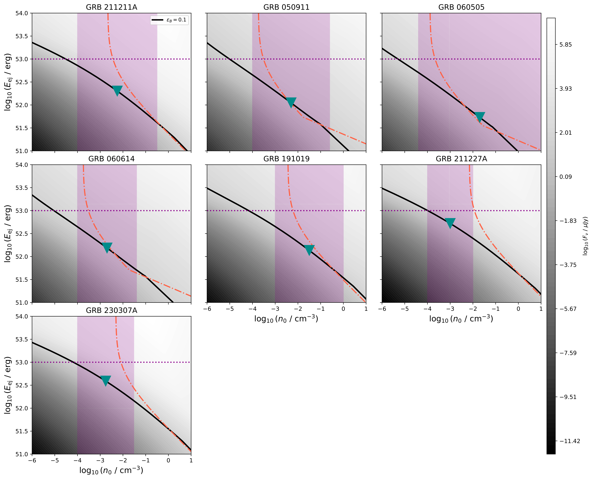
图注：Ejecta energy ($E_{\mathrm{ej}}$) versus circumburst density ($n_0$) for seven GRBs, assuming an ejecta mass of $M_{\mathrm{ej}} = 0.05\,M_\odot$. Each panel shows the exclusion curve for the fiducial magnetic field energy fraction $\epsilon_B = 0.1$ (solid black line); regions above the curve are excluded. The gray-scale background shows the predicted flux density $\log_{10}(F_\nu / \mu\mathrm{Jy})$ at the rest-frame time of observation. The magenta hatched bands indicate the allowed range of $n_0$ inferred from afterglow and kilonova modelling (Table~\ref{tab:tab2}). Cyan inverted triangles mark the upper limit on $E_{\rm ej}$ at the median of the assumed density band. The orange dot-dashed contour shows the corresponding exclusion curve from the analytical model of \(\citep{Nakar2011}.\)
对应解读：对应“建议重点查看的图表”第4项参数排除图，以及“图4：参数空间图可能展示 \(E_k-n\) 平面”的逐图导读和射电非探测参数排除段落。
入选理由：这是最直接的射电约束图：逐个 GRB 给出 \(E_ej-n0\) 平面上的排除曲线、预测流量灰度背景、密度先验带和能量上限，能清楚展示“高能量需要低密度才不被排除”的核心退化关系，比单纯光变图更适合支撑参数空间结论。
来源与置信度：\(arxiv_source\)；high；\(arxiv_source\) / main.tex:figure[2]
Fig01
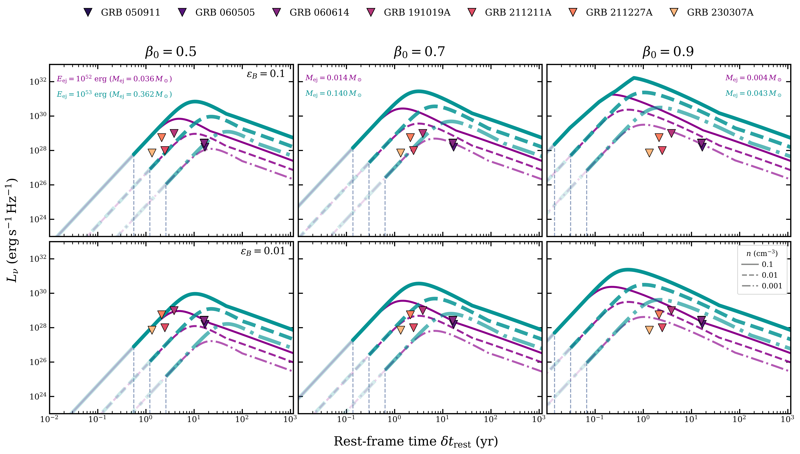
图注：Spectral luminosity at 2.1\,GHz $L_\nu$ versus rest-frame time $\delta t_{\rm rest}$ where inverted triangles mark the observed $3\sigma$ upper limits. Rows correspond to fixed magnetic-field energy fraction $\epsilon_B = 0.1$ (top) and $0.01$ (bottom); columns correspond to $\beta_0 = 0.5$, $0.7$, $0.9$ excluding $\beta_0 = 0.3$ and $0.4$ as unphysical given the implied $M_{\rm ej}$ at $E_{\rm ej} = 10^{53}\,\mathrm{erg}$. In each panel, thin magenta curves show $E_{\rm ej} = 10^{52}\,\mathrm{erg}$ and thick teal curves show $E_{\rm ej} = 10^{53}\,\mathrm{erg}$, with the corresponding $M_{\rm ej}$ labelled in the top row. Curves of different line styles correspond to ISM densities $n = 10^{-1}$, $10^{-2}$ and $10^{-3}\,\mathrm{cm}^{-3}$. Microphysical parameters are $p = 2.5$ and $\bar{\epsilon}_e = 0.1$. Vertical dashed lines mark the coalescence time $t_{\rm col}$, computed assuming a fiducial jet kinetic energy $E_j = 10^{49}$\,erg; lighter portions of each curve indicate the quenched phase prior to $t_{\rm col}$.
对应解读：对应“建议重点查看的图表”第3项 2.1 GHz 模型光变与上限图，以及“图3：射电光变比较图”的逐图导读。
入选理由：该图把 2.1 GHz 谱光度上限与不同 \(E_ej\)、n、\(epsilon_B\)、beta0 的模型光变直接比较，并标出塌缩时间和淬灭阶段，是理解晚期 ATCA 非探测为何仍允许低密度磁星注能抛射物的关键图。
来源与置信度：\(arxiv_source\)；high；\(arxiv_source\) / main.tex:figure[1]
Fig06
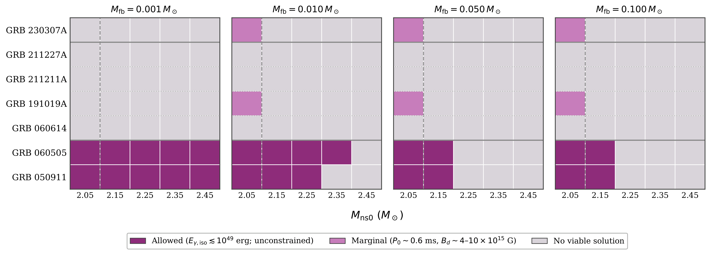
图注：Viability of the fallback-accreting magnetar model as a function of fallback mass $M_{\rm fb}$ and initial remnant mass $M_{\rm ns0}$, evaluated at $t_{\rm fb} = 0.1$\,s. Dark-purple cells denote an allowed $(B_d, P_0)$ region; light-purple cells denote marginal solutions requiring near-breakup spin periods ($P_0 \approx 0.6$\,ms) and extreme dipole fields ($B_d \sim 4$--$10 \times 10^{15}$\,G); light grey cells denote no viable solution. GRBs are grouped by their viability at the baseline mass $M_{\rm ns0} = 2.05\,M_\odot$: \(\textit{excluded}\) (no $(B_d,\,P_0)$ combination satisfies both the energy and duration conditions for any fallback scenario explored); \(\textit{marginal}\) (solutions exist only at extreme parameters); and \(\textit{unconstrained}\) ($E_{\gamma,\rm iso} \lesssim 10^{49}$\,erg, too faint to test the model). The allowed parameter space shrinks progressively as $M_{\rm ns0}$ increases above $M_{\rm TOV} = 2.1\,M_\odot$, and the model is fully excluded for all seven constrained bursts at $M_{\rm ns0} = 2.45\,M_\odot$ with $M_{\rm fb} \geq 0.01\,M_\odot$.
对应解读：对应“建议重点查看的图表”第5项 extended emission 的 fallback 修正/重子加载限制，以及模型拟合中 fallback-accreting magnetar 对 P0-B 可行区的进一步收缩。
入选理由：该图直接展示 fallback-accreting magnetar 模型在 \(M_fb-M_ns0\) 平面上的可行、边缘和排除区域，能够支撑日报中“加入 fallback 和重子加载后参数空间显著变窄甚至被排除”的核心解释。
来源与置信度：\(arxiv_source\)；high；\(arxiv_source\) / main.tex:figure[6]
Fig05
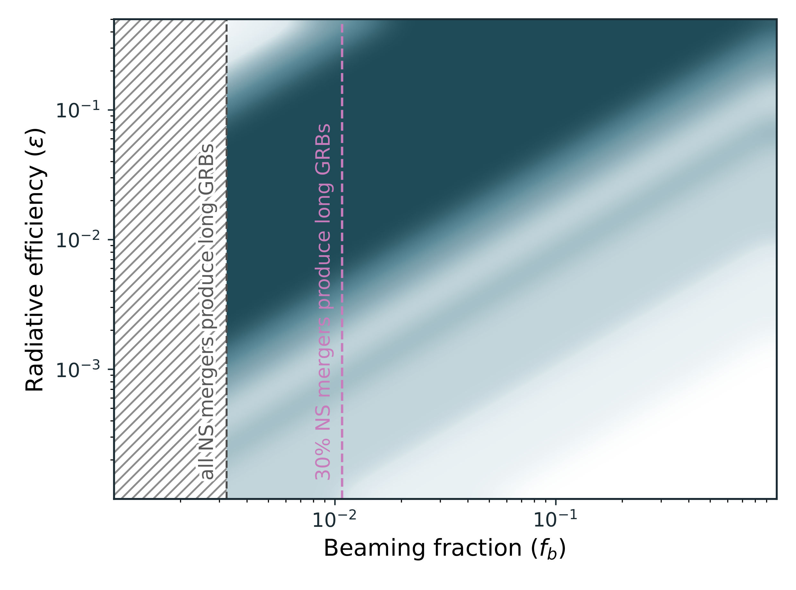
图注：Allowed parameter space for the spin-down magnetar model. The shading indicates the number of bursts consistent with the model at each point in parameter space, with darker regions corresponding to more bursts. The hatched region at low $f_b$ is ruled out by the maximum NS merger rate consistent with GW observations, assuming all NS mergers produce long GRBs. The orange dashed line marks the same limit assuming only $\sim$30\% of NS mergers produce long GRB.
对应解读：对应“建议重点查看的图表”第5项 extended emission 能量/时标约束图，以及 prompt 端 spin-down magnetar 参数空间约束段落。
入选理由：该图给出自旋下降磁星模型的允许参数空间，并加入由 NS 并合率限制导致的低 \(f_b\) 排除区，适合说明 prompt/extended emission 对中心引擎几何因子和能量预算的独立约束。
来源与置信度：\(arxiv_source\)；high；\(arxiv_source\) / main.tex:figure[5]
Fig03
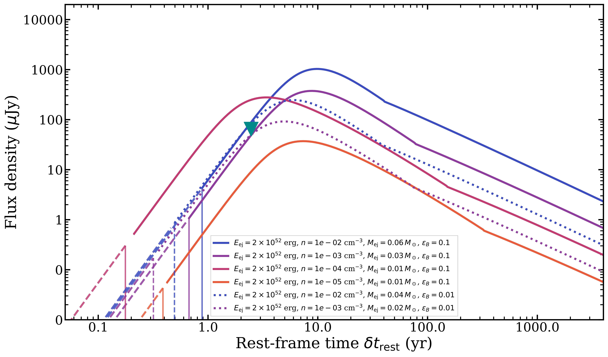
图注：Model light curves of GRB~211211A ($z = 0.076$) computed assuming a rotational energy of $2\times10^{52}$\,erg (see Table~\ref{tab:magnetar_params}), for $\epsilon_B = 0.1$ and $0.01$, across a range of circumburst densities. The black inverted triangle marks the $3\sigma$ ATCA upper limit at 2.1\,GHz; curves whose predicted flux exceeds the upper limit at the observation epoch are excluded. Faded portions of each curve indicate the quenched phase before $t_{\rm col}$.
对应解读：对应“关键图表逐图导读”中射电光变比较图的单源示例，尤其是 GRB 211211A 的 2.1 GHz 上限与不同密度模型线比较。
入选理由：GRB 211211A 是低红移并合驱动长暴代表事件；该图在固定磁星转动能下展示不同 \(epsilon_B\) 和密度模型相对 ATCA 上限的位置，便于读者具体判断哪些密度曲线被排除、哪些仍允许。
来源与置信度：\(arxiv_source\)；high；\(arxiv_source\) / main.tex:figure[3]
Fig04
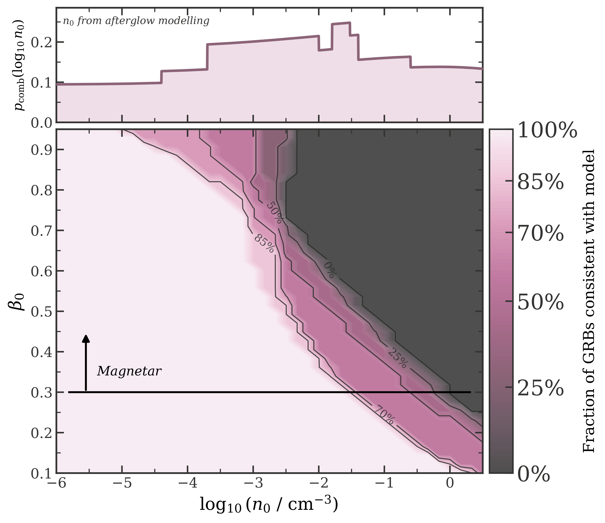
图注：\(\textit{Top panel:}\) Probability density profiles for the circumburst density \(n_0\) of each GRB in our sample, inferred from afterglow modelling (Table~\ref{tab:tab2}). The top panel shows the combined normalized distribution \(p_{\rm comb}(\log_{10} n_0)\), obtained by summing the individual GRB probability profiles and renormalizing the result. Upper and lower limits are represented as step-like probability distributions, and constrained ranges as flat-top profiles. \(\textit{Bottom panel:}\) Fraction of the seven GRBs with known redshifts for which the predicted 2.1\,GHz flux at the observation epoch falls \(\emph{below}\) the measured $3\sigma$ upper limit, as a function of initial ejecta velocity $\beta_0$ and ambient density $\log_{10}(n_0)$, at fixed $E_{\rm ej} = 10^{52}$\,erg and $\epsilon_B = 0.1$. Light regions indicate that all events are consistent with the model; dark regions indicate widespread exclusion. The solid horizontal line at $\beta_0 = 0.3$ separates parameter space where the magnetar's contribution to ejecta acceleration is dominant ($\beta_0 > 0.3$; arrow) from the regime where sub-relativistic dynamical ejecta dominate.
对应解读：对应“建议重点查看的图表”第6项稳健性或附录图，以及模型拟合中 n、beta0 与微物理假设导致的退化关系。
入选理由：上半部分汇总样本环境密度先验，下半部分显示在 beta0-n0 平面中有多少事件仍低于上限，能够检验射电结论对外部密度和初始速度的依赖，是判断‘参数空间窄但未完全排除’稳健性的辅助图。
来源与置信度：\(arxiv_source\)；high；\(arxiv_source\) / main.tex:figure[4]
强相关工作
这篇工作与近年关于 GRB 211211A、GRB 230307A 和 GRB 060614 等“长持续时间但具有并合迹象”的研究属于同一问题链。那些工作主要从千新星、宿主、光学/红外余辉和高能持续时间论证并合起源；本文则补上晚期射电和中心引擎参数约束。检索关键词可用 “merger-driven long GRB”, “long duration gamma-ray burst kilonova”, “GRB 211211A kilonova”, “GRB 230307A kilonova”, “GRB 060614 supernova absence”。
理论上，本文连接的是磁星中心引擎、并合残留物寿命和磁星注能射电余辉三条文献线。相似研究通常讨论毫秒磁星如何解释短暴 extended emission、X 射线平台或千新星增亮；相反观点则强调黑洞加 fallback 吸积盘也能产生长时标活动，并且射电非探测在低密度环境下很难做强排除。检索关键词可用 “magnetar central engine gamma-ray burst”, “fallback accretion GRB extended emission”, “radio constraints magnetar powered merger ejecta”, “long GRB compact binary merger”。
同一事件 / 同类源线索：
相似工作：
（未提供）
基础理论 / 方法工作：
（未提供）
相反观点 / 张力线索：
（未提供）
2. Caught by its own light: Wimpzillas, the LHAASO knee and the diffuse $γ$-ray sky
- 来源：arXiv / astro-ph.HE
- 链接：https://arxiv.org/abs/2609.17315v1
- 作者：D. Akl, A. J. Iovino, D. Kantzas, A. V. Macciò
- 评分：novelty 8/10，importance 8/10，relevance 10/10，final 9.70/10
- 推荐理由：利用LHAASO质子膝区谱和弥散伽马射线约束超重暗物质衰变，直接涉及宇宙线膝、LHAASO和弥散γ射线背景；即使结论是否定模型，也对高能宇宙线/伽马射线读者高度相关。
中文题目：被自己的光抓住：Wimpzilla、LHAASO 膝区与弥散伽马射线天空
做了什么：这篇文章检验一个很具体的想法：LHAASO 在质子宇宙线谱中看到的约 \(0.34\,\mathrm{PeV}\) 变硬和约 \(3.3\,\mathrm{PeV}\) 膝区，能否由银河晕中超重暗物质“Wimpzilla”衰变产生的核子解释。作者把暗物质质量作为主要谱形参数，并在不同强子相互作用模型重建的 LHAASO 质子谱上拟合，发现质量约 \(5\times10^{7}\,\mathrm{GeV}\) 的遗迹粒子衰变到核子通道确实可以很好重现质子谱形。但同一衰变级联必然伴随高能光子，预测的光子分量远超宇宙线光子比例限制约两个数量级，也超过 LHAASO 银河弥散伽马射线观测约一个数量级，因此这个解释被“自己的光”排除。
为什么重要：它把一个看似漂亮的宇宙线谱拟合放进多信使一致性检验中：不能只拟合带电核子，还必须同时不过量产生伽马射线。这对任何用暗物质、奇异遗迹粒子或非标准注入解释 PeV 宇宙线膝区的模型都是关键约束。
理论 / 观测 / 仪器方法价值：理论上，它给出超重暗物质解释膝区的一个反例：质子谱形可以拟合，但电磁级联不可逃避。观测上，它展示了 LHAASO 质子谱、宇宙线光子比例上限和银河弥散伽马射线数据如何联合约束 PeV 暗物质。方法上，它强调跨通道检验比单一谱形拟合更有判别力。
为什么应该关注：如果你关心膝区起源、超重暗物质间接探测、LHAASO 数据解释或高能伽马射线背景，这篇文章值得看：它说明“能拟合质子谱”不是充分条件，模型还必须在光子天空中存活。其结论也提醒读者，未来 PeV 暗物质模型的关键战场可能不是质子谱本身，而是伴随伽马射线、光子比例和弥散背景。
展开详细解读：文章讲解、背景、理论、重点章节、图表与相关工作
文章详细讲解
科学问题：宇宙线膝区长期被视为银河加速器极限、传播效应或源种群叠加的标志。LHAASO 对质子谱跨越膝区的分辨测量使问题更尖锐：谱在约 \(0.34\,\mathrm{PeV}\) 附近有变硬特征，在约 \(3.3\,\mathrm{PeV}\) 附近出现膝区。本文问的是，银河晕中质量极高、寿命极长的暗物质粒子衰变，是否能贡献一支硬的核子分量，从而在传统天体物理背景上叠加出这些结构。
作者怎么做：他们考虑超重暗物质，也就是常被称为 Wimpzilla 的遗迹粒子，质量标度达到 \(m_{X}\sim5\times10^{7}\,\mathrm{GeV}\)。衰变通道选为核子通道，因此一级产物经过强子碎裂和级联后给出 PeV 能区的质子、反质子、中子以及伴随光子。作者用 LHAASO 解析出的质子谱作为主要拟合对象，把 \(m_{X}\) 作为决定谱形的核心参数，同时对普通背景质子谱指数作 profile，并加入低于 \(0.1\,\mathrm{PeV}\) 质子斜率的独立先验。由于 LHAASO 的质量组分重建依赖强子相互作用模型，他们还在三个强子相互作用模型重建版本中重复检验。
关键结果：从质子谱角度看，模型相当成功。一个质量约 \(5\times10^{7}\,\mathrm{GeV}\) 的银河晕衰变分量，可以在传统背景谱上自然产生 PeV 附近的附加核子贡献，使 \(0.34\,\mathrm{PeV}\) 变硬和 \(3.3\,\mathrm{PeV}\) 膝区同时被重现，而且这种结论在不同强子相互作用模型重建下保持稳定。也就是说，单看 LHAASO 的质子谱形，Wimpzilla 解释并非荒唐，甚至具有诱人的简洁性：主要谱形自由度很少。
但是限制来自同一衰变链的电磁产物。强子级联不可避免产生 \(\pi^{0}\)，随后 \(\pi^{0}\to\gamma\gamma\)，高能光子在银河辐射场中吸收和级联后仍会表现为弥散伽马射线或宇宙线光子分量。作者比较了模型所需暗物质衰变归一化对应的光子通量与观测限制，发现其相对于宇宙线光子比例约高出两个数量级，相对于 LHAASO 弥散银河伽马射线约高出一个数量级。因此，解释质子谱所需的同一个模型被自己的伽马射线副产物排除。
局限和下一步：本文的结论依赖暗物质主要进入核子通道、银河晕分布、级联光子传播以及 LHAASO 质子和弥散伽马数据的系统误差处理。不同衰变末态、隐蔽暗部门级联、极端各向异性晕分布或非常规光子吸收也许会改变数值上限，但很难消除强子通道伴随 \(\pi^{0}\) 光子的基本事实。下一步更有价值的方向是做联合全局似然：同时拟合质子、全粒子谱、质量组分、光子比例、弥散伽马天空和各向异性，而不是只在某一条谱线上做解释。
关键结果是怎么做出来的
样本和数据选择的核心是 LHAASO 给出的跨膝区质子谱，而不是全粒子谱。作者关注两个谱形特征：约 \(0.34\,\mathrm{PeV}\) 的硬化和约 \(3.3\,\mathrm{PeV}\) 的膝区。由于空气簇射质量组分重建不可避免依赖强子相互作用模型，文章把三个强子相互作用模型下的质子谱重建都纳入比较。这样做的意义是避免把某一个模型重建的谱形细节误认为暗物质信号。
拟合上，普通银河宇宙线质子背景可近似为幂律或带缓变指数的谱，暗物质贡献则由超重粒子衰变碎裂谱决定。作者强调暗物质质量 \(m_{X}\) 是主要形状参数；衰变寿命或等效归一化主要控制振幅。背景谱指数通过 profile 处理，并用低于 \(0.1\,\mathrm{PeV}\) 的质子斜率作为先验锚点，减少“任意调背景斜率来吞掉信号”的自由度。关键结论是，在这种约束下，\(m_{X}\simeq5\times10^{7}\,\mathrm{GeV}\) 的衰变核子谱能同时解释硬化和膝区。
显著性或模型比较的重点不在于声称发现暗物质，而在于展示一个“质子谱可行点”随后被光子数据排除。换言之，似然的第一阶段告诉读者：暗物质核子分量在质子谱上不是随便画出来的，它确实能改善或复现 LHAASO 谱形。第二阶段则把同一归一化带入光子预测，比较宇宙线光子比例限制和 LHAASO 弥散银河伽马射线观测。这里的判据更直接：预测超过观测上限或实测弥散通量多少倍。
支撑结论的关键图表应包括三类：第一，三种强子模型重建下的 LHAASO 质子谱及最佳拟合背景加暗物质分量；第二，暗物质衰变产生的核子与光子源谱或到达地球谱，用来显示二者不可分割；第三，模型预测的光子比例或弥散伽马通量与 LHAASO 限制的比较。若这些图中光子预测在相关能区整体高于限制约 \(10\) 到 \(100\) 倍，排除结论就不是某个单点误差造成的。
系统误差主要来自四处：LHAASO 质子谱的能标和质量组分重建、强子相互作用模型、银河暗物质密度分布及视线积分、以及高能光子在星际辐射场和宇宙微波背景中的传播。文章摘要显示作者至少对前三种 LHAASO 强子模型重建做了稳健性检验，并将光子约束分成光子比例和弥散银河发射两类。若两类独立光子约束都排斥同一参数点，结论比只依赖单一上限更稳健。
展开背景、理论、公式、模型、章节和图表导读
背景知识
研究对象是 PeV 能区的宇宙线质子谱和超重暗物质衰变。宇宙线膝区通常指全粒子谱在几 \(\mathrm{PeV}\) 附近从较硬幂律变为较软幂律的结构。传统解释包括银河源最大刚度、逃逸传播变陡、不同核种膝区叠加、或局部源贡献。LHAASO 的重要性在于它可以用空气簇射多探测器信息分辨质量组分，从而不只看全粒子谱，还能讨论质子谱本身的硬化和膝区。
Wimpzilla 是早期宇宙产生的超重暗物质候选体，质量可以远高于弱相互作用大质量粒子常见的 \(\mathrm{TeV}\) 标度。若其寿命远大于宇宙年龄但有限，今天仍会在银河晕中缓慢衰变，产生高能标准模型粒子。由于银河晕距离近、密度高，衰变信号对局部宇宙线和伽马射线背景可能有贡献。历史上，超重暗物质曾被用于解释超高能宇宙线，但很快受到光子和中微子约束的强烈限制。
为什么现在值得重看？一方面，LHAASO 在 \(\mathrm{TeV}\) 到 \(\mathrm{PeV}\) 伽马射线和宇宙线能区提供了新的高统计数据；另一方面，膝区附近的质子谱结构比过去更清晰，使“一个额外硬分量”这类模型可以被具体检验。本文的趣味就在于，它没有先验否定暗物质解释，而是让模型先去拟合质子谱，再用不可避免的光子副产物检验一致性。
该领域常见误区之一是把“能拟合某条宇宙线谱”误读为“物理上可行”。带电宇宙线受传播、磁场和源分布影响，谱形退化很强；而强子注入几乎总会产生光子和中微子，后两者反而提供更直接的能量预算约束。另一个误区是认为高能光子可以完全被吸收而消失。实际上吸收会把能量转移到电子正电子对和级联光子中，能量守恒使电磁级联在较低能段重新出现。
还要注意，LHAASO 质子谱不是“直接称量单个质子”，而是通过空气簇射观测和强子模型反演得到。不同强子相互作用模型会影响质子与重核的分类、能量重建和系统误差。因此，任何把质子谱精细结构解释为新物理的文章，都必须检查这种模型依赖性。本文声称在三种强子模型重建下均可拟合质子谱，但最后被光子数据排除，正好说明模型依赖不是唯一问题。
基础理论 / 方法脉络
最基础的物理图像是：如果银河晕暗物质粒子 \(X\) 不完全稳定，而是以寿命 \(\tau_{X}\) 衰变，那么单位体积单位时间的注入率正比于暗物质质量密度 \(\rho_{X}\) 除以粒子质量 \(m_{X}\)，再除以 \(\tau_{X}\)。衰变产生的核子可作为额外宇宙线分量，叠加到普通银河源产生的质子背景上。质量 \(m_{X}\) 决定碎裂谱的最高能量和谱峰位置，因此能影响 PeV 处的谱形。
强子衰变通道的关键不是只产生质子。高能夸克和胶子会强子化，形成大量介子和重子；其中带电介子最终给出中微子、电子和正电子，中性介子通过 \(\pi^{0}\to\gamma\gamma\) 产生光子。因此，核子通道若要在质子谱中显著，通常也会在伽马射线和中微子中留下可观信号。本文的核心约束正是这种多信使连带关系。
观测上，质子谱通常写成普通背景加暗物质项。背景项可以用幂律近似，指数由低能数据约束；暗物质项来自碎裂函数和银河传播。对 PeV 质子而言，传播细节包括扩散、可能的能量损失和太阳调制之外的银河磁场影响，但谱形检验常先用到达地球的有效通量模板。LHAASO 的强子模型重建提供不同版本的质子谱，反映空气簇射模拟不确定性。
光子约束分两类。第一类是宇宙线光子比例，即总宇宙线中光子成分不能超过观测上限；这对 PeV 能区特别敏感。第二类是弥散银河伽马射线通量，要求沿银河视线积分后的暗物质衰变光子加上传播级联后不能超过 LHAASO 实测或上限。两者的系统误差不同：前者更接近成分判别，后者更依赖天空模板、前景建模和光子传播。
常见退化包括 \(m_{X}\) 与背景谱指数的退化、\(\tau_{X}\) 与暗物质局域密度归一化的退化、以及强子碎裂函数与光子产额的理论不确定性。本文通过对背景指数加先验、比较三种强子相互作用模型、并使用两类光子约束，试图减少“只靠调参存活”的空间。
公式与推导
第一步，从暗物质衰变的源项出发。若超重粒子 \(X\) 的质量为 \(m_{X}\)、寿命为 \(\tau_{X}\)、银河晕密度为 \(\rho_{X}(\mathbf{r})\)，某粒子种类 \(i\) 的微分注入率可写为
这里 \(dN_{i}/dE\) 是每次衰变产生的粒子 \(i\) 的能谱，\(i\) 可以是质子、光子或中微子。这个式子体现了衰变信号与 \(\rho_{X}\) 成正比，而不是湮灭信号常见的 \(\rho_{X}^{2}\)。
第二步，普通质子背景可近似为幂律，并与暗物质核子分量相加：
其中 \(\Phi_{0}\) 是背景归一化，\(E_{0}\) 是参考能量，\(\gamma_{p}\) 是背景谱指数，\(T_{p}(E;m_{X})\) 是给定 \(m_{X}\) 的暗物质质子模板，\(A_{X}\) 吸收 \(\tau_{X}\) 和晕归一化。本文所谓 \(m_{X}\) 是主要谱形参数，正是因为 \(T_{p}\) 的峰位和弯曲由 \(m_{X}\) 控制。
第三步，碎裂谱常用无量纲变量 \(x=2E/m_{X}\) 描述：
这个变量说明为什么 \(m_{X}\sim5\times10^{7}\,\mathrm{GeV}\) 的粒子可以影响 \(\mathrm{PeV}\) 能区：\(E\) 只是母粒子静能的一小部分，强子化会把能量分配给大量次级粒子。
第四步，对伽马射线，沿方向 \(\psi\) 的未吸收衰变通量可写为
其中
\(J_{\mathrm{dec}}\) 是衰变的视线积分因子，\(s\) 是沿视线距离，\(r(s,\psi)\) 是到银河中心的距离。它把粒子物理参数和银河晕几何分开。
第五步，若考虑高能光子吸收和电磁级联，可用传播核表示到达地球的谱：
这里 \(K_{\gamma}(E,E')\) 包含 \(\gamma\gamma\) 吸收、对产生和逆康普顿级联等过程。即使最高能光子被吸收，能量也会通过 \(K_{\gamma}\) 重新分配到较低能伽马射线。
第六步，宇宙线光子比例约束可写成
其中 \(\Phi_{\mathrm{CR}}\) 是总宇宙线通量，\(f_{\gamma}^{\mathrm{lim}}\) 是实验上限。本文的结论之一可概括为，用质子谱确定的 \(A_{X}\) 会使 \(f_{\gamma}\) 超过限制约两个数量级。
第七步，拟合质子谱时可用高斯近似的 \(\chi^{2}\) 或等价似然：
这里 \(k\) 标记能量 bin，\(\sigma_{p,k}\) 是观测误差，第二项是低能质子斜率先验，\(\gamma_{0}\) 和 \(\sigma_{\gamma}\) 分别为先验均值和宽度。profile 背景指数就是在给定 \(m_{X}\) 时对 \(\gamma_{p}\) 等 nuisance 参数最小化或边缘化。
第八步，对弥散伽马射线可定义残差或超额比值：
若在 LHAASO 相关天空区域和能区有 \(R_{\gamma}\sim10\)，就表示模型预测暗物质光子分量单独已经超过观测弥散通量约一个数量级，因而即使不加入常规天体物理伽马背景也难以成立。
模型拟合 / 应用方法
这类拟合的核心参数可以分成物理参数和 nuisance 参数。物理参数包括暗物质质量 \(m_{X}\)、寿命 \(\tau_{X}\) 或等效归一化 \(A_{X}\)、衰变分支比以及暗物质晕模型。nuisance 参数包括普通质子背景的归一化、谱指数 \(\gamma_{p}\)、可能的谱弯曲、LHAASO 能标偏差、质量组分重建系统误差以及强子相互作用模型选择。本文突出的是 \(m_{X}\) 控制谱形，而背景指数被低能斜率先验约束并 profile。
似然可以分阶段理解。第一阶段只用质子谱，比较背景模型与背景加暗物质模型是否能重现硬化和膝区。若采用 \(\chi^{2}\) 表述，暗物质模板应降低残差并在三种强子模型重建中给出相近的最佳 \(m_{X}\)。但这里不能把较好拟合直接解释成发现，因为背景模型本身可能缺少源种群叠加、传播断裂或局部源等天体物理自由度。
第二阶段是多信使一致性检验。用质子谱拟合得到的 \(A_{X}\) 和 \(m_{X}\) 固定或限定暗物质光子模板，然后与光子比例上限和 LHAASO 弥散银河伽马射线数据比较。若预测光子通量超过上限，调低 \(A_{X}\) 可以救光子，但会失去对质子硬化和膝区的解释；改变 \(m_{X}\) 可以移动谱形，但会破坏质子谱最佳匹配。这就是主要退化关系被观测夹住的地方。
残差诊断应看两件事。质子谱残差若只在几个能量 bin 改善，而整体仍有系统偏离，暗物质解释就可能是在拟合局部噪声。相反，若质子残差良好但光子残差呈整段能区超标，则排除更有力，因为它来自能量预算和强子级联的全局关系。本文摘要给出的约 \(10\) 到 \(100\) 倍超标意味着不是轻微系统误差即可解决的问题。
模型可能失败的方式也很清楚。若衰变末态不是核子而是更隐蔽的暗部门粒子，光子产额可能改变，但同时核子产额也会改变，未必还能解释 LHAASO 质子谱。若采用不同晕分布，衰变通量的角分布和归一化会变，但局部核子与光子产额的粒子物理关联仍在。若强子相互作用模型导致 LHAASO 质子谱特征本身变化，质子端的动机会削弱，但这不会把被光子排除的参数点变成发现。
实际应用上，这篇文章给出一个模板：任何解释宇宙线局部结构的新粒子模型，都应先用带先验的谱拟合确定所需注入功率，再把同一注入功率传递到伽马射线、中微子和各向异性通道。只有在所有通道中同时不过量，模型才值得进一步讨论微观理论。
重点章节 / 结果段落怎么读
数据和问题设置部分应重点看作者如何定义 LHAASO 质子谱样本、使用哪些能量范围、如何处理 \(0.34\,\mathrm{PeV}\) 硬化和 \(3.3\,\mathrm{PeV}\) 膝区，以及三种强子相互作用模型重建之间的差异。读者应确认作者没有只挑选最有利的一种重建。
暗物质模型部分应看 \(m_{X}\)、\(\tau_{X}\)、衰变通道和碎裂谱的定义。尤其要看“核子通道”具体如何实现，核子与光子产额是否来自同一 Monte Carlo 或已发表碎裂函数，以及是否考虑 electroweak shower 和电磁级联。
质子谱拟合部分应看背景模型和先验。关键是普通质子背景斜率如何被低于 \(0.1\,\mathrm{PeV}\) 的数据约束，哪些参数被 profile，最佳 \(m_{X}\) 是否在三种强子模型下稳定，以及相对纯背景模型是否有实质改善。
光子约束部分是全文最重要的判别段落。读者应检查作者如何计算宇宙线光子比例、如何选取 LHAASO 弥散银河伽马射线区域和能段、是否加入吸收与级联、以及约 \(10\) 到 \(100\) 倍超标是峰值、积分量还是宽能段平均。
讨论和稳健性检验部分应看作者如何处理系统误差：能标移动、晕模型、强子模型、背景谱斜率、光子传播和弥散前景。若附录给出不同参数选择下的图，建议优先检查光子排除是否仍保持数量级差距。
建议重点查看的图表
-
LHAASO 质子谱拟合图：看横轴能量、纵轴通量或乘以能量幂次后的通量，确认背景、暗物质核子分量和总模型如何分别贡献 \(0.34\,\mathrm{PeV}\) 硬化与 \(3.3\,\mathrm{PeV}\) 膝区。
-
三种强子相互作用模型重建对比图或表：看最佳 \(m_{X}\)、背景指数和拟合优度是否稳定，还是某一种重建驱动结论。
-
暗物质衰变产额图：看质子、光子和可能中微子谱是否来自同一衰变级联，特别是光子与核子的相对归一化。
-
光子比例约束图：看 \(f_{\gamma}(E)\) 预测曲线与实验上限之间的距离，确认“约两个数量级”是否覆盖 PeV 关键能段。
-
LHAASO 弥散银河伽马射线比较图：看暗物质预测是否单独超过观测弥散通量，超标发生在什么天空区域和能段。
-
残差或 \(\chi^{2}\) 轮廓图：看 \(m_{X}\) 的置信区间、与背景斜率的退化，以及是否存在其他局部极小值。
-
系统误差稳健性图表：看能标、晕模型、强子模型和光子传播变化后，光子排除是否仍是数量级水平。
关键图表逐图导读
图 1：建议首先读质子谱总览图。横轴通常是能量 \(E\)，纵轴可能是 \(\Phi_{p}\) 或 \(E^{\alpha}\Phi_{p}\) 以突出谱形结构。数据点应为 LHAASO 质子谱，误差棒包含统计和部分系统误差；模型线应至少包括普通背景、暗物质核子分量和二者之和。读图时不要只看总线穿过数据点，还要看暗物质分量是否正好在 \(0.34\,\mathrm{PeV}\) 到 \(3.3\,\mathrm{PeV}\) 区间主导谱形变化。
图 2：三种强子相互作用模型重建对比图应显示同一模型在不同 LHAASO 质子谱版本上的拟合。横轴仍为 \(E\)，纵轴为通量或残差；不同颜色可能代表不同强子模型。关键读法是检查最佳 \(m_{X}\) 是否都接近 \(5\times10^{7}\,\mathrm{GeV}\)，以及残差是否在膝区附近一致改善。陷阱是把重建模型间的系统差异误当作物理谱结构。
图 3：衰变产额或模板图通常以 \(x=2E/m_{X}\) 或 \(E\) 为横轴，纵轴为 \(dN/dE\) 或加权谱。若图中同时画出核子和光子，读者应关注二者归一化的相对比例。本文排除结论的物理根源就在这里：产生足够核子的强子级联通常也产生大量 \(\pi^{0}\) 衰变光子。
图 4：光子比例图应把模型预测 \(f_{\gamma}(E)\) 与观测上限 \(f_{\gamma}^{\mathrm{lim}}(E)\) 放在同一坐标系。横轴是能量，纵轴是光子占总宇宙线比例，常用对数坐标。若模型曲线在相关能段高出上限约 \(100\) 倍，这不是微调背景指数可解决的问题。读图陷阱是忽视上限的置信度定义和能量 bin 宽度。
图 5：弥散银河伽马射线比较图应显示某个天空区域 \(\Delta\Omega\) 内的 \(d\Phi_{\gamma}/dE\) 或 \(E^{2}d\Phi_{\gamma}/dE\)。数据点或带状区域代表 LHAASO 弥散发射，暗物质曲线代表由质子谱归一化固定的预测。关键是看暗物质曲线是否单独超过观测，而不是超过某个模型化背景；若单独超标约 \(10\) 倍，排除非常直接。
图 6：若有 \(\chi^{2}\) 或似然轮廓图，横轴可能是 \(m_{X}\)，纵轴是 \(\Delta\chi^{2}\) 或 profiled likelihood。读者应看最佳质量是否清晰、置信区间多宽、以及加入光子约束后允许区是否消失。陷阱是只引用质子谱最佳点，而不看联合约束后的参数空间。
论文原图 / 可嵌入图片
Fig02
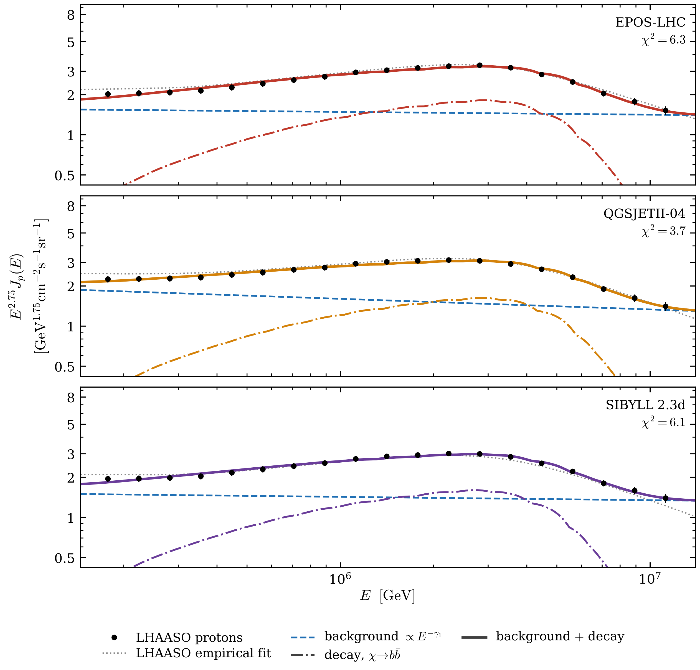
图注：The LHAASO proton spectrum in the three hadronic-interaction-model reconstructions, fitted with a power law plus the nucleons from the decay of a superheavy relic. The decay contribution is dash-dotted, and the dotted curve is the collaboration's own empirical fit \(\cite{LHAASO:2025byy}.\)
对应解读：“建议重点查看的图表”第1、2项；“关键图表逐图导读”图1和图2；模型拟合中关于 LHAASO 质子谱、三种强子相互作用模型重建、背景加暗物质核子分量的拟合段落。
入选理由：这是最核心的质子谱拟合图，直接展示 LHAASO 三种强子相互作用模型重建下的质子谱，以及幂律背景加超重暗物质衰变核子分量的总拟合。它能同时检验日报强调的 0.34 PeV 硬化、3.3 PeV 膝区、暗物质 dash-dotted 分量、经验拟合 dotted 曲线，以及结论是否由某一种强子模型驱动。
来源与置信度：\(arxiv_source\)；high；\(arxiv_source\) / main.tex:figure[2]
Fig03
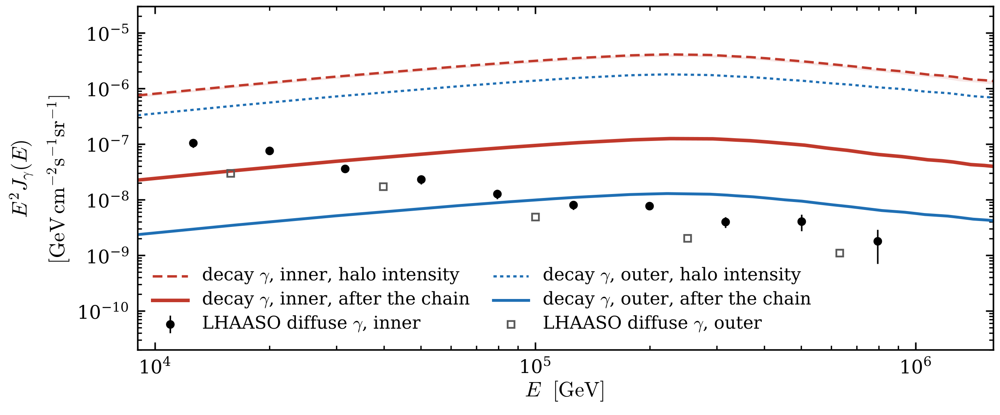
图注：The photon flux produced by the same decay that Fig.~\(\ref{fig:spectrum}\) computes for the proton feature, compared with the LHAASO diffuse Galactic emission in the inner and outer plane windows \(\cite{LHAASO:2023gne}.\) Dashed lines are the halo intensity and solid lines are the same prediction passed through the two-step background chain of Appendix~\(\ref{app:onoff}.\) Each line shows the three hadronic models that almost overlap, making it impossible to distinguish.
对应解读：“建议重点查看的图表”第5项；“关键图表逐图导读”图5；模型拟合中第二阶段多信使一致性检验和弥散银河伽马射线超标段落。
入选理由：这张图把由同一暗物质衰变归一化得到的光子通量与 LHAASO 弥散银河伽马射线内、外银河面窗口直接比较，是论文从“质子谱可拟合”转向“被自身光子排除”的关键证据。它还区分 halo intensity 与经过背景扣除链处理后的预测，正对应日报要求检查的天空区域、能段和约一个数量级超标。
来源与置信度：\(arxiv_source\)；high；\(arxiv_source\) / main.tex:figure[3]
Fig04
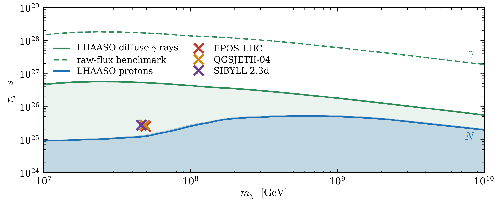
图注：Binwise no-overshoot benchmarks for the two channels. The blue band is derived from the LHAASO proton spectrum \(\cite{LHAASO:2025mlf}\) and spans the three hadronic-interaction-model reconstructions. The green curves are derived from the LHAASO diffuse Galactic emission \(\cite{LHAASO:2023gne}\): the solid curve includes the background-subtraction chain of Sec.~\(\ref{sec:bkgr subtraction},\) while the dashed curve is the corresponding benchmark on the raw halo intensity. Crosses mark the proton best-fit parameters of Sec.~\(\ref{sec:fit}.\)
对应解读：“建议重点查看的图表”第4、7项；“关键图表逐图导读”图4以及关于光子约束、no-overshoot、系统稳健性的模型拟合段落。
入选理由：该图用 binwise no-overshoot benchmarks 将质子谱允许区域与 LHAASO 弥散伽马约束放在同一参数空间，并用 crosses 标出质子最佳拟合点，最直接说明为什么解释质子结构所需参数会被伽马通道排除。蓝色带覆盖三种强子模型重建，绿色实线和虚线展示背景扣除处理对约束的影响，因此比单纯谱图更适合支撑‘调低归一化会失去质子解释、维持质子解释会伽马超标’这一诊断。
来源与置信度：\(arxiv_source\)；high；\(arxiv_source\) / main.tex:figure[4]
Fig01
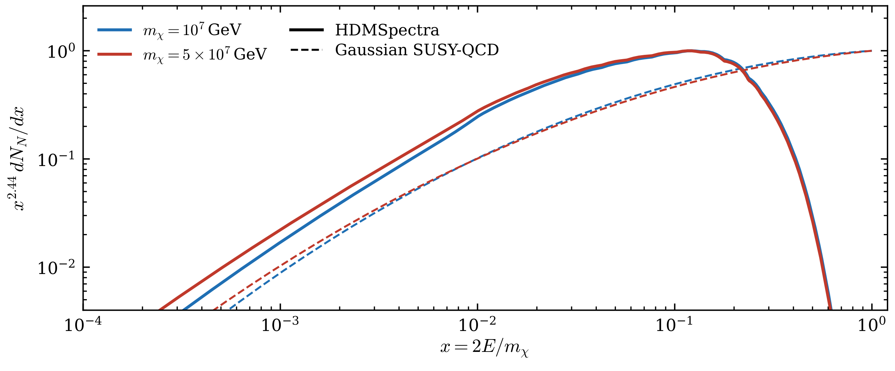
图注：The nucleon yield per decay, weighted by $x^{2.44}$, which is the combination that controls the size of a decay contribution relative to a cosmic-ray background of index $2.77$ propagated with $\tau_{\rm eff}\propto E^{-0.33}$, the index fitted in Sec.~\(\ref{sec:fit}\) and the diffusion index of the baseline setup above the rigidity break. Solid curves are \(\texttt{HDMSpectra}\) \(\cite{Bauer:2020jay}\); dashed curves are the Gaussian SUSY-QCD spectrum of Refs.~\(\cite{Berezinsky:1997hy,Berezinsky:1998ed}.\) Each curve is normalised to its own peak.
对应解读：“建议重点查看的图表”第3项；“关键图表逐图导读”图3中关于暗物质衰变产额或模板的部分；模型拟合中关于质量参数控制谱形和衰变模板的说明。
入选理由：这张图展示每次衰变的核子产额模板，并比较 HDMSpectra 与早期 SUSY-QCD 谱形，是理解暗物质质量如何控制 PeV 核子谱形的基础图。虽然它没有同时画出光子产额，不能完整支撑日报中‘光子与核子的相对归一化’的读法，但它仍能说明质子端拟合模板的物理来源和谱形稳健性。
来源与置信度：\(arxiv_source\)；high；\(arxiv_source\) / main.tex:figure[1]
强相关工作
这篇文章属于“用超重暗物质解释高能宇宙线结构”的同类研究，但结论延续了一个历史经验：强子通道很容易被光子和中微子约束压死。早期超高能宇宙线的 top-down 模型也曾因伴随光子比例过高而受到 Auger、Telescope Array、IceCube 和 Fermi 类观测限制。可检索关键词包括“superheavy dark matter cosmic-ray knee”、“Wimpzilla decay PeV cosmic rays”、“LHAASO proton spectrum knee”、“gamma-ray constraints on decaying dark matter”。
与常规膝区理论相比，本文不是在讨论银河源最大刚度或扩散系数断裂能否解释 LHAASO 质子谱，而是在问一个粒子物理注入项是否可行。因此它与 SNR/PWN 加速模型、局部源模型、非线性扩散模型存在互补和竞争关系。若读者想系统比较，应检索“cosmic ray knee rigidity dependent cutoff”、“LHAASO composition proton knee”、“diffuse gamma-ray constraints Galactic cosmic rays”。
同源或同事件语境：本文不涉及单一天体源或瞬变事件，而是同类源/同类模型问题，即银河晕超重暗物质衰变和 LHAASO 宇宙线、弥散伽马观测。相关公开上下文应优先查 arXiv 本文页面、LHAASO 官方论文列表、NASA ADS 中 LHAASO proton spectrum 和 LHAASO diffuse gamma-ray 关键词。
同一事件 / 同类源线索：
相似工作：
基础理论 / 方法工作：
相反观点 / 张力线索：
（未提供）
3. Right Energy, Wrong Profile: Why the 43 GeV Cluster Line Is Unlikely to Be Dark Matter
- 来源：arXiv / astro-ph.HE
- 链接：https://arxiv.org/abs/2609.16425v1
- 作者：Stefano Profumo
- 评分：novelty 8/10，importance 8/10，relevance 10/10，final 9.70/10
- 推荐理由：Fermi-LAT伽马线和暗物质解释的再分析，包含空间-能谱似然、形态检验和全局显著性评估；直接属于GeV伽马射线天文/间接探测重点，结论对43 GeV星系团线特征的可信度和暗物质解释有较大参考价值。
中文题目：能量对了、形态不对：为什么星系团中的 \(43\,\mathrm{GeV}\) 伽马射线线状特征不太像暗物质
做了什么：这篇文章重新分析了此前在 Fermi-LAT 的 Virgo、Fornax 和 Ophiuchus 三个星系团方向报告的 \(43\,\mathrm{GeV}\) 附近窄线状伽马射线过量。作者确认这个过量在公开数据中可以复现，并做了事件类型划分、保留数据检验、探测器坐标置换等稳健性测试；但更关键的是，他把能谱信息和空间形态一起放进似然分析后发现，过量更偏好均匀面亮度或强子结构增强的宽广分布，而不是平滑 NFW 湮灭剖面或中心点源。全局条件显著性约为 \(2.7\sigma\)，峰值能量约 \(44.5\,\mathrm{GeV}\)。结论是：即使能量落在“暗物质线”的诱人范围，空间分布也使简单暗物质解释很难成立，更可能是统计涨落、目标选择效应、银河弥散背景残差或未分辨源建模误差的组合。
为什么重要：伽马射线单色线长期被视为暗物质间接探测中的“金标准”信号，因为普通天体过程很难产生很窄的谱线。但这篇文章提醒我们：一条线是否可信，不能只看能量和局部显著性，还必须看它是否出现在暗物质应有的位置和角分布上。星系团尤其危险，因为暗物质质量大、子结构多，看似适合寻找线信号，但它们的视场大、前景复杂、源选择后验性强，容易把空间上宽而弱的残差误读成新物理。
理论 / 观测 / 仪器方法价值：本文的方法价值在于把线搜索从单纯的能谱峰检验推进到空间—能谱联合检验：同一批光子既要匹配线能量，也要匹配暗物质、点源、均匀面亮度、子结构增强等不同模板。它还强调了条件全局显著性、预选样本、事件类型拆分、探测器坐标置换和环带分析在伽马射线弱信号识别中的作用。对理论端而言，它把“需要多大的子结构 boost”和“是否已被银河晕线搜索排除”联系起来，说明形态约束可以直接杀死看似可调的暗物质模型。
为什么应该关注：如果你关心暗物质间接探测，这篇文章值得读，因为它是一个典型案例：候选信号并非简单消失，而是在更完整的形态检验下变得不符合暗物质预期。如果你做 Fermi-LAT、CTA、LHAASO 或未来 MeV–GeV 线搜索，它也提供了一套实用的反误报框架：不要只问“有没有线”，还要问“这些光子在天上该怎么分布、在仪器坐标中是否异常、在目标选择之后显著性还剩多少”。
展开详细解读：文章讲解、背景、理论、重点章节、图表与相关工作
文章详细讲解
科学问题：暗物质粒子若直接湮灭或衰变到双光子末态，会在伽马射线能谱中产生接近单色的线状信号。此前有人在 Fermi-LAT 对 Virgo、Fornax 和 Ophiuchus 三个星系团方向的观测中报告了 \(43\,\mathrm{GeV}\) 附近的特征。这个能量本身很诱人：它足够高，银河弥散背景相对较低；又处在 Fermi-LAT 能量分辨率尚可的范围。但本文的核心问题不是“能谱上是否有一个峰”，而是“这个峰的空间分布是否像暗物质”。如果线状过量来自星系团暗物质湮灭，它应与暗物质柱密度平方，即 \(J\) 因子模板相关；如果来自衰变，则应与柱密度相关；如果来自未建模背景或选择效应，则可能呈现更均匀、更宽广或与银河前景相关的形态。
作者怎么做：文章重新处理同一公开 Fermi-LAT 数据，限制在合格的 Good Time Intervals，并纳入银河弥散背景、各向同性背景和编目源。作者先复现 \(43\,\mathrm{GeV}\) 附近的过量，再用事件类型划分、原始选择之外的数据、探测器坐标置换等方式测试它是否像仪器伪迹或偶然事件聚集。随后进行空间—能谱联合似然分析，把候选线成分与多种空间模板相乘：中心点源、平滑 NFW 湮灭、子结构增强的湮灭模板、近似均匀面亮度模板等。作者还做了独立的环带分析，检查与线状过量相关的事件是否集中在星系团中心，还是延伸到接近维里半径的区域。
关键结果：过量可以被复现，而且并非在最简单的事件类型拆分中立即消失；这意味着它不是一个一眼可判定的数据处理错误。但它的形态不支持“平滑星系团暗物质晕中的湮灭线”。联合似然偏好宽广的线状成分，特别是均匀面亮度或强子结构增强模板，而不是 NFW 平滑湮灭剖面或中心点源。能量扫描在 \(20\)–\(70\,\mathrm{GeV}\) 和五种空间形态上校正后，条件全局显著性约 \(2.7\sigma\)，峰值在 \(44.5\,\mathrm{GeV}\) 附近、且以均匀亮度模板最强。这个显著性不是“无条件发现显著性”，而是建立在事先选定这三个星系团样本的条件之上。
局限和下一步：作者并未声称已经确定该特征的真实来源；更谨慎的结论是，若它是天体信号，其空间形态也很难由简单暗物质解释。暗物质解释需要几个同时成立的强假设：双光子通道是主要末态之一，低速冷子晕中湮灭效率不被抑制，星系团子结构贡献几乎全部线光度，并且所需截面还不能被银河晕线搜索排除。下一步应包括对更多星系团和空场的盲分析、更新的 Fermi-LAT 事件重建版本和弥散模型交叉检验、对未分辨源族群的模拟注入测试，以及未来 MeV–TeV 仪器用更好角分辨率或独立系统误差进行验证。
关键结果是怎么做出来的
本文最重要的证据链从样本定义开始：目标并不是全天盲搜，而是围绕 Virgo、Fornax 和 Ophiuchus 这三个已被预选的星系团做再分析。因此显著性必须解释为“给定这组三个目标后”的条件全局显著性，而不是任意天区、任意目标类别、任意能段的无条件发现概率。作者在 \(20\)–\(70\,\mathrm{GeV}\) 范围内搜索线状成分，并对五种空间形态进行比较，因此能量试验因子和模板试验因子都进入最终解释。
数据层面，作者使用 Fermi-LAT 公开数据，并只保留满足 Good Time Intervals 的事件，建模时同时包括银河弥散背景、各向同性背景和编目点源。过量在原始公共数据中能复现，这是本文没有直接否定候选特征的基础。作者还把事件按事件类型或重建质量划分，检查信号是否只出现在某一类可能问题较多的事件中；又使用未参与原始选择的数据做交叉检验，以降低“先看到再调参”的风险。
统计层面，核心是空间—能谱联合似然。线成分的能谱通常用以 \(E_\gamma\) 为中心、由能量响应展宽的窄模板表示；空间部分则分别乘以点源模板、平滑 NFW 湮灭模板、含子结构 boost 的模板、均匀面亮度模板等。比较量可理解为不同模板下的似然比或测试统计量 \(\mathrm{TS}\)。结果显示，最强拟合并不出现在最像常规暗物质湮灭的中心集中特征上，而是在宽广的均匀或子结构增强形态上。
独立环带分析是支撑“形态太宽”的关键。作者不只依赖全模板拟合，还把星系团周围区域按角距离或物理半径分成多个环带，检查 \(43\)–\(45\,\mathrm{GeV}\) 附近候选事件的径向分布。若平滑 NFW 湮灭主导，过量应更集中于中心；若强子结构或均匀残差主导，信号会延伸到更大半径。本文报告的事件分布延伸到维里区域的大部分范围，这直接削弱了中心点源和光滑晕湮灭解释。
显著性方面，作者在 \(20\)–\(70\,\mathrm{GeV}\) 能段和五种形态校正后得到约 \(2.7\sigma\) 的条件全局显著性，峰值能量约 \(44.5\,\mathrm{GeV}\)。这个数字的读法很重要：它说明特征值得诊断，但远低于发现标准；更重要的是，它没有包含所有可能的后验选择，例如为什么只选这三个星系团、为什么这些能区和角区最受关注。因此作者把最可能解释归为统计涨落被分析和目标选择放大，并可能叠加银河弥散背景或未分辨源残差。
系统误差和稳健性检验主要围绕三类问题：仪器、天体背景和暗物质建模。仪器方面，探测器坐标置换用于检查是否存在固定在仪器坐标中的异常；背景方面，强子和逆康普顿辐射被认为能谱或空间分布太宽，无法自然给出窄线但可造成局部残差；暗物质方面，即使采用子结构增强，所需双光子截面也会接近或进入银河晕线搜索最严格约束的区域。也就是说，本文的反驳不是单点否定，而是由形态、显著性、系统误差和外部约束共同构成。
展开背景、理论、公式、模型、章节和图表导读
背景知识
伽马射线线搜索是暗物质间接探测中最干净也最困难的一类。所谓“线”通常来自 \(\chi\chi\to\gamma\gamma\)、\(\chi\chi\to\gamma Z\) 或 \(\chi\chi\to\gamma h\) 等末态，其中 \(\chi\) 是暗物质粒子。因为两体末态给出固定能量的光子，信号在能谱上会比强子级联、逆康普顿散射或轫致辐射更尖锐。不过，在许多弱相互作用暗物质模型中，双光子通道是环图过程，截面往往小于连续谱通道，因此真实信号很弱，容易与统计涨落和仪器响应尾部混淆。
星系团是暗物质间接探测的经典目标之一。它们总质量巨大，维里半径可覆盖很大角尺度，理论上拥有丰富的子晕群。对湮灭信号而言，辐射率正比于密度平方，因此小尺度高密度子结构可能显著提升总亮度，通常称为 boost。问题在于，子结构 boost 的幅度和径向分布依赖数值模拟分辨率、子晕质量函数外推、潮汐剥离模型和重子效应，远比平滑 NFW 模型不确定。星系团还不是干净天区：它们常处于复杂银河前景之上，并可能包含活动星系核、星系成员和弥散宇宙线过程。
历史上，Fermi-LAT 数据中曾多次出现过有趣的线状或近线状特征，最著名的是银河中心附近 \(130\,\mathrm{GeV}\) 候选线。那类事件的经验教训是：局部谱峰不足以建立暗物质发现，必须同时检查全天分布、仪器坐标、事件类别、前景模型、能量重建、试验因子和独立数据的表现。星系团 \(43\,\mathrm{GeV}\) 特征处在类似语境中：能量位置可以很吸引人，但后验选择和空间模板的不确定性可能决定最终解释。
为什么现在值得重新看？一方面，Fermi-LAT 已积累十几年数据，弱信号统计量有所增加，事件重建和源表也不断更新；另一方面，暗物质线搜索越来越重视形态信息，而不再满足于一维能谱拟合。对未来 CTA、AMEGO 类任务或更大视场高能伽马设施来说，本文这样的案例有方法学意义：发现候选峰之后，如何快速判断它是新物理、天体残差、仪器系统误差还是选择效应。
该领域常见误区包括：第一，把“线能量合适”误当成“暗物质解释自然”。事实上，暗物质模型还要满足截面、分支比、形态和外部天区约束。第二，把星系团总质量大直接等同于最佳信号目标，却忽略它们角尺度大、背景复杂、子结构外推不确定。第三，把 \(2\)–\(3\sigma\) 过量视为强证据，而没有考虑能量扫描、目标筛选、空间模板和分析选择带来的 look-elsewhere effect。第四，把均匀或外延形态简单称为“子结构证据”，但在实际数据中它也可能是弥散背景残差或未分辨源族群的表现。
基础理论 / 方法脉络
从物理图像看，暗物质湮灭线的观测通量由两部分相乘：粒子物理因子和天体物理因子。粒子物理因子包含暗物质质量 \(m_\chi\)、湮灭截面 \(\langle\sigma v\rangle_{\gamma\gamma}\) 和每次湮灭产生的线光子数；天体物理因子是视线方向上暗物质密度平方的积分，即 \(J\) 因子。若信号来自衰变，则密度平方会变成密度本身，这会使空间分布明显更宽。本文关心的是湮灭线，因此平滑 NFW 剖面和子结构增强模板是核心比较对象。
NFW 剖面常用于描述冷暗物质晕的平均密度分布，它在中心较尖、外部近似按半径的三次方下降。对湮灭信号来说，密度平方进一步强化中心权重，因此平滑 NFW 湮灭模板通常应比均匀面亮度更中心集中。星系团子结构会改变这个结论：大量被潮汐剥离但仍存活的子晕可在大半径贡献湮灭亮度，从而让整体模板变宽。但这不是免费参数，因为同样的子结构 boost 会提高总通量需求与外部约束之间的张力。
观测上，Fermi-LAT 并不直接给出真实光子能量和方向，而是给出经仪器响应函数折叠后的事件。一个真正的单色线会被能量分辨率展宽成有限宽度的峰，方向上也会被点扩散函数展宽。因而线搜索需要把理论谱线、空间模板、曝光、有效面积、能量响应和点扩散函数一起卷积成预期计数图，再与真实事件做 Poisson 似然比较。本文的空间—能谱似然本质上就是这个逻辑。
背景建模是退化关系的核心。银河弥散辐射来自宇宙线质子与气体的 \(\pi^0\) 衰变、电子的逆康普顿散射和轫致辐射；河外背景和未分辨点源也会贡献近似平滑或缓慢变化的成分。虽然这些机制一般不会产生很窄的物理谱线，但如果背景模型在某个能段或空间区域有残差，经过有限统计和模板选择后可能表现为“线状过量”。因此本文特别重视事件类型拆分、仪器坐标置换、保留数据检验和环带分析。
本文的一个重要方法假设是：同一能谱线模板可以与不同空间模板组合，然后用似然决定哪种形态更受数据支持。这把暗物质问题转化成模型比较问题。若平滑 NFW 模板显著优于均匀模板，暗物质解释会更可信；若均匀或大半径增强模板更优，则暗物质解释需要依赖极端子结构，或更可能是背景残差。这里的常见系统误差包括弥散模型选择、源表完备性、能量响应不确定性、ROI 边界、事件类选择和目标样本的后验确定。
公式与推导
第一步从湮灭率出发。若暗物质粒子为自共轭粒子，单位体积湮灭率为
其中 \(\rho_\chi(\mathbf{r})\) 是暗物质密度，\(m_\chi\) 是粒子质量，\(\langle\sigma v\rangle_{\gamma\gamma}\) 是双光子末态的速度平均截面，\(N_\gamma=2\) 对应 \(\gamma\gamma\) 末态。这个式子说明湮灭信号对密度平方敏感，因此中心 cusp 和子结构都会被放大。
第二步把体发射率投影成通量。对给定观测方向 \(\psi\)，湮灭线微分通量可写为
其中 \(E_\gamma\) 是线能量，\(J(\psi)\) 是沿视线的密度平方积分。对 \(\chi\chi\to\gamma\gamma\)，近似有 \(E_\gamma=m_\chi\)；对 \(\gamma Z\) 或 \(\gamma h\)，线能量会略低。
第三步定义 \(J\) 因子及其空间模板：
其中 \(s\) 是视线距离，\(r(s,\psi)\) 是相对星系团中心的三维半径。平滑 NFW 模型通常取
其中 \(\rho_s\) 和 \(r_s\) 分别是特征密度和尺度半径。由于 \(J(\psi)\) 使用 \(\rho_{\rm NFW}^2\)，它预言比质量面密度更强的中心集中。
第四步加入子结构增强。一个简化写法是
其中 \(J_{\rm sm}\) 是平滑晕贡献，\(J_{\rm sub}\) 是子晕贡献，\(B(\psi)\) 是方向相关的 boost。若 \(B(\psi)\) 在外区很大，湮灭模板会变宽。本文的关键物理判断正是：要让宽广形态变成暗物质信号，必须要求 \(J_{\rm sub}\) 几乎主导星系团线光度。
第五步考虑仪器响应。真实单色线经能量响应 \(R_E\) 和空间响应 \(P\) 后，预期计数为
其中 \(\mu_i\) 是第 \(i\) 个空间—能量 bin 的预期计数，\(A_{\rm eff}\) 是有效面积，\(T\) 是曝光时间或曝光量，\(\mu_{i,\rm bkg}\) 是背景计数。这个式子解释了为什么线不会在数据中表现为数学上的 \(\delta\) 函数，而是有限宽度的峰。
第六步写出 Poisson 似然：
其中 \(n_i\) 是观测计数，\(\boldsymbol{\theta}\) 包括线强度、背景归一化、谱参数和模板归一化等。本文比较不同空间形态时，本质上是在不同的 \(\mu_i(\boldsymbol{\theta})\) 模型之间寻找最大似然。
第七步用测试统计量衡量线成分偏好：
其中带帽参数表示在相应假设下的最大似然估计。若只增加一个非负线强度参数，局部显著性常近似与 \(\sqrt{\mathrm{TS}}\) 相关，但边界条件、低计数和模板扫描会破坏简单近似。
第八步加入试验因子。若在多个能量和多个形态上扫描，局部 \(p\) 值要转为全局 \(p\) 值，近似可写为
其中 \(N_{\rm eff}\) 是有效独立试验数。本文报告约 \(2.7\sigma\) 的条件全局显著性，意思是已对 \(20\)–\(70\,\mathrm{GeV}\) 能量扫描和五种形态做了条件校正，但不一定覆盖所有后验目标选择。
第九步把所需通量反推截面：
其中 \(\Phi_{\rm line}\) 是在角区域 \(\Delta\Omega\) 内的线通量，\(J_{\Delta\Omega}=\int_{\Delta\Omega}J(\psi)d\Omega\)。若需要依靠很大的子结构 boost 才能降低截面，模型同时必须解释为什么银河晕线搜索没有看到对应信号。本文的结论正是：形态越宽、越依赖子结构，和外部线限的张力就越突出。
模型拟合 / 应用方法
本文的拟合对象是 Fermi-LAT 事件在能量和方向上的联合分布。模型由几类成分组成：银河弥散背景、各向同性背景、编目点源，以及一个候选线状成分。候选线状成分的自由参数至少包括线归一化和线能量；在模板比较时，空间形态不是连续自由函数，而是在若干物理或经验模板之间切换，例如中心点源、平滑 NFW 湮灭、子结构增强湮灭、均匀面亮度等。读者应关注不同模板最大似然的相对差异，而不是只看某一个模板下的峰值显著性。
似然通常可视为 binned 或 unbinned 的 Poisson 过程。每个能量—空间单元的预期计数来自模型通量与仪器响应的卷积。线强度参数有非负边界，因此在无信号假设附近，\(\mathrm{TS}\) 的分布不一定严格服从简单的 \(\chi^2\) 分布；再加上能量和模板扫描，需要用条件全局显著性或模拟校准来解释。本文报告的约 \(2.7\sigma\) 应读作“值得追踪的异常”，而不是“物理发现”。
参数退化主要有三类。第一，线归一化与局部背景谱形退化：若连续背景在某个能量附近建模略有偏差，窄能窗拟合可能给出线状残差。第二，空间模板与弥散背景退化：均匀或大尺度模板可能吸收银河弥散模型、各向同性背景或未分辨源的残差。第三，子结构 boost 与截面退化：增大 \(J\) 因子可以降低所需 \(\langle\sigma v\rangle_{\gamma\gamma}\)，但 boost 的径向分布同时改变形态，而且外部天区的线限会限制可行参数空间。
残差诊断应分两层看。能谱残差要检查峰是否只在极窄能区出现、是否符合 Fermi-LAT 能量分辨率、是否在不同事件类型中一致。空间残差要看与线能窗相关的光子是否集中在星系团中心，是否沿银河前景结构分布，是否在多个星系团中以相似物理半径出现。本文强调环带分析，就是为了避免全局模板拟合把空间信息压缩成单个似然数。
模型可能失败的地方也很清楚。若弥散背景模型在 Virgo 或 Ophiuchus 方向存在未捕捉的大尺度结构，均匀模板会被错误偏好。若源表中存在未解析或光谱异常的源群，点源和弥散模板之间会相互污染。若事件能量响应在特定观测时期或入射角范围内存在小的非高斯尾部，谱线显著性可能被放大。反过来，如果未来独立数据在相同星系团、相同物理半径、相同能量上重复出现，并且排除仪器坐标相关性，那么当前“形态不对”的结论也需要重新评估。
重点章节 / 结果段落怎么读
-
数据与样本选择部分应首先阅读。重点看作者如何定义 Virgo、Fornax 和 Ophiuchus 的 ROI，采用哪些 Fermi-LAT 事件类或事件类型，时间范围、Good Time Intervals、天顶角切除和源表版本是什么。这里决定了后续显著性能否被解释为独立检验，还是受到原始目标选择的影响。
-
候选线复现与稳健性检验部分是判断论文可信度的入口。读者应看作者是否在公开数据中复现 \(43\,\mathrm{GeV}\) 过量，事件类型拆分后是否仍存在，未参与原始选择的数据是否给出类似趋势，探测器坐标置换是否排除明显仪器伪迹。这一部分回答“异常是否真实存在于数据中”，但还不回答“异常是否是暗物质”。
-
空间—能谱似然分析是全文核心。这里要看线模板如何与不同空间形态组合，背景成分如何处理，哪些参数自由浮动，哪些参数固定。关键不是某个模板下的最大 \(\mathrm{TS}\)，而是平滑 NFW、子结构增强、均匀亮度和点源模板之间的似然排序。
-
环带分析部分用于独立验证形态结论。读者应关注过量事件随角半径或维里半径归一化半径的分布。如果过量延伸到维里区大部分范围，就很难由中心点源或平滑 NFW 湮灭解释；若作者给出不同星系团合并后的径向剖面，还要检查合并权重和曝光差异。
-
显著性校准与试验因子部分决定结论强度。需要分清局部显著性、能量扫描后的显著性、模板扫描后的条件全局显著性，以及未计入目标预选的额外后验因素。本文约 \(2.7\sigma\) 的数值应放在这个语境中读。
-
暗物质解释讨论部分连接观测和理论。读者应看作者如何把线通量转化为 \(\langle\sigma v\rangle_{\gamma\gamma}\)，如何处理子结构 boost，以及如何与银河晕线搜索约束比较。这一节说明“即使强行解释为暗物质，需要付出哪些理论代价”。
建议重点查看的图表
-
能谱残差或线搜索扫描图：重点看 \(20\)–\(70\,\mathrm{GeV}\) 范围内 \(\mathrm{TS}\) 随线能量的变化，\(43\)–\(45\,\mathrm{GeV}\) 峰是否孤立，峰宽是否符合能量分辨率。
-
不同事件类型或数据子集的对比图：看候选峰是否由单一事件类型、单一时间段或单一星系团主导。如果某个子样本贡献过大，系统误差风险会上升。
-
空间模板似然比较表或柱状图：重点比较均匀面亮度、子结构增强湮灭、平滑 NFW 湮灭和中心点源的 \(\Delta\ln\mathcal{L}\) 或 \(\Delta\mathrm{TS}\)。这是“能量对了、形态不对”的直接证据。
-
线能窗内的天空计数图和模型残差图：看过量是否沿星系团中心集中，是否呈现大尺度片状结构，是否可能跟银河弥散背景梯度或已知源分布相关。
-
环带径向剖面图：横轴应是角距离或相对维里半径，纵轴是过量计数、通量或似然贡献。关键是过量是否延伸到大半径，以及误差条是否允许平滑 NFW 模板。
-
截面—质量约束图：看 \(m_\chi\approx 43\)–\(45\,\mathrm{GeV}\) 处所需 \(\langle\sigma v\rangle_{\gamma\gamma}\) 与 Fermi-LAT 银河晕线限、星系团线限或其他间接探测约束的相对位置。
-
探测器坐标置换或空场检验诊断图：看在打乱天球位置或仪器坐标后是否仍有类似强度峰。这类图用于判断是否存在仪器坐标固定的异常或分析流程导致的假阳性。
关键图表逐图导读
图 1：建议先看复现候选线的能谱图。横轴通常是重建能量 \(E_{\rm rec}\)，纵轴是计数、通量或相对背景残差，模型线包括连续背景和附加线成分。读图时不要只看 \(43\,\mathrm{GeV}\) 附近是否有凸起，还要看相邻能段是否有类似残差、峰宽是否与 Fermi-LAT 能量响应一致，以及背景模型是否在更宽能段系统性偏高或偏低。
图 2：事件类型或数据拆分图应显示不同 Fermi-LAT 事件类型、不同时间段或保留样本中的线搜索结果。横轴可能仍是线能量，纵轴是 \(\mathrm{TS}\) 或最佳拟合线通量。若所有子样本在相近能量给出弱而一致的正贡献，异常较稳健；若信号几乎全由一个子样本贡献，则需要怀疑能量重建、入射角、时间依赖或背景局部问题。
图 3：空间模板比较图是全文关键图。横轴可能列出点源、平滑 NFW、子结构增强、均匀亮度等模板，纵轴是 \(\mathrm{TS}\)、\(\Delta\ln\mathcal{L}\) 或条件显著性。主要结论应是均匀或外延模板优于中心集中的暗物质模板。读图陷阱是把“子结构增强模板较好”直接理解为暗物质证据；实际上，若所需子结构贡献过大，它也可能只是大尺度背景残差的替代模板。
图 4：环带分析图应按距离星系团中心的角半径或 \(r/R_{\rm vir}\) 展示过量。数据点带有 Poisson 或似然误差条，模型线可包括点源、平滑 NFW 和外延模板。若数据点在多个外环仍有贡献，而中心峰不突出，就支持本文所谓“wrong profile”。读图时要检查每个环的面积、曝光和背景水平是否已正确归一化，否则外环大面积会自然包含更多背景涨落。
图 5：显著性校准图可能展示局部与全局 \(p\) 值、能量扫描后的最大 \(\mathrm{TS}\) 分布，或探测器坐标置换得到的伪实验分布。横轴可为最大 \(\mathrm{TS}\)，纵轴为累计概率或试验次数。重点看真实数据落在伪实验分布的什么位置，以及 \(2.7\sigma\) 是在什么条件下得到的。读图陷阱是忽视未包含的目标预选试验因子。
图 6：暗物质截面约束图通常横轴是 \(m_\chi\)，纵轴是 \(\langle\sigma v\rangle_{\gamma\gamma}\)。候选星系团所需截面会与银河晕线限、矮星系或其他线搜索上限比较。若所需点落在已有上限附近或之上，说明即使形态用子结构勉强解释，粒子物理参数空间也非常紧张。
论文原图 / 可嵌入图片
Fig05
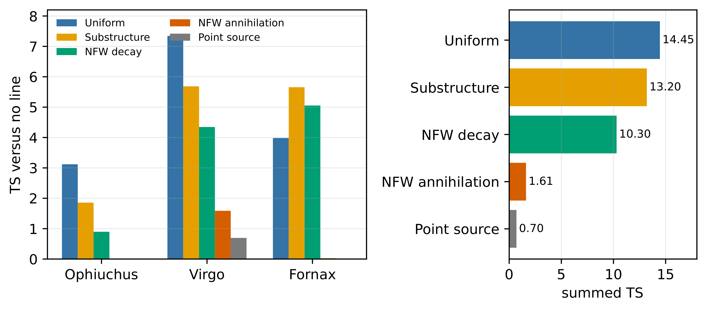
图注：Strict-GTI full-sky likelihood comparison. Left: per-cluster TS relative to the common no-line baseline. Right: sum of the three independently profiled TS values. Uniform brightness and substructure are nearly tied in the sum, whereas smooth NFW annihilation and a central point source receive little support. The bars compare fixed non-nested morphologies and therefore do not carry pairwise Gaussian significances.
对应解读：建议重点查看的图表第3项；关键图表逐图导读图3；模型拟合段落中的空间模板似然比较。
入选理由：这是支撑标题“能量对了、形态不对”的核心图，直接比较均匀面亮度、子结构增强、平滑 NFW 湮灭和中心点源等非嵌套空间模板的 TS。它显示均匀亮度和子结构模板在三团合并后最受支持，而平滑 NFW 和中心点源支持较弱，比单纯能谱图更能说明暗物质解释的主要困难。
来源与置信度：\(arxiv_source\)；high；\(arxiv_source\) / main.tex:figure[5]
Fig08
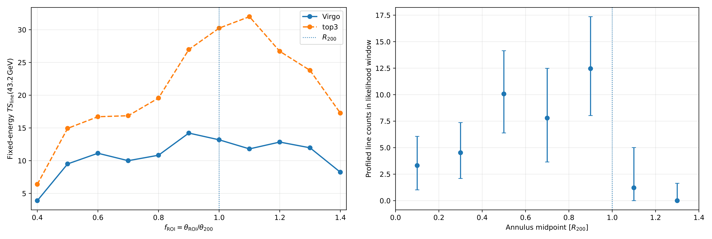
图注：Two complementary views of the radial behavior. Left: fixed-energy cumulative-aperture line TS for Virgo and the top-three stack; neighboring points are strongly correlated because the apertures are nested. Right: profiled line counts in disjoint top-three annuli, with profile-likelihood uncertainties. The independent-annulus representation, rather than the cumulative TS curve, is the primary empirical morphology diagnostic.
对应解读：建议重点查看的图表第5项；关键图表逐图导读图4；模型拟合段落中的空间残差和环带诊断。
入选理由：该图给出累计孔径 TS 与相互独立环带中的线计数及似然误差，是判断过量是否集中在星系团中心还是延伸到维里半径附近的关键经验诊断。右图的独立环带结果尤其符合日报强调的‘不要只把空间信息压缩成一个似然数’。
来源与置信度：\(arxiv_source\)；high；\(arxiv_source\) / main.tex:figure[8]
Fig07
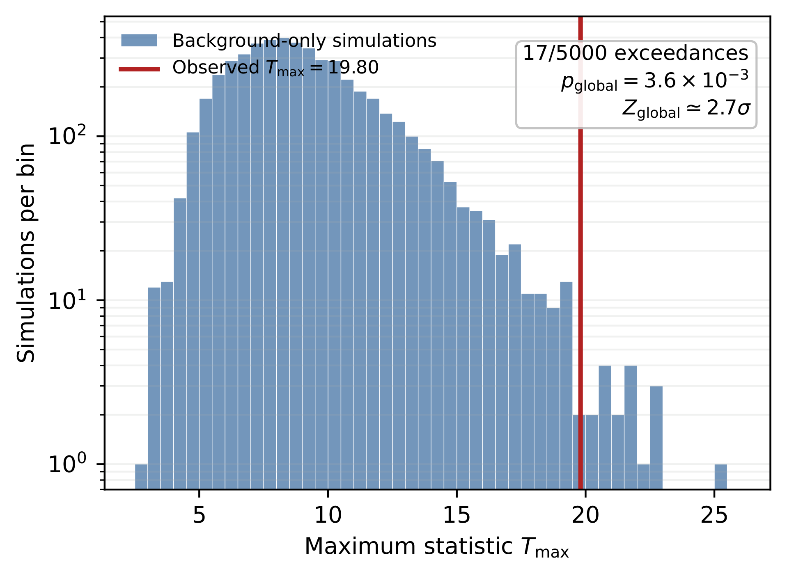
图注：Distribution of the maximum statistic in 5000 background-only simulations. Each realization is scanned over the common 20--70 GeV source-frame grid and all five morphologies. The vertical line marks the observed maximum, $T_{\max}=19.805$; 17 simulations reach or exceed it.
对应解读：建议重点查看的图表第1项和第7项；关键图表逐图导读图5；模型拟合段落中关于能量和模板扫描后的条件全局显著性校准。
入选理由：图中展示 5000 个背景-only 模拟在 20--70 GeV 能量网格和五种形态扫描后的最大统计量分布，并标出真实数据的 \(T_max=19.805\)。这正是解释约 2.7σ 条件全局显著性、避免把局部峰误读为发现的关键图。
来源与置信度：\(arxiv_source\)；high；\(arxiv_source\) / main.tex:figure[7]
Fig12
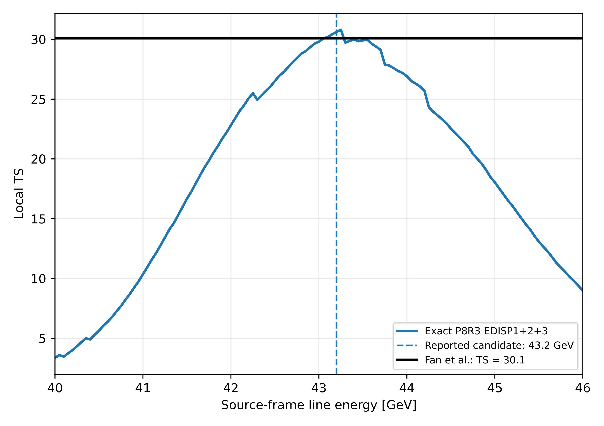
图注：Independent top-three line scan using the strict spacecraft-quality selection and the exact P8R3_ULTRACLEAN_V3 EDISP1+2+3 response. The vertical dashed line marks 43.2 GeV. The thick black horizontal line marks the published baseline ${\rm TS}=30.1$. We obtain ${\rm TS}=30.62$ at 43.2 GeV and a maximum of 30.81 at 43.25 GeV.
对应解读：建议重点查看的图表第1项；关键图表逐图导读图1和图2；模型拟合段落中的线能量扫描和候选峰复现。
入选理由：该图是严格 spacecraft-quality 选择和精确 P8R3 能量响应下的独立 top-three 线扫描，明确标出 43.2 GeV 以及 TS=30.62、最大值 43.25 GeV。它最直接支撑‘43 GeV 特征可被复现’以及峰值能量位于 43--45 GeV 附近的叙述。
来源与置信度：\(arxiv_source\)；high；\(arxiv_source\) / main.tex:figure[12]
Fig01
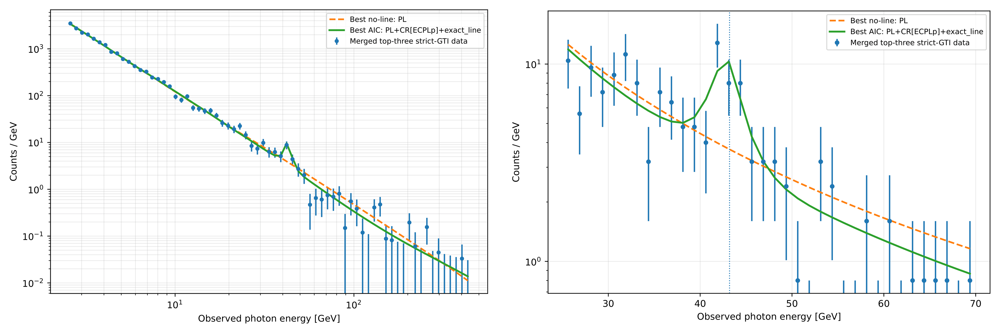
图注：Final physical hadronic test with energy-dependent exposure and the exact P8R3 line kernel. Left: the full 2.5--450 GeV merged spectrum. Right: zoom on the 25--70 GeV region containing the candidate feature. The orange curve is the best no-line model, while the green curve is the best-AIC model including a physical pion-decay component and the exact line. The statistical analysis is unbinned; the binned points are shown only for visualization.
对应解读：建议重点查看的图表第1项；关键图表逐图导读图1；模型拟合段落中的能谱残差、连续背景与线成分比较。
入选理由：该图展示 2.5--450 GeV 合并能谱及 25--70 GeV 候选区域放大图，包含无线模型、物理 pion-decay 成分和精确线响应。它有助于读者直观看到 43 GeV 附近窄特征相对于连续背景和强子模型的表现。
来源与置信度：\(arxiv_source\)；high；\(arxiv_source\) / main.tex:figure[1]
Fig09
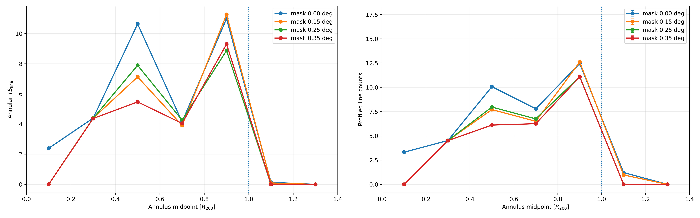
图注：Robustness of the independent radial excess to 4FGL-DR4 masking. Left: annular line TS as a function of radius for four point-source mask radii. Right: the corresponding profiled line counts. Both panels show point estimates without error bars. The strongest $0.8$--$1.0R_{200}$ contribution is stable under aggressive masking, while the $0.4$--$0.6R_{200}$ contribution is reduced but not removed.
对应解读：建议重点查看的图表第5项；关键图表逐图导读图4；模型拟合段落中关于未分辨源和点源掩膜系统误差的径向稳健性检查。
入选理由：该图检验独立环带线 TS 和线计数对 4FGL-DR4 点源掩膜半径的敏感性，显示外环贡献在更激进掩膜下仍较稳定。它补充 Fig08，直接回应日报中关于外环大面积、源表污染和空间模板系统误差的读图注意事项。
来源与置信度：\(arxiv_source\)；high；\(arxiv_source\) / main.tex:figure[9]
强相关工作
这篇工作与早期 Fermi-LAT 线搜索传统直接相连，尤其是银河中心 \(130\,\mathrm{GeV}\) 候选线引发的一系列关于试验因子、仪器系统误差和空间形态的讨论。相似之处在于二者都不是简单的“谱峰发现”问题，而是要判断峰是否与暗物质模板、仪器坐标和独立数据一致。建议检索关键词包括 “Fermi LAT gamma-ray line search”, “130 GeV line”, “dark matter annihilation line”, “look elsewhere effect gamma-ray line”。
与星系团暗物质工作的关系也很紧密。星系团线或连续谱约束通常依赖子结构 boost，而 boost 的不确定性长期是理论张力来源。本文的反向贡献是：即便允许子结构，空间形态和银河晕线限也会同时施压。建议检索关键词包括 “galaxy clusters dark matter annihilation boost factor”, “Virgo Fornax Ophiuchus Fermi LAT”, “substructure enhanced annihilation”, “cluster gamma-ray line”。
相反观点可能来自两类研究：一类更强调候选线在多个星系团中的能量一致性，认为统计独立目标的共现不易由涨落解释；另一类则从弥散背景、未分辨源和选择效应角度认为显著性被高估。读者应特别比较这些工作如何定义目标样本、是否盲分析、如何校正目标选择、是否使用空间模板比较，以及是否把外部银河晕线约束纳入暗物质解释。
同一事件 / 同类源线索：
相似工作：
基础理论 / 方法工作：
相反观点 / 张力线索：
4. Testing a Pre-Supernova Contribution to $^{44}$Ti in Cassiopeia A
- 来源：arXiv / astro-ph.HE
- 链接：https://arxiv.org/abs/2609.16826v1
- 作者：Toshiki Sato, Joshua Issa, Falk Herwig, Yui Kuboike, J. Martin Laming, Kai Matsunaga, Ryo Sawada
- 评分：novelty 8/10，importance 8/10，relevance 9/10，final 9.35/10
- 推荐理由：结合NuSTAR的44Ti空间/速度分布与X射线、红外和XRISM丰度约束，检验Cas A中44Ti的预超新星壳层合并贡献；直接涉及SNR、放射性同位素高能观测和核心坍缩爆炸机制，相关性和科学价值都较高。
中文题目：检验仙后座 A 中 \(^{44}\mathrm{Ti}\) 的超新星前贡献
做了什么：这篇论文重新解释仙后座 A 中放射性 \(^{44}\mathrm{Ti}\) 的来源：它不一定全部来自核心坍缩爆炸瞬间的内层核合成，也可能有相当一部分在爆炸前的氧-碳壳层并合中已经产生。作者把 \(\mathrm{NuSTAR}\) 对 \(^{44}\mathrm{Ti}\) 的空间和速度分布，与 X 射线、红外示踪的氧层、铁族抛射物以及 \(\mathrm{XRISM}\) 的稳定铁族丰度约束结合起来。主要结论是，低速和中速 \(^{44}\mathrm{Ti}\) 更像跟氧层物质同源，而不是简单跟受激波加热的富铁物质同源；若这部分确为爆炸前产物，其质量可达约 \(7\times10^{-5}\,M_\odot\)，约占总 \(^{44}\mathrm{Ti}\) 的一半。
为什么重要：仙后座 A 是检验核心坍缩超新星三维爆炸机制的基准源之一，而 \(^{44}\mathrm{Ti}\) 常被当作最内层爆炸核合成和不对称性的直接示踪物。如果其中相当一部分来自爆炸前壳层并合，那么过去用 \(^{44}\mathrm{Ti}\) 反推爆炸能量、质量切割、射流状不对称或中微子驱动羽流的解释都需要重新校准。
理论 / 观测 / 仪器方法价值：本文的价值在于把核合成、三维前身星结构、\(\gamma\) 射线成像光谱、X 射线等离子体诊断和红外抛射物运动学放到同一张证据链里。它不是只报一个新的 \(^{44}\mathrm{Ti}\) 质量，而是提出如何用空间-速度关联和稳定铁族丰度比来区分爆炸前与爆炸中核合成。
为什么应该关注：如果你关心超新星前身星的晚期燃烧、核心坍缩爆炸模型、年轻超新星遗迹的三维重建，或 \(\mathrm{NuSTAR}\)、\(\mathrm{XRISM}\) 这类高能观测如何约束核合成，这篇都值得看。它提醒我们：一个同位素的观测图像不一定只对应一个物理阶段，\(^{44}\mathrm{Ti}\) 既可能是爆炸诊断量，也可能保存了爆炸前壳层混合的记忆。
展开详细解读：文章讲解、背景、理论、重点章节、图表与相关工作
文章详细讲解
科学问题：仙后座 A 中的 \(^{44}\mathrm{Ti}\) 长期被视为核心坍缩爆炸内层物质的标志，因为它由高温硅燃烧、\(\alpha\) 丰富冻结等过程产生，半衰期又足够长，可在几百年后的遗迹中通过 \(\gamma\) 射线和硬 X 射线衰变线观测到。问题在于，近年的恒星演化计算显示，大质量星临终前的氧-碳壳层并合也可能合成可观 \(^{44}\mathrm{Ti}\)。如果仙后座 A 的前身星经历过这类并合，那么观测到的 \(^{44}\mathrm{Ti}\) 不应全部归因于爆炸瞬间的内层核合成。
作者怎么做：论文把 \(\mathrm{NuSTAR}\) 对 \(^{44}\mathrm{Ti}\) 衰变线的空间分布和多普勒速度信息，和其他波段的抛射物示踪量对照，包括 X 射线中的受激波加热富铁物质、氧层相关元素，以及红外观测给出的低电离或未完全受激波处理的抛射物结构。核心思路不是只比较总质量，而是把 \(^{44}\mathrm{Ti}\) 分成速度和空间上的不同成分，检查它们分别更接近氧层示踪物还是富铁爆炸产物。
关键结果：他们发现低速和中速 \(^{44}\mathrm{Ti}\) 成分与氧层示踪物的联系更强，而与受激波的富铁物质并不简单共位。这支持一种混合来源图像：一部分 \(^{44}\mathrm{Ti}\) 来自爆炸性燃烧，另一部分可能在核心坍缩前的氧-碳壳层并合中形成并被后续爆炸带出。若把与氧层示踪物相关的 \(^{44}\mathrm{Ti}\) 视为爆炸前产物，其质量上限或代表性贡献可达 \(\sim7\times10^{-5}\,M_\odot\)，约为仙后座 A 总 \(^{44}\mathrm{Ti}\) 的一半。
更深一层的约束来自稳定铁族元素。论文指出，能产生更高爆炸性 \(^{44}\mathrm{Ti}\) 产额的三维模型，往往也会给出偏高的 \(\mathrm{Ti}/\mathrm{Fe}\) 和 \(\mathrm{Mn}/\mathrm{Cr}\) 等丰度比；而 \(\mathrm{XRISM}\) 对稳定铁族丰度的测量提供了独立校验。如果观测丰度比不支持极端高的爆炸性 \(^{44}\mathrm{Ti}\) 产额，那么把部分 \(^{44}\mathrm{Ti}\) 分配给爆炸前壳层并合就更自然。
局限和下一步：这类解释仍受三维几何重建、激波加热选择效应、未受激波抛射物可见性、核反应率和晚期恒星演化不确定性的限制。氧层共位并不自动等于爆炸前合成，因为爆炸混合、射流状结构和反向激波传播也会改变形态关联。下一步需要更精细的 \(^{44}\mathrm{Ti}\) 速度分量分解、\(\mathrm{XRISM}\) 或后续高分辨 X 射线光谱对稳定铁族元素的空间分辨测量，以及三维壳层并合模型和三维爆炸模型的端到端合成观测比较。
关键结果是怎么做出来的
样本和数据选择的核心不是一个源样本统计，而是仙后座 A 这个单个年轻超新星遗迹的多数据集交叉诊断。论文使用 \(\mathrm{NuSTAR}\) 的 \(^{44}\mathrm{Ti}\) 衰变线成像光谱来追踪放射性同位素的空间位置和视向速度，并将其与 X 射线、红外抛射物诊断对比。需要特别注意的是，\(^{44}\mathrm{Ti}\) 线本身追踪的是放射性核素分布，而 X 射线富铁物质通常要求该物质已经被反向激波加热到可发射热等离子体谱线的状态，因此二者不是完全等价的质量示踪。
最重要的证据链是速度分量分解。作者把 \(^{44}\mathrm{Ti}\) 的低速、中速和可能的高速成分与不同层状元素示踪物比较，发现低速和中速 \(^{44}\mathrm{Ti}\) 更贴近氧层示踪，而非受激波的富铁结构。这一结论依赖于 \(\mathrm{NuSTAR}\) 线心位移对多普勒速度的约束，以及不同波段图像或三维重建之间的空间对应。读者应检查论文中 \(^{44}\mathrm{Ti}\) 图像、速度切片图、以及与氧和铁示踪物叠加的图，而不要只看总通量表。
质量估计方面，作者把可能与氧层相关的 \(^{44}\mathrm{Ti}\) 分量折算为当前衰变校正后的初始质量，得到最高约 \(7\times10^{-5}\,M_\odot\) 的爆炸前贡献量级。这里的关键统计不是传统大样本显著性，而是成分归属、通量分解和系统误差预算：线通量提取、背景、距离、年龄、半衰期、仪器响应、以及哪些像素或速度区间被归为氧层相关都会影响该数值。
模型比较的另一条线来自核合成产额。论文把爆炸性核合成模型与氧-碳壳层并合模型都放进讨论：标准一维恒星演化中的摄入率和对流速度通常难以产生足够多 \(^{44}\mathrm{Ti}\)，但更强的壳层并合和更高的混合速度可以接近所需量。与此同时，单纯提高爆炸性产额可能带来稳定铁族丰度比的副作用，例如 \(\mathrm{Ti}/\mathrm{Fe}\) 和 \(\mathrm{Mn}/\mathrm{Cr}\) 偏高。
稳健性检验应关注两类系统误差。第一类是观测归属误差：氧层示踪物、红外结、X 射线富铁物质和 \(^{44}\mathrm{Ti}\) 是否真的处在同一三维位置，还是视线投影和激波选择造成的假相关。第二类是理论系统误差：壳层并合模型中的核反应网络、混合长度或三维湍流速度，爆炸模型中的质量切割、电子丰度 \(Y_e\)、熵和膨胀时标都会改变 \(^{44}\mathrm{Ti}\) 与稳定铁族元素的联动。
展开背景、理论、公式、模型、章节和图表导读
背景知识
仙后座 A 是银河系内最重要的年轻核心坍缩超新星遗迹之一，年龄约数百年，角尺度大、亮度高、结构复杂。它既能在射电、红外、光学、X 射线中显示多层抛射物和激波结构，又能通过 \(^{44}\mathrm{Ti}\) 衰变线直接探测新近核合成产物。因此，仙后座 A 一直是连接超新星爆炸物理和遗迹观测的样板对象。
\(^{44}\mathrm{Ti}\) 的特殊性在于半衰期约为几十年量级，既不会像 \(^{56}\mathrm{Ni}\) 那样很快衰变完，也不会像稳定元素那样失去时间标记。它的衰变链产生可被硬 X 射线和 \(\gamma\) 射线仪器观测的特征线，因此被用来定位爆炸中新合成物质，特别是靠近质量切割附近的内层区域。以往很多解释把仙后座 A 的 \(^{44}\mathrm{Ti}\) 不对称分布看作爆炸非球对称、低模态对流或喷流状结构的证据。
近年来，前身星晚期演化的重要性被重新强调。大质量星在核心坍缩前的硅、氧、碳、氖壳层燃烧并非一维静态结构，三维对流、波动、壳层并合和燃料摄入可能改变核心外层的成分分布。氧-碳壳层并合会把燃料和灰烬混合到高温区域，可能产生传统一维模型低估的中间质量和铁族附近核素。这使得某些观测到的核合成产物可能带有爆炸前印记。
为什么现在值得重新看？一方面，\(\mathrm{NuSTAR}\) 已经给出仙后座 A 中 \(^{44}\mathrm{Ti}\) 的空间和速度信息，不再只是总线通量；另一方面，\(\mathrm{XRISM}\) 这类高分辨 X 射线光谱仪开始提供更精细的稳定铁族元素丰度比。两者结合后，可以用放射性同位素与稳定元素的联合约束来区分不同核合成路径。
该领域常见误区有三个。第一，把 \(^{44}\mathrm{Ti}\) 直接等同于受激波加热的富铁 X 射线等离子体；实际上 \(^{44}\mathrm{Ti}\) 衰变线不要求等离子体被热激发，而铁线通常要求适当温度和电离状态。第二，把形态共位视为唯一证据；投影和反向激波选择会制造或掩盖相关性。第三，把总 \(^{44}\mathrm{Ti}\) 产额只归因于爆炸机制；本文强调前身星晚期核合成也可能贡献不可忽略的一部分。
基础理论 / 方法脉络
从物理图像看，核心坍缩超新星的核合成由温度、密度、电子丰度 \(Y_e\)、膨胀时标和初始成分决定。\(^{44}\mathrm{Ti}\) 通常在高温燃烧后快速膨胀的 \(\alpha\) 丰富冻结环境中生成，对熵、\(Y_e\) 和质量切割非常敏感。因此它常被用来追踪爆炸最内层物质和非球对称混合。
但同一种核素可以有多条生产路径。若氧壳和碳壳在核心坍缩前发生并合，碳燃料被卷吸进氧燃烧层，会改变局部反应流和温度历史。只要温度、密度和混合时标合适，壳层并合也可能产生 \(^{44}\mathrm{Ti}\)。这一路径的关键控制量包括燃料摄入率、对流速度、壳层温度、核反应网络和并合持续时间。
观测上，\(^{44}\mathrm{Ti}\) 通过衰变线给出空间和速度信息。线通量对应现存 \(^{44}\mathrm{Ti}\) 核数，结合年龄和半衰期可反推初始质量；线心偏移给出视向速度；线宽包含内部速度弥散、仪器响应和可能的多个速度成分。与普通热 X 射线谱线不同，\(^{44}\mathrm{Ti}\) 衰变线不需要被反向激波加热，所以它能看到某些尚未在热 X 射线中发亮的抛射物。
本文的关键假设是：若某些 \(^{44}\mathrm{Ti}\) 成分在空间和速度上更接近氧层示踪物，且与富铁爆炸产物不强相关，那么它们可能包含爆炸前壳层并合产物。这个推断不是单一图像的结论，而是形态、运动学和核合成产额的一致性检验。\(\mathrm{XRISM}\) 的稳定铁族丰度比进一步提供约束，因为爆炸性提高 \(^{44}\mathrm{Ti}\) 产额往往会同时改变 \(\mathrm{Ti}\)、\(\mathrm{Cr}\)、\(\mathrm{Mn}\)、\(\mathrm{Fe}\) 的相对丰度。
主要退化关系来自三方面：第一，爆炸混合可把内层 \(^{44}\mathrm{Ti}\) 搬运到氧层附近，模拟爆炸前来源；第二，反向激波只照亮部分铁物质，使 \(^{44}\mathrm{Ti}\) 与富铁 X 射线结构看似不相关；第三，三维投影会让不同半径和速度的结在天球面上重叠。因此必须同时使用位置、速度、元素示踪和丰度比，而不能只靠二维图像。
公式与推导
第一步是放射性衰变。若初始 \(^{44}\mathrm{Ti}\) 核数为 \(N_0\)，衰变常数为 \(\lambda\)，年龄为 \(t\)，则现存核数为
这里 \(t_{1/2}\) 是半衰期。这个式子把当前线通量与爆炸时或爆炸前产生的初始 \(^{44}\mathrm{Ti}\) 质量连接起来。
第二步是从核数到质量。若 \(A=44\)，原子质量单位为 \(m_u\)，则初始质量为
论文讨论的 \(\sim7\times10^{-5}\,M_\odot\) 是对某一成分的衰变校正后质量尺度，而不是今天遗迹中未衰变的质量。
第三步是线通量。若每次衰变在某条线上的分支比为 \(B_\gamma\)，源距离为 \(D\)，忽略吸收或把吸收并入响应，则观测光子通量近似为
反过来，\(F_\gamma\) 可用于估计 \(N(t)\) 和 \(M_{44,0}\)。系统误差主要来自 \(D\)、背景、分支比、仪器有效面积和空间模板。
第四步是多普勒速度。若静止能量为 \(E_0\)，观测线心为 \(E_{\rm obs}\)，非相对论速度下视向速度满足
这个关系让 \(\mathrm{NuSTAR}\) 的谱线位移变成三维重建中的速度坐标；符号约定取决于论文定义，读图时要确认红移和蓝移方向。
第五步是仪器计数模型。第 \(i\) 个能道和第 \(p\) 个空间像素的期望计数可写成
其中 \(T\) 是曝光时间，\(R_{ip}\) 是包含有效面积、点扩散函数和能量响应的响应函数，\(S\) 是天空源强，\(b_{ip}\) 是背景。这说明空间-速度分布不是直接照片，而是经仪器响应卷积后反演得到的。
第六步是泊松似然。硬 X 射线线计数通常可用
来拟合，其中 \(n_{ip}\) 是观测计数。比较不同空间模板或速度成分时，本质上是在比较不同 \(\mu_{ip}\) 对数据的解释能力。
第七步是成分质量分解。若把总 \(^{44}\mathrm{Ti}\) 分成爆炸前成分和爆炸性成分，可写作
本文的物理主张是 \(M_{44}^{\rm preSN}\) 可能不是零，并且可达到总量的显著比例。
第八步是壳层并合的产额尺度。若壳层并合持续时间为 \(\Delta t\)，摄入率为 \(\dot{M}_{\rm ing}\)，有效产额质量分数为 \(X_{44}^{\rm eff}\)，则量级估计为
这不是精确核反应网络方程，而是说明为什么更高摄入率和更强对流速度会增加爆炸前 \(^{44}\mathrm{Ti}\) 产量。
第九步是稳定铁族丰度约束。模型必须同时满足
如果高 \(M_{44}^{\rm exp}\) 的爆炸模型系统性推高这些比值，就会受到 \(\mathrm{XRISM}\) 丰度测量的限制。
第十步是模型比较诊断。两个模型 \(\mathcal{M}_1\) 和 \(\mathcal{M}_2\) 可用似然比或信息准则比较，例如
这里 \(C\) 可理解为 Cash 统计量形式的拟合优度。对本文来说，关键不是追求单一显著性数字，而是检查混合来源模型是否同时改善形态、速度和丰度约束的一致性。
模型拟合 / 应用方法
这类工作的拟合量首先是 \(^{44}\mathrm{Ti}\) 线通量、线心、线宽和空间分布。对 \(\mathrm{NuSTAR}\) 数据，拟合必须通过仪器响应完成，包含连续背景、非天体背景、相邻谱段以及点扩散函数导致的空间混合。若用空间模板拟合，还需要决定模板来自氧层、铁层、红外结还是自由形态重建，这会影响成分归属。
参数估计通常可采用泊松似然或 Cash 统计量，参数包括各速度成分的归一化、线心偏移、宽度、背景项和可能的空间模板权重。若进入贝叶斯框架，距离、年龄、半衰期、背景归一化和仪器有效面积可作为带先验的不确定量传播到 \(M_{44}\)。本文的结论尤其依赖成分之间的相对关系，因此相对校准和模板系统误差比单个通量误差更重要。
残差诊断应看两类图：谱残差和空间残差。谱残差告诉我们 \(^{44}\mathrm{Ti}\) 线是否需要多个速度成分，空间残差告诉我们某个模板是否遗漏了特定区域的发射。如果用富铁 X 射线模板拟合后在氧层相关区域留下系统正残差，而氧层模板能减少残差，这会支持论文的形态论证；反之则说明关联可能不稳健。
主要退化关系包括速度成分与线宽的退化、空间模板之间的相关性、背景和弱线通量的退化，以及三维几何和投影之间的退化。尤其要警惕把未被反向激波照亮的铁物质误判为不存在，因为 X 射线富铁结构不是总铁质量分布。也要警惕氧层示踪物的选择：不同波段氧线可能对应不同温度、电离状态和激波历史。
理论模型拟合方面，爆炸模型和壳层并合模型都不是只拟合一个 \(M_{44}\)。合格模型还要同时满足 \(^{44}\mathrm{Ti}\) 的空间速度分布、总质量、稳定铁族丰度比和仙后座 A 已知的抛射物结构。模型可能失败的方式包括：需要不现实的壳层摄入率、预测过高的 \(\mathrm{Ti}/\mathrm{Fe}\) 或 \(\mathrm{Mn}/\mathrm{Cr}\)、无法解释高速 \(^{44}\mathrm{Ti}\) 成分，或在三维混合上与观测形态不符。
重点章节 / 结果段落怎么读
数据和观测材料部分应优先看作者如何定义 \(\mathrm{NuSTAR}\) 的 \(^{44}\mathrm{Ti}\) 数据产品：线能区、背景处理、空间 binning、速度区间以及采用哪些已有 X 射线和红外图作为氧层或铁层示踪。这里决定后续所有成分归属的可靠性。
方法部分要看 \(^{44}\mathrm{Ti}\) 与多波段示踪物的比较方式。读者应区分简单二维叠图、相关系数、速度切片、三维重建和模板拟合，因为它们的证据强度不同。若论文给出不同速度成分的空间分布，应重点检查低速和中速成分为何被认为更接近氧层。
主结果部分的重点是 \(M_{44}^{\rm preSN}\) 的估算。需要看作者如何从与氧层相关的通量分量换算到初始质量，采用的总 \(^{44}\mathrm{Ti}\) 质量是多少，\(\sim7\times10^{-5}\,M_\odot\) 是上限、代表值还是模型依赖估计，以及误差条如何给出。
讨论部分要细读爆炸性核合成与氧-碳壳层并合模型的对比。作者不是简单否定爆炸贡献，而是提出双来源。关键在于，哪些模型能产生足够 \(^{44}\mathrm{Ti}\)，哪些又会违反 \(\mathrm{XRISM}\) 的稳定铁族丰度比。
稳健性或附录部分如果存在，应查看背景变化、模板选择、速度分箱、距离和年龄假设、以及不同核合成模型输入对结论的影响。对这篇文章，系统误差很可能比形式统计误差更能决定结论可信度。
建议重点查看的图表
-
\(^{44}\mathrm{Ti}\) 空间分布图：看 \(\mathrm{NuSTAR}\) 线发射在遗迹中的不对称性，是否与已知喷流、反向激波或中心致密源位置相关。
-
\(^{44}\mathrm{Ti}\) 速度分量图：检查低速、中速和高速成分的空间位置是否真的不同，以及速度分箱边界是否影响结论。
-
\(^{44}\mathrm{Ti}\) 与氧层示踪物叠加图：关注共位区域、偏移区域和投影可能造成的假重合。
-
\(^{44}\mathrm{Ti}\) 与富铁 X 射线物质叠加图：看二者是否缺乏相关，或只是铁物质未被激波照亮导致不可见。
-
线谱拟合或残差图：检查 \(^{44}\mathrm{Ti}\) 线是否有足够信噪比支持速度分解，背景模型是否留下系统残差。
-
核合成产额比较图或表：看氧-碳壳层并合模型与爆炸模型给出的 \(M_{44}\)、\(\mathrm{Ti}/\mathrm{Fe}\)、\(\mathrm{Mn}/\mathrm{Cr}\) 是否同时满足观测。
-
系统误差表：重点看距离、年龄、半衰期、仪器响应、模板选择和速度分箱对 \(M_{44}^{\rm preSN}\) 的影响。
关键图表逐图导读
图 1：通常应是仙后座 A 的多波段背景图或 \(^{44}\mathrm{Ti}\) 总分布图。横纵轴大概率是天球坐标或相对遗迹中心的角距离，颜色表示 \(^{44}\mathrm{Ti}\) 线强度或显著性，轮廓可能来自 X 射线、红外或射电。读图重点是 \(^{44}\mathrm{Ti}\) 是否呈球对称壳层、偶极不对称还是结状分布。陷阱是不要把二维重叠直接当作三维共位。
图 2：若为速度切片或谱线位移图，横纵轴仍为空间坐标，颜色或分面表示不同 \(v_{\rm los}\) 区间。应看低速、中速 \(^{44}\mathrm{Ti}\) 是否落在氧层结构附近，以及高速成分是否表现出不同形态。陷阱是线宽和仪器能量分辨率会把速度成分混合，速度边界不应被过度物理化。
图 3：若为 \(^{44}\mathrm{Ti}\) 与氧、硅、硫或其他氧层示踪物的叠加图，重点看峰值是否共位、边界是否一致、以及是否存在系统偏移。模型线或轮廓若表示氧层，应检查它来自哪个波段和哪种激发条件。陷阱是氧层示踪物本身也受激波、电离状态和尘埃消光影响。
图 4：若为 \(^{44}\mathrm{Ti}\) 与富铁 X 射线物质比较图，应看铁线发射强的区域是否缺少 \(^{44}\mathrm{Ti}\)，以及 \(^{44}\mathrm{Ti}\) 强的区域是否缺少铁线。主要结论若是二者不强相关，需要确认统计显著性和背景处理。陷阱是 X 射线铁线只示踪受激波加热、处于合适电离状态的铁，不代表全部铁。
图 5：若为谱拟合图，横轴是能量，纵轴是计数率、光子通量或残差。应看 \(^{44}\mathrm{Ti}\) 衰变线附近模型是否贴合，残差是否随机，背景是否被独立约束。若存在多个速度成分，线心偏移和线宽的置信区间比最佳拟合值更重要。
图 6：若为核合成模型比较图，横轴可能是 \(M_{44}\)、摄入率、对流速度或模型编号，纵轴可能是产额或丰度比。应检查哪些模型能达到 \(\sim7\times10^{-5}\,M_\odot\) 的爆炸前贡献，同时不违反 \(\mathrm{XRISM}\) 给出的 \(\mathrm{Ti}/\mathrm{Fe}\) 和 \(\mathrm{Mn}/\mathrm{Cr}\)。陷阱是不要只看 \(M_{44}\) 单指标，稳定元素比是同等重要的约束。
论文原图 / 可嵌入图片
Fig01
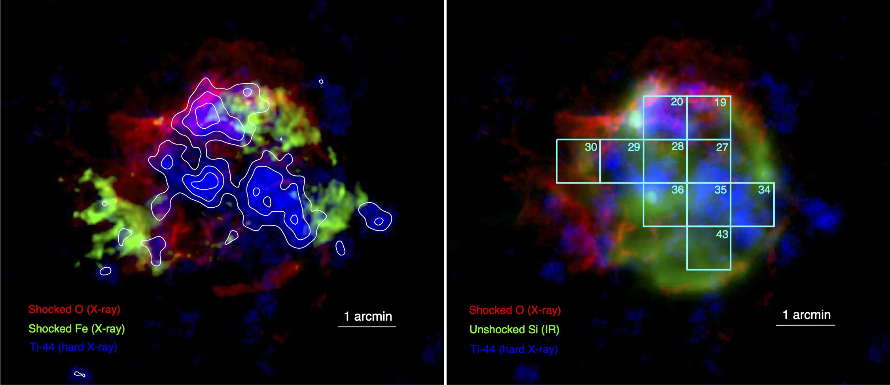
图注：{\(\it\) Left}: The spatial distribution of $^{44}$Ti in Cas A (blue) compared with the other bright X-ray features (red: oxygen, green: iron). The oxygen traces material from the oxygen layer formed during stellar evolution. The white contours represent the intensity distribution of $^{44}$Ti. {\(\it\) Right}: Same as the left figure, but compared with the infrared image of unshocked Si (green) obtained with Spitzer \(\citep\)[e.g.,][]{2008ApJ...673..271R,2009ApJ...693..713S}. Cyan boxes with associated region numbers indicate where $^{44}$Ti has been detected in \(\cite{2017ApJ...834...19G}.\)
对应解读：建议重点查看的图表1、3、4；关键图表逐图导读图1、图3、图4
入选理由：该图同时把NuSTAR的^{44}Ti总空间分布与氧、铁X射线结构以及未受激波Si红外结构叠加，是判断^{44}Ti是否更接近氧层示踪物、是否与富铁物质缺乏共位关系的核心证据。它直接支撑日报中关于二维形态关联、投影陷阱和预超新星贡献判据的主要讨论。
来源与置信度：\(arxiv_source\)；high；\(arxiv_source\) / sample701.tex:figure[1]
Fig03
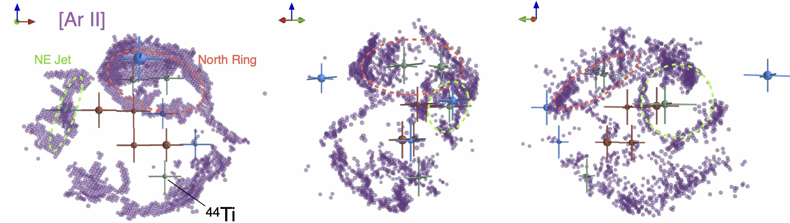
图注：The 3D distribution of the observed $^{44}$Ti ejecta compared with the [Ar II] emission observed by Spitzer \(\citep{2010ApJ...725.2038D}.\) The $^{44}$Ti points are colored according to their positions relative to the reverse shock, following \(\cite{2017ApJ...834...19G}\): red points lie inside the reverse shock, green points are near the reverse-shock radius, and blue points lie outside the reverse shock. This comparison of the 3D distributions was performed in Figure 10 of \(\cite{2017ApJ...834...19G}.\) The images from left to right present projections from different viewing angles, demonstrating that the intermediate-velocity $^{44}$Ti ejecta are contained within the NE jet and the North ring-like structure.
对应解读：建议重点查看的图表2、3；关键图表逐图导读图2、图3
入选理由：该图给出^{44}Ti的三维分布并按相对于反向激波的位置分类，还与Spitzer [Ar II]发射比较，可用于检查中速^{44}Ti是否位于NE jet和北部环状氧/氩层结构中。它比单纯二维叠加更能支撑日报中关于速度成分、三维几何和投影退化的解读。
来源与置信度：\(arxiv_source\)；high；\(arxiv_source\) / sample701.tex:figure[3]
Fig05
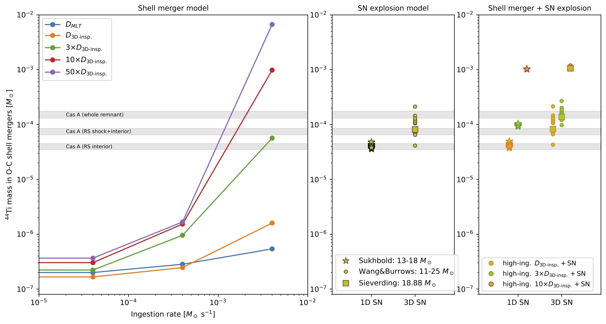
图注：{\(\it\) Left}: Comparison between the $^{44}$Ti mass inferred from observations in Cas A and theoretical pre-supernova models by \(\cite{2026ApJ..1004...52I}.\) The horizontal axis shows the ingestion rate, while different colors indicate different mixing profiles. Gray horizontal bands indicate the ranges of the total $^{44}$Ti mass inferred for the whole remnant, the reverse-shock (RS) shock position + interior region, and the RS interior region from previous studies \(\citep{2017ApJ...834...19G}.\) {\(\it\) Middle}: Comparison of the observed $^{44}$Ti mass with predictions from supernova explosion models. Symbols represent predictions from one-dimensional models by \(\citet{2016ApJ...821...38S}\) and three-dimensional models by \(\citet{2023ApJ...957L..25S}\) and \(\citet{2024ApJ...974...39W}.\) {\(\it\) Right}: Same as the middle panel, but with the pre-supernova $^{44}$Ti contribution from the highest-ingestion-rate shell-merger models added to the supernova yields. The edge colors indicate the adopted shell-merger models, corresponding to $D_{\rm 3D\mbox{-}insp.}$, $3\times D_{\rm 3D\mbox{-}insp.}$, and $10\times D_{\rm 3D\mbox{-}insp.}$, as shown in the left panel. The gray horizontal bands in the middle and right panels are the same as those shown in the left panel.
对应解读：建议重点查看的图表6；关键图表逐图导读图6；理论模型拟合段落
入选理由：该图直接比较观测^{44}Ti质量、氧-碳壳层并合预超新星模型、爆炸模型以及二者叠加后的产额，是检验约7×10^{-5} M_sun预超新星贡献是否可行的关键模型图。它把摄入率、混合方案和观测质量带放在同一框架中，科学支撑度很高。
来源与置信度：\(arxiv_source\)；high；\(arxiv_source\) / sample701.tex:figure[5]
Fig06
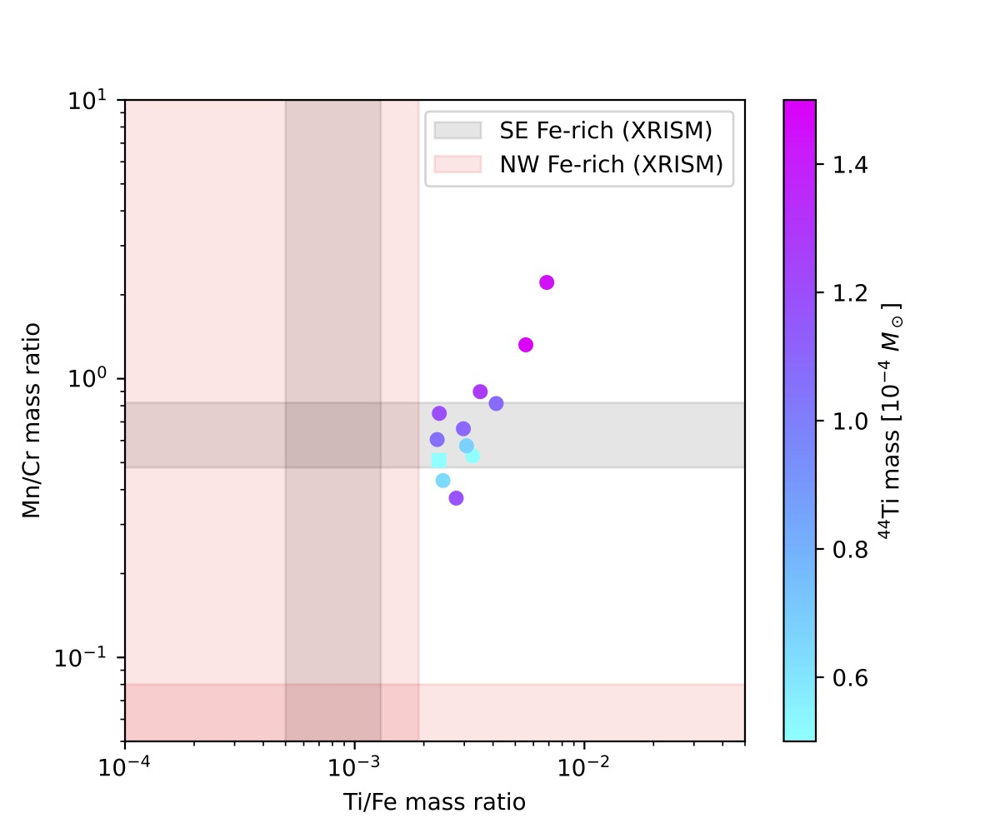
图注：Stable Ti/Fe versus Mn/Cr mass ratios for the three-dimensional core-collapse supernova models of \(\citet{2024ApJ...962...71W}.\) Each point represents an individual explosion model, with the color indicating the corresponding radioactive $^{44}$Ti yield \(\citep{2024ApJ...974...39W}.\) The gray and red shaded regions show the abundance ratios measured in the southeastern (SE) and northwestern (NW) Fe-rich ejecta of Cas A with XRISM/Resolve \(\citep{2026ApJ..1001...46S},\) respectively. The comparison illustrates the relationship between the production of radioactive $^{44}$Ti and stable Fe-group elements in the supernova ejecta.
对应解读：建议重点查看的图表6；关键图表逐图导读图6；详细解读中稳定铁族元素约束段落
入选理由：该图展示三维爆炸模型的稳定Ti/Fe与Mn/Cr质量比，并用颜色编码^{44}Ti产额，同时叠加XRISM观测约束区。它直接支撑日报强调的‘不能只看M44，还要同时满足Ti/Fe和Mn/Cr’这一核心判据，是区分爆炸贡献与预超新星贡献的重要约束。
来源与置信度：\(arxiv_source\)；high；\(arxiv_source\) / sample701.tex:figure[6]
Fig02
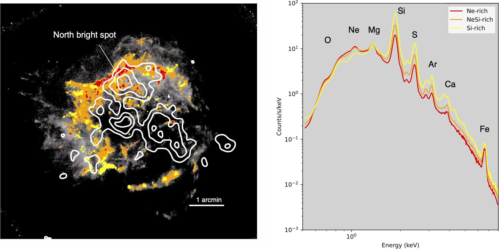
图注：{\(\it\) Left}: Spatial classification of oxygen-rich ejecta in Cassiopeia A based on a principal component analysis of narrow-band X-ray images (Y. Kuboike et al., in prep.). Regions with strong oxygen emission are identified and further divided into Ne-rich (red), Ne-/Si-rich (orange), and Si-rich (yellow) components. White contours indicate the distribution of $^{44}$Ti, highlighting the North bright spot. {\(\it\) Right}: Representative X-ray spectra extracted from the three PCA-defined regions. The spectra show a systematic progression from Ne-rich/Si-poor (red) to Si-rich/Ne-poor (yellow) compositions while maintaining strong oxygen emission, demonstrating that the PCA effectively captures compositional variations within the oxygen-rich ejecta. The $^{44}$Ti North bright spot broadly follows the distribution of oxygen-rich material but shows a stronger spatial association with the Ne-rich and Ne-/Si-rich components than with the most Si-rich regions.
对应解读：建议重点查看的图表3；关键图表逐图导读图3
入选理由：该图用PCA分类氧丰富抛射物，并叠加^{44}Ti北部亮斑轮廓，同时给出不同氧层成分区域的代表X射线谱。它能细化‘^{44}Ti与氧层示踪物相关’这一说法，显示关联更偏向Ne-rich和Ne/Si-rich氧层组分，而不只是笼统的氧发射重合。
来源与置信度：\(arxiv_source\)；high；\(arxiv_source\) / sample701.tex:figure[2]
Fig07
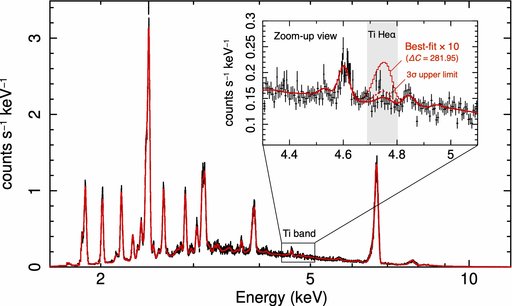
图注：XRISM/Resolve spectrum (1.6--12 keV) extracted from the Fe-rich region in the SE pointing of the Cas A observations. The black data show the observed spectrum, while the red curve indicates the best-fit plasma emission model shown in \(\cite{2026ApJ..1001...46S}.\) The inset panel presents a zoomed-in view of the Ti He$\alpha$ band, where the best-fit model (red) is compared with a model in which the Ti abundance is artificially increased by a factor of 10. The latter is intended to mimic the Ti/Fe mass ratio of $\approx 10^{-2}$ expected in models producing a large amount of $^{44}$Ti (see Figure~\ref{fig:mncr_tife}). The difference between these two models corresponds to $\Delta C = 281.95$, which is unlikely to arise from statistical fluctuations alone (corresponding to a p-value of $\approx 10^{-63}$). The red dashed curve indicates the 3$\sigma$ upper limit on the Ti line emission ($\Delta C = 9.0$), corresponding to a Ti/Fe mass ratio of 0.0024.
对应解读：建议重点查看的图表5、6；模型拟合段落中谱线拟合、残差和稳定铁族丰度约束
入选理由：该图给出XRISM/Resolve在富铁区域的高分辨谱拟合，特别是Ti Heα波段、最佳拟合模型、增强Ti模型和3σ上限。它为高^{44}Ti爆炸模型可能导致过高Ti/Fe提供了直接谱学检验，补强Fig06中的丰度比约束。
来源与置信度：\(arxiv_source\)；high；\(arxiv_source\) / sample701.tex:figure[7]
强相关工作
同一源方面，应把本文放在仙后座 A 的 \(^{44}\mathrm{Ti}\) 观测史中理解：早期硬 X 射线和 \(\gamma\) 射线探测给出总产额，\(\mathrm{NuSTAR}\) 进一步提供空间分布和速度结构，后续 X 射线和红外工作重建了富铁、富氧和未受激波抛射物的三维形态。检索关键词可用 Cassiopeia A \(^{44}\mathrm{Ti}\), NuSTAR Cas A titanium-44, Cas A ejecta 3D reconstruction, Cas A Fe-rich ejecta。
同类理论方面，本文与晚期恒星演化中的对流边界混合、氧壳燃烧、碳壳卷吸和壳层并合研究相连。相反或竞争解释是：全部 \(^{44}\mathrm{Ti}\) 都由爆炸性硅燃烧和 \(\alpha\) 丰富冻结产生，只是被三维爆炸混合搬运到看似接近氧层的位置。检索关键词可用 oxygen-carbon shell merger, pre-supernova nucleosynthesis, convective ingestion massive stars, \(^{44}\mathrm{Ti}\) core-collapse supernova yields, Cas A XRISM Mn Cr Ti Fe。
观测张力方面，重点不只是 \(^{44}\mathrm{Ti}\) 总质量是否偏高，而是同时满足空间分布、速度分布和稳定铁族丰度比是否困难。若未来 \(\mathrm{XRISM}\) 或其他高分辨光谱确认 \(\mathrm{Ti}/\mathrm{Fe}\) 与 \(\mathrm{Mn}/\mathrm{Cr}\) 较低，那么高爆炸性 \(^{44}\mathrm{Ti}\) 产额模型会更受限制；若发现未受激波铁物质与 \(^{44}\mathrm{Ti}\) 高度共位，则爆炸性来源解释会增强。
同一事件 / 同类源线索：
- https://arxiv.org/abs/2609.16826
- https://simbad.u-strasbg.fr/simbad/sim-id?Ident=Cassiopeia%20A
- https://chandra.harvard.edu/photo/2000/0052/
相似工作：
（未提供）
基础理论 / 方法工作：
（未提供）
相反观点 / 张力线索：
（未提供）
5. Charging of rotating black holes: kinetic simulations of black hole magnetospheres
- 来源：arXiv / astro-ph.HE
- 链接：https://arxiv.org/abs/2609.16447v1
- 作者：Martin Kološ, Farukh Abdulkhamidov, Arman Tursunov, Jorge A. Rueda, Benoît Cerutti
- 评分：novelty 8/10，importance 8/10，relevance 8/10，final 9.00/10
- 推荐理由：用GRPIC和自洽对产生研究旋转黑洞磁层充电，给出低于Wald电荷的动力学吸引子并讨论对电势降、粒子加速和Blandford-Znajek能量抽取的影响；对黑洞磁层和高能喷流物理具有较高相关性。
中文题目：旋转黑洞如何带电：黑洞磁层的广义相对论动理学模拟
做了什么：这篇论文用轴对称广义相对论粒子模拟研究一个老问题：浸在外部磁场中的旋转黑洞是否会充电到经典的 Wald 电荷。作者从两个相反初始条件出发，即初始黑洞电荷为零和初始黑洞电荷等于 Wald 值，并加入自洽正负电子对产生，跟踪穿过视界的净电荷。结果是，两条演化分支都会在几十个引力时间内收敛到同一个平衡电荷，说明这是动理学磁层的吸引子，而不是初始条件记忆。更关键的是，平衡电荷通常显著低于 Wald 值：低到中等自旋时约为 Wald 值的三成，高自旋时趋近于零。
为什么重要：Wald 电荷常被当作旋转黑洞在外部磁场中的自然带电量，但真实黑洞周围不是真空，而是有电荷分离、粒子加速和对产生的等离子体磁层。本文的重要性在于把问题从真空解析解推进到动理学层面：黑洞电荷由粒子流和磁通分配动态决定。若结论成立，许多关于黑洞电荷、视界电势差和喷流能量抽取效率的直觉都需要重新校准。
理论 / 观测 / 仪器方法价值：对理论而言，本文给出一个比 Wald 真空图像更接近天体环境的平衡电荷判据，并提出用正负电荷对应的视界磁通相等来解释模拟结果。对观测解释而言，它说明黑洞充电不会普遍短路视界到无穷远的电势差，因此 Blandford-Znajek 型能量抽取仍可持续。对方法而言，论文展示了广义相对论粒子模拟加对产生可以直接追踪视界电荷积累，是研究黑洞磁层微观闭合机制的一条路径。
为什么应该关注：如果你关心黑洞喷流、强场电动力学、事件视界附近的粒子加速或高能辐射，这篇文章值得看，因为它挑战了一个常用但可能过度理想化的假设：黑洞会自然充到 Wald 电荷。它把“黑洞应带多少电”从边界条件问题变成了磁层自组织问题，并指出高自旋黑洞反而可能保持很小的净电荷。
展开详细解读：文章讲解、背景、理论、重点章节、图表与相关工作
文章详细讲解
科学问题：旋转黑洞放在外部磁场中会因为框架拖曳和感生电场产生电荷分离。经典 Wald 解给出一个特殊电荷量 \(Q_{\rm W}=2aMB\)，在真空、定常、轴对称、渐近平直且外部磁场均匀的理想化条件下，这个电荷量可消除某些沿磁场的电场分量。因此，很多讨论会把 \(Q_{\rm W}\) 当作黑洞的自然终态。但天体黑洞磁层并非真空：一旦电场加速粒子，伽马射线、曲率辐射或逆康普顿过程可能触发正负电子对产生，磁层会通过电流、空间电荷和等离子体屏蔽重新组织。本文问的核心问题是：真实动理学磁层是否真的把黑洞推向 \(Q_{\rm W}\)，还是存在另一个由等离子体过程决定的吸引子。
作者怎么做：论文使用轴对称广义相对论粒子模拟，代码为 GRZeltron，并包含自洽对产生。背景几何为 Kerr 黑洞，外部磁场取渐近均匀的 Wald 型场。对给定自旋，作者分别从 \(Q_{0}=0\) 和 \(Q_{0}=Q_{\rm W}\) 两种初始视界电荷开始演化，随后统计穿过黑洞视界的正负电荷通量，累积得到黑洞电荷随时间的变化。这样设计的好处是直接检验平衡态是否依赖初始条件：如果两条分支最终不同，说明系统保留初始记忆；如果二者汇合，则说明存在动力学吸引子。
关键结果：两种初始条件都在几十个引力时间尺度内收敛到相同饱和值。这个饱和值用 \(\xi_{\rm eq}\equiv Q_{\rm eq}/Q_{\rm W}\) 表示，明显小于 \(1\)。摘要给出的趋势是，当自旋 \(a\lesssim0.7\) 时，\(\xi_{\rm eq}\approx0.3\)；而在接近极端 Kerr 的高自旋 \(a\approx1\) 时，\(\xi_{\rm eq}\) 几乎降到 \(0\)。作者还推导了一个解析表达式，其核心条件是正电荷和负电荷对应的视界磁通相等；这个解析自旋依赖与模拟吻合。物理上，这意味着黑洞电荷不是简单“充到 Wald 值”，而是由可进入视界的带电粒子轨道、磁通分区和对产生供给共同决定。
局限和下一步：本文是轴对称模拟，外部场也采用理想化的渐近均匀 Wald 磁场。真实吸积盘和喷流环境通常三维、湍动、非均匀，并且磁场由盘供给而不是无穷远给定；对产生率也依赖具体辐射场、谱形和局地加速机制。因此，\(\xi_{\rm eq}\) 的数值是否可直接用于所有天体系统还需要三维、不同磁场拓扑、不同等离子体供给和辐射反馈条件下验证。下一步最值得关注的是：在磁通被吸积盘拖入的 Blandford-Znajek 磁层中，这个“低于 Wald 值的电荷吸引子”是否仍然存在，以及它如何影响极区间隙、喷流负载和高能辐射效率。
关键结果是怎么做出来的
本文最重要的证据链是“同一个外部磁场、同一个黑洞自旋、不同初始电荷，最后得到同一个 \(Q_{\rm eq}\)”。样本不是天文源样本，而是一组数值实验：对代表性自旋参数 \(a\)，作者分别设 \(Q_{0}=0\) 和 \(Q_{0}=Q_{\rm W}\)，并在轴对称 Kerr 背景中演化同一类 Wald 磁场。每个模拟中粒子是宏粒子，正负电子对由局地条件触发生成，黑洞电荷通过穿越视界的净电荷流积分得到。因此，关键“事件数”对应于数值粒子穿越视界的统计和不同自旋、不同初始电荷分支的成组比较。
判断收敛不是靠单一时刻截图，而是看 \(Q(t)\) 或 \(\xi(t)=Q(t)/Q_{\rm W}\) 的时间序列。若 \(Q_{0}=0\) 分支向上充电，而 \(Q_{0}=Q_{\rm W}\) 分支向下放电，并在几十个 \(r_{g}/c\) 量级后进入同一平台，就能说明平衡态与初始条件无关。这里的显著性主要是数值动力学意义上的稳健性，而非观测论文常见的 \(p\) 值或 \(\sigma\) 显著性；应重点检查平台是否长于瞬态时间、是否超过粒子噪声和边界反射时间，以及不同分辨率或粒子数下平台是否稳定。
模型比较的核心是模拟结果与两种理论预期的对比。第一种预期是经典 Wald 图像，即 \(\xi_{\rm eq}=1\)。第二种是作者提出的磁通平衡判据，即通过正负电荷关联的视界磁通相等来预测 \(\xi_{\rm eq}(a)\)。关键图应当展示 \(\xi_{\rm eq}\) 随自旋 \(a\) 的曲线：模拟点如果系统性低于 \(1\)，并沿解析模型下降，尤其在 \(a\approx1\) 附近趋近 \(0\)，就直接支持“Wald 电荷是上限而非一般平衡值”的结论。
系统误差主要来自动理学模拟本身：轴对称会抑制非轴对称不稳定性和三维湍流；有限盒大小和边界条件会影响外部磁场补给；宏粒子噪声会影响视界电荷流；对产生处方会改变等离子体供给和电场屏蔽；网格分辨率会影响电流片、间隙和近视界场结构。稳健性检验应包括改变粒子数、网格分辨率、对产生参数和外边界位置后，\(Q(t)\) 的平台是否仍在相近 \(\xi_{\rm eq}\) 附近。
读者还应关注视界磁通分解图或等效诊断量。作者的解析解释依赖“正负电荷对应的磁通相等”，因此不仅要看最终电荷，还要看哪些磁力线或视界区域向黑洞输运正电荷，哪些区域输运负电荷。若磁通分区与粒子通量符号之间有清晰对应，并且在平衡时净电荷流趋近零，这比单独的 \(Q(t)\) 曲线更能说明机制。
展开背景、理论、公式、模型、章节和图表导读
背景知识
研究对象是旋转 Kerr 黑洞的磁层。旋转黑洞如果嵌入大尺度磁场，框架拖曳会把引力能和自旋能转化为电磁能流，这是活动星系核、微类星体和伽马暴中心引擎模型的基础之一。虽然天体黑洞的净电荷按质量比例极小，仍可在强磁场和巨大尺度下对应很大的电势差，从而影响粒子加速和电流闭合。
历史上，Wald 在真空广义相对论电动力学中给出了旋转黑洞处于渐近均匀磁场中的解析解，并指出黑洞可获得 \(Q_{\rm W}=2aMB\) 的电荷。这个结果非常优美，也极易被引用，因为它提供了一个简单标尺：给定质量、自旋和外部磁场，就能估计黑洞可能带多少电。但 Wald 解的适用条件非常严格，尤其是没有自洽等离子体和对产生。
观测和理论背景已经与 Wald 最初问题相当不同。现代黑洞喷流理论通常关注力自由或磁流体极限下的 Blandford-Znajek 过程，数值上则有广义相对论磁流体模拟和广义相对论粒子模拟两条路线。前者擅长处理吸积盘和喷流大尺度结构，但通常把微观粒子加速和电荷分离平均化；后者可以直接追踪带电粒子和间隙电场，但计算代价高，几何和动态范围常受限。
这个问题现在值得重新看，是因为事件视界尺度观测、黑洞喷流偏振观测和高能瞬变研究都在逼近近视界物理。若黑洞电荷会接近 \(Q_{\rm W}\)，它可能改变视界附近的电势差，甚至影响能量抽取效率；若实际平衡显著低于 \(Q_{\rm W}\)，则很多用 Wald 电荷作为终态的估计需要修正。粒子模拟的发展使得这个问题可以不再停留在真空解析解和流体近似之间的争论。
常见误区有三点。第一，把 \(Q_{\rm W}\) 误解为普适的天体黑洞电荷，而不是特定真空解中的特征值。第二，把“黑洞带电很小”理解为“电荷对磁层不重要”；实际上在强磁场中，极小的无量纲电荷也可能对应重要电势结构。第三，把电荷平衡看成静电问题，而忽略正负电荷从不同磁通管进入视界、对产生持续补给以及电场屏蔽的动理学反馈。
基础理论 / 方法脉络
基础图像从 Kerr 黑洞的旋转开始。黑洞自旋使局域惯性系被拖曳，外部磁场在旋转时空中会诱导电场。若沿磁场方向存在未被屏蔽的电场，带电粒子会被加速，正负电荷沿不同轨道和磁力线运动，进而改变黑洞净电荷。黑洞电荷的变化不是因为视界像普通导体表面那样存储局部电荷，而是因为带电粒子穿越视界后，对外部观察者而言黑洞的全局电荷参数发生变化。
Wald 真空解给出一个参照态。对质量 \(M\)、自旋参数 \(a\)、外部磁场强度 \(B\) 的黑洞，特征电荷为 \(Q_{\rm W}=2aMB\)。如果只考虑真空电磁场，这个量与旋转诱导电势的抵消有关。但在等离子体存在时，电场会被空间电荷和电流重塑；更重要的是，局地加速产生的高能光子可转化为正负电子对，使系统自己产生载流粒子。
本文使用的模型假设包括：固定 Kerr 背景、轴对称、渐近均匀的 Wald 型磁场、粒子作为带电宏粒子在广义相对论洛伦兹力下运动，并通过 Maxwell 方程与电磁场自洽耦合。对产生为磁层提供新的正负电子，从而允许电荷分离和电流闭合。关键量是归一化电荷 \(\xi=Q/Q_{\rm W}\)、黑洞自旋 \(a\)、视界电荷通量以及不同符号电荷关联的视界磁通。
观测方法在这里对应“数值诊断方法”。作者不是拟合望远镜数据，而是测量模拟中的可诊断量：穿越视界的电流给出 \({\rm d}Q/{\rm d}t\)，时间积分给出 \(Q(t)\)；视界上的磁通分布给出不同磁通管对正负粒子吸积的贡献；对产生率和电场分布显示磁层是否处于供给充足或电荷饥饿状态。这些量共同判断平衡电荷是否真实稳定。
主要退化和系统误差来自几何与微物理。改变对产生处方可能改变等离子体密度和电场屏蔽程度；改变外部磁场拓扑可能改变正负电荷进入视界的磁通比例；轴对称可能高估有序磁通分区并低估三维湍流混合；有限分辨率可能影响电流片和间隙。因此，本文结论最稳健的部分是“平衡值低于 Wald 值且是吸引子”，而具体数值 \(\xi_{\rm eq}\approx0.3\) 或高自旋趋零的细节仍需要更多设置验证。
公式与推导
第一步是建立标尺。Kerr 黑洞处于渐近均匀磁场时，Wald 特征电荷写作
这里 \(M\) 是黑洞质量，\(a\) 是自旋参数，\(B\) 是外部磁场强度。该式通常在几何单位 \(G=c=1\) 下使用，给出真空解析问题中的电荷尺度，而不是自动保证等离子体磁层会达到的终态。
第二步定义本文的核心无量纲量：
\(Q(t)\) 是随时间变化的黑洞电荷，\(Q_{\rm eq}\) 是进入平台后的平衡电荷。若 Wald 图像是普适终态，应有 \(\xi_{\rm eq}=1\)；本文模拟发现通常是 \(\xi_{\rm eq}<1\)。
第三步从电荷守恒写出视界通量诊断。若 \(J^{\mu}\) 是四维电流，\({\rm d}\Sigma_{\mu}\) 是视界三维超曲面的有向面积元，则
符号约定取决于面积元方向；物理含义是穿越视界的净电流改变黑洞电荷。平衡条件是长时间平均的 \({\rm d}Q/{\rm d}t\) 为零。
第四步把电流拆成正负粒子贡献。若粒子种类为 \(s\)，电荷为 \(q_{s}\)，数密度为 \(n_{s}\)，四速度为 \(u_{s}^{\mu}\)，则
这说明 \(Q(t)\) 的变化不是单纯由场决定，而是由正负粒子在近视界的相空间分布决定。对产生会同时增加正负粒子，但它们随后可沿不同磁通管分离并产生非零净通量。
第五步引入视界磁通。对视界上某一区域 \(S\)，磁通可写为
这里 \(B^{r}\) 是径向磁场分量，\(g\) 是度规行列式。本文解析图像的要点是，能把正电荷送入视界的磁通区域和能把负电荷送入视界的磁通区域在平衡时达到某种对称补偿。
第六步把磁通平衡写成判据：
\(\Phi_{+}\) 与 \(\Phi_{-}\) 分别表示与正电荷和负电荷进入视界相关的磁通。这个方程不是传统真空 Wald 条件，而是动理学磁层的平衡条件；解出 \(\xi_{\rm eq}\) 后得到随自旋变化的预测。
第七步可用近似的电势差语言理解为什么 \(\xi<1\) 仍保留能量抽取能力。若 \(\Delta V_{0}\) 表示无黑洞电荷时的特征电势差，充电造成的抵消近似随 \(\xi\) 增强，则可写作尺度关系
这不是完整全局解，但说明若 \(\xi_{\rm eq}\ll1\)，视界到远处的电势差不会被完全短路。
第八步连接到能量流。Blandford-Znajek 型喷流功率常用尺度式表示为
其中 \(κ\) 是与场结构有关的无量纲系数，\(\Phi_{B}\) 是穿过视界的磁通，\(\Omega_{\rm H}\) 是视界角速度。本文结论意味着，虽然黑洞会带电，但由于 \(\xi_{\rm eq}<1\)，充电一般不会把驱动 \(P_{\rm BZ}\) 的电势结构完全抹掉。
第九步用时间尺度检查模拟是否达到平台。引力时间为
摘要称收敛发生在几十个 \(t_{g}\) 内。读者应检查模拟时长是否足以覆盖初始瞬态、粒子补给和边界传播时间；只有平台持续足够久，\(\xi_{\rm eq}\) 才能被视为动力学吸引子。
模型拟合 / 应用方法
本文不是传统意义上的观测拟合论文，但仍有清晰的“模型—诊断—参数估计”结构。被估计的核心参数是 \(\xi_{\rm eq}(a)\)，即不同黑洞自旋下的平衡归一化电荷。数值上，它来自 \(Q(t)/Q_{\rm W}\) 时间序列的平台值；理论上，它来自磁通平衡条件 \(\Phi_{+}=\Phi_{-}\) 的解。读者可把模拟点看作“数据”，把解析磁通平衡曲线看作“模型”。
似然函数在摘要中没有作为显式统计对象出现，但若要形式化比较，可以把不同时间窗口、不同初始条件和不同分辨率下的 \(\xi\) 平台测量作为样本，用残差 \(\Delta\xi=\xi_{\rm sim}-\xi_{\rm model}\) 评估解析表达式。关键不是追求观测统计中的高 \(\sigma\)，而是判断残差是否系统性随 \(a\) 变化、是否在数值噪声和系统误差范围内，以及是否明显排斥 \(\xi=1\) 的 Wald 终态。
参数退化主要集中在 \(a\)、磁场拓扑、对产生效率和数值供给之间。表面上 \(Q_{\rm W}\propto aB\)，归一化后似乎消除了 \(B\) 的线性尺度，但动理学过程可能通过粒子加速、对产生阈值和等离子体密度重新引入对 \(B\) 或辐射场的依赖。若对产生非常弱，磁层可能接近电荷饥饿状态；若对产生极强，电场被更有效屏蔽，视界通量分区也可能变化。
残差诊断应包括四类。第一，\(Q(t)\) 平台的时间稳定性，避免把短暂振荡误判为平衡。第二，两个初始分支的最终差异，检验吸引子性质。第三，视界净电流的长时间平均是否接近零。第四，磁通平衡模型与模拟得到的 \(\xi_{\rm eq}(a)\) 是否在全自旋范围内一致，特别是高自旋端是否仍成立。
模型可能失败的场景也很明确。三维磁层中的非轴对称湍流、吸积盘驱动的非均匀磁场、倾斜磁场、时变磁通喷发以及强辐射反馈都可能破坏简单的磁通平衡图像。在实际应用到活动星系核、X 射线双星或伽马暴中心引擎时，不应直接把 \(\xi_{\rm eq}\) 当作普适常数，而应把它作为“在给定磁层供给和拓扑下由动理学决定”的量。
重点章节 / 结果段落怎么读
数据与数值设置部分应首先阅读。重点看 Kerr 背景、坐标系、边界条件、网格、粒子数、外部 Wald 磁场如何初始化，以及 \(Q_{0}=0\) 和 \(Q_{0}=Q_{\rm W}\) 两条分支如何构造。这里决定了后续所有结论是否可被解释为同一物理系统的不同初始条件演化。
方法部分的核心是广义相对论粒子推进、电磁场演化和对产生处方。读者应确认电荷守恒如何实现、穿越视界的粒子如何计入 \(Q(t)\)、对产生是否依赖局地电场或高能光子代理量，以及模拟中是否有足够粒子供给来形成准稳态磁层。
主结果部分应围绕 \(Q(t)\) 和 \(\xi_{\rm eq}(a)\) 阅读。先看两个初始分支是否收敛，再看平台值如何随自旋变化。最重要的对比是模拟点与 \(\xi=1\) 的 Wald 终态之间的差别，以及与作者解析磁通平衡曲线之间的一致性。
解析模型部分应看作者如何定义正负电荷相关的视界磁通，以及为什么平衡条件可以写成磁通相等。这里是论文从“数值发现”上升为“物理解释”的关键。如果推导依赖某些轴对称或场线分区假设，读者需要记下来，因为这些假设决定了三维推广的风险。
讨论和稳健性部分应重点看局限。包括轴对称限制、有限分辨率、对产生参数、外边界影响和高自旋端数值稳定性。若附录给出分辨率测试或不同参数测试，应优先检查，因为本文结论的可信度很大程度上取决于平台电荷不是数值设置的产物。
建议重点查看的图表
-
\(Q(t)\) 或 \(\xi(t)\) 时间演化图：应同时显示 \(Q_{0}=0\) 与 \(Q_{0}=Q_{\rm W}\) 两条分支。关键是二者是否在几十个 \(t_{g}\) 内收敛到同一平台，以及平台噪声有多大。
-
\(\xi_{\rm eq}\) 随自旋 \(a\) 的图：应看模拟点是否明显低于 \(1\)，低中自旋是否约在 \(0.3\) 附近，高自旋是否趋近 \(0\)，以及解析模型线是否穿过误差范围。
-
视界磁通分区图：应检查正电荷和负电荷进入视界对应的磁通区域如何随 \(a\) 和 \(\xi\) 改变。这是验证磁通平衡解释的核心图。
-
电场、粒子密度或对产生率二维图：应看未屏蔽电场在哪里出现，等离子体如何填充磁层，以及对产生是否集中在极区、赤道区或电流片附近。
-
视界电流或净电荷通量图：应看平衡时长时间平均是否接近零，同时正负通量是否各自很大但相互抵消。
-
稳健性测试表或附录图：应检查不同分辨率、粒子数、盒大小或对产生参数下 \(\xi_{\rm eq}\) 的变化幅度。这决定结论是物理吸引子还是数值吸引子。
关键图表逐图导读
图 1：建议首先寻找模拟构型示意或初始场结构图。横纵坐标通常可能是径向和极角坐标，颜色显示电磁场量或粒子密度，线条显示磁力线。读图时不要只看 Wald 磁场是否“均匀”，而要看计算域、视界位置和边界离黑洞多远，因为边界太近会影响充电平台。
图 2：关键时间序列图应以时间 \(t/t_{g}\) 为横轴，以 \(\xi=Q/Q_{\rm W}\) 或 \(Q\) 为纵轴。数据线应包括从 \(Q_{0}=0\) 出发的上升分支和从 \(Q_{0}=Q_{\rm W}\) 出发的下降分支。主要结论是二者汇合到同一 \(\xi_{\rm eq}\)。读图陷阱是把早期瞬态交叉当成平衡，必须看后期是否有稳定平台。
图 3：自旋依赖图应以 \(a\) 为横轴，以 \(\xi_{\rm eq}\) 为纵轴。水平线 \(\xi=1\) 代表 Wald 终态预期，模拟点若显著低于该线，说明 Wald 值不是一般平衡。解析模型曲线若随 \(a\) 增大而下降，并与模拟点一致，就支持磁通平衡机制。读图时要注意高自旋端的误差条和数值收敛性，因为那里结论最醒目。
图 4：磁通平衡诊断图可能显示 \(Φ_{+}\) 和 \(Φ_{-}\) 随 \(\xi\) 或 \(a\) 的变化。横轴可能是归一化电荷或极角边界，纵轴为视界磁通。两条曲线交点给出 \(\xi_{\rm eq}\)。读者应看交点是否唯一、是否稳定，以及交点附近曲线斜率是否足够大；若斜率太小，少量系统误差就会导致较大 \(\xi_{\rm eq}\) 不确定性。
图 5：场和粒子分布图通常用颜色表示电荷密度、对产生率或平行电场，叠加磁力线。应检查在最终平台状态下，磁层是否仍存在可加速粒子的电势结构。若 \(\xi_{\rm eq}<1\) 但平行电场完全消失，和作者关于能量抽取不被淬灭的说法可能需要更细致解释；若仍有未屏蔽区域，则支持低电荷平衡保留电势差。
图 6：稳健性图或表应展示改变数值参数后的 \(\xi_{\rm eq}\)。横轴可能是分辨率、粒子数、对产生参数或外边界位置，纵轴为平台电荷。主要看趋势是否在误差范围内保持，尤其是“低于 \(Q_{\rm W}\)”这一结论是否不依赖单一参数选择。
论文原图 / 可嵌入图片
Fig04
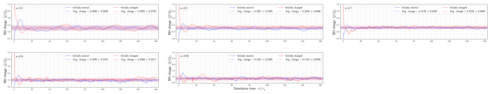
图注：Accumulated charge of the BH, normalized to the Wald value, as a function of simulation time $ct/r_{g}$, for spins $a = 0.2$, $0.5$, $0.7$, $0.9$ and $0.95$ (top to bottom). Blue curves start from an uncharged BH ($Q_{0} = 0$); red curves start from the Wald charge ($Q_{0} = Q_{\rm W}$). Dotted horizontal lines are the time averages over the saturated phase, with the corresponding values and standard deviations quoted in the legends and in Table~\(\ref{tab:results}.\) Although the two branches begin at opposite extremes and follow entirely different early histories, they converge within a few tens of $t_{g}$ onto the same plateau value at every spin.
对应解读：对应“建议重点查看的图表”第1项和“关键图表逐图导读”图2：\(Q(t)\) 或 \(\xi(t)\) 时间演化，以及模型诊断中平台稳定性和双初始分支收敛。
入选理由：这是检验本文核心结论“平衡电荷是动力学吸引子”的最直接证据。图中同时给出从 \(Q_{0}=0\) 出发的蓝色分支和从 \(Q_{0}=Q_{\rm W}\) 出发的红色分支，并按不同自旋展示二者在几十个 \(t_g\) 内收敛到同一平台，且标出饱和阶段均值和标准差，最适合支撑日报关于时间平台、初始条件无记忆和平台噪声的解读。
来源与置信度：\(arxiv_source\)；high；\(arxiv_source\) / \(main_shortened.tex\):figure[4]
Fig05
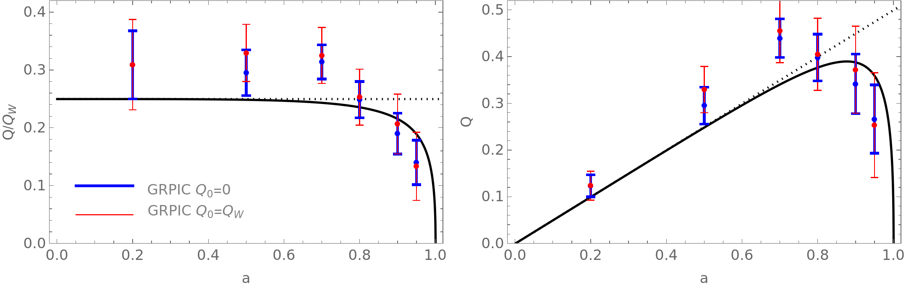
图注：Equilibrium charge of a black hole immersed in an external uniform magnetic field as a function of spin $a$, from our GRPIC simulations and compared with the analytic prediction. The left panel gives the charge normalized to the Wald value, $\xi = Q/Q_{\rm W} = Q/(2aMB)$, the right panel the charge itself in units of $M^{2}B$. Blue markers denote runs started from an uncharged hole, $Q_{0} = 0$, red markers runs started from the Wald charge, $Q_{0} = Q_{\rm W}$; error bars indicate the spread of the charge over the saturated phase. That the two sets agree within their uncertainties at every spin shows that the final state is a genuine attractor, reached irrespective of the initial charge. The solid black curve is the analytic equilibrium charge of Sec.~\(\ref{subsec:equilibrium},\) obtained by requiring that the separatrix $\vec{E}\cdot\vec{B} = 0$ bisect the {magnetic} flux threading one hemisphere of the horizon, Eq.~(\ref{eq:balance}), so that the polar and equatorial sectors deliver equal and opposite amounts of charge per unit time. In the slow-rotation limit this criterion places the separatrix at $\theta_{\rm s} = 45^{\circ}$ and gives $Q = Q_{\rm W}/4$, shown as the dotted line; the solid curve departs from it above $a \simeq 0.6$ and falls to zero as $a \to M$, where the expulsion of magnetic flux from the horizon (Meissner effect) suppresses the charging mechanism altogether. The simulations reproduce this behaviour, including the decline towards extremality, although the measured charges lie systematically somewhat above the analytic curve at intermediate spins.
对应解读：对应“建议重点查看的图表”第2项、“关键图表逐图导读”图3，以及“模型—诊断—参数估计”中 \(\xi_{\rm eq}(a)\) 与解析磁通平衡模型的比较。
入选理由：这是论文从单次时间演化推广到自旋依赖规律的关键汇总图。左面板直接给出 \(\xi=Q/Q_{\rm W}\) 随自旋 \(a\) 的变化，右面板给出实际电荷尺度；蓝、红模拟点检验不同初始条件是否给出同一终态，误差条显示饱和期波动，黑色实线给出解析磁通平衡预测。它最能支撑“Wald 电荷只是上限而非一般平衡值”“低中自旋约为 0.3、高自旋趋近 0”的主要结论。
来源与置信度：\(arxiv_source\)；high；\(arxiv_source\) / \(main_shortened.tex\):figure[5]
Fig01
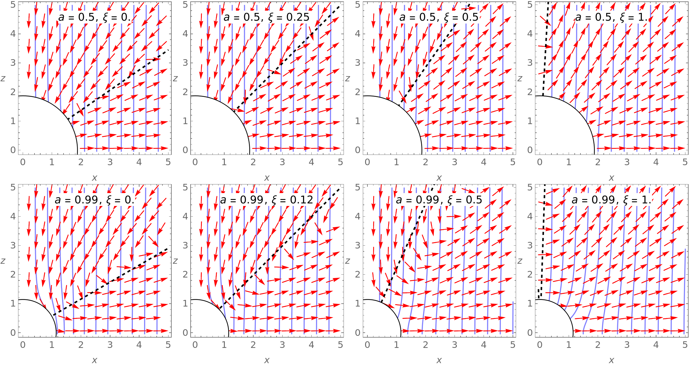
图注：Structure of the electric field close to the horizon of a Kerr BH in the Wald solution, illustrating the mechanism of selective accretion. Because the configuration is axisymmetric and there is reflection symmetry about the equatorial plane, only one meridional quadrant is shown, in coordinates $x = r\sin\theta$, $z = r\cos\theta$. Red arrows give the electric field, blue curves the magnetic field lines, and the solid black arc marks the outer horizon, $r_+$. The dashed curve is the separatrix $\vec{E}\cdot\vec{B} = 0$, Eq. (\ref{eq:separatrix}): above it, the electric field has a component antiparallel to $\vec{B}$ and drives positive charges along the field lines towards the BH. Below it, the component is parallel, and positive charges are expelled. The upper row shows a moderately rotating BH, $a = 0.5\,M$, and the lower row a near-extreme one, $a = 0.99\,M$. In each row, the induced electric charge increases from left to right, from $Q = 0$ to $Q = Q_{\rm W} = 2aMB$. As the BH charges up, the separatrix migrates from the equatorial region towards the rotation axis, progressively shrinking the polar zone in which positive charge is captured \(\cite{Rue-Ruf:2024:EPJC:},\) until at $Q = Q_{\rm W}$ it collapses onto the axis. In the near-extreme case, the migration is considerably faster, and the partial expulsion of the magnetic flux from the horizon (Meissner effect) is visible in the bending of the field lines.
对应解读：对应“建议重点查看的图表”第3项和“关键图表逐图导读”图4：视界附近 \(\vec E\cdot\vec B=0\) 分界、正负电荷选择性吸积和磁通分区机制。
入选理由：虽然它不是直接给出 \(\Phi_{+}\) 与 \(\Phi_{-}\) 曲线的定量图，但它清楚展示了视界附近电场、磁力线和 \(\vec E\cdot\vec B=0\) separatrix 如何随 \(Q/Q_{\rm W}\) 与自旋改变。日报中关于“磁通平衡解释”的核心物理图像，即不同磁通区域向黑洞输运相反电荷并在某个分界位置达到平衡，主要依赖这张图来直观说明。
来源与置信度：\(arxiv_source\)；high；\(arxiv_source\) / \(main_shortened.tex\):figure[1]
Fig03
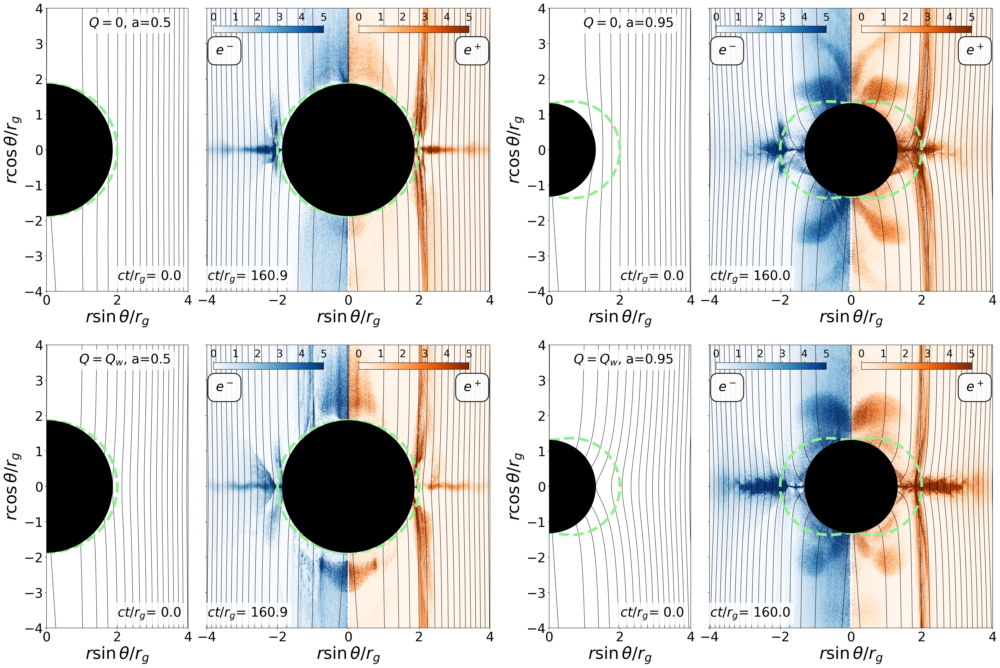
图注：Initial and final states of the magnetosphere. In each panel, the left half shows the initial magnetic field configuration, and the adjacent full panel shows the final field structure overlaid with the number density normalized to the Goldreich-Julian value, $n/n_{\rm GJ}$, separately for electrons ($e^{-}$, blue) and positrons ($e^{+}$, orange). The left column is $a = 0.5$ and the right column is $a = 0.95$. The top row starts from an uncharged BH ($Q_{0} = 0$), and the bottom row from a Wald-charged BH ($Q_{0} = Q_{\rm W}$). The green dashed line marks the ergosphere. In all cases, the vacuum solution is replaced within a few $t_{g}$ by a pair-filled, current-carrying magnetosphere with an equatorial current sheet inside the ergosphere. The final configurations reached from the two initial charge states are structurally indistinguishable.
对应解读：对应“建议重点查看的图表”第4项和“关键图表逐图导读”图5：最终磁层中的粒子密度、磁力线结构、对产生填充以及不同初始电荷下最终状态比较。
入选理由：这张图展示初始与最终磁层结构，并分别给出电子和正电子密度相对于 Goldreich-Julian 密度的分布，可用于判断真空 Wald 场如何被对产生等离子体和电流片取代。它还直接比较 \(Q_{0}=0\) 与 \(Q_{0}=Q_{\rm W}\) 的最终构型，支持“最终磁层结构与初始电荷无关”的吸引子解释，是时间序列图之外的重要空间诊断。
来源与置信度：\(arxiv_source\)；high；\(arxiv_source\) / \(main_shortened.tex\):figure[3]
Fig02
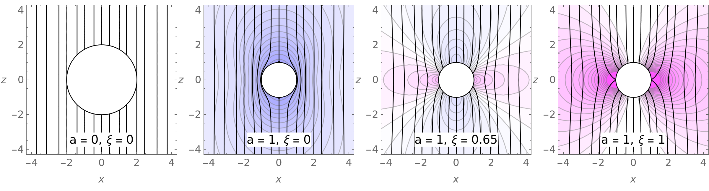
图注：Electrostatic potential and magnetic field lines (black curves) of the Wald solution, for selected values of the electric charge $Q$ and spin $a$. The color scale shows the electrostatic potential measured relative to a static observer at infinity, ranging from blue (negative) to magenta (positive). For $Q = a = 0$ (leftmost panel), no potential difference is induced. For $a=M$, the magnetic flux is completely expelled from the horizon at $Q=0$ (Meissner effect). Increasing $Q$ bends the magnetic field lines back towards the horizon and shifts the potential upwards. For $Q = Q_{\rm W}=2aMB$, the potential vanishes along the symmetry axis \(\cite{Wald:1974:PHYSR4:}.\) There is no choice of $Q$ that removes the potential drop along all field lines simultaneously \(\cite{Kom:2022:MNRAS:}.\)
对应解读：对应“关键图表逐图导读”图1及图5中关于初始 Wald 解、电势差、磁力线和高自旋 Meissner 效应的背景说明。
入选理由：这张图主要提供 Wald 解中电势和磁力线随 \(Q\) 与 \(a\) 变化的背景，能帮助理解为什么 \(Q=Q_{\rm W}\) 并不能消除所有磁力线上的电势差，以及高自旋下磁通排斥如何影响充电机制。它不如 Fig04 和 Fig05 直接支撑核心数值结论，但对解释低于 Wald 值的物理背景有辅助价值。
来源与置信度：\(arxiv_source\)；high；\(arxiv_source\) / \(main_shortened.tex\):figure[2]
强相关工作
这篇工作直接连接到 Wald 的旋转黑洞外部磁场真空解和 Blandford-Znajek 能量抽取理论。Wald 解提供 \(Q_{\rm W}\) 这个经典标尺，Blandford-Znajek 理论则关心视界磁通和角速度如何产生喷流功率。本文的贡献是在这两者之间插入动理学磁层：黑洞可带电，但平衡电荷由粒子输运和对产生决定，而不是简单等于真空解的特征值。检索关键词可用 “Wald charge rotating black hole uniform magnetic field”、“black hole magnetosphere particle-in-cell pair creation”、“Blandford-Znajek kinetic simulations”。
相近工作包括广义相对论粒子模拟研究黑洞极区间隙、磁层电荷饥饿和对产生雪崩，也包括广义相对论磁流体模拟研究磁通积累与喷流功率。可能存在的张力来自不同近似层级：力自由或磁流体模型通常不显式追踪黑洞净电荷的动理学形成；真空解析模型给出清晰但理想化的 \(Q_{\rm W}\)；粒子模拟则受限于维度、动态范围和对产生处方。读者可检索 “GRPIC Kerr magnetosphere”、“black hole gap pair cascade”、“charge separation Kerr black hole”、“Wald solution plasma magnetosphere”。
同一事件 / 同类源线索：
相似工作：
基础理论 / 方法工作：
- https://ui.adsabs.harvard.edu/abs/1974PhRvD..10.1680W/abstract
- https://ui.adsabs.harvard.edu/abs/1977MNRAS.179..433B/abstract
相反观点 / 张力线索：
（未提供）
6. On the dynamical accessibility of twin stars
- 来源：arXiv / astro-ph.HE
- 链接：https://arxiv.org/abs/2609.16126v1
- 作者：Mahdi Naseri, Vasileios Paschalidis
- 评分：novelty 8/10，importance 8/10，relevance 8/10，final 9.00/10
- 推荐理由：astro-ph.HE 致密星主题；用 GR 流体模拟检验 twin star 是否可由现实动力学通道形成，结论指出热压和冷却时标会阻止进入冷 twin-star 分支，对相变 EoS 与中子星形成/并合余留物解释有实际约束价值。
中文题目：孪生星的动力学可达性：更深的引力束缚不等于一定能形成
做了什么：这篇文章研究一个看似简单但很关键的问题：如果强一阶强子到夸克相变允许存在“第三族”紧致星，那么与普通中子星具有相同引力质量的混合强子-夸克“孪生星”是否真的能在动力学演化中形成？作者先比较固定重子静质量下不同冷平衡构型的引力束缚能，再用广义相对论流体力学模拟若干保持总静质量的转变通道。结论是：冷的孪生星分支在能量上可以更有利，但压缩和激波产生的热压会把系统挡在普通中子星残骸附近；只有冷却快到接近或短于恒星动力学时标时，系统才容易落到孪生星分支。由于真实中微子冷却通常远慢于毫秒级动力学时标，这意味着许多守恒重子质量的形成通道中，即使冷平衡图上有孪生星，实际动力学也可能偏向形成热的中子星残骸。
为什么重要：第三族和孪生星常被当作强一阶夸克退禁闭相变的观测标志，但许多讨论停留在冷静态质量-半径曲线：只要状态方程给出稳定混合星分支，就默认天体能到达那里。本文把问题推进到动力学层面，指出“存在性”和“可达性”不是一回事。它直接影响我们如何解释双中子星并合、吸积诱发塌缩、旋转降速或质量重排事件中可能出现的相变信号。
理论 / 观测 / 仪器方法价值：理论价值在于把固定重子静质量下的束缚能排序与真实流体演化分开，说明能量极小态不一定是短时动力学终态。方法价值在于使用广义相对论流体模拟检验不同转变通道，并显式加入参数化冷却时标，量化热压对跨越分支的阻碍。观测价值在于提醒读者：质量-半径曲线、潮汐形变或后并合频率中寻找第三族信号时，必须同时考虑形成路径和热演化，而不能只看冷状态方程是否允许孪生解。
为什么应该关注：如果你关心致密物质相图、夸克物质、引力波后并合信号或中子星质量半径约束，这篇文章值得看，因为它挑战了一个常见默认假设：冷平衡中更束缚的混合星会自然成为演化终点。它告诉我们，孪生星即使在数学上存在，也可能因为毫秒级热支持而在真实天体中很难形成；这会改变第三族候选信号的发生率预期，也会影响未来把某个观测异常归因于强一阶相变时的论证强度。
展开详细解读：文章讲解、背景、理论、重点章节、图表与相关工作
文章详细讲解
科学问题：强一阶强子-夸克相变可以让紧致星质量-半径关系出现普通中子星分支之外的稳定“第三族”。如果第三族上存在与普通中子星具有相同引力质量但半径明显不同的构型，就称为孪生星。传统讨论往往集中在冷的、非旋转或准静态平衡序列上：给定一个状态方程，解 Tolman-Oppenheimer-Volkoff 方程，看是否出现不稳定段之后的再稳定分支。本文的问题更尖锐：这些冷平衡孪生星不仅要“存在”，还要能从合理的天体演化通道中“到达”。
作者怎么做：文章先在固定重子静质量下比较竞争平衡构型的引力质量和束缚能。固定重子静质量很重要，因为若考虑没有显著物质抛射或吸积的快速内禀转变，重子数近似守恒；此时引力质量越低，释放的能量越多，冷平衡意义上更受偏好。随后作者进行广义相对论流体力学模拟，考察几种可能把普通中子星推向相变区域的通道，并引入冷却项来控制热能移除速率。这个设计把“冷能量排序”和“热动力学演化”放在同一张图里比较。
关键结果：冷平衡分析显示，在相同重子静质量下，孪生星可以比普通中子星更强地引力束缚，也就是说从能量账本看，转变为冷孪生星似乎是有利的。但模拟表明，这个能量优势不足以决定最终态。相变或压缩过程会激发径向振荡、产生激波并加热物质，热压提供额外支撑，使残骸在相空间中停留在热的中子星构型附近，而不是自动坠入冷混合星分支。只有当参数化冷却时标接近或短于恒星动力学时标时，热支撑被快速拿掉，孪生星形成才变得可能。
局限和下一步：作者明确指出这个结论是在所用状态方程族和形成通道下得到的，尤其适用于夸克退禁闭密度在温度升至约 \(10\text{--}20\,\mathrm{MeV}\) 时变化不大的状态方程。真实中微子输运、磁场、旋转、三维非轴对称扰动、物质抛射、并合后的差分旋转以及有限温度相图都可能改变细节。下一步自然是把参数化冷却替换为更真实的中微子泄漏或辐射输运，并在双星并合、吸积和旋转降速等更具体通道中检验孪生星可达性。
关键结果是怎么做出来的
本文证据链的第一环是样本选择：作者不是随意比较两个质量相等的星，而是在给定状态方程下构建冷平衡序列，并在固定重子静质量 \(M_b\) 的条件下寻找普通中子星分支和第三族混合星分支上的竞争构型。固定 \(M_b\) 的选择对应总重子数近似守恒的快速演化情形；这排除了靠大量物质损失或外部吸积来改变分支的路径，使比较更直接。关键诊断量是同一 \(M_b\) 下的引力质量 \(M_g\) 和束缚能差，而不是只看同一 \(M_g\) 下的半径差。
第二环是能量排序。作者发现，对若干可产生第三族的模型，冷孪生星在相同 \(M_b\) 下可以具有更低的 \(M_g\)，即更大的束缚能。这说明从冷平衡终态的角度，普通中子星向孪生星转变有可释放的能量。若只停在这一步，很容易得出“系统会自发转到孪生星”的结论。本文的核心贡献正是证明这一步推理不充分，因为动力学中释放的能量并不会自动以辐射或无序运动形式离开系统。
第三环是广义相对论流体模拟。作者让初始普通中子星经由压缩或扰动进入可能触发相变的区域，跟踪密度、速度、热能和相结构随时间的演化。模拟显示，塌缩或压缩过程中产生的激波和振荡会把一部分可释放能量转化为热内能，热压提高了有效支撑。于是即使冷平衡图上存在更低 \(M_g\) 的孪生解，系统也可能在有限温度下绕过或停留在热中子星残骸，而不是收敛到冷第三族。
第四环是冷却时标实验。作者加入参数化冷却，系统地改变冷却时间 \(\tau_{\rm cool}\)，并把它与恒星动力学时间 \(\tau_{\rm dyn}\) 比较。结果表明，当 \(\tau_{\rm cool}\lesssim \tau_{\rm dyn}\) 时，热压能在振荡和重整过程中被快速移除，孪生星分支变得可达；当 \(\tau_{\rm cool}\gg \tau_{\rm dyn}\) 或没有冷却时，残骸通常保持为热支撑的中子星。这里的显著性不是天文事件统计意义上的 \(5\sigma\)，而是通过受控数值实验的模型比较体现：不同 \(\tau_{\rm cool}\) 下同一初始质量和状态方程给出不同终态。
主要系统误差来自有限温度状态方程处理、冷却参数化、数值分辨率、初始扰动构型和形成通道理想化。作者的稳健性重点应在于检查总重子质量守恒、约束违反、能量预算、中心密度和温度演化是否收敛，以及终态是否确实接近某条平衡分支而非仍处于长寿命振荡。支撑结论的图表应包括冷平衡质量-半径或 \(M_g\)-\(M_b\) 图、不同冷却时标下的中心密度时间序列、温度或热压分布、以及终态在平衡序列上的投影。
展开背景、理论、公式、模型、章节和图表导读
背景知识
研究对象是可能含有强子物质和退禁闭夸克物质的紧致星。普通中子星由核物质状态方程支配；如果在高密度处发生足够强的一阶相变，压力-能量密度关系会出现软化，随后若高密度夸克相足够硬，质量-半径曲线可能在不稳定段之后重新出现稳定分支。这一分支常被称为第三族，与白矮星和普通中子星分支相类比。
孪生星问题的历史核心是“同一引力质量，不同半径和内部组成”。如果观测到两个质量近似相同但半径差很大的紧致星，或同一源经历突变后质量变化小但半径、潮汐形变或振荡频率显著变化，就可能指向强一阶相变。然而仅靠静态质量-半径曲线很难把第三族与普通状态方程不确定性区分开，因为半径测量、距离、表面辐射模型和潮汐形变反演都有系统误差。
为什么现在值得重新看：一方面，NICER、XMM-Newton、Chandra 以及引力波探测正在给出越来越多中子星半径、质量和潮汐形变约束；另一方面，双中子星并合后的高温高密状态与冷孤立中子星不同，可能短暂进入相变区域。若第三族存在，后并合频谱、塌缩时间、喷流条件和电磁对应体都可能改变。因此“能否形成”已经不只是理论美学问题，而是关系到观测信号发生率和可解释性的核心问题。
该领域常见误区之一是把冷平衡解当成真实演化终点。冷的 TOV 序列给出的是热平衡、无旋或简化旋转条件下的可能终态，而不是任意初始条件的吸引子。另一个误区是把更大的束缚能等同于必然形成；实际流体演化中，能量可以进入热内能、振荡、冲击波、引力波或物质抛射，若不能及时移除，系统未必落入最低冷能态。还有一个误区是忽略有限温度相图：相变临界密度、潜热和混合相处理都可能随温度改变。
基础理论 / 方法脉络
基本物理图像从自引力流体平衡开始。紧致星内部由压力梯度抵抗强引力，冷平衡序列由状态方程和广义相对论结构方程决定。对给定中心密度，解出引力质量、半径和重子静质量；沿序列移动时，稳定性通常由质量对中心密度的变化和径向模频率判断。若强一阶相变造成明显软化，星体可能先失稳；若高密度相再次变硬，则可形成第三族稳定分支。
本文中特别重要的是区分引力质量 \(M_g\) 与重子静质量 \(M_b\)。\(M_b\) 近似代表组成星体的重子数总和乘以重子质量，在没有显著物质交换时守恒；\(M_g\) 是远处观察者测到的 ADM 质量，包含静质量、内能、引力束缚能等贡献。同一 \(M_b\) 下较小的 \(M_g\) 意味着更强束缚、更低冷平衡能量，但并不说明动力学演化一定能把差额全部辐射出去。
相变动力学中，热压是关键。压缩触发相变时，流体不是准静态地沿冷序列滑动，而会发生径向振荡、激波加热和熵产生。有限温度压力可以写成冷状态方程贡献加热贡献；热贡献会提高支撑，使中心密度降低或阻止核心进入足够高密的夸克相区域。因而本文关心的是带热演化的相空间轨迹，而不只是冷平衡曲线。
观测和统计方法上的对应物是：若未来寻找孪生星形成信号，需要把相变释放能量、冷却效率和动力学时间联系起来。恒星动力学时间大致由平均密度决定，为毫秒量级；真实中微子冷却通常为更长时间。本文用参数化冷却检验不同 \(\tau_{\rm cool}\) 的极限，相当于问：需要多强的能量移除机制，才能让系统在一次快速重排中到达冷第三族？
主要退化和系统误差包括状态方程参数与热处理的退化、相变密度与潜热的退化、冷却时标与数值耗散的退化，以及初始扰动幅度与终态选择的退化。一个看似没有形成孪生星的模拟，可能是因为热压真实阻碍，也可能是因为所选通道没有足够压缩；反过来，一个形成孪生星的模拟，也需要证明不是由非物理冷却或过强数值耗散驱动。
公式与推导
第一步是冷静态球对称星的结构方程。给定能量密度 \(\epsilon\)、压力 \(P\)、包围质量 \(m\) 和半径坐标 \(r\)，TOV 平衡满足
这里 \(G\) 是引力常数，\(c\) 是光速。给定中心压力并积分到 \(P=0\)，可得到半径 \(R\) 和引力质量 \(M_g=m(R)\)。
第二步是重子静质量。若重子数密度为 \(n_b\)，重子质量尺度为 \(m_b\)，则
括号因子来自弯曲时空中的本征体积。本文比较竞争构型时固定的是 \(M_b\)，因为快速无抛射通道中总重子数近似守恒。
第三步定义束缚能。常用冷平衡能量账本为
同一 \(M_b\) 下若孪生星的 \(M_g\) 更小，则 \(E_{\rm bind}\) 更大，冷平衡上更受偏好；但这只是终态能量差，不是动力学选择律。
第四步是相变稳定性的局部图像。若相变发生在压力 \(P_{\rm tr}\)，能量密度跳变为 \(\Delta\epsilon\)，强一阶相变可用近似判据描述为
这里 \(\epsilon_{\rm tr}\) 是相变前能量密度。该类 Seidov 型判据说明潜热足够大时，普通分支会在相变核心刚出现时失稳，为第三族创造条件。
第五步加入有限温度压力。模拟中可把压力理解为冷贡献和热贡献之和：
其中 \(\rho\) 是质量密度，\(T\) 是温度，\(Y_i\) 表示组分变量。若 \(P_{\rm th}\) 在压缩后较大，它会降低继续塌缩的趋势，使系统偏离冷孪生星吸引区。
第六步估计动力学时间。平均密度为 \(\bar{\rho}\) 的自引力体自由落体或径向振荡时标近似为
对典型中子星，\(\tau_{\rm dyn}\) 为毫秒量级。本文的关键结论是孪生星可达性要求冷却时间 \(\tau_{\rm cool}\) 与这个量级相当或更短。
第七步写出参数化冷却对热能的作用。若比内能热部分为 \(u_{\rm th}\)，可用
表示指数冷却。\(\tau_{\rm cool}\) 越小，激波产生的热支撑越快被移除；\(\tau_{\rm cool}\rightarrow \infty\) 对应近似无冷却演化。
第八步是能量差与可释放能量的比较。若初态和冷孪生终态具有相同 \(M_b\)，冷平衡可释放能量为
本文表明 \(\Delta E_{\rm cold}>0\) 并不保证形成孪生星，因为实际演化中一部分能量滞留为热能 \(E_{\rm th}\) 和振荡能 \(E_{\rm osc}\)。
第九步可把终态选择写成一个定性不等式：
更有利于落到冷孪生分支；若左侧热和振荡储能过大，系统会停在热支撑中子星附近。这个式子不是严格守恒定律，而是读者理解模拟结果的能量诊断。
模型拟合 / 应用方法
这类工作的“拟合”不是传统意义上对一组观测点做参数估计，而是对状态方程和演化模型进行受控比较。核心输入包括冷状态方程参数、相变压力或密度、能量密度跳变、高密度相声速或刚度，以及有限温度热压处理。输出量包括 \(M_g\)-\(R\) 曲线、\(M_g\)-\(M_b\) 关系、中心密度时间序列、温度分布、相组分体积分数和终态质量半径位置。
若把它写成统计问题，冷平衡部分相当于在状态方程参数 \(\theta_{\rm EOS}\) 下求解确定性模型 \(\mathcal{M}(\theta_{\rm EOS})\)，再检查是否满足最大质量、稳定性和第三族条件。动力学部分则对初始模型、扰动方式和冷却时标 \(\tau_{\rm cool}\) 做模型比较。判断“形成孪生星”通常不是靠单个瞬时中心密度，而要看系统在若干动力学时标后是否阻尼到第三族平衡附近，且总重子质量、角动量和数值约束满足可接受误差。
残差诊断在这里对应数值守恒误差和与平衡序列的偏离。读者应检查 \(M_b\) 是否守恒、ADM 质量变化是否与冷却和边界通量一致、Hamiltonian 约束是否随分辨率收敛、中心密度振荡是否只是暂态穿越混合相区域。若一个模型短暂出现夸克核心但随后回到普通中子星分支，它不应被简单计为成功形成孪生星。
参数退化很强。更大的潜热可以增强第三族特征，但也可能导致更剧烈失稳；更硬的夸克相可支撑稳定混合星，但有限温度压力又可能掩盖冷分支差异。冷却时标 \(\tau_{\rm cool}\) 与热压模型退化：同样的终态可能来自更快冷却，也可能来自较弱激波加热。初始压缩方式与分辨率也退化，因为数值耗散会影响激波热化和振荡阻尼。
实际应用时，本文给出的是一个筛选原则：任何声称某个天体通道会形成孪生星的模型，都应同时给出冷平衡能量差、形成过程的热预算和冷却机制。若 \(\tau_{\rm cool}\) 明显长于 \(\tau_{\rm dyn}\)，而模型仍假定系统快速落到冷第三族，就需要额外解释能量如何被移除，例如强中微子辐射、物质抛射、磁流体过程或其他非平衡机制。
重点章节 / 结果段落怎么读
数据/样本与状态方程部分：首先应看作者选择了哪些具有强一阶相变和第三族的状态方程，以及它们的冷质量-半径曲线、最大质量、相变密度和孪生区域。重点不是状态方程名字本身，而是相同 \(M_b\) 下普通分支与第三族是否同时存在。
冷平衡能量比较部分：这一节是全文逻辑起点。读者应关注 \(M_g\)-\(M_b\) 图或等价表格，看孪生星是否确实比普通中子星更束缚，以及可释放能量 \(\Delta E_{\rm cold}\) 的量级。这里建立“能量上有利”的前提，后文则说明该前提不足。
数值方法与初始数据部分：应检查广义相对论流体方程、热压处理、相变实现、冷却源项、网格和边界条件。尤其要看总重子质量守恒和约束控制，因为本文讨论的是固定重子质量通道，若数值误差改变 \(M_b\)，结论会变得不干净。
动力学结果部分：这是最重要的结果段落。读者应按冷却时标分组比较中心密度、温度、热能和相组分随时间演化。关键问题是：无冷却或慢冷却模型为何停在中子星残骸，快冷却模型为何能到达孪生星分支。
讨论与局限部分：最后应看作者如何把参数化冷却与真实中微子冷却时标比较，以及他们对适用状态方程范围的限定。特别注意温度到 \(10\text{--}20\,\mathrm{MeV}\) 时相变密度不显著变化这一条件，因为若有限温度相图变化很大，结论可能需要重新检验。
建议重点查看的图表
-
冷质量-半径曲线：看普通中子星分支、不稳定段和第三族分支是否清楚分离；同一 \(M_g\) 下半径差是否足以称为孪生星。
-
\(M_g\)-\(M_b\) 或束缚能图：看固定 \(M_b\) 时孪生星是否有更低 \(M_g\)，以及 (
\(\Delta\) \(E_{\rm cold}\)) 的大小是否相对数值误差显著。 -
中心密度随时间图：比较无冷却、慢冷却和快冷却模型是否进入不同终态；注意短暂越过相变密度不等于形成稳定孪生星。
-
温度或热压随时间/半径分布：看激波加热是否发生在核心或外层，以及热压是否足以解释残骸未进入第三族。
-
相组分或夸克核心半径图：看夸克相是暂态出现、周期性出现，还是形成稳定核心。
-
冷却时标扫描表：看终态分类随 \(\tau_{\rm cool}/\tau_{\rm dyn}\) 的变化，特别是临界范围是否窄、是否依赖状态方程。
-
守恒和收敛诊断：看 \(M_b\)、能量预算、约束违反和分辨率变化，判断结论是否受数值耗散控制。
关键图表逐图导读
图 1：通常应是冷平衡质量-半径关系。横轴为半径 \(R\)，纵轴为引力质量 \(M_g\)。数据线或模型线应显示普通中子星分支、相变诱发的不稳定段以及第三族分支。读图陷阱是只看同一 \(M_g\) 下的半径差，而忽略形成过程中更相关的固定 \(M_b\) 条件。
图 2：应重点看 \(M_g\)-\(M_b\) 或束缚能比较。横轴可为重子静质量 \(M_b\)，纵轴为引力质量 \(M_g\) 或 \(E_{\rm bind}\)。若第三族曲线在相同 \(M_b\) 下位于更低 \(M_g\)，说明冷孪生星更束缚。读图陷阱是把这条能量排序直接理解为动力学必然性。
图 3：中心密度 \(\rho_c(t)\) 随时间的演化应是判断终态的核心图。横轴为时间，纵轴为中心密度或归一化中心密度，不同颜色代表不同冷却时标。快冷却模型若最终稳定在第三族对应密度附近，而慢冷却模型回到普通分支附近，就直接支撑本文结论。陷阱是把一次振荡峰值超过相变密度当作永久转变。
图 4：温度、熵或热压诊断图应显示压缩和激波把能量存入热自由度。横轴可能是半径或时间，纵轴为 \(T\)、\(P_{\rm th}\) 或热能占比。关键看无冷却或慢冷却模型中热支撑是否持续到多个 \(\tau_{\rm dyn}\)。陷阱是忽略温度对相变密度和状态方程的潜在影响。
图 5：终态投影图可把模拟终态叠加到冷平衡序列上。横轴和纵轴可为 \(R\)-\(M_g\)、\(M_b\)-\(M_g\) 或中心密度-质量。若快冷却终态靠近第三族，而慢冷却终态偏离冷第三族或靠近普通热残骸，说明可达性受冷却控制。读图时要看误差条或振荡包络，而不是单个时间切片。
图 6：若有冷却时标扫描或表格，应关注终态分类边界。横轴可能是 \(\tau_{\rm cool}/\tau_{\rm dyn}\)，纵轴为终态指标，如夸克核心质量、最终中心密度或分支标签。关键结论是形成孪生星需要 \(\tau_{\rm cool}\lesssim \tau_{\rm dyn}\)。陷阱是把参数化冷却的临界值直接等同于真实中微子输运结果。
论文原图 / 可嵌入图片
Fig04
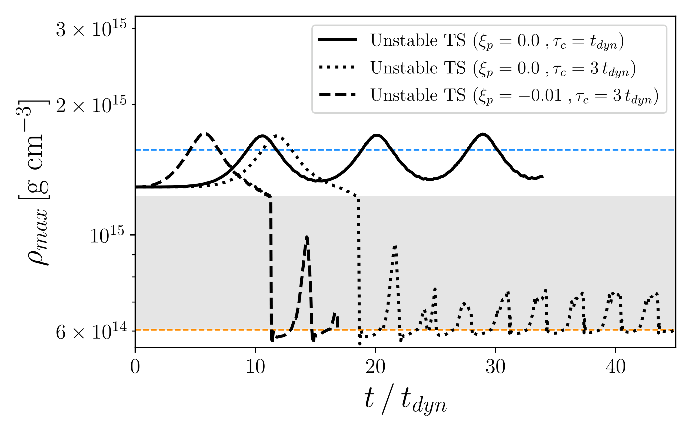
图注：The fate of unstable TSs with $M_0=1.44\,M_\odot$ having cooling activated in the evolution with different choices of cooling timescale and initial pressure perturbation. Orange and blue horizontal lines represent the maximum density of the corresponding stable NS and TS, respectively.
对应解读：对应“建议重点查看的图表”第3、6项，以及“关键图表逐图导读”中关于中心密度随时间和冷却时标控制终态的图3/图6解读。
入选理由：这张图直接比较了同一不稳定孪生星在不同冷却时标和初始压力扰动下的最大密度演化，并标出稳定普通中子星与稳定孪生星的参考密度，是判断快冷却能否进入第三族、慢冷却或无效冷却是否回到普通分支的核心证据。
来源与置信度：\(arxiv_source\)；high；\(arxiv_source\) / apssamp.tex:figure[4]
Fig07
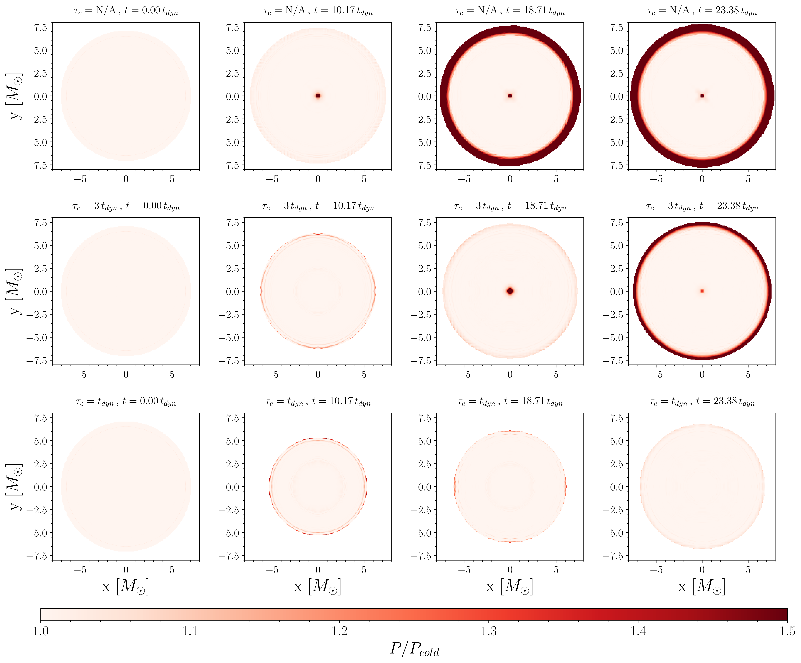
图注：Snapshots of $P/P_{\rm cold}$ on the equatorial plane for the unstable TS with $M_0=1.44\,M_\odot$. It includes the solid black curve in Fig.~\(\ref{UTS_44},\) i.e. no cooling (top plots), the dotted black curve in Fig.~\(\ref{UTStoHS_44},\) i.e. slow cooling $\tau_c=3t_{\rm dyn}$ (middle plots), and the solid black curve in Fig.~\(\ref{UTStoHS_44},\) i.e. rapid cooling $\tau_c=t_{\rm dyn}$ (bottom plots). All configurations are initially cold, $P/P_{\rm cold}=1$. Compression and shocks generate a thermal pressure component during the subsequent evolution, while the cooling prescription removes this component on the prescribed timescale. The snapshots illustrate the different amounts of thermal support retained (especially near the quark core) as the star evolves toward the NS or TS branch. The plot shows $P/P_{\rm cold}$ for rest-mass densities above $10^{-3}\rho_{max}$ where the bulk of the stellar rest mass lies.
对应解读：对应“建议重点查看的图表”第4项，以及“关键图表逐图导读”中关于温度/热压诊断和激波热支撑的图4解读。
入选理由：该图给出无冷却、慢冷却和快冷却情况下的二维热压比值P/P_cold快照，直接展示压缩和激波产生的热压如何在核心附近保留或被移除，是解释为什么冷平衡能量优势不必然导致孪生星形成的关键图。
来源与置信度：\(arxiv_source\)；high；\(arxiv_source\) / apssamp.tex:figure[7]
Fig01
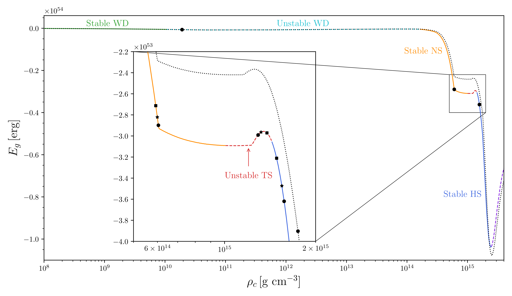
图注：Gravitational binding of TOV configurations for the adopted hybrid hadron-quark EOS for a range of central densities covering all compact stars. Solid segments of the plot represent stable configurations, while the dashed lines represent the unstable solutions. Different branches of the curve are labeled by the corresponding color. The second curve, shown by dotted line, displays ``EOS II'' in~\(\cite{Naseri:2024rby},\) which has no TS with $M_0=1.44\, M_\odot$. The points shown with a circle, asterisk, and square stand for stars with $M_0=1.44\, M_\odot$, $M_0=1.42\, M_\odot$, and $M_0=1.39\, M_\odot$, respectively.
对应解读：对应“建议重点查看的图表”第1、2项，以及“关键图表逐图导读”中冷平衡序列和固定重子质量束缚能比较的图1/图2解读。
入选理由：这张图展示所采用混合强子-夸克EOS下TOV构型的引力束缚、稳定与不稳定分支，并用不同标记给出固定重子质量的普通中子星、不稳定孪生星和稳定孪生星，是理解第三族存在性和固定M0能量排序的基础图。
来源与置信度：\(arxiv_source\)；high；\(arxiv_source\) / apssamp.tex:figure[1]
Fig09
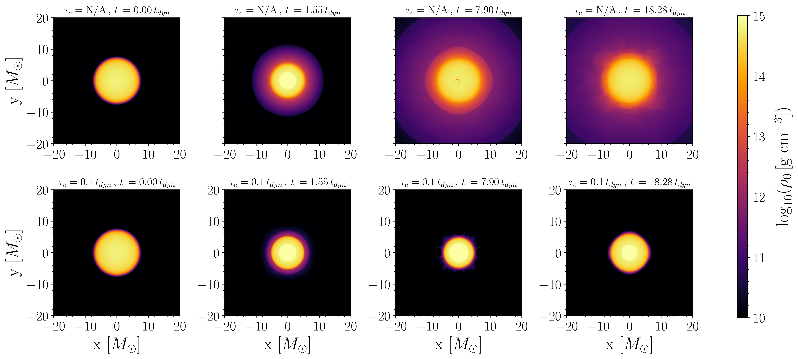
图注：Snapshots of the matter evolution of the two simulations reported in Fig.~\(\ref{Stable_NS_to_TS}\) representing a stable NS with a strong inwards velocity perturbation. The upper panels show the evolution without cooling. Although the stellar interior temporarily enters the quark matter phase (the bright region in the second plot), the generated thermal pressure drives the star back toward the NS branch. The final configuration differs from the initial cold NS because thermal energy remains in the fluid. The lower panels show the corresponding evolution with cooling, for which a quark core forms and the star settles near the stable TS configuration.
对应解读：对应“建议重点查看的图表”第5项，以及“关键图表逐图导读”中关于相组分或夸克核心是否暂态/稳定形成的解读。
入选理由：该图用物质演化快照展示强速度扰动下稳定中子星的两种命运：无冷却时虽短暂进入夸克相但被热压推回普通分支，有冷却时形成夸克核心并接近稳定孪生星，直观支撑“短暂越过相变密度不等于形成孪生星”的判断。
来源与置信度：\(arxiv_source\)；high；\(arxiv_source\) / apssamp.tex:figure[9]
Fig08
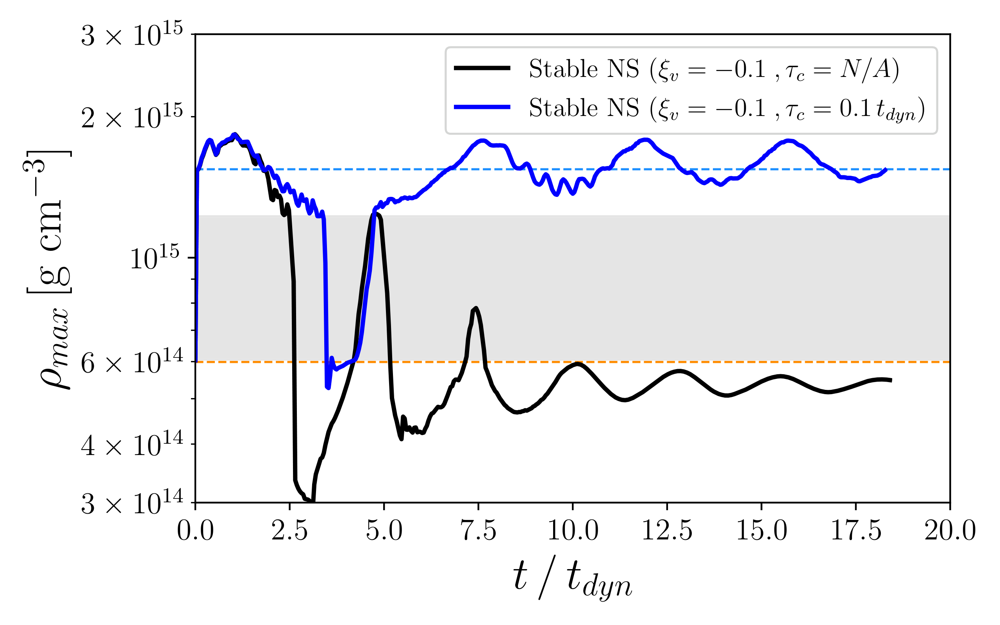
图注：Evolution of the maximum density of a stable NS with $M_0=1.44\,M_\odot$ and a strong initial velocity perturbation without cooling (solid black) and with a rapid cooling prescription (solid blue). Similar to Fig.~\(\ref{UTS_44},\) the dashed lines represent the maximum density of the stable NS and stable TS with the same mass, and the shaded grey area shows the phase transition range of densities.
对应解读：对应“建议重点查看的图表”第3、5项，以及模型比较段落中从稳定中子星经扰动进入第三族的形成通道。
入选理由：这张最大密度时间序列比较稳定中子星受到强内向速度扰动后在无冷却和快速冷却下的演化，并标出普通中子星与孪生星参考密度，可与Fig09的相组分快照互相印证，说明冷却决定是否真正落到第三族附近。
来源与置信度：\(arxiv_source\)；high；\(arxiv_source\) / apssamp.tex:figure[8]
Fig02
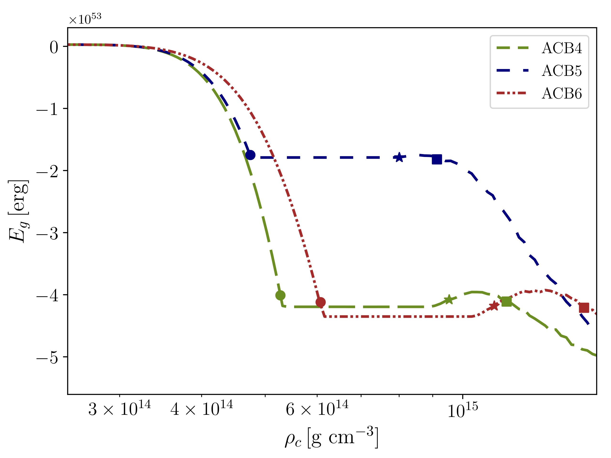
图注：Gravitational binding energy of a TOV sequence with various EOSs that exhibit a strong first-order hadron-to-quark phase transition. The EOSs shown on this plot are taken from Ref.~\(\cite{Paschalidis:2017qmb}\) using the same labeling. At crust densities, they are smoothly extended using the low-density pieces of ``EOS I'' from Ref.~\(\cite{Naseri:2024rby}.\) The curves are only shown for the density range of TSs. For each EOS, three cold configurations with a fixed rest mass are illustrated; they are a stable NS (circle), an unstable TS (asterisk), and a stable TS (square). For all the EOSs shown, the overall behavior of the plot is similar to Fig.~\(\ref{E_g},\) and the same $E_g$ ordering is obtained.
对应解读：对应“建议重点查看的图表”第2项，以及“模型拟合”中关于不同EOS下冷平衡能量排序是否稳健的讨论。
入选理由：该图把多个具有强一阶相变的EOS的束缚能关系放在一起，并在每条曲线上标出固定重子质量的稳定NS、不稳定TS和稳定TS，显示相同M0下稳定孪生星更束缚这一冷平衡结论并非只来自单一EOS示例。
来源与置信度：\(arxiv_source\)；high；\(arxiv_source\) / apssamp.tex:figure[2]
强相关工作
这篇文章属于“同类源/同类机制”而非某个具体天文事件研究：它讨论的是所有可能形成第三族混合星或孪生星的守恒重子质量通道。相关文献可分为三类。第一类是第三族和孪生星的基础理论，包括 Seidov 型稳定性判据、强一阶相变的常声速参数化、混合星质量-半径曲线和双解问题。检索关键词可用 “third family compact stars”, “twin stars”, “Seidov criterion”, “strong first-order phase transition neutron stars”, “constant speed of sound quark matter”。
第二类是并合和动态相变模拟，尤其是双中子星并合后是否出现相变、后并合频率是否突变、是否触发更快塌缩或产生特征引力波频谱。本文与这些工作之间的张力在于：许多动态信号研究强调相变可观测性，而本文提醒若目标是形成冷第三族终态，热压和冷却时标可能使其不可达。检索关键词可用 “binary neutron star merger phase transition”, “hybrid star merger”, “postmerger gravitational waves quark matter”, “dynamical formation twin stars”。
第三类是观测约束和反向推断，包括 NICER 半径、脉冲星最大质量、GW170817 潮汐形变、GW190425 以及未来 Einstein Telescope/Cosmic Explorer 对后并合信号的预测。与本文相关的常见相反观点是：只要观测到紧致星半径双峰或后并合频率异常即可直接宣布第三族。本文给出的反驳是，形成通道和热演化必须同时满足，否则冷平衡第三族可能只是相图上的可行解，而非高发生率天体族群。
同一事件 / 同类源线索：
相似工作：
基础理论 / 方法工作：
- https://journals.aps.org/pr/abstract/10.1103/PhysRev.55.374
- https://journals.aps.org/pr/abstract/10.1103/PhysRev.55.364
相反观点 / 张力线索：
（未提供）
7. A fast radio burst from a non-targeted low-frequency survey
- 来源：arXiv / astro-ph.HE
- 链接：https://arxiv.org/abs/2609.17275v1
- 作者：Cristian Di Pietrantonio, Marcin Sokolowski, Clancy W. James, N. D. Ramesh Bhat, Randall Wayth, Danny C. Price, Christopher Harris, Chia Min Tan
- 评分：novelty 9/10，importance 8/10，relevance 7/10，final 8.95/10
- 推荐理由：首次非定向低频（<300 MHz）FRB探测，结果对FRB低频发生率、散射/吸收模型和宽视场瞬变巡天方法有实质影响；虽非伽马射线主题，但属于astro-ph.HE瞬变方向且新颖性高。
中文题目：一次非定向低频巡天中的快速射电暴探测
做了什么：这篇文章报告了用默奇森宽场阵列在低于 \(300\,\mathrm{MHz}\) 的非定向、宽视场成像巡天中探测到一个快速射电暴。这不是盯着已知重复暴源做的验证性观测，而是在普通巡天数据里找到的低频事件。作者的核心论点是：低频快速射电暴并不一定极端稀少，过去的空结果很大程度可能来自低频色散延迟、散射展宽和搜索方法成本，而不是宇宙中真实缺少低频辐射。
为什么重要：低频快速射电暴长期是一个关键缺口：高于 \(400\,\mathrm{MHz}\) 已有大量样本，但低于 \(300\,\mathrm{MHz}\) 的确认探测此前几乎只来自已知源的定向观测。低频端最容易暴露传播效应、局部等离子体吸收和源环境散射，因此一次非定向探测直接改变了我们对低频快速射电暴可见性的判断。
理论 / 观测 / 仪器方法价值：对观测方法而言，这篇文章展示了宽场成像式搜索可以绕开传统低频波束形成搜索在长色散延迟和大试探参数空间上的计算瓶颈。对理论而言，事件率与高频结果相容这一点削弱了“普遍强散射或强吸收导致低频暴不可见”的简单解释，也为约束快速射电暴局部环境、低频谱行为和星际/星系际传播模型提供了新入口。
为什么应该关注：如果你关心快速射电暴的辐射机制，这个结果说明至少一部分源能把相干射电辐射延伸到米波段；如果你关心巡天设计，它说明低频宽场阵列并不是只能给出上限，而可能形成有统计意义的独立样本；如果你关心传播物理，低频暴是检验色散、散射、自由-自由吸收和等离子透镜效应最敏感的实验台。
展开详细解读：文章讲解、背景、理论、重点章节、图表与相关工作
文章详细讲解
科学问题：快速射电暴在 \(400\,\mathrm{MHz}\) 以上已经形成大样本，但在 \(300\,\mathrm{MHz}\) 以下的确认事件极少。这个缺口有两种完全不同的解释：一种是天体本身或其局部环境真的抑制低频辐射，例如强自由-自由吸收、等离子体截止或散射展宽；另一种是观测选择效应太严重，传统搜索在低频面对几十秒量级的色散延迟、大量 \(\mathrm{DM}\) 试探和宽场成像校准问题时效率很低。本文要回答的是：在不预先瞄准已知重复暴源的情况下，低频巡天能否真正发现快速射电暴。\n\n作者怎么做：作者使用默奇森宽场阵列的宽视场、低频成像能力，在非定向巡天数据中搜索毫秒到秒级的色散瞬变信号。低频搜索的难点不只是信号变宽，还包括同一事件在频带上下端到达时间相差很长，若按传统动态谱逐 \(\mathrm{DM}\) 去色散会带来很大的计算负担。文章的策略重点在于利用宽场成像数据、时间-频率行为和候选体筛选来识别真正服从冷等离子体色散律的瞬变，而不是只依赖单波束高时间分辨率搜索。\n\n关键结果：文章报告了首个低于 \(300\,\mathrm{MHz}\) 的非定向快速射电暴探测。作者进一步从这次探测和巡天暴露量估算低频事件率，并认为其与较高频率巡天推断的快速射电暴率相容。这一点很重要：如果低频暴受到普遍强吸收或普遍强散射，非定向宽场巡天应继续主要给出很低的上限；而一次可信探测说明低频可见族群至少不是可以忽略的尾部。\n\n局限和下一步：单个事件不能独自给出完整的低频光度函数、谱指数分布或宿主环境统计，也很难区分源内在谱截止与传播选择效应。成像搜索还会受到电离层、主波束模型、射频干扰、时间平均和频率平均造成的灵敏度损失影响。下一步需要更大的同类巡天暴露量、与高频望远镜的同时观测、重复暴追踪和更透明的注入-恢复效率标定，才能把“可探测”推进到“可统计建模”。
关键结果是怎么做出来的
本文最重要的证据链从候选事件的样本定义开始：它来自非定向低频巡天，而不是围绕已知快速射电暴位置或活动窗口设计的定向观测。因此，作者要证明的不只是“某个已知源在低频又爆了一次”，而是普通低频宽场数据本身可以产生可信的快速射电暴发现。样本意义上，这次探测对应一个事件，但其解释依赖总观测时长、瞬时视场、有效灵敏度、候选筛选效率和可探测通量阈值共同决定的巡天暴露量。\n\n事件确认的关键是时间-频率结构是否符合冷等离子体色散关系。低频下色散延迟随频率的变化很陡，频带上下端可能相差数十秒，这既增加了搜索成本，也提供了强诊断：真正的天体色散信号应在合适的 \(\mathrm{DM}\) 下对齐并产生峰值信噪比，而射频干扰或图像伪影通常不会精确遵循 \(\nu^{-2}\) 延迟。读者应关注论文中动态谱、去色散后的光变曲线、候选体在不同 \(\mathrm{DM}\) 下的信噪比曲线，以及图像平面位置一致性。\n\n显著性与置信度的核心不是单个像素有多亮，而是试验因子校正后的假警报概率。低频宽场成像会产生大量时间片、频率通道、天区位置和 \(\mathrm{DM}\) 试探，因此作者需要说明候选信号在背景噪声分布中的位置、是否经过独立子带/时间段验证、是否排除了同时出现的大面积干扰或校准残差。若论文给出事件率，读者应检查它是否把有效视场、可用时间、遮蔽区域、灵敏度随天顶角变化和候选选择效率纳入了泊松置信区间。\n\n支撑结论的图表通常包括：候选事件的宽带动态图、图像域定位或信噪比分布、去色散信噪比随 \(\mathrm{DM}\) 的曲线、注入-恢复或灵敏度曲线、以及由一次探测得到的天空事件率区间。最需要警惕的是单事件率估计的宽置信区间：一次探测的泊松误差很大，因此“与高频率相容”不等于“低频和高频完全同一族群、同一谱指数”。它更合理的含义是：当前数据不支持低频率被压低到先前某些强吸收/强散射模型要求的程度。\n\n系统误差方面，主波束模型会影响通量和事件率；散射展宽会影响峰值通量阈值；时间频率分辨率会造成去色散残差；射频干扰环境会改变有效观测时间；电离层折射和成像校准会影响位置与显著性。稳健性检验应包括负 \(\mathrm{DM}\) 或非物理 \(\mathrm{DM}\) 对照、邻近时间段背景、不同子带独立成像、候选体在多个成像参数下的重复出现，以及向数据中注入模拟色散暴来验证恢复效率。
展开背景、理论、公式、模型、章节和图表导读
背景知识
快速射电暴是毫秒量级、亮温极高的相干射电瞬变，通常具有超过银河系贡献的色散量，因此被认为主要来自宇宙学距离或至少银河系外距离。过去十多年，帕克斯、ASKAP、CHIME、DSA 和其他设施在几百兆赫到数吉赫范围内发现了大量事件，重复暴和一次性暴都已形成统计样本。相比之下，米波低频端的确认样本极少，造成了一个明显的谱覆盖缺口。\n\n低频端之所以关键，是因为传播效应对频率非常敏感。冷等离子体色散延迟近似随 \(\nu^{-2}\) 增大，多径散射的脉冲展宽常近似随 \(\nu^{-4}\) 或更陡变化，自由-自由吸收也在低频更强。如果快速射电暴源被致密电离气体包围，或者辐射区域附近有强等离子体屏幕，低频辐射应最先被抹掉或吸收。因此低频探测不是简单“换一个波段找暴”，而是直接测量源环境透明度和传播路径湍流。\n\n历史上，低频快速射电暴搜索多以空结果为主。LOFAR 对已知重复源 \(\mathrm{FRB}\,20180916\mathrm{B}\) 的定向观测曾给出低于 \(300\,\mathrm{MHz}\) 的确认探测，说明至少个别源可以在低频发射。但定向观测存在先验选择：源已知会重复，位置已知，活动周期可能已知，搜索空间比盲巡天小得多。本文的非定向探测因此填补的是不同层面的空白：低频盲巡天是否能找到未知快速射电暴。\n\n现在值得重新看这个问题，是因为宽场低频阵列、成像管线和瞬变搜索算法都在成熟。像默奇森宽场阵列这样的设施拥有巨大的瞬时视场，单次指向覆盖天空面积远大于传统高频单碟波束。即便单个方向灵敏度不如大型单碟，宽视场可以在事件率研究上形成优势，特别适合寻找明亮、稀有、持续时间短但空间分布近似各向同性的瞬变。\n\n该领域常见误区有三类。第一，把低频空结果直接解释为源没有低频辐射，而忽略搜索效率和散射选择效应。第二，把一次低频探测解释为所有快速射电暴都有简单幂律谱延伸，这同样过度；快速射电暴谱结构常很窄且随爆发变化。第三，把成像搜索和波束形成搜索看成只是软件差异，实际上二者在视场、时间分辨率、计算负担、定位能力和系统误差结构上都不同。
基础理论 / 方法脉络
基本物理图像从冷等离子体传播开始。快速射电暴发出的宽带相干脉冲穿过电离介质时，不同频率的群速度不同，低频光子更晚到达。观测上把这种延迟参数化为色散量 \(\mathrm{DM}\)，它是电子数密度沿视线的积分。对于低频阵列，色散延迟不再只是毫秒或秒的校正项，而可能扩展到几十秒，从而决定搜索窗口、缓存长度和去色散策略。\n\n第二个关键效应是散射。若传播路径上存在小尺度电子密度起伏，脉冲会经过多条路径到达，形成指数尾或更复杂的脉冲展宽。散射时间 \(\tau_{\mathrm{sc}}\) 通常随频率快速上升，因此在 \(200\,\mathrm{MHz}\) 左右，一个在 \(1\,\mathrm{GHz}\) 看似毫秒宽的暴可能被展宽到秒级甚至更长。展宽不会守恒峰值信噪比；在固定总能量下，脉冲越宽，峰值越低，越难触发搜索。\n\n本文所依赖的观测思想是宽场成像瞬变搜索。传统高时间分辨率搜索常把数据整理成许多波束的动态谱，再逐 \(\mathrm{DM}\) 去色散；成像搜索则在时间-频率块上形成天空图像，寻找随时间出现、位置一致、频率延迟符合色散律的点源瞬变。它牺牲或折中一部分时间分辨率，但换来极大视场和较好的空间判别能力，尤其能帮助排除局地射频干扰和旁瓣伪影。\n\n关键观测量包括事件的最佳 \(\mathrm{DM}\)、峰值通量密度或流量 \(\mathcal{F}\)、有效宽度 \(W_{\mathrm{eff}}\)、信噪比 \(\mathrm{S/N}\)、天空位置、观测频段内的谱行为以及由巡天暴露量推出的事件率。由于低频阵列主波束宽且随频率和方向变化，通量标定与事件率估计强烈依赖波束模型。一次探测的统计解释还必须结合泊松小数统计，而不是只看最佳候选本身。\n\n常见退化关系包括：内禀脉冲宽度、散射展宽、采样时间和通道内色散展宽共同决定 \(W_{\mathrm{eff}}\)，很难从单事件中分离；低频谱变暗和散射变宽都会降低峰值信噪比，观测上容易混淆；主波束衰减和源内禀亮度退化，会影响流量估计；射频干扰剔除越严格，假警报越少但有效暴露量也越小。
公式与推导
第一步是冷等离子体中的群速度。若电磁波角频率为 \(\omega\)，等离子体频率为 \(\omega_{\mathrm{p}}\)，色散关系为：\(\n\n\)
\n这里 \(c\) 是光速，\(k\) 是波数，\(\omega_{\mathrm{p}}^{2}=n_{\mathrm{e}}e^{2}/(\epsilon_{0}m_{\mathrm{e}})\)。在 \(\omega\gg\omega_{\mathrm{p}}\) 的射电传播极限下，群速度略小于 \(c\)，造成低频延迟。\n\n第二步把沿线电子柱密度写成色散量：\(\n\n\)
\n其中 \(n_{\mathrm{e}}\) 是自由电子数密度，\(l\) 是视线路径，\(D\) 是源到观测者距离。观测到的频率 \(\nu\) 与到达时间延迟满足常用近似：\(\n\n\)
\n其中 \(K_{\mathrm{DM}}\simeq 4.149\,\mathrm{ms}\,\mathrm{GHz}^{2}\,\mathrm{pc}^{-1}\,\mathrm{cm}^{3}\)，\(\nu_{1}\) 和 \(\nu_{2}\) 以 \(\mathrm{GHz}\) 计。低频下 \(\nu^{-2}\) 项很大，这就是本文所说几十秒延迟的物理来源。\n\n第三步是有效脉宽。观测宽度不是内禀宽度，而是多个展宽项的合成：\(\n\n\)
\n这里 \(W_{\mathrm{int}}\) 是内禀宽度，\(t_{\mathrm{samp}}\) 是采样时间，\(t_{\mathrm{chan}}\) 是通道内残余色散展宽，\(\tau_{\mathrm{sc}}\) 是散射时间。低频搜索失败常常不是总能量不够，而是 \(W_{\mathrm{eff}}\) 增大使峰值被摊薄。\n\n第四步给出散射的频率标度。经验上常写为：\(\n\n\)
\n其中 \(\tau_{0}\) 是参考频率 \(\nu_{0}\) 处的散射时间，\(\alpha_{\mathrm{sc}}\) 在理想 Kolmogorov 情形附近可接近 \(4\) 到 \(4.4\)，实际快速射电暴可有很大离散。本文结果对那些要求普遍很大 \(\tau_{\mathrm{sc}}\) 的解释形成约束。\n\n第五步把通量和信噪比联系起来。对一个流量为 \(\mathcal{F}=S_{\nu}W_{\mathrm{eff}}\) 的脉冲，简化辐射计方程可写为：\(\n\n\)
\n其中 \(\mathrm{SEFD}\) 是系统等效流量密度，\(n_{\mathrm{pol}}\) 是偏振数，\(\Delta\nu\) 是有效带宽。这个式子说明，在相同流量下，散射或时间平均使 \(W_{\mathrm{eff}}\) 增大，会按 \(W_{\mathrm{eff}}^{-1/2}\) 降低信噪比。\n\n第六步是成像阵列的响应。若天空亮度为 \(I(l,m,\nu,t)\)，主波束为 \(A(l,m,\nu)\)，基线 \((u,v)\) 的可见度近似为：\(\n\n\)
\n这里 \((l,m)\) 是相对于相位中心的方向余弦。成像搜索通过反演 \(V\) 来寻找短时出现的点源，因此其系统误差直接受 \(A(l,m,\nu)\)、校准解和旁瓣结构影响。\n\n第七步是事件率估计。若巡天在流量阈值 \(\mathcal{F}_{\min}\) 以上的有效暴露量为 \(\mathcal{E}=\int \Omega_{\mathrm{eff}}(t)\,\mathrm{d}t\)，探测到 \(N\) 个事件，则最大似然率为：\(\n\n\)
\n其中 \(\Omega_{\mathrm{eff}}\) 是考虑灵敏度、遮蔽、可用时间和搜索效率后的有效视场。本文的 \(N=1\) 意味着误差由泊松小数统计主导。\n\n第八步用泊松似然表示置信区间：\(\n\n\)
\n通过对 \(R\) 积分或使用似然比，可以给出事件率区间。读者应据此理解“与高频率相容”：它是把低频 \(R\) 的宽置信区间与高频巡天外推比较，而不是从单事件精确测出低频宇宙事件率。
模型拟合 / 应用方法
这类工作的拟合首先发生在单事件层面：搜索一组试探 \(\mathrm{DM}\)、到达时间、脉冲宽度和位置，使去色散后的信噪比最大。对低频事件来说，最佳 \(\mathrm{DM}\) 不只是一个参数，还决定动态图中频率-时间轨迹是否和 \(\nu^{-2}\) 冷等离子体规律一致。拟合残差应检查是否存在系统性偏离，例如某些子带提前或滞后、某些频段缺失、或者峰值只由少数污染通道贡献。\n\n第二层拟合是通量和宽度估计。观测到的脉冲轮廓可能是内禀形状、散射尾、时间平均和频率平均的卷积。若只用简单高斯或方顶模板，得到的 \(W_{\mathrm{eff}}\) 和峰值通量会依赖模板选择；若用指数散射尾模型，则 \(W_{\mathrm{int}}\) 与 \(\tau_{\mathrm{sc}}\) 之间会退化。成像数据的时间分辨率如果不够高，还会把毫秒暴表现成一个或几个时间积分块里的增亮。\n\n第三层是巡天率建模。一次探测下，事件率后验对先验、有效暴露量和流量阈值定义敏感。严格做法需要把主波束方向响应、噪声随时间变化、被射频干扰剔除的时间频率单元、候选筛选效率和注入-恢复概率都折算进 \(\mathcal{E}\)。若把标称视场和总时长直接相乘，通常会高估暴露量、低估事件率不确定度。\n\n系统误差的主要来源包括低频主波束模型、电离层相位扰动、绝对流量标定、旁瓣源残差、射频干扰残留和去色散步长。主波束误差会同时影响候选通量和可探测体积；散射假设会改变流量阈值；\(\mathrm{DM}\) 网格过粗会降低峰值信噪比；候选选择中过度依赖人眼检查会引入不可量化选择函数。读者应特别关注作者是否用模拟信号注入来量化这些损失。\n\n模型可能失败的地方也很清楚：如果候选信号是复杂射频干扰偶然模拟了色散轨迹，事件性质会被误判；如果低频谱有强烈窄带结构，简单幂律谱外推会失效；如果事件位于主波束边缘，通量和率的误差会显著增大；如果散射尾长于搜索窗口，部分能量会被背景估计吸收。实际应用上，这篇文章的价值在于给后续低频巡天提供了一套从候选确认到率估计的可检验框架。
重点章节 / 结果段落怎么读
数据/样本部分应优先阅读。重点看默奇森宽场阵列的观测频段、时间分辨率、频率分辨率、总可用观测时间、瞬时视场以及哪些数据被排除。因为本文的结论涉及“非定向巡天”，所以样本选择是否真的不依赖已知快速射电暴源非常关键。\n\n搜索方法部分是第二个重点。读者应检查作者如何处理低频长色散延迟，如何构造成像数据立方，如何在 \(\mathrm{DM}\)、时间、位置和脉宽空间中筛选候选体，以及如何剔除射频干扰和成像伪影。这里决定了候选的真实性和搜索效率。\n\n候选事件结果部分应细读。需要看动态谱是否符合 \(\nu^{-2}\) 色散律，去色散光变曲线的峰值是否显著，位置是否在不同子带/时间片一致，通量和宽度如何估计，以及是否有高频或其他设施的对应观测。\n\n事件率和比较部分决定论文的物理含义。作者把一次探测转换为低频快速射电暴率，并与高频巡天率或模型预言比较。读者应检查置信区间、流量阈值、谱假设和暴露量定义，而不要只读“相容”这个结论。\n\n讨论和稳健性检验部分关系到理论解释。重点看作者如何排除强散射/强吸收模型、是否承认单事件统计限制、以及对未来 MWA、LOFAR、LWA、SKA-Low 等低频巡天提出哪些可执行改进。
建议重点查看的图表
- 候选事件动态谱：看频率-时间平面上的信号是否沿冷等离子体 \(\nu^{-2}\) 延迟轨迹排列，是否由宽频带共同贡献，而不是少数污染通道。\(\n\n2.\) 去色散光变曲线和 \(\mathrm{S/N}\)-\(\mathrm{DM}\) 曲线：看最佳 \(\mathrm{DM}\) 是否有清晰峰值，峰值宽度是否符合时间/频率分辨率和信噪比预期。\(\n\n3.\) 成像定位或信噪比天空图：看瞬变是否表现为点源，位置是否远离强源旁瓣或图像边缘，邻近时间片是否没有类似伪影。\(\n\n4.\) 通量、宽度和散射约束图表：看作者如何从观测轮廓估计 \(W_{\mathrm{eff}}\)、流量 \(\mathcal{F}\) 和可能的 \(\tau_{\mathrm{sc}}\)，以及这些量对时间分辨率的依赖。\(\n\n5.\) 注入-恢复或灵敏度曲线：看搜索效率如何随流量、宽度、\(\mathrm{DM}\) 和天空位置变化，这直接决定事件率。\(\n\n6.\) 事件率比较图：看低频率的泊松置信区间与 CHIME、ASKAP 或其他高频巡天外推是否重叠，注意横轴流量阈值和频率换算假设。\(\n\n7.\) 系统误差表：看主波束、流量标定、射频干扰剔除、散射假设和候选阈值分别给事件率带来多大变化。
关键图表逐图导读
图 1：通常应是候选事件的频率-时间动态图或瀑布图。横轴多半是到达时间，纵轴是观测频率，颜色表示强度或信噪比。读图时要看信号是否从高频先到、低频后到，并且弯曲轨迹是否与 \(\nu^{-2}\) 延迟一致。陷阱是射频干扰也可能在局部时间频率块中变亮，所以必须看全频带相干性和去色散后的集中程度。\n\n图 2：应关注去色散后的光变曲线以及 \(\mathrm{S/N}\) 随 \(\mathrm{DM}\) 的变化。横轴可能是相对时间或试探 \(\mathrm{DM}\)，纵轴是强度或信噪比。真正的色散暴应在某一正 \(\mathrm{DM}\) 附近有明显最大值，而在负 \(\mathrm{DM}\) 或偏离很大的 \(\mathrm{DM}\) 下显著下降。读图陷阱是 \(\mathrm{DM}\) 峰可能被宽时间积分抹宽，不能把峰宽简单解释成物理 \(\mathrm{DM}\) 不确定度。\n\n图 3：成像域诊断图应显示候选出现时的天空图、差分图或信噪比图。坐标轴是天球坐标或相对于相位中心的方向，模型线可能包括主波束轮廓或定位误差椭圆。关键是候选是否是孤立点源，以及是否出现在主波束响应可信区域。陷阱是低频强源旁瓣和电离层相位误差会制造瞬时假源。\n\n图 4：若论文给出脉冲轮廓、宽度或散射拟合，应看数据点与模板线的残差。横轴为时间，纵轴为通量密度或归一化强度，模型可能包括高斯内禀脉冲与指数散射尾的卷积。主要结论是事件是否被显著散射展宽，以及 \(W_{\mathrm{eff}}\) 对流量估计有多大影响。陷阱是成像时间分辨率不足时，散射尾和时间平均很难分开。\n\n图 5：灵敏度或注入-恢复图应展示恢复概率随流量、宽度、\(\mathrm{DM}\) 或天空位置的变化。读者要看 \(50\%\) 或 \(90\%\) 恢复阈值在哪里，以及候选事件相对于这些阈值的位置。陷阱是如果只给理想辐射计灵敏度而不给真实注入-恢复效率，事件率误差可能被低估。\n\n图 6：事件率比较图通常以流量阈值或等效能量为横轴，以全天事件率为纵轴，并叠加不同巡天或模型区域。本文的关键读法是低频一次探测给出的宽置信区间是否仍与高频快速射电暴率相容。陷阱是不同频率之间的换算依赖谱指数、带宽定义和宽度选择函数，不能把不同巡天点直接当作同一物理量比较。
论文原图 / 可嵌入图片
Fig04
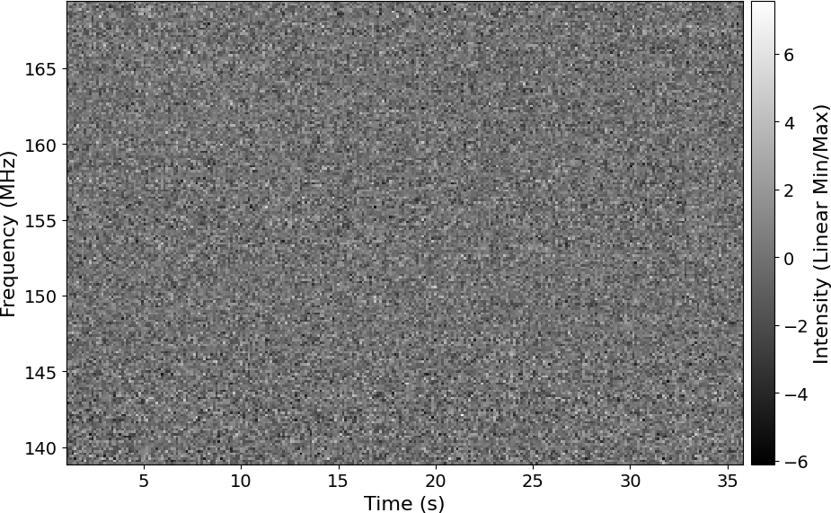
图注：\(\textbf{Dispersive sweep of \frbname{}}.\) Depicted in the figure is the dynamic spectrum before dedispersion in the 128\,ms time resolution that maximises the S/N of the dedispersed pulse. A weak, dispersed FRB pulse spans the entire band, closely following the expected $\nu^{-2}$ dispersion sweep. In our best-fit model of the $\nu^{-\gamma}$ dependence we find $\gamma=2.005^{0.010}_{-0.002}$ at the 68\% confidence level, which is consistent with the $\nu^{-2}$ dispersive delay expected from propagation through cold ionized plasma.
对应解读：对应“建议重点查看的图表”第1项候选事件动态谱，以及“关键图表逐图导读”中关于图1/低频色散轨迹和模型拟合第一层的讨论。
入选理由：这是候选事件真实性的核心诊断图，直接显示未去色散动态谱中信号跨越整个频带并沿冷等离子体色散轨迹排列；图注还给出对延迟律的拟合指数 gamma=2.005，带68%置信区间，正好支撑日报强调的 \(nu^{-2}\) 检验、宽频带共同贡献和排除局部RFI伪迹。
来源与置信度：\(arxiv_source\)；high；\(arxiv_source\) / main.tex:figure[4]
Fig06
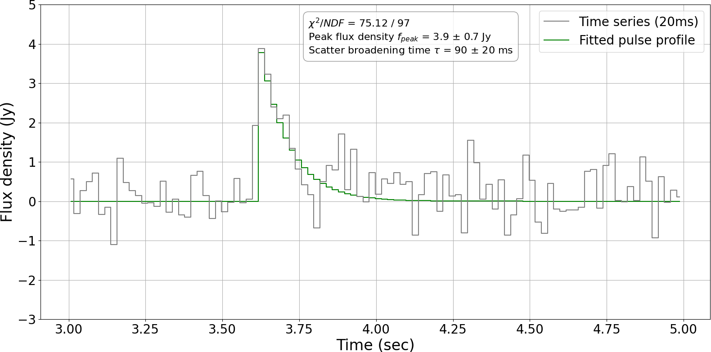
图注：\(\textbf{Scatter broadening profile of \frbname{}.}\) Flux density as a function of time at a 20\,ms resolution (black curve), overlaid with a best-fit Gaussian convolved with an exponential tail (green curve). The scatter broadening time derived from this fit is $\tau =90\pm20$\,ms. The uncertainty reflects the time resolution used. Hence, the intrinsic pulse width is less than $20$\,ms. Error bars ($\approx$0.7\,Jy) are omitted for clarity. Fits to the 5\,ms and 10\,ms time series yield consistent results and are omitted for brevity.
对应解读：对应“建议重点查看的图表”第4项通量、宽度和散射约束图表，以及“关键图表逐图导读”中图4脉冲轮廓、宽度或散射拟合的讨论。
入选理由：该图给出去色散后的时间轮廓、20 ms分辨率数据和高斯卷积指数散射尾的最佳拟合，直接得到 tau=90±20 ms 和内禀宽度小于20 ms，是判断低频FRB是否被显著散射展宽、以及宽度如何影响流量估计的关键证据。
来源与置信度：\(arxiv_source\)；high；\(arxiv_source\) / main.tex:figure[6]
Fig03
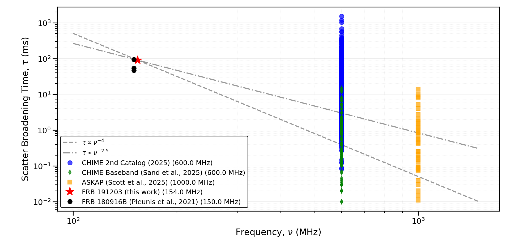
图注：\textbf{Scatter broadening time ($\tau$) of FRBs as a function of frequency.} The red star data point is the $\tau$ of \(\frbname{}\) measured in this work at \(\centralfreq\) \,MHz. For reference, black data points are scatter broadening times of 3 bursts from FRB 190816B detected by LOFAR at 150\,MHz \(\citep{Pleunis2021},\) blue points are 1193 CHIME FRBs from the second catalogue \(\citep{Abbott2026},\) green points represent 137 CHIME FRBs in the baseband catalogue \(\citep{2025ApJ...979..160S},\) and yellow points are 35 ASKAP FRBs from high-time resolution measurements \(\citep{2025PASA...42..133S}.\) Upper limits are not included. The dashed and dashed-dotted lines corresponds to scatter broadening time of \(\frbname{}\) scaled to other frequencies with scattering index -4 and -2.5 respectively. For the scattering index -4 (dashed line), it was calculated that 49 out of 137 CHIME baseband FRBs, 5 out of 35 ASKAP FRBs, and 12 out of 1993 FRBs from the CHIME second catalogue are less scattered than \(\frbname{},\) placing our detection among the less scattered FRBs.
对应解读：对应“建议重点查看的图表”第4项散射约束，以及详细解读中关于低频非探测是否由强散射/吸收导致的物理解释。
入选理由：该图把本文FRB在低频测得的散射展宽时间与LOFAR、CHIME、ASKAP样本比较，并叠加不同散射频率指数的缩放线，可直接支撑论文结论：该低频事件属于相对低散射的FRB，从而挑战普遍强散射导致低频难探测的解释。
来源与置信度：\(arxiv_source\)；high；\(arxiv_source\) / main.tex:figure[3]
Fig05
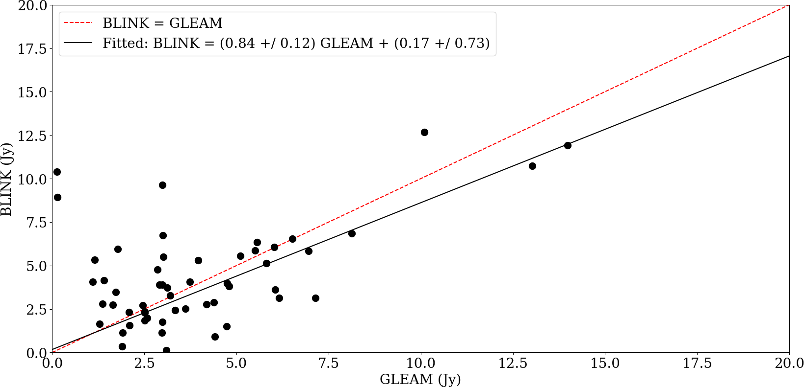
图注：\(\textbf{Flux density calibration.}\) The flux density in the calibrated BLINK dirty images, labelled as BLINK, is compared to the integrated flux density of GLEAM sources within a 13\,arcmin matching radius, labelled as GLEAM. The red dashed line is the one-to-one line (BLINK = GLEAM), and the black line is a fit to sources with an integrated GLEAM flux above 3\,Jy. The plot demonstrates that the flux densities measured in the BLINK dirty images, after the corrections described in the text, are correctly calibrated and match the GLEAM flux scale. The distribution of these differences yields a relative uncertainty of approximately 50\%, primarily driven by sidelobe and classical confusion noise in the dirty image. For comparison, flux densities derived from the CLEANed WSCLEAN image lead to a relative uncertainty of around 20\%. Error bars ($\pm$2\,Jy) are omitted for clarity.
对应解读：对应“建议重点查看的图表”第7项系统误差表/流量标定系统误差，以及模型拟合中关于主波束、绝对流量标定、旁瓣和混淆噪声对通量与事件率影响的讨论。
入选理由：虽然不是候选确认图，但它量化BLINK图像通量与GLEAM标度的一致性及约50%的相对不确定度，直接关系到本文流量、fluence和事件率阈值的可靠性；在缺少注入-恢复或事件率比较候选图时，这是最能支撑系统误差解读的图。
来源与置信度：\(arxiv_source\)；high；\(arxiv_source\) / main.tex:figure[5]
强相关工作
最直接的同类工作是 \(\mathrm{FRB}\,20180916\mathrm{B}\) 的低频定向探测，以及 CHIME 在 \(400\text{--}800\,\mathrm{MHz}\) 建立的大样本统计。前者证明个别已知重复源能在低于 \(300\,\mathrm{MHz}\) 发射，但不能代表盲巡天族群；后者提供高频端事件率和 \(\mathrm{DM}\)、流量、宽度分布的参照。建议检索关键词包括“FRB 20180916B LOFAR low frequency detection”、“CHIME FRB first catalog”、“low-frequency FRB scattering absorption”。\n\n基础理论方面，应把本文放在快速射电暴传播效应和低频选择函数的文献中读。与本文可能存在张力的观点包括：快速射电暴局部环境普遍致密并导致低频自由-自由吸收；低频散射普遍强到使毫秒暴不可探测；快速射电暴谱在几百兆赫以下普遍截止。本文并不能完全否定这些机制在某些源中存在，但它说明这些机制不应被简单推广到整个族群。建议检索关键词包括“FRB free-free absorption low frequency”、“FRB scattering frequency scaling”、“MWA fast radio burst survey”、“SKA-Low FRB forecast”。
同一事件 / 同类源线索：
- https://arxiv.org/abs/2609.17275
- https://arxiv.org/abs/0709.4301
- https://arxiv.org/abs/2106.04352
- https://arxiv.org/abs/1904.07947
相似工作：
基础理论 / 方法工作：
相反观点 / 张力线索：
（未提供）
8. Determination of the Angular Distributions of Dynamical and Emission Parameters of GRB Relativistic Outflows
- 来源：arXiv / astro-ph.HE
- 链接：https://arxiv.org/abs/2609.16335v1
- 作者：A. Panaitescu
- 评分：novelty 7/10，importance 7/10，relevance 9/10，final 8.70/10
- 推荐理由：GRB喷流角结构和磁场取向模型，结合Swift/XRT与光学光变曲线解释prompt、tail、plateau和afterglow多阶段行为；GRB属于高能天体物理重点，虽偏模型化且样本有限，但对GRB余辉/喷流结构研究有阅读价值。
中文题目：用“大角度辐射”模型反推伽马暴相对论外流的角向动力学与辐射结构
做了什么：这篇文章把作者此前发展的伽马暴“大角度辐射”模型继续推进，加入固定磁场取向对光变曲率的影响，并用它统一拟合从 prompt、X 射线尾迹、平台到平台后衰减的多阶段光变。作者选取 Swift/XRT 与光学覆盖较好的若干个长暴和特殊暴，尝试由光变的时间节点和曲率反推出喷流核心与包层的角向结构。核心结论是：核心区的关键组合量 \(\Gamma_c\theta_c\) 可能接近普适值 \(\sim 3\)，较窄核心对应较高洛伦兹因子；平坦平台要求包层近似满足 \(\Gamma(\theta)\propto \theta^{-2}\)；磁场取向主要通过改变各阶段光变曲率来留下观测痕迹。
为什么重要：伽马暴喷流是否是顶帽、结构化喷流还是多成分外流，直接影响我们如何从光变反推能量、视角、辐射效率和事件率。本文重要之处在于，它不是只把 prompt 和 afterglow 分开建模，而是试图用同一个角向结构和同一个“大角度辐射”几何效应解释 prompt、尾迹、平台、正常衰减四个阶段。如果这种框架成立，Swift 时代看似多样的 X 射线光变就可能对应较少的物理自由度。
理论 / 观测 / 仪器方法价值：对理论而言，本文给出了一套把光变时间尺度、衰减指数变化和磁场方向联系起来的解析模型，可用于检验结构化喷流和大角度辐射解释平台期的可行性。对观测而言，它提示仅靠某一波段的单段幂律斜率不够，真正有诊断力的是从 prompt 到 afterglow 的阶段转换、动态范围和曲率 \(\Delta\alpha\)。对方法而言，文章强调用角向分布 \(\Gamma(\theta)\)、辐射参数和磁场取向共同拟合，而不是把平台简单归因于能量注入。
为什么应该关注：如果你关心伽马暴平台期、结构化喷流、prompt-afterglow 连接或多波段光变建模，这篇文章值得读，因为它把一个常被当作“余辉附加项”的平台问题重新表述为喷流角向结构问题。即使你不同意 LAE 模型，文中关于 \(\Gamma_c\theta_c\)、\(\Gamma(\theta)\propto \theta^{-2}\) 和磁场方向对曲率的影响，也提供了可被后续 Swift、SVOM、Einstein Probe 和多信使样本检验的具体预言。
展开详细解读：文章讲解、背景、理论、重点章节、图表与相关工作
文章详细讲解
科学问题：Swift 发现大量伽马暴的早期 X 射线余辉并不服从简单外激波模型的单调衰减，而是常见“陡降—平台—正常衰减”的复合结构。传统解释包括 prompt 高纬度辐射、中心引擎持续注入、能量分层外流、双成分喷流和微物理参数演化。本文关注的问题更具体：能否用同一个相对论外流的角向结构，让观测者在不同时间接收到来自不同角度的辐射，从而自然得到 prompt、Tail、Plateau 和 post-Plateau？进一步说，光变曲率是否还能告诉我们磁场相对于流体运动方向的取向。
作者怎么做：文章在此前“大角度辐射”解析框架上加入固定磁场方向。LAE 的核心思想是，观测时间不是只对应局部发射时间，也强烈受角向延迟和多普勒因子的控制；随着时间推移，观测者等效地看到离视线越来越大的喷流角区。作者把喷流分成近似均匀的 Core 和角向变化的 Envelope，用 \(\Gamma_c\)、\(\theta_c\)、包层洛伦兹因子指数、辐射效率和谱形等少数参数描述动力学与发射。样本选择集中在 Swift/XRT 的 \(0.3\,\mathrm{keV}\) 与 \(10\,\mathrm{keV}\) 光变以及光学光变覆盖较完整、四个阶段较清楚的事件；摘要中称“七个 GRB”，但列出的对象包括 GRB 060526、GRB 060614、GRB 060714、GRB 060729、GRB 061007、GRB 061121、GRB 100902 和 GRB 130427A，读者应在正文核对实际样本数和是否有对象命名简写。
关键结果：作者认为 Core 的唯一关键尺度组合 \(\Gamma_c\theta_c\) 主要由 Tail 与 Plateau 的时间动态范围决定，并可能围绕 \(\sim 3\) 聚集。这意味着若核心开角 \(\theta_c\) 较小，则核心洛伦兹因子 \(\Gamma_c\) 必须更大。平台越平坦，对 Envelope 的角向结构要求越强；典型情形接近 \(\Gamma(\theta)\propto \theta^{-2}\)。磁场方向则通过改变辐射角分布和多普勒加权来影响光变曲率，平行于流动方向的磁场会产生更弯曲的 prompt 与 afterglow 曲线，而垂直或各向同性磁场的曲率较小。对于 Core 产生的 prompt 曲率，作者认为垂直或各向同性磁场均可出现，但没有识别出平行磁场；对于 Envelope 的 afterglow 曲率，只有少数对象可判别磁场方向，其中可判别者偏向平行磁场。
局限和下一步：这篇文章的强项是解析透明性和跨阶段统一，但也带来限制。第一，样本很小，且要求四阶段光变都足够好，这会强烈选择亮、观测密集且结构清楚的暴。第二，LAE 模型中的角向动力学、辐射效率、谱演化、宿主消光和外激波贡献之间存在退化，尤其是光学与 X 射线不完全同谱时。第三，固定磁场取向是强假设，真实喷流中湍流场、冲击压缩场、磁重联区和局部偏振结构可能共存。下一步最关键的是用更大的、统一处理的多波段样本做层级贝叶斯拟合，并把偏振、红移、\(E_{\rm iso}\)、\(E_{\rm peak}\) 和晚期喷流断裂一起纳入检验。
关键结果是怎么做出来的
样本与数据链条：本文选取的是 Swift 时代光变形态较完整的伽马暴，要求至少能在 \(0.3\,\mathrm{keV}\) 与 \(10\,\mathrm{keV}\) XRT 光变中追踪 prompt 后尾迹、平台和平台后衰减，并尽可能有光学光变辅助。这样的选择不是完备样本，而是“诊断样本”：作者需要清楚的时间节点来约束 LAE 模型的角向尺度。读者应特别核对正文中最终纳入拟合的事件数，因为摘要中的“七个”与列名数量存在表面不一致。
核心证据来自时间动态范围，而不是单个瞬时斜率。LAE 模型把观测时间 \(t_{\rm obs}\) 与发射角 \(\theta\) 通过角向延迟和多普勒因子联系起来，因此 Tail 的开始、Tail 的结束、Plateau 的开始、Plateau 的结束等“milestones”可反推出 Core 与 Envelope 的分界。作者强调 \(\Gamma_c\theta_c\) 是 Core 的“one-and-only”关键组合量：若 \(\Gamma_c\theta_c\) 过小或过大，Tail 到 Plateau 的持续时间比例就不能匹配观测。这个结论应主要由各暴的多阶段光变拟合图和参数表支撑。
统计判别在本文中更接近物理模型拟合和形态匹配，而不是大样本显著性声明。读者需要看作者是否给出 \(\chi^2\)、残差、误差条、参数容许区间或多模型比较。如果文章主要展示解析模型曲线覆盖观测点，那么 \(\Gamma_c\theta_c\sim 3\) 应理解为该样本和该模型假设下的经验聚集，而不是已经经过无偏总体抽样证明的普适常数。类似地，\(\Gamma(\theta)\propto \theta^{-2}\) 是由平坦平台对包层角向洛伦兹因子梯度的需求导出的模型约束。
磁场方向的判别依赖光变曲率 \(\Delta\alpha\)，即一个阶段起始与结束时渐近幂律衰减指数之差。作者比较平行、垂直和各向同性磁场在 Core 与 Envelope 中产生的不同曲率。最重要的实证点是：Core 的 prompt 曲率不支持平行磁场，垂直与各向同性场更常见；Envelope 的 afterglow 曲率只有三个左右事件足以判别，而这些事件倾向平行场。这个结果很有趣，但统计上明显受小样本和模型退化限制。
稳健性方面，读者应关注三类系统误差。第一是 XRT 早期光变中 prompt 残余、谱演化和 pile-up 修正是否会改变 Tail 曲率。第二是光学数据的宿主消光、银河消光和可能的反向激波或超新星成分是否干扰平台解释。第三是红移、能段转换和谱指数选择会影响不同能段光变是否可被同一角向辐射结构解释。若正文或附录展示了改变谱指数、剔除早期点、分波段拟合和不同磁场取向的残差对比，这些就是判断结论可信度的关键。
展开背景、理论、公式、模型、章节和图表导读
背景知识
研究对象是伽马暴相对论喷流。典型长暴的 prompt 阶段持续数秒到数百秒，随后进入 X 射线、光学和射电余辉。早期标准图像把 prompt 归于内耗散或磁重联，把余辉归于外激波；但 Swift 发射后，XRT 发现大量早期余辉具有陡降、平台、耀发和晚期正常衰减，说明这种二分法过于粗糙。
历史上，高纬度辐射或曲率效应被用来解释 prompt 后的陡降：当中心引擎突然关闭，来自视线外较大角度的光子因路径更长、受到更小多普勒增亮而延迟到达，产生快速衰减。另一方面，平台期常被解释为中心引擎长期注入能量，例如磁星自转能损失，或外流具有能量分层，较慢壳层后来追上激波。本文属于另一条路线：平台也可能是观测者逐渐看到喷流包层不同角区的结果。
结构化喷流的概念并不新。短暴 GRB 170817A 与引力波事件 GW170817 的多波段余辉让角向结构成为主流议题；长暴领域中也长期讨论顶帽喷流、Gaussian jet、power-law jet 和双成分 jet。本文的 LAE 模型与这些讨论相通，但重点放在早期光变形态，尤其是 Tail 与 Plateau 的连续性，而不是只用晚期喷流断裂或孤立的能量估计来反推结构。
为什么现在值得重新看？一方面，Swift 已积累了大量早期 X 射线光变，若能统一建模，就可从已有档案中抽取喷流角结构信息。另一方面，多信使和高能伽马观测推动我们重新评估 \(\Gamma\)、\(\theta_j\)、视角和辐射效率之间的关系。若 \(\Gamma_c\theta_c\) 真有窄分布，它可能反映喷流破星、准直或辐射区几何的共同物理。
该领域常见误区有三点。第一，把平台期看成必然的能量注入；实际上几何效应、观测角效应和谱演化也能产生浅衰减。第二，把高纬度辐射只用于 prompt 结束后的几百秒；在结构化喷流中，角向延迟可以贯穿更长时间。第三，把磁场方向简单等同于偏振方向；光变曲率对磁场取向的诊断是间接的，依赖辐射各向异性和喷流角结构，不能脱离模型单独解释。
基础理论 / 方法脉络
基础图像从相对论光行时开始。一个以洛伦兹因子 \(\Gamma\) 运动的薄壳在半径 \(R\) 发射光子，来自相对视线夹角 \(\theta\) 的辐射比正对视线的辐射晚到约 \(R\theta^2/(2c)\)。同时，多普勒因子 \(\delta\) 随 \(\theta\) 增大而下降，导致通量快速变暗、谱峰向低能移动。因此，观测光变本身包含角向信息。
LAE 模型把这种“看到更大角度”的效应提升为统一解释框架。喷流核心 Core 被近似看作均匀区域，具有 \(\Gamma_c\) 和开角 \(\theta_c\)；外侧 Envelope 的 \(\Gamma(\theta)\) 和可能的辐射参数随角度按幂律变化。观测者在 prompt 和 Tail 中主要看到 Core 及其边缘，在 Plateau 与 post-Plateau 中逐渐接收 Envelope 的贡献。于是，光变阶段的转折时间可被翻译成角尺度与速度结构。
本文新加入或重点发展的部分是固定磁场取向。同步辐射的强度不仅取决于电子能谱和磁场强度，还取决于电子速度、磁场方向和观测方向之间的夹角。若磁场平行于流动方向、垂直于流动方向或在局部各向同性，发射在共动系中的角分布不同；经过相对论变换后，这种各向异性会表现为不同的光变曲率。这里的 \(\Delta\alpha\) 不是单纯的噪声拟合参数，而是从阶段起止的渐近衰减指数差提取的形态诊断量。
观测上，Swift/XRT 的 \(0.3\text{--}10\,\mathrm{keV}\) 数据提供早期密集采样，光学数据帮助判断同一几何结构能否跨能段工作。关键量包括阶段转折时间、各阶段斜率、谱指数、光学到 X 射线归一化、以及是否存在色演化。若 X 射线与光学斜率不同，可能意味着冷却频率穿越、额外辐射成分、消光修正错误或 LAE 模型参数需要能量依赖。
常见退化包括 \(\Gamma_c\) 与 \(\theta_c\) 只通过乘积 \(\Gamma_c\theta_c\) 被强约束，包层幂律指数与辐射效率角向变化互相补偿，磁场取向与谱指数或电子角分布互相混淆。此外，样本选择偏向明亮且观测密集的事件，会低估形态复杂或低信噪比事件中的模型失败率。
公式与推导
第一步是光行时。半径为 \(R\) 的相对论薄壳在角度 \(\theta\) 处发射的光子，到达观测者的时间可写为
其中 \(z\) 是红移，\(t_{\rm em}\) 是源系发射时刻，\(t_0\) 吸收了沿视线的常数项。这个式子说明较大 \(\theta\) 的辐射天然较晚到达。
第二步是多普勒因子。对速度 \(\beta c\) 和洛伦兹因子 \(\Gamma=(1-\beta^2)^{-1/2}\) 的流体元，
其中近似要求 \(\Gamma\gg 1\) 且 \(\theta\ll 1\)。当 \(\Gamma\theta\gtrsim 1\) 时，\(\delta\) 快速下降，这是 Tail 陡降和曲率效应的基础。
第三步是谱通量变换。若共动系比辐射近似为 \(I'_{\nu'}\propto {\nu'}^{-\beta_X}\)，则观测频率满足 \(\nu=\delta\nu'/(1+z)\)，薄壳面元对通量的贡献可概括为
其中 \(\beta_X\) 是谱指数，\(j'\) 是共动系发射率，\(d\Omega\) 是角面积元。该式把几何、谱形和辐射效率连在一起。
第四步是高纬度极限。如果发射突然停止且角向结构局部均匀，经典曲率效应给出
这个关系常用于检验早期陡降是否可由高纬度辐射解释。LAE 模型在此基础上允许 \(Γ\)、发射率和磁场取向随 \(\theta\) 改变，因此 \(\alpha\) 不必只由 \(\beta_X\) 决定。
第五步是喷流角向结构。本文关心的 Core 与 Envelope 可写成示意形式
其中 \(\Gamma_c\) 是核心洛伦兹因子，\(\theta_c\) 是核心半开角，\(g\) 是包层速度结构指数。平坦平台要求的情形接近 \(g\simeq 2\)，即 \(\Gamma(\theta)\propto \theta^{-2}\)。
第六步是时间节点与核心组合量。核心边缘开始显著进入观测的条件可粗略写成 \(\Gamma_c\theta_c\sim \mathrm{few}\)，相应角向延迟尺度为
因此光变里 Tail 与 Plateau 的时间动态范围主要约束 \(\Gamma_c\theta_c\)，而不是分别强约束 \(\Gamma_c\) 与 \(\theta_c\)。
第七步是磁场取向进入发射角分布。同步辐射功率可用
其中 \(B'\) 是共动磁场，\(\gamma_e\) 是电子洛伦兹因子，\(\psi'\) 是电子运动或辐射方向与磁场的相关俯仰角。平行场、垂直场和各向同性场给出不同的 \(\langle\sin^2\psi'\rangle\)，从而改变 \(j'(\theta,\nu')\) 的角分布。
第八步是光变曲率诊断。一个阶段的瞬时衰减指数可定义为
本文用 \(\Delta\alpha_{\rm grb}\) 和 \(\Delta\alpha_{\rm ag}\) 比较不同磁场取向的预测。较大的 \(\Delta\alpha\) 表示阶段内光变更弯曲，不容易用单一幂律概括。
第九步是拟合诊断。若观测点为 \(F_i\)、误差为 \(\sigma_i\)，模型为 \(F_{\rm m}(t_i;\boldsymbol{\Theta})\)，基本统计量可写成
其中 \(\boldsymbol{\Theta}\) 包含 \(\Gamma_c\theta_c\)、\(g\)、归一化、谱指数和磁场取向等。即便正文采用解析曲线比较而非完整贝叶斯采样，这个式子也说明读者应关注残差是否系统偏离。
第十步是模型比较。若比较不同磁场取向 \(M_k\)，高斯误差下可用相对似然
来量化垂直、平行或各向同性磁场哪个更受数据支持。若没有给出这种量化，磁场识别就应视为基于曲率形态的模型判别，而不是强统计发现。
模型拟合 / 应用方法
本文或同类工作拟合的核心不是单个谱能量分布，而是多阶段、多波段光变。参数通常包括核心尺度组合 \(\Gamma_c\theta_c\)、包层速度指数 \(g\)、发射率角向指数、各能段归一化、谱指数、阶段时间零点以及磁场取向。由于 \(\Gamma_c\) 与 \(\theta_c\) 在光行时公式中常以乘积出现，单靠光变很难分别得到二者，需要外部约束，如喷流断裂、甚高能透明度、\(E_{\rm iso}\) 或偏振。
似然层面，理想做法是同时拟合 XRT 与光学数据，对每个观测点使用测光误差，并加入额外 intrinsic scatter。若早期 XRT 数据有 pile-up、自动模式切换或谱演化，应把这些系统误差传递到通量误差中。若仅拟合对数通量，需注意误差在低信噪比点上并非严格高斯。对于多事件样本，层级模型可检验 \(\Gamma_c\theta_c\) 是否真的有共同分布，而不是每个对象独立调参后看起来聚集。
残差诊断非常关键。LAE 模型若正确，残差不应在 Tail 末端、Plateau 起点或 Plateau 结束处呈同号连续偏离；不同能段的残差也不应显示明显色演化。若 X 射线平台能被拟合但光学同步不上，可能说明冷却频率位于两者之间，或光学存在反向激波、超新星、宿主星系污染等额外成分。若 prompt 到 Tail 的连接需要人为移动时间零点，也会影响 \(\Delta\alpha_{\rm grb}\) 的物理解释。
退化关系包括磁场取向与发射率角向变化的退化。平行磁场导致更弯曲的光变，但类似曲率也可能由包层发射率快速下降、谱峰穿越观测能段或中心引擎活动衰减产生。包层指数 \(g\) 与辐射效率角向指数也可互相补偿：较陡的 \(\Gamma(\theta)\) 下降若配合较高的外层发射效率，仍可能产生平台。因此磁场识别应尽可能与偏振或谱演化联合。
实际应用中，这类模型适合用于挑选“几何主导”的伽马暴样本，并与能量注入模型做对照。对高质量事件，可比较 LAE、磁星注入、外激波能量分层和双成分喷流在相同数据上的信息准则或贝叶斯证据。对低质量事件，则不宜过度解释单个斜率；更稳妥的做法是把可观测的转折时间、\(\Delta\alpha\) 和光学-X 射线一致性作为摘要统计量，放入总体样本中检验。
重点章节 / 结果段落怎么读
-
模型设定与 LAE 框架：读者应先看作者如何定义 Core、Envelope、观测角、角向洛伦兹因子和发射参数。重点不是记住所有符号，而是弄清哪些参数控制时间节点，哪些参数控制通量归一化，哪些参数控制曲率。
-
固定磁场取向的加入：这是本文相对前作的关键扩展。建议仔细读平行、垂直和各向同性磁场如何改变共动系发射角分布，以及作者如何把这种差异投影到观测光变的 \(\Delta\alpha\) 上。
-
样本与数据处理：需要核对每个 GRB 的红移、XRT 覆盖、光学覆盖、阶段划分和是否有异常成分。摘要中样本数表述与列名数量不完全一致，正文的数据表应作为准。
-
单个事件拟合结果：每个事件的多阶段光变图和参数表是文章实证部分的核心。读者应比较模型是否同时拟合 \(0.3\,\mathrm{keV}\)、\(10\,\mathrm{keV}\) 和光学，而不是只看某一条 X 射线曲线。
-
参数分布与物理讨论：重点看 \(\Gamma_c\theta_c\sim 3\)、\(g\simeq 2\) 和磁场取向识别的论证。这里应区分模型内推论与统计普适性，特别关注作者如何讨论失败个例和不可判别情形。
-
局限、附录或稳健性检验：若有附录，应查看解析近似的适用范围、不同谱指数或磁场配置下的曲率表，以及参数变化对拟合的影响。这些内容决定模型是否只是“能画出曲线”，还是具有可检验预测。
建议重点查看的图表
-
多阶段 XRT 光变图：看 \(0.3\,\mathrm{keV}\) 与 \(10\,\mathrm{keV}\) 数据点是否同时呈现 Tail、Plateau 和 post-Plateau，以及模型在转折处是否系统偏离。
-
光学与 X 射线联合光变图：看光学点是否与同一 LAE 角向结构兼容，还是需要额外归一化、额外成分或不同斜率。
-
\(\Gamma_c\theta_c\) 参数表或分布图：看各事件的最佳值和允许区间是否真的集中在 \(\sim 3\)，还是误差大到可覆盖宽范围。
-
包层指数 \(g\) 或 \(\Gamma(\theta)\) 角向结构图：看平坦平台对应的 \(g\simeq 2\) 是否由多数事件支持，还是只由少数平台特别平坦的事件驱动。
-
不同磁场取向的模型曲线对比：看平行、垂直、各向同性场在同一阶段造成的 \(\Delta\alpha\) 差异是否大于观测误差和系统误差。
-
残差或 \(\chi^2\) 表：若存在，优先检查残差是否在阶段边界成串偏离；若不存在，读者应谨慎看待磁场取向的统计强度。
-
阶段时间节点表：看 Tail 起止、Plateau 起止如何定义，是否依赖主观分段；这些节点直接影响 \(\Gamma_c\theta_c\) 的推断。
-
谱指数或硬度演化诊断：看模型是否假定同一谱指数跨越阶段，而实际数据是否显示明显谱演化。
关键图表逐图导读
图 1：通常应是 LAE 几何或模型示意图。横轴若是角度 \(\theta\)，纵轴可能是 \(\Gamma(\theta)\)、发射率或多普勒加权。读图重点是 Core 与 Envelope 的分界 \(\theta_c\)，以及 \(\Gamma(\theta)\) 在包层是否接近 \(\theta^{-2}\)。陷阱是不要把图中的单一曲线理解为直接观测量；它是通过光变反演得到的模型结构。
图 2：可能展示不同磁场取向下的理论光变。横轴通常为观测时间 \(t\) 或归一化时间，纵轴为通量 \(F_\nu\) 或归一化通量。应比较平行、垂直、各向同性磁场曲线在阶段起止处的弯曲程度，即 \(\Delta\alpha\)。陷阱是模型曲线的归一化可调，真正有诊断力的是曲率和转折时间，而非某一点通量。
图 3：若为单个 GRB 的 XRT 拟合图，横轴是爆发后时间，纵轴是 \(0.3\,\mathrm{keV}\) 与 \(10\,\mathrm{keV}\) 通量或通量密度。数据点应带误差条，模型线应分别对应不同能段或总模型。重点看 Tail 到 Plateau 是否连续、平台是否足够平坦、平台后衰减是否无需额外能量注入即可解释。陷阱是早期 prompt 残余和 flare 可能不属于平滑 LAE 成分。
图 4：若为光学联合拟合图，应看光学点相对于 X 射线模型的时间斜率是否一致。若光学存在再增亮、颜色变化或超新星鼓包，LAE 单成分解释会变弱。读者应注意纵轴是否做了任意缩放；缩放后的重合不能自动证明同一辐射机制。
图 5：若为参数汇总图或表格可视化，重点是 \(\Gamma_c\theta_c\)、包层指数 \(g\)、发射率指数和磁场取向。看误差条或允许范围是否重叠，是否存在离群事件。陷阱是小样本参数聚集容易受先验范围和样本选择影响。
图 6：若为残差、曲率或模型比较图，横轴可能为时间、事件编号或模型类别，纵轴为残差、\(\Delta\alpha\) 或 \(\chi^2\)。这是判断磁场方向声明强弱的关键图。若不同磁场模型之间的差异小于系统误差，磁场识别就只能作为提示性结果。
论文原图 / 可嵌入图片
（未提供 verified figure；为避免编造图片链接，本节只在能确认官方图片 URL 或成功提取论文原图时嵌入图片。）
强相关工作
这篇工作与 Swift 早期余辉研究、prompt 高纬度辐射、结构化喷流和平台期能量注入模型直接相关。同类观测背景应检索关键词 “Swift XRT canonical light curve”, “GRB X-ray plateau”, “high-latitude emission”, “curvature effect”, “large angle emission GRB”。这些工作建立了陡降、平台、正常衰减的经验分类，也给出了 \(\alpha=2+\beta\) 等经典检验关系。
理论上，它与结构化喷流模型、Gaussian jet、power-law jet、双成分喷流和 GW170817/GRB 170817A 后的角结构反演有共同语言，但本文对象是长暴早期光变而非短暴离轴余辉。相反或竞争解释包括磁星中心引擎持续注入、外激波能量分层、微物理参数演化以及 late prompt emission。建议检索 “magnetar central engine X-ray plateau”, “refreshed shocks GRB plateau”, “late prompt emission GRB”, “structured jet afterglow”。
对于命名事件，本文涉及 GRB 060614、GRB 130427A 等有大量同源研究的著名事件。GRB 060614 常被讨论为长持续时间但缺乏明亮超新星的特殊暴；GRB 130427A 是近邻超亮长暴，有 Fermi、Swift、NuSTAR、光学和射电的多波段同事件论文。读者应把本文的 LAE 解释与这些同源事件的能量、谱演化、甚高能光子和晚期余辉约束一起比较。
同一事件 / 同类源线索：
- https://arxiv.org/abs/2609.16335
- https://www.swift.ac.uk/xrt_curves/
- https://heasarc.gsfc.nasa.gov/W3Browse/swift/swiftgrb.html
相似工作：
- https://arxiv.org/abs/astro-ph/0606076
- https://arxiv.org/abs/astro-ph/0611215
- https://arxiv.org/abs/0704.0128
基础理论 / 方法工作：
- https://arxiv.org/abs/astro-ph/9908119
- https://arxiv.org/abs/astro-ph/0408453
- https://arxiv.org/abs/astro-ph/0508321
相反观点 / 张力线索：
9. Dynamic Accretion Disk-Corona Connection and Broad Fe K$α$ Variability in Mrk 766 Revealed by Time-Resolved High Resolution X-Ray Spectroscopic Analysis
- 来源：arXiv / astro-ph.HE
- 链接：https://arxiv.org/abs/2609.16151v1
- 作者：Ayon Mondal, Tathagata Saha, Arijit Sar, Ritaban Chatterjee
- 评分：novelty 7/10，importance 8/10，relevance 8/10，final 8.70/10
- 推荐理由：利用XMM-Newton长期资料和XRISM早期高分辨X射线光谱研究NLSy1 Mrk 766，分解Fe Kα窄/宽成分、约束吸收体和盘-日冕响应；对AGN X射线谱学和XRISM能力展示有较高参考价值。
中文题目：用时间分辨高分辨率 X 射线光谱揭示 Mrk 766 中动态吸积盘—日冕联系与宽 Fe K\(\alpha\) 变化
做了什么：这篇论文把近二十年的 \(XMM\)-Newton 档案数据、一次 \(XRISM\) 性能验证期观测，以及准同时的 \(Swift\) XRT/UVOT 监测合在一起，研究窄线 Seyfert 1 星系 Mrk 766 的软 X 射线吸收体、Fe K\(\alpha\) 发射线和紫外—X 射线时延。作者发现软 X 射线吸收可由分层、多相、可能电离的吸收体解释，其柱密度可在约 \(1\) 天尺度上变化；\(XRISM\) 数据把 Fe K\(\alpha\) 复合结构分成较窄的远距离成分和较宽的盘线成分，后者的内半径约为 \(40\)--\(60\,r_{\rm g}\)。跨多个 \(XMM\)-Newton 历元比较后，宽 Fe K\(\alpha\) 成分随连续谱通量变化，而窄成分更像来自远处环状结构；\(Swift\) 数据给出紫外相对 X 射线滞后 \(5.9^{+4.1}_{-5.7}\) 小时，符合日冕 X 射线被外盘再处理的图像。
为什么重要：Mrk 766 是一个明亮且高度变动的窄线 Seyfert 1 星系，非常适合把吸收体、内盘反射和盘再处理放在同一个源里研究。本文的重要性在于它不是只做某一次观测的谱拟合，而是利用长期多历元数据和 \(XRISM\) 的高分辨能力，把不同空间尺度的结构联系起来：约天尺度变化的吸收体、几十个 \(r_{\rm g}\) 的 Fe K\(\alpha\) 宽线区、以及可达 \(10^3\,r_{\rm g}\) 的紫外再处理盘区。
理论 / 观测 / 仪器方法价值：对观测而言，论文展示了如何联合 RGS、EPIC-pn、\(XRISM\) 和 \(Swift\) 数据，分离软 X 射线吸收、Fe K\(\alpha\) 窄线与宽线、以及跨波段时延。对理论而言，它给出了一个检验盘—日冕耦合和反射响应的案例：宽 Fe K\(\alpha\) 随连续谱变化，支持较紧凑反射区对日冕照射的响应；紫外滞后则支持更大半径处的再处理。对方法而言，文章强调多历元谱拟合、线成分分解和时延测量必须同时考虑吸收体变化和仪器响应。
为什么应该关注：如果你关心活动星系核的内区几何、日冕加热、盘风或高吸积率 Seyfert 的反射谱，这篇文章值得看，因为它把通常分开讨论的三个问题放在了一条证据链里：软 X 射线吸收体是否会快速变化，Fe K\(\alpha\) 宽线是否真的跟随日冕连续谱，紫外光变是否可以由 X 射线再处理解释。它也说明 \(XRISM\) 时代高分辨率 X 射线谱学能怎样改进以往 \(XMM\)-Newton 对 Fe K 区复杂结构的解释。
展开详细解读：文章讲解、背景、理论、重点章节、图表与相关工作
文章详细讲解
科学问题：Mrk 766 是窄线 Seyfert 1 星系，黑洞质量相对较低、吸积率较高、X 射线变化强。这样的源中，软 X 射线吸收、Fe K\(\alpha\) 反射线和紫外—X 射线相关性往往同时存在，但三者对应的空间尺度不同。本文的核心问题是：这些成分是否能被放进一个统一的几何图像中，即内区日冕照亮吸积盘产生宽 Fe K\(\alpha\)，更远处物质产生窄 Fe K\(\alpha\)，外盘吸收并再发射造成紫外滞后，而视线附近的多相吸收体在天尺度上改变软 X 射线谱。
作者怎么做：论文收集了跨越近二十年的 \(XMM\)-Newton 观测，使用 RGS 和 EPIC-pn 分析软 X 射线吸收与发射特征；同时利用 \(XRISM\) 性能验证期观测解析 Fe K\(\alpha\) 区域的多成分结构。作者还使用准同时的 \(Swift\) XRT 和 UVOT 监测，计算 X 射线与紫外波段之间的相关性和时延。谱分析上，他们把软 X 射线吸收表示为分层、多相、可能电离的吸收体；把 Fe K\(\alpha\) 复合线表示为远处窄线成分加上相对论盘线成分；时域分析则比较不同历元连续谱、吸收参数和线通量的变化。
关键结果：软 X 射线吸收体的柱密度可以在约 \(1\) 天时间尺度上变化，说明吸收气体不是一个静态、均匀屏幕，而更像由云团或多相流组成。覆盖因子与连续谱通量呈正相关，但散布很大，提示电离响应、几何遮挡和云团穿越都可能参与。\(XRISM\) Fe K\(\alpha\) 谱显示需要多成分解释；准现象学模型中，一个远距离窄线成分可归因于环状结构或更外侧冷物质，一个宽的 diskline 成分约束潜在宽线发射盘结构的内半径为 \(40\)--\(60\,r_{\rm g}\)。跨 \(XMM\)-Newton 多历元比较时，宽 Fe K\(\alpha\) 成分更紧密追踪连续谱，而窄成分变化不显著，符合近区反射与远区发射的时间响应差别。
局限和下一步：本文采用的是准现象学 Fe K\(\alpha\) 分解，窄线、宽线、吸收边和连续谱曲率之间仍可能有退化。\(Swift\) 紫外滞后为 \(5.9^{+4.1}_{-5.7}\) 小时，误差较大，低端接近零，因此它支持但还不能单独强力证明盘再处理。吸收体的空间位置也需要通过更密集的光谱监测、离子化响应和遮挡事件建模进一步约束。下一步最有价值的是用更长的 \(XRISM\) 或未来高通量微量热计观测，联合反射模型、光变延迟谱和电离吸收动力学，检验 \(40\)--\(60\,r_{\rm g}\) 的宽线半径是否稳定，以及吸收体是否与盘风或 BLR 内侧云团有关。
关键结果是怎么做出来的
数据和样本选择方面，本文的证据链由三部分组成。第一部分是 \(XMM\)-Newton 档案观测，时间跨度接近二十年，其中 RGS 提供软 X 射线高分辨谱，EPIC-pn 提供较高信噪比的宽能段谱和 Fe K 区约束。第二部分是一次 \(XRISM\) 性能验证期观测，用来重新检查 Fe K\(\alpha\) 复合线是否可分解为窄成分和宽成分。第三部分是准同时 \(Swift\) XRT/UVOT 监测，用来估计 X 射线和紫外光变之间的时延。读者应注意，这不是一个大样本统计论文，而是对一个高信噪比、长期监测源的多仪器个案研究。
软 X 射线吸收结果来自逐历元谱拟合。作者比较不同 \(XMM\)-Newton 观测中的吸收线、吸收边和连续谱曲率，发现柱密度可在约 \(1\) 天尺度上变化。这里的关键诊断不是单一谱线的存在，而是多个历元中吸收参数随时间和通量变化的整体模式。覆盖因子与连续谱通量呈正相关但有显著内禀散布，说明一个简单的“亮时电离增强、吸收变弱”模型不足以解释全部数据；几何覆盖变化或不同相吸收体混合很可能同样重要。
Fe K\(\alpha\) 结果的主要统计支撑来自 \(XRISM\) 对 Fe K 区的分辨能力，以及 \(XMM\)-Newton 多历元的趋势检验。作者使用包含远处 torus 成分和宽 diskline 成分的准现象学模型，得到潜在宽线发射区内半径 \(R_{\rm in}\approx 40\)--\(60\,r_{\rm g}\)。宽成分随连续谱通量变化，是本文关于盘—日冕动态联系的关键证据；窄成分基本符合远距离发射体，因为它不应在短时间内强烈响应中心连续谱。读者在看相关图表时应重点检查 Fe K 区残差是否确实由宽线改善，而不是由连续谱斜率、吸收或仪器交叉定标误差造成。
时延结果来自 \(Swift\) XRT 和 UVOT 的准同时监测。作者报告紫外滞后 X 射线 \(5.9^{+4.1}_{-5.7}\) 小时，对应光行距离最高可到约 \(10^3\,r_{\rm g}\)。因为误差条较宽，这个结果应解读为与盘再处理一致，而不是精确测量外盘半径。支撑这个结论的图应包括 X 射线和紫外光变曲线、互相关函数或等效时延后验分布，以及不同波段或不同去趋势方法下的稳健性比较。
系统误差方面，主要有四类：第一，软 X 射线吸收参数与连续谱形状退化；第二，Fe K\(\alpha\) 宽线与反射连续谱、吸收复杂性和仪器响应退化；第三，不同仪器之间的绝对通量定标和能量刻度差异；第四，时延测量受采样窗口、红噪声泄漏和有限观测长度影响。本文的稳健性主要来自多历元趋势、\(XRISM\) 与 \(XMM\)-Newton 的互补，以及窄线和宽线在变动行为上的差别。
展开背景、理论、公式、模型、章节和图表导读
背景知识
Mrk 766，又名 NGC 4253，是一个经典的窄线 Seyfert 1 星系。窄线 Seyfert 1 通常具有较窄的光学宽线、较强的 Fe II 发射、较低黑洞质量和较高 Eddington 比，因而常被视为研究高吸积率活动星系核内区物理的窗口。它们的 X 射线谱和光变常比普通 Seyfert 1 更剧烈，软 X 射线过剩、复杂吸收和 Fe K 区反射特征经常混在一起。
历史上，Mrk 766 的 X 射线光谱已经被多次研究，尤其是 \(XMM\)-Newton 和其他 X 射线卫星发现其软 X 射线存在复杂吸收和发射结构，Fe K 区也有随时间变化的线形。问题在于，低到中等分辨率 CCD 谱中，连续谱曲率、部分覆盖吸收、宽铁线和反射驼峰会互相模仿。不同论文可能用不同模型得到看似不同的物理解释：有的强调内盘反射，有的强调复杂吸收，有的强调盘风或 BLR 云团遮挡。
现在值得重新看的原因有两个。第一，\(XMM\)-Newton 已积累了长时间基线的档案数据，可以把单次观测中难以判断的谱成分放到多历元变化趋势中检验。第二，\(XRISM\) 的微量热计高分辨光谱能力使 Fe K 区窄线、线心能量和可能的多成分结构更容易被区分。对于 Mrk 766 这样的明亮变源，高分辨率谱学和时间分辨分析结合起来，比单纯提高某一次观测的信噪比更有价值。
该领域常见误区之一是把“观测到宽 Fe K\(\alpha\)”直接等同于最内稳定圆轨道附近的相对论反射。事实上，宽线的有效发射半径可能是几十个 \(r_{\rm g}\)，且线宽可能受盘倾角、发射率分布、吸收残差和有限能量分辨率影响。另一个误区是把紫外滞后一概解释为标准薄盘再处理；实际时延可能受盘尺寸偏大、漫射 BLR 连续谱、采样窗口和非平稳光变影响。本文的价值正是在于同时比较吸收、反射和时延，而不是孤立解释某一个现象。
基础理论 / 方法脉络
基本物理图像是：中心超大质量黑洞周围有一个光学/紫外发亮的吸积盘，盘上方或内侧存在热电子日冕，把低能种子光子 Compton 化成 X 射线。部分 X 射线直接到达观测者，部分照亮盘面并产生反射谱，包括 Fe K\(\alpha\) 荧光线和高能反射连续谱。若反射区靠近黑洞，线形会被多普勒效应、引力红移和相对论光线弯曲展宽；若发射区远在 torus 或 BLR 尺度，线则较窄且短时变化弱。
软 X 射线吸收来自视线方向的气体。若气体被中心辐射电离，其谱特征由柱密度、电离参数、速度、湍动展宽和覆盖因子决定。多相吸收意味着不同气体组分有不同电离状态和柱密度，可能对应盘风不同层、BLR 云团或更外侧的离散云。对 Mrk 766 这类源，吸收变化的天尺度非常关键，因为它把吸收体位置限制在相对紧凑区域，或者要求气体密度足够高以快速响应电离变化。
本文的 Fe K\(\alpha\) 建模采用准现象学思路：窄成分代表远处冷物质，宽成分用 diskline 类模型近似盘面发射。关键量包括线心能量、线通量、等效宽度、盘内半径 \(R_{\rm in}\)、倾角、发射率指数以及连续谱通量。宽线随连续谱通量同步变化时，说明发射区离日冕足够近，响应时间短于多历元采样尺度；窄线不随短时通量变化，则符合远处 torus 的光行时平滑。
紫外—X 射线时延的基本逻辑是再处理：日冕 X 射线变化先发生，照亮外盘后被吸收并以较低温度辐射出来，因此紫外/光学波段滞后。滞后时间近似对应光行时间，但实际观测到的是一个由盘响应函数加权的平均值，而不是单一半径。采样间隔、光变功率谱、不同 UVOT 滤光片的发射半径和宿主星系污染都会影响时延估计。
常见退化包括：部分覆盖吸收可模拟软 X 射线过剩或反射曲率；连续谱光子指数变化可影响 Fe K\(\alpha\) 等效宽度；宽线红翼可与吸收边或背景残差混淆；紫外滞后可由盘再处理、BLR 漫射连续谱或共同驱动但不同平滑尺度造成。本文通过多仪器、多历元和不同物理尺度的一致性来降低这些退化，但并不能完全消除它们。
公式与推导
第一步定义引力半径，它是本文讨论 Fe K\(\alpha\) 发射半径和盘再处理距离的基本尺度：
其中 \(G\) 为引力常数，\(M_{\rm BH}\) 为黑洞质量，\(c\) 为光速。若线发射区位于 \(R_{\rm in}=40\)--\(60\,r_{\rm g}\)，它对应的是内盘但不一定贴近最内稳定圆轨道。
第二步，电离吸收体通常用电离参数描述：
这里 \(L_{\rm ion}\) 是电离光度，\(n\) 是气体数密度，\(r\) 是吸收体到电离源的距离。给定 \(L_{\rm ion}\)，若观测到吸收线离子状态变化，就可以约束 \(n r^2\) 的组合，但 \(n\) 与 \(r\) 本身存在退化。
第三步，柱密度和覆盖因子决定透过谱的基本形式：
其中 \(F_{\rm int}(E)\) 是本征连续谱，\(C_{\rm f}\) 是覆盖因子，\(N_{\rm H}\) 是氢柱密度，\(\sigma(E,\xi)\) 是能量和电离状态相关的有效截面。本文报告 \(C_{\rm f}\) 与连续谱通量正相关但有散布，说明 \(C_{\rm f}\)、\(N_{\rm H}\) 与 \(\xi\) 的变化不能简单压缩成单参数序列。
第四步，吸收体快速变化可用穿越时间估算尺度：
这里 \(D\) 是遮挡云团横向尺度，\(v_{\perp}\) 是横向速度。若 \(t_{\rm var}\sim 1\) 天，则对于 Kepler 速度云团，变化可以来自小尺度云团穿越，也可以来自气体电离平衡快速改变。
第五步，冷物质产生 Fe K\(\alpha\) 荧光线的观测强度可用等效宽度表征：
其中 \(F_{\rm line}(E)\) 是扣除连续谱后的线通量密度，\(F_{\rm cont}(E)\) 是局部连续谱。若线通量随连续谱同步增加而 \({\rm EW}\) 近似稳定，通常表示反射体响应照射；若线通量近似不变而连续谱变强，\({\rm EW}\) 会下降，即所谓 X 射线 Baldwin 类行为。
第六步，盘线观测能量由相对论能移决定：
这里 \(E_0\) 是静止系 Fe K\(\alpha\) 能量，\(g\) 包含多普勒频移、引力红移和光线传播效应。diskline 模型通过对盘面半径和方位积分得到非对称宽线轮廓，\(R_{\rm in}\) 越小，红翼通常越强。
第七步，盘面发射率常写成幂律：
其中 \(q\) 是发射率指数。\(q\)、盘倾角和 \(R_{\rm in}\) 之间存在退化：较陡发射率会增强内区贡献，较大倾角会增强多普勒展宽，因此 \(R_{\rm in}=40\)--\(60\,r_{\rm g}\) 应理解为在所采用模型下的约束。
第八步，X 射线再处理导致的紫外滞后可近似为光行时间：
其中 \(R_{\rm UV}\) 是主要贡献某个紫外波段的盘半径，\(i\) 是盘倾角，\(\phi\) 是盘面方位角。本文测得 \(\tau=5.9^{+4.1}_{-5.7}\) 小时，对应的特征距离可达约 \(10^3\,r_{\rm g}\)，但这是响应函数加权后的尺度。
第九步，光谱拟合通常最大化 Poisson 或近似 \(\chi^2\) 似然；高计数近似下可写成：
其中 \(D_i\) 是第 \(i\) 个能道数据，\(M_i(\boldsymbol{\theta})\) 是折叠仪器响应后的模型计数，\(\sigma_i\) 是误差，\(\boldsymbol{\theta}\) 是模型参数。判断宽 Fe K\(\alpha\) 是否必要，应看加入 diskline 后 Fe K 区残差和全局拟合统计是否显著改善。
第十步，两个嵌套模型的改进常用统计量近似评估：
这里 \(C\) 可为 Cash 统计量或类似似然统计量。若复杂模型增加参数后 \(\Delta C\) 足够大，并且残差结构物理上集中在 Fe K 区，就支持多成分线模型；但若改进来自宽能段连续谱重调，物理解释就要谨慎。
模型拟合 / 应用方法
本文的模型拟合分为软 X 射线吸收、Fe K 区发射和跨波段时延三类。软 X 射线部分使用 RGS 和 EPIC-pn 谱来拟合连续谱加多相吸收。拟合量包括柱密度 \(N_{\rm H}\)、电离参数 \(\xi\)、覆盖因子 \(C_{\rm f}\)、可能的速度位移和线宽。残差应重点看吸收线位置、吸收边附近曲率以及不同历元是否需要同一组或不同组吸收体。
Fe K 区拟合采用窄线加宽 diskline 的准现象学模型。拟合量包括窄线能量、窄线宽度、窄线通量、宽线归一化、盘内半径 \(R_{\rm in}\)、倾角和发射率等。这里最大的退化是连续谱斜率、反射连续谱和宽线红翼之间的退化；如果连续谱基线选取不同，宽线通量和 \(R_{\rm in}\) 可能随之改变。因此读者应检查作者是否在不同连续谱设定、不同能段范围、不同仪器交叉定标下得到相近结论。
时延分析中，拟合对象不是能谱，而是 X 射线和紫外光变曲线之间的相关函数或时延后验。关键量是滞后 \(\tau\)、其置信区间、相关峰值以及采样窗口造成的假峰。由于 \(Swift\) 监测通常存在不均匀采样，简单互相关峰值可能偏移；更稳健的做法是用蒙特卡洛重采样、通量随机化、随机子样本选择或基于随机过程的时序模型估计误差。
参数退化方面，吸收体的 \(N_{\rm H}\) 与 \(C_{\rm f}\) 常互相补偿，\(\xi\) 与连续谱光度也有内在耦合；Fe K\(\alpha\) 的 \(R_{\rm in}\)、倾角和发射率指数会共同决定线宽；紫外时延的 \(R_{\rm UV}\) 与黑洞质量、吸积率、盘倾角和波段响应函数都相关。因此本文的半径尺度最好被看作模型依赖的几何约束，而不是绝对测距。
实际应用场景上，这类拟合可用于比较不同 Seyfert 源的盘—日冕耦合强弱、识别盘风或云团遮挡事件、判断 Fe K\(\alpha\) 宽线是否来自内盘反射，以及为未来 \(XRISM\)、Athena 或类似高分辨 X 射线任务设计监测策略。对 Mrk 766 而言，最有用的后续拟合会是把谱变化和时间延迟统一到同一个响应模型中，而不是分别拟合吸收、反射和紫外滞后。
重点章节 / 结果段落怎么读
数据和观测部分应首先读。这里要确认每个 \(XMM\)-Newton 历元的曝光、仪器模式、筛选标准、背景处理和是否存在 pile-up 或高背景软质子污染；还要看 \(XRISM\) 观测处于性能验证期时采用了哪些定标文件。对多仪器论文，这一节决定后面所有谱差异是否可被解释为真实变动。
软 X 射线谱分析部分是理解吸收体的关键。读者应关注作者如何定义连续谱基线，如何加入吸收组分，是否逐历元独立拟合或联立拟合，以及哪些参数被绑定。特别要看柱密度约 \(1\) 天尺度变化的证据来自哪些相邻观测，以及覆盖因子与连续谱通量相关图是否受个别点驱动。
Fe K\(\alpha\) 分析部分应与 \(XRISM\) 结果一起读。重点是窄线和宽线分解是否稳健，diskline 模型相比单窄线或简单 Gaussian 是否显著改善残差，以及 \(R_{\rm in}=40\)--\(60\,r_{\rm g}\) 的置信区间如何得到。若论文给出多种模型比较表，应优先看 Fe K 区局部拟合和全能段拟合是否一致。
多历元 Fe K\(\alpha\) 变化部分连接到盘—日冕物理。读者应检查宽线通量、窄线通量、连续谱通量和等效宽度的相关图。宽线跟随连续谱而窄线不跟随，是本文最有物理含义的结果之一；但要确认相关性是否考虑误差、上限和不同仪器状态。
\(Swift\) 时延部分应看光变曲线、互相关函数和误差估计。由于报告的紫外滞后误差较大，读者不要只引用中心值，而应看置信区间是否包含零、是否有多个相关峰、不同 UVOT 波段是否给出一致趋势。讨论部分则应重点看作者如何把吸收体、Fe K 区和紫外再处理半径拼成同一几何图像。
建议重点查看的图表
-
多历元 \(XMM\)-Newton 光变曲线和硬度比：看不同历元的通量状态、谱硬化或软化趋势，以及是否存在短时遮挡事件。
-
RGS/EPIC-pn 软 X 射线谱残差图：看吸收线和吸收边是否系统出现，加入多相吸收体前后的残差改善是否集中在物理合理能段。
-
吸收参数随时间或通量变化图：重点看 \(N_{\rm H}\)、\(C_{\rm f}\) 和 \(\xi\) 的误差条，约 \(1\) 天变化是否显著，以及覆盖因子—连续谱通量正相关是否受少数异常点支配。
-
\(XRISM\) Fe K\(\alpha\) 区谱图：看窄线核心、宽线翼部和模型残差，确认多成分模型是否确实优于单一线模型。
-
diskline 参数置信区间图：若有 \(R_{\rm in}\) 与倾角或发射率指数的二维置信区间，应看 \(40\)--\(60\,r_{\rm g}\) 是否为封闭约束，还是受模型边界或先验限制。
-
Fe K\(\alpha\) 宽/窄成分通量与连续谱通量相关图：看宽成分是否线性跟随连续谱、窄成分是否符合常数，以及等效宽度是否显示反相关。
-
\(Swift\) XRT/UVOT 光变曲线和互相关函数：看紫外滞后峰是否清楚、误差区间是否跨零、采样间隔是否足以支持小时级时延。
-
模型比较表或残差统计表：看加入吸收体、窄 Fe K\(\alpha\)、宽 diskline 后 \(C\) 统计量或 \(\chi^2\) 改善幅度，以及自由参数增加是否合理。
关键图表逐图导读
图 1：建议从长期 X 射线光变或观测日志图读起。横轴通常是时间或观测历元，纵轴是计数率、通量或硬度比。数据点之间若跨越多年，不能把相邻点都解释为连续演化；应区分同一次观测内短时变化和不同任务/历元之间的长期变化。主要结论是 Mrk 766 的状态变化足够大，支持做时间分辨谱分析。
图 2：软 X 射线 RGS 或 EPIC-pn 谱残差图通常横轴为能量或波长，纵轴为数据/模型比值或残差显著性。应比较无吸收模型、单相吸收模型和多相吸收模型的残差变化。读图陷阱是把低能端所有弯曲都归因于吸收；实际还可能有软过剩、定标误差和连续谱模型不充分。
图 3：吸收体参数随历元或通量变化图应重点看误差条和内禀散布。横轴可能是连续谱通量，纵轴为 \(N_{\rm H}\)、\(C_{\rm f}\) 或 \(\xi\)。如果覆盖因子与通量正相关，模型线可能显示趋势，但散布说明还有第二参数控制。读图时不要只看相关系数，还要看是否有高杠杆点。
图 4：\(XRISM\) Fe K\(\alpha\) 区谱图横轴一般为观测能量，纵轴为计数谱、通量谱或残差。模型线应包含窄线核心和宽 diskline 成分。关键是宽线成分是否解释了 \(6\)--\(7\) keV 附近的宽残差，而不是仅通过调整连续谱斜率吸收了残差。
图 5：diskline 参数置信区间图若存在，通常以 \(R_{\rm in}\) 为一轴，另一轴为倾角、发射率指数或线归一化。读者应看 \(1\sigma\)、\(2\sigma\)、\(3\sigma\) 轮廓是否封闭，以及 \(R_{\rm in}=40\)--\(60\,r_{\rm g}\) 是否稳健。若轮廓沿某方向拉长，说明半径约束与其他参数有强退化。
图 6：宽线和窄线通量对连续谱通量图是本文最直接的物理诊断之一。横轴应为某能段连续谱通量，纵轴为 Fe K\(\alpha\) 成分通量或等效宽度。宽成分若随连续谱上升，支持盘反射响应；窄成分若近似常数，支持远处 torus。陷阱是不同历元误差相关，因为线通量和连续谱来自同一谱拟合。
图 7：\(Swift\) 时延图通常包括 XRT 与 UVOT 光变曲线、离散相关函数或时延概率分布。横轴为时间滞后，纵轴为相关强度或后验概率。峰值在紫外滞后 X 射线约数小时处时，支持再处理；但误差跨零或多峰结构会削弱结论，因此应同时看采样窗口和蒙特卡洛置信区间。
论文原图 / 可嵌入图片
Fig02
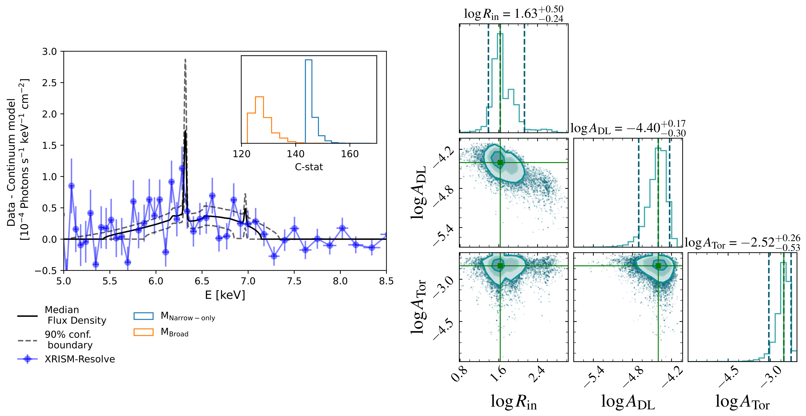
图注：\(\textbf{(Left)}\) \(\xrism-Resolve\) spectrum in the 5--8.5 keV energy band fitted with the $M_{\rm broad}$ model, consisting of a narrow torus component (\texttt{MYTorus}) and a relativistic diskline representing emission from the inner accretion disk. The \(\textbf{inset}\) shows the distribution of the C-statistic values obtained from the MCMC exploration, indicating that the $M_{\rm broad}$ model provides a statistically improved fit compared to a narrow-line-only model. \(\textbf{(Right)}\) Posterior distributions and parameter correlations derived from the MCMC analysis for selected parameters: the inner radius of the \fekalpha\ emitting region ($R_{\rm{in}}$), the diskline normalization ($A_{\rm{DL}}$), and the torus normalization ($A_{\rm{Tor}}$).
对应解读：对应“建议重点查看的图表”第4、5、8项，以及关键图表逐图导读中的图4和图5：XRISM Fe Kα 区谱图、窄线/宽 diskline 分解、MCMC 参数相关和模型改进。
入选理由：这是验证本文核心 Fe Kα 结论的最关键图：左图直接展示 XRISM/Resolve 在5--8.5 keV的谱形、窄 torus 成分与宽 diskline 成分；插图给出 C-statistic 分布，可评估宽线模型相对窄线模型的统计改进；右图给出 \(R_in\)、diskline 归一化和 torus 归一化的后验及相关性，直接关系到40--60 \(r_g\) 内半径约束是否可信。
来源与置信度：\(arxiv_source\)；high；\(arxiv_source\) / mrk766_R2.tex:figure[2]
Fig05
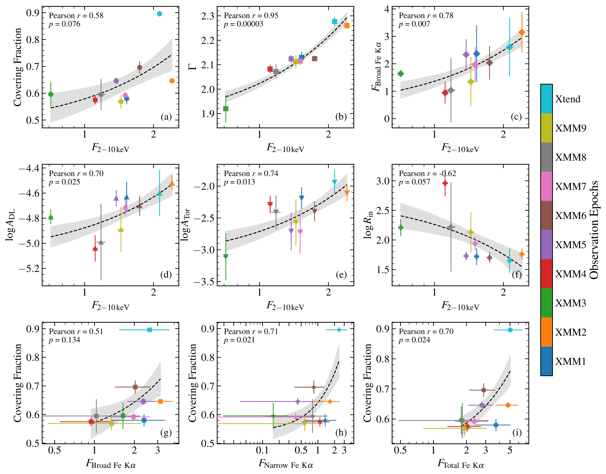
图注：First and second rows of panels show the correlation between the intrinsic 2–10 keV continuum flux with the following parameters: \(\textbf{(a)}\) covering fraction of the absorber (section~\ref{subsec:epn}), \(\textbf{(b)}\) coronal power-law photon index ($\Gamma$), \(\textbf{(c)}\) the broad \fekalpha\ flux, \(\textbf{(d)}\) normalization of the \(\texttt{diskline}\) broad component ($A_{\rm DL}$), \(\textbf{(e)}\) normalization of the narrow \fekalpha\ ($A_{\rm Tor}$) component modeled with \(\texttt{MYTORUS}\) (section~\ref{subsec:xrism_spectra}), and \(\textbf{(f)}\) the inner radius ($R_{\rm in}$) of the broad \fekalpha\ emitter modeled with \(\texttt{diskline},\) and the third row of panel \(\textbf{(g, h, i)}\) shows the correlation between the \fekalpha\ broad, narrow, and total flux with the absorber covering fraction, respectively. In each subplot, the black dashed line represents the best-fit linear relation of the form $y=mx+c$ obtained using the least-squares regression, and the shaded colored region indicates the $1\sigma$ confidence interval on the best-fit linear regression line. The Pearson correlation coefficient ($r$) and the corresponding $p$-value are shown in each panel. The data covers all nine \xmm\ and the \(\xrism-Xtend\) observation. The continuum 2--10 keV flux values are in units of $10^{-11}$~erg~cm$^{-2}$~s$^{-1}$, and the \fekalpha\ line flux values are in units of $10^{-13}$~erg~cm$^{-2}$~s$^{-1}$. The regression is performed in linear space, while the horizontal axis of the subplots is shown in logarithmic scale for visualization.
对应解读：对应“建议重点查看的图表”第3和第6项，以及关键图表逐图导读中的图3和图6：吸收覆盖因子、宽/窄 Fe Kα 通量、diskline 归一化与2--10 keV连续谱通量的相关关系。
入选理由：这张图集中呈现本文最重要的跨历元物理诊断：覆盖因子与连续谱通量的相关、宽 Fe Kα 通量和 diskline 归一化是否随连续谱增强、窄线成分是否较弱相关，并给出线性拟合、1σ置信带、Pearson r和p值。它比单纯时间序列图更适合判断相关性是否由异常点或散布主导。
来源与置信度：\(arxiv_source\)；high；\(arxiv_source\) / mrk766_R2.tex:figure[5]
Fig06
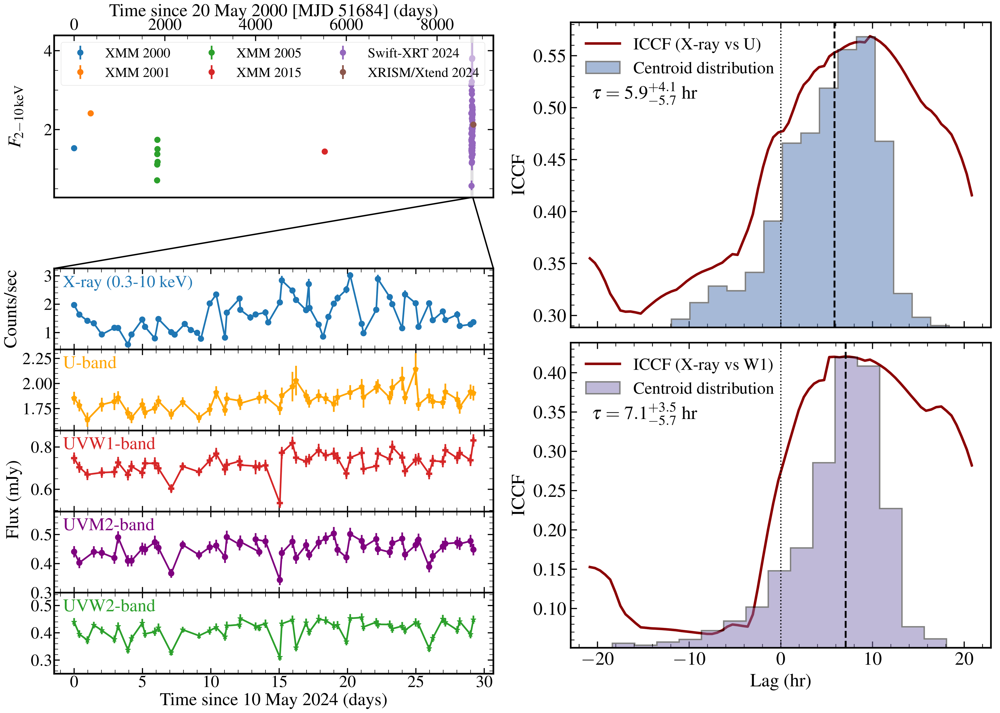
图注：\(\textbf{Left panel:}\) Long-term and short-term variability of Mrk 766 in the X-ray and ultraviolet bands. X-ray and UV/optical light curves of Mrk~766. The top panel shows the 2--10 keV X-ray flux of the all \xmm\ epochs along with \(\swift-XRT\) and \(\xrism-Xtend\) observations, while the lower panels present the \(\textit{Swift}-XRT\) (0.3--10 keV) and UVOT (U, UVW1, UVW2, UVM2 bands) light curves of Mrk~766 obtained during May--June 2024. \(\textbf{Right panel:}\) Interpolated cross-correlation function (ICCF) between the \(\textit{Swift}\) X-ray and U-band and UVW1-band light curves shown using the red curve. The distribution of centroid lags from 5000 flux randomization/random subset selection (FR/RSS) realizations is shown using the histogram. Estimated lag from the FR/RSS centroid distribution indicates that the U-band variations lag by $5.9^{+4.1}_{-5.7}$ hours and UVW1-band by $7.1^{+3.5}_{-5.7}$ hours behind the X-ray variations. This is consistent with a reprocessing origin of the U/UVW1-band variations.
对应解读：对应“建议重点查看的图表”第7项，以及关键图表逐图导读中的图7：Swift XRT/UVOT 光变曲线、ICCF 互相关函数和FR/RSS时延分布。
入选理由：该图直接支撑紫外相对X射线滞后5.9小时左右的结论。左侧同时给出长期X射线状态和2024年Swift多波段监测采样，右侧显示ICCF曲线及5000次FR/RSS质心滞后分布，能判断滞后峰是否清楚、误差是否跨零以及小时级时延是否受采样影响。
来源与置信度：\(arxiv_source\)；high；\(arxiv_source\) / mrk766_R2.tex:figure[6]
Fig01
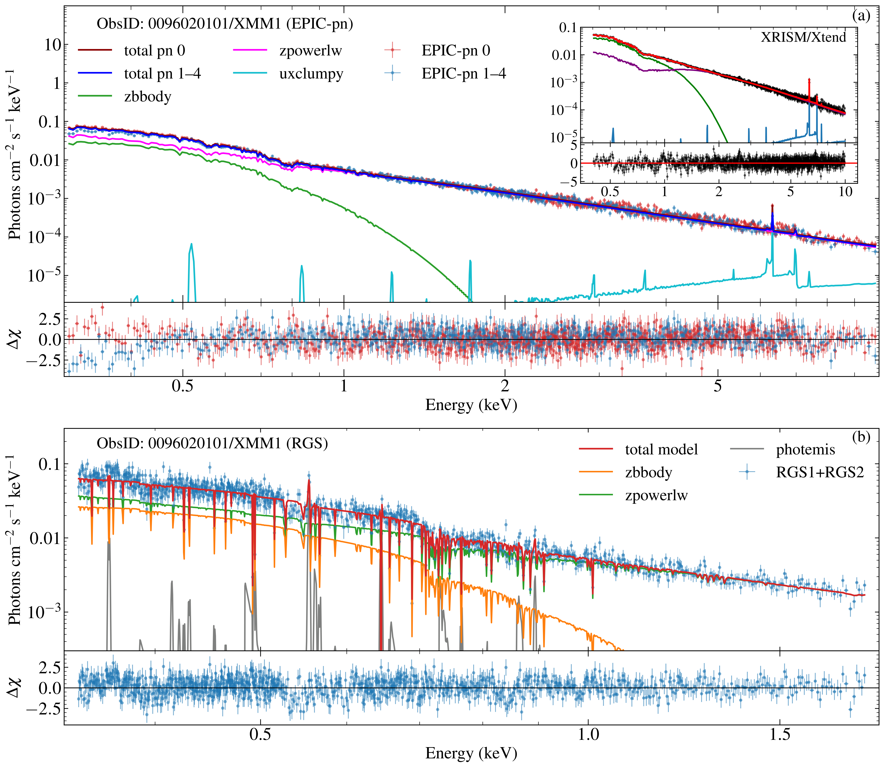
图注：Broadband X-ray spectra of Mrk 766 from the \xmm\ and \xrism\ observations. \(\textbf{(a)}\) EPIC-pn spectrum (0.3--10 keV) for the XMM1 epoch. Red and blue data points represent single-pixel (pattern 0) and double-pixel (patterns 1--4) events, respectively. The solid curve shows the best-fit continuum model consisting of a soft excess component (zbbody), a primary power-law continuum (zpowerlw), and torus reflection (uxclumpy), modified by Galactic absorption and a partially covering ionized absorber. Residuals with respect to the best-fit model are shown in the lower panel. The \(\textbf{inset}\) displays the XRISM/Xtend spectrum in 0.4--10 keV band fitted with the same phenomenological model. \(\textbf{(b)}\) Combined RGS1+RGS2 spectrum (0.34--1.8 keV) with the best-fit model including the continuum components, two warm absorber phases, and a photoionized emission component (photemis). The bottom panel shows the residuals relative to the best-fit model. The online animated version of this figure cycles through all nine XMM-Newton epochs (XMM1--XMM9).
对应解读：对应“建议重点查看的图表”第1和第2项，以及关键图表逐图导读中的图1和图2：XMM/ XRISM宽带谱、RGS软X射线谱、连续谱加多相吸收模型及残差。
入选理由：这张图提供软X射线吸收分析的基础证据：EPIC-pn 0.3--10 keV和RGS 0.34--1.8 keV谱同时展示，模型包含软过剩、幂律、torus反射、部分覆盖电离吸收、两相warm absorber和photoionized emission，并给出残差。它适合检查吸收线/吸收边和软X射线曲率是否被模型合理解释。
来源与置信度：\(arxiv_source\)；high；\(arxiv_source\) / mrk766_R2.tex:figure[1]
Fig07
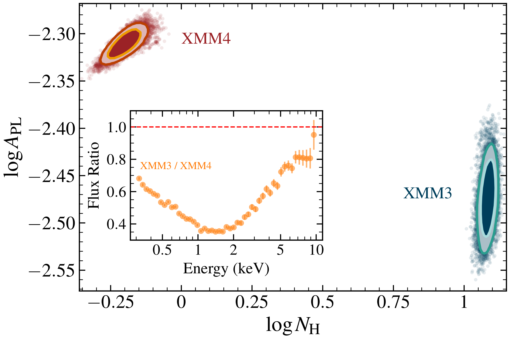
图注：Scatter plot of the line-of-sight column density $N_{\rm H, los}$ versus the intrinsic power-law normalization ($\log A_{\rm PL}$) derived from the \(\texttt{zxipcf}\) fits to the EPIC-pn spectra. The two distinct clusters correspond to the XMM3 and XMM4 epochs, separated by $\Delta t \simeq 2$~days, and are clearly offset in $N_{\rm H, los}$, indicating rapid variability of the absorbing column. The inset shows the energy-dependent flux ratio (XMM3/XMM4), which exhibits a pronounced suppression at soft X-rays, consistent with enhanced absorption during the XMM3 epoch rather than intrinsic continuum variations.
对应解读：对应“建议重点查看的图表”第3项和模型拟合段落中的吸收体快速变化：\(N_H,los\) 与幂律归一化关系、XMM3/XMM4约2天间隔的吸收变化。
入选理由：该图专门检验吸收柱密度快速变化这一关键结果。散点图区分XMM3和XMM4两个相隔约2天的状态，显示N_H,los显著偏移；插图的XMM3/XMM4能量依赖通量比进一步说明软X射线压低更像增强吸收而非单纯连续谱变化。它比宽带总谱更直接支持‘天尺度吸收体变化’。
来源与置信度：\(arxiv_source\)；high；\(arxiv_source\) / mrk766_R2.tex:figure[7]
Fig09
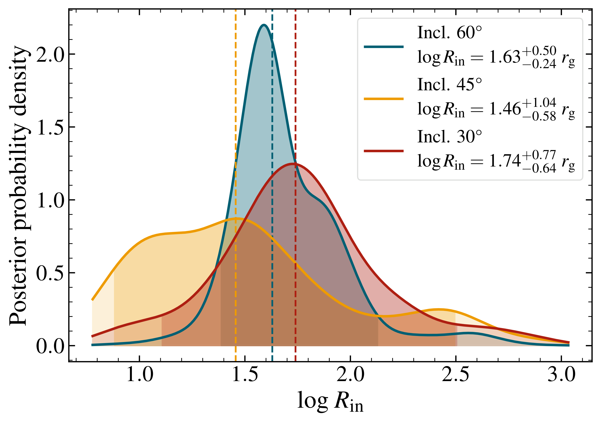
图注：Marginalized posterior distributions of $\log R_{\rm in}$ derived from MCMC fitting of the \(\texttt{diskline}\) model to the \(\textit{XRISM}/Resolve\) Fe~K$\alpha$ spectrum, for three assumed disk inclinations ($i = 30^{\circ}$, $45^{\circ}$, and $60^{\circ}$). Shaded regions indicate the 90\% credible intervals (5th--95th percentile). Vertical lines mark the median values. The distributions overlap substantially, indicating that the inferred $R_{\rm in}$ is not strongly sensitive to the assumed disk inclination.
对应解读：对应“建议重点查看的图表”第5项和模型拟合段落中的diskline参数退化：不同假设倾角下R_in的MCMC后验和90%可信区间。
入选理由：这张图用于评估R_in约束对盘倾角假设的敏感性。虽然不是二维置信轮廓，但它给出i=30°、45°、60°时log R_in的边缘后验、90%可信区间和中位数，能直接检查40--60 r_g量级是否稳健，补充Fig02中Fe Kα谱分解和MCMC相关图。
来源与置信度：\(arxiv_source\)；high；\(arxiv_source\) / mrk766_R2.tex:figure[9]
强相关工作
这篇工作属于同一源 Mrk 766 的长期 X 射线谱学研究脉络。历史上，Mrk 766 常被用于讨论窄线 Seyfert 1 的快速 X 射线光变、软 X 射线 warm absorber、Fe K 区可变发射线和内盘反射。建议检索关键词包括 “Mrk 766 XMM-Newton RGS warm absorber”、“Mrk 766 Fe K alpha variability”、“Mrk 766 reverberation lag”、“NGC 4253 narrow-line Seyfert 1”。同一源论文尤其重要，因为不同源之间黑洞质量、吸积率和倾角差异会显著影响时延和线宽。
与同类源相比，本文可和 1H 0707-495、IRAS 13224-3809、Ark 564 等高吸积率窄线 Seyfert 1 的 X 射线反射和滞后研究放在一起看。这些源中也常见强软过剩、复杂反射和短时 X 射线滞后，但吸收解释和反射解释之间长期存在张力。本文并不把复杂吸收和反射视为互斥，而是把多相吸收、宽 Fe K\(\alpha\) 和紫外再处理作为不同半径上的现象来串联，这是它相对于单一解释框架的价值。
基础理论方面，应回到标准薄盘、盘—日冕模型、X 射线反射谱和相对论铁线模型。检索关键词可用 “Shakura Sunyaev disk”、“AGN X-ray reflection review”、“relativistic diskline Fabian Rees Stella White 1989”、“AGN warm absorber review”、“AGN continuum reverberation mapping”。相反或竞争观点主要集中在：宽 Fe K\(\alpha\) 是否可由复杂吸收伪装、紫外/光学盘滞后是否普遍大于标准薄盘预期、以及 NLSy1 中高吸积率几何厚盘是否会改变简单 lamp-post 再处理图像。
同一事件 / 同类源线索：
相似工作：
- https://arxiv.org/abs/astro-ph/0404156
- https://arxiv.org/abs/0903.0888
- https://arxiv.org/abs/1201.4385
基础理论 / 方法工作：
- https://ui.adsabs.harvard.edu/abs/1973A%26A....24..337S/abstract
- https://ui.adsabs.harvard.edu/abs/1989MNRAS.238..729F/abstract
- https://arxiv.org/abs/astro-ph/0305720
- https://arxiv.org/abs/1302.7002
相反观点 / 张力线索：
10. Multiple-Mediator-Affected Ultra-High-Energy Neutrino Attenuation: Hints for 5D ${U(1)}_{L_μ- L_τ}$ in IceCube
- 来源：arXiv / astro-ph.HE
- 链接：https://arxiv.org/abs/2609.16139v1
- 作者：Atri Bhattacharya, Ayushi Kaushik, Kenji Nishiwaki
- 评分：novelty 7/10，importance 7/10，relevance 9/10，final 8.70/10
- 推荐理由：针对IceCube高能天体中微子谱软化提出多媒介子/额外维度导致的传播衰减模型，明确关联UHE天体中微子和宇宙背景中微子相互作用；虽偏BSM理论，但对高能中微子天文学解释具有直接相关性。
中文题目：多重媒介子导致的超高能中微子衰减：IceCube 数据中五维 \({U(1)}_{L_\mu-L_\tau}\) 的可能迹象
做了什么：这篇论文研究一个具体的新物理解释：如果存在五维 \({U(1)}_{L_\mu-L_\tau}\) 规范相互作用，紧致化后会在四维产生一串 Kaluza-Klein 规范玻色子。高能天体中微子在传播途中与宇宙中微子背景 \(\mathrm{C}\nu\mathrm{B}\) 散射时，不再只遇到单个共振能量，而会遇到多个相近的 \(s\)-道共振，并且 \(t\)-道、\(u\)-道非共振项也会参与，从而使 IceCube 看到的几十 \(\mathrm{TeV}\) 以上中微子谱变软。作者的核心主张不是重新拟合一个复杂的天体源模型，而是问：能否用单一注入幂律加传播衰减来解释软谱特征。
为什么重要：IceCube 的弥散高能中微子谱是否真的是源端很软，还是传播中被新相互作用改写，是高能中微子天文学和粒子物理交界处的关键问题。若 \({L_\mu-L_\tau}\) 型相互作用存在，它天然主要影响 \(\nu_\mu\) 与 \(\nu_\tau\) 扇区，和 IceCube 的味道敏感性、缪子径迹样本、级联样本都直接相关。五维模型的价值在于，它把单媒介子模型中较窄、较调参的吸收谷推广成多个共振叠加的能量依赖衰减，可能更容易覆盖宽能段的谱软化。
理论 / 观测 / 仪器方法价值：理论上，本文把额外维、Kaluza-Klein 塔和宇宙中微子背景吸收联系到可观测的 IceCube 能谱形状，给出一种从天文谱形反推轻规范玻色子谱的路径。观测上，它提示读者不要只看源端幂律指数，还要检查传播光深 \(\tau_\nu(E,z)\) 是否能在几十 \(\mathrm{TeV}\) 到 \(\mathrm{PeV}\) 区间产生可辨认的弯曲。方法上，它强调多媒介子干涉、通道叠加和宇宙学传播积分对拟合结果的重要性。
为什么应该关注：如果你关心 IceCube 弥散谱、超高能中微子源族、或轻新规范相互作用约束，这篇文章值得看，因为它把一个常被简化为“单个吸收共振”的问题变成了“多个相邻共振加连续非共振衰减”的问题。即使你不相信该模型，文中的计算框架也能帮助判断：IceCube 谱软化究竟更像源物理、选择效应、还是传播中新相互作用。
展开详细解读：文章讲解、背景、理论、重点章节、图表与相关工作
文章详细讲解
科学问题：IceCube 在几十 \(\mathrm{TeV}\) 以上测到的天体中微子通量通常用幂律或破裂幂律描述，但不同样本给出的谱指数和高能端行为并不完全一致。标准宇宙线加速图像常预期较硬的源谱，例如接近 \(E^{-2}\) 或略软，而 IceCube 若偏好很软的弥散谱，就需要解释软化从何而来。本文关心的是：这种软化是否可能不是源端注入谱本身很软，而是中微子在宇宙传播时与 \(\mathrm{C}\nu\mathrm{B}\) 发生新相互作用，被能量选择性地吸收。
作者怎么做：文章采用五维 \({U(1)}_{L_\mu-L_\tau}\) 规范理论。额外维紧致化后，四维有效理论中出现一系列 Kaluza-Klein 规范玻色子，它们的质量近似按紧致化尺度分层排列。高能天体中微子与背景中微子碰撞时，中心质心能量可扫过这些媒介子的 \(s\)-道共振；同时，由于有多个媒介子，振幅之间会叠加和干涉，\(t\)-道与 \(u\)-道项在非共振区也会贡献不可忽略的截面。作者计算能量相关散射截面，再把它放进宇宙学传播光深，得到到达地球的衰减通量。
关键结果：相较单媒介子 \({U(1)}_{L_\mu-L_\tau}\) 模型，Kaluza-Klein 塔可以在更宽能区制造多个相邻吸收结构，因而不只是产生一个窄的通量缺口，而是能够整体压低高能端，使原本单一幂律注入谱在观测上表现得更软。论文强调，\(s\)-道共振之外的 \(t\)-道和 \(u\)-道非共振散射也会抬高总截面背景，使衰减不局限于极窄能量窗口。这使模型在解释 IceCube 软谱趋势时比单一轻媒介子更灵活。
局限和下一步：这种解释依赖轻规范玻色子质量谱、耦合强度、额外维半径、背景中微子质量与红移分布等参数；这些参数同时受到实验室、宇宙学和天体物理限制。IceCube 当前统计量和能量分辨率未必足以分辨多重共振的细结构，因此模型目前更像“可行传播机制”而非确定发现。下一步需要用公开或合作组级别的 IceCube 有效面积、事件级能量响应、角分布和味道信息做全似然拟合，并联合其他中微子望远镜、宇宙微波背景和大尺度结构对自相互作用中微子的约束。
关键结果是怎么做出来的
本文最重要的证据链是从 IceCube 弥散天体中微子谱的软化出发，而不是从单个瞬变源或单个事件出发。作者面对的是能谱级别的问题：若源端注入采用一个相对简单的单幂律，传播中的新相互作用能否把到达地球的谱变得更软。样本层面，论文讨论的是 IceCube 已发表的高能弥散中微子观测趋势，尤其是几十 \(\mathrm{TeV}\) 到 \(\mathrm{PeV}\) 区间的通量形状；它并非报告一个新的 IceCube 事件目录，而是对既有通量测量做理论解释。
统计与模型比较的关键在于：单媒介子模型通常只能在满足 \(s\)-道共振条件的能量附近产生明显吸收，而五维模型引入多个 Kaluza-Klein 模式后，会形成多个相近的截面峰。作者因此比较的是三类谱形：无新相互作用的单幂律传播、四维单媒介子传播、以及多媒介子 Kaluza-Klein 塔传播。真正应检查的是衰减后通量与 IceCube 通量点之间的相对残差，而不只是某个参数点是否能画出看似柔和的曲线。
显著性方面，这类论文通常不应被读成“发现了五维规范玻色子”。更合理的读法是：在给定参数空间中，多媒介子衰减可以生成与软谱方向一致的形状，并可能缓解单幂律源谱与观测谱之间的张力。若文中给出 \(\chi^2\)、似然比或置信区间，读者应重点看自由参数数量是否增加、是否使用 IceCube 有效面积与能量迁移矩阵、以及是否把天体归一化和谱指数与新物理参数同时边缘化。
支撑结论的图表通常包括：Kaluza-Klein 质量谱示意、不同媒介子数下的散射截面随入射能量变化、传播光深或生存概率曲线、以及衰减后通量与 IceCube 数据点的比较。最有说服力的图不是单独的截面峰，而是最终折叠红移分布、背景中微子动量分布和探测器能量响应后的预测通量。若吸收结构在未折叠的理论能量上很尖，但在可观测能量中被完全抹平，那么该模型只能解释整体软化，不能声称可预言清晰谱线。
系统误差包括 IceCube 绝对能标、南北天区背景扣除、穿地吸收、天体源演化、味道组成、背景中微子质量层级和局部聚集。稳健性检验应包括改变源红移演化、改变注入谱指数、比较单媒介子与多媒介子、限制 Kaluza-Klein 截断阶数、以及排除与实验室约束冲突的耦合区间。读者应特别警惕参数扫描中的“后验调参”：若只有在非常窄的紧致化半径和耦合组合下才能拟合软谱，解释力就会下降。
展开背景、理论、公式、模型、章节和图表导读
背景知识
研究对象是超高能天体中微子在宇宙尺度上的传播。IceCube 已经确认存在地球大气背景之外的天体中微子通量，但其源族、谱形、味道组成和最高能端截断仍没有完全定论。通常人们把观测谱形归因于源端加速机制、宇宙线逃逸、源内强子相互作用或多个源族混合；本文关注另一条路径，即传播途中发生能量依赖吸收。
宇宙中微子背景 \(\mathrm{C}\nu\mathrm{B}\) 是大爆炸热遗迹，今天温度约为 \(1.95\,\mathrm{K}\)，数密度很高但单个中微子能量很低。标准模型弱相互作用下，高能天体中微子与 \(\mathrm{C}\nu\mathrm{B}\) 的散射概率极小，除非达到极端高能的 \(Z\)-共振区。因此，在 \(\mathrm{TeV}\) 到 \(\mathrm{PeV}\) 能区看到明显传播吸收，一般意味着存在比标准弱相互作用更强或更轻的新媒介子。
\({U(1)}_{L_\mu-L_\tau}\) 是一类常见的轻规范相互作用模型，因为 \(L_\mu-L_\tau\) 在标准模型费米子内容下具有较好的反常抵消性质，并且主要耦合到缪子、\(\tau\) 轻子及其对应中微子。它被讨论过用于解释缪子磁矩异常、中微子非标准相互作用、暗物质门户和高能中微子吸收。单媒介子版本中，吸收通常出现在满足共振条件的特定入射能量附近。
现在值得重新看的原因有两个。第一，IceCube 和后续中微子望远镜正在积累更长时间基线和更宽能区的弥散谱数据，谱形细节变得越来越重要。第二，单个窄共振很难自然解释宽能段软化，而额外维模型自动给出多重 Kaluza-Klein 模式，可能产生更宽、更复杂的吸收结构。这使“传播诱导软化”从一个窄峰模型变成了一个可塑性更强的谱形模型。
常见误区是把 IceCube 谱软简单等同于源谱软。事实上，观测到的是源注入、宇宙演化、传播吸收、地球吸收、探测器响应和背景扣除共同作用后的结果。另一个误区是看到共振截面峰就认为必然有观测特征；实际能谱会被源红移分布、背景中微子热运动、质量本征态混合和探测器能量分辨率显著平滑。
基础理论 / 方法脉络
基础物理图像是：一束能量为 \(E_\nu\) 的天体中微子穿过充满低能遗迹中微子的宇宙背景。如果存在一个质量为 \(M\) 的新玻色子，它可以在高能中微子与背景中微子的质心能量接近 \(M\) 时被共振地产生，从而增强散射截面。散射会把原本沿视线传播、仍处于可探测能量的中微子移出该能量束，表现为通量衰减或谱形变软。
在四维单媒介子模型中，核心特征是一个主共振。背景中微子若近似静止，质心能量平方约为 \(s\simeq 2m_\nu E_\nu\)，所以共振能量由媒介子质量和背景中微子质量决定。五维模型不同：紧致化额外维后，四维观察者看到一串质量为 \(M_n\) 的 Kaluza-Klein 模式，每个模式都可能对应一个共振能量。这使截面随能量呈现多峰结构，而不是单峰结构。
本文的模型假设包括：新的规范相互作用属于 \({U(1)}_{L_\mu-L_\tau}\)，因此主要影响 \(\nu_\mu\) 与 \(\nu_\tau\) 相关通道；额外维紧致化产生 Kaluza-Klein 塔；有效四维耦合和质量间隔由高维耦合、紧致化半径和对称性破缺尺度决定。实际可观测量不是单个散射振幅，而是经过宇宙学路径积分后的光深 \(\tau_\nu(E,z)\) 和生存概率。
观测方法上，需要把源端通量 \(\Phi_{\rm src}(E,z)\) 传播到地球，乘以能量和红移相关的衰减因子，再与 IceCube 的有效面积、曝光时间和能量响应卷积。IceCube 看到的是重建能量分布，不是原始真实能量分布，因此窄吸收峰可能被能量分辨率平滑。对级联事件尤其如此，其能量沉积与入射中微子能量之间存在响应分布。
关键退化关系包括：源谱指数 \(\gamma\) 与传播光深的退化，源最高能截断与新物理吸收的退化，源红移演化与累积光深的退化，以及中微子质量 \(m_\nu\) 与共振能量位置的退化。系统误差还包括 IceCube 有效面积、地球吸收模型、大气中微子和大气缪子背景、以及味道转换后不同拓扑样本的权重。
公式与推导
第一步是从宇宙学传播中的通量守恒写起。若源端共动发射率为 \({\cal Q}_\nu(E,z)\)，无新相互作用时地球处各向同性通量可写成
这里 \(E\) 是地球观测能量，\(z\) 是红移，\(H(z)\) 是哈勃函数，\((1+z)E\) 是发射时能量，因子 \((1+z)^{-1}\) 表示宇宙学时间伸长和能量变量变换。
第二步加入传播吸收。若高能中微子与 \(\mathrm{C}\nu\mathrm{B}\) 的散射光深为 \(\tau_\)
u(E,z))，通量变为
这里 \(\exp[-\tau_\nu]\) 是生存概率；当 \(\tau_\nu\ll 1\) 时传播几乎透明，当 \(\tau_\nu\gtrsim 1\) 时对应能区会被明显压低。
第三步把光深写成沿线积分。若背景中微子数密度为 \(n_{\nu,0}(1+z)^3\)，并暂时忽略热运动，则
其中 \(z_s\) 是源红移，\(\sigma_{\nu\nu}\) 是高能中微子与背景中微子的总散射截面。入射能量在红移 \(z\) 处为 \(E(1+z)\)。
第四步给出共振条件。若背景中微子近似非相对论且质量为 \(m_\nu\)，质心能量平方近似为
这里 \(M_n\) 是第 \(n\) 个 Kaluza-Klein 媒介子的质量。这个关系说明吸收峰位置同时依赖新玻色子质量、背景中微子质量和发生散射的红移。
第五步写出五维紧致化产生的质量塔。对半径为 \(R\) 的简单圆紧致化，常见近似形式为
其中 \(M_0\) 来自四维零模质量或对称性破缺，\(R^{-1}\) 控制相邻 Kaluza-Klein 模式的质量间隔。若 \(R^{-1}\) 较小，多重共振会在能量上靠得较近。
第六步把多个媒介子的振幅相加。示意性地，\(s\)-道振幅可写为
其中 \(g_n\) 是第 \(n\) 个模式的有效耦合，\(C_{\alpha\beta}^{(n)}\) 表示味道或电荷因子，\(\Gamma_n\) 是衰变宽度。由于求和发生在振幅层面，不同模式之间可以发生干涉。
第七步由振幅得到截面。对二体散射，角分布截面可写成
这里 \({\cal M}_t\) 和 \({\cal M}_u\) 是非共振交换通道，横线表示对初态自旋和末态求平均或求和。本文强调这些非 \(s\)-道项在远离共振时也可能影响总衰减。
第八步连接到 IceCube 事件数。若有效面积为 \(A_{\rm eff}(E,\Omega)\)、曝光为 \(T\)、能量响应为 \(R(E_{\rm rec}|E)\)，预测重建能量区间内事件数为
这个式子说明理论通量必须经过探测器响应卷积后才能与数据比较，不能直接把未卷积的尖锐吸收峰等同于观测峰谷。
第九步给出常用似然诊断。若第 \(i\) 个能量箱观测到 \(k_i\) 个事件，预测均值为 \(\mu_i(\theta)\)，泊松似然为
参数 \(\theta\) 包括源谱归一化、谱指数、Kaluza-Klein 质量参数、耦合和系统误差 nuisance 参数。模型优劣可用 \(-2\Delta\ln{\cal L}\)、信息准则或后验预测残差评估。
模型拟合 / 应用方法
这类工作的拟合量首先是到达地球的中微子通量形状，通常包括归一化、源谱指数 \(\gamma\)、可能的最高能截断、源红移演化参数，以及新相互作用的耦合、零模质量、紧致化半径和 Kaluza-Klein 截断阶数。若直接使用 IceCube 发布的通量点，拟合相对简单但会丢失事件级能量响应和拓扑信息；若使用事件级似然，则需要有效面积、能量迁移矩阵、方向分布和背景模型。
似然一般可采用泊松事件数似然或对发布通量点的高斯近似。更严谨的做法是在每个拓扑样本中分别计算预测事件数，并加入大气中微子、大气缪子和穿地吸收背景。新物理参数不应在固定源谱后单独调节，而应与源谱参数联合拟合并边缘化；否则很容易把源端谱指数的不确定性误判为传播吸收证据。
残差诊断非常重要。若模型只是在最高能几个点降低通量，但在 \(100\,\mathrm{TeV}\) 附近造成过深吸收谷，就可能与 IceCube 数据不符。若多重共振造成太强的波纹结构，而观测通量点没有对应起伏，那么需要依赖红移积分和能量分辨率把结构抹平。读者应检查残差是否系统性同号、是否集中在某一拓扑样本、以及是否受某几个高能事件强烈驱动。
主要退化包括 \(m_\nu\) 与 \(M_n\) 控制共振位置的退化，\(g_n\) 与源归一化控制吸收深度的退化，\(R^{-1}\) 与探测器能量分辨率控制多峰可分辨性的退化，以及源演化与光深积分长度的退化。还要注意味道退化：\({U(1)}_{L_\mu-L_\tau}\) 对不同味道的耦合不同，而长基线振荡会把源端味道组成混合成地球处的质量本征态组合。
模型可能失败的方式也很清楚。第一，所需耦合可能被三叉过程、缪子实验、宇宙学自由流或其他天体约束排除。第二，IceCube 软谱可能来自源族混合或源端截断，而不需要传播新物理。第三，多重媒介子模型自由度较多，若没有显著改善预测能力，统计上可能不优于经验破裂幂律。实际应用上，最好把它作为可检验的传播模板，与单幂律、破裂幂律、源截断和单媒介子吸收模型并列比较。
重点章节 / 结果段落怎么读
数据与问题设置：读者应先看论文如何描述 IceCube 的软谱事实，以及作者采用的是哪些已发表通量结果或能区范围。重点不是记住某个单点，而是看作者把待解释现象定义为整体谱指数偏软、最高能端通量不足，还是某些能量箱的缺口。
模型构造：接着看五维 \({U(1)}_{L_\mu-L_\tau}\) 的有效四维谱。这里要弄清楚 Kaluza-Klein 模式质量 \(M_n\)、有效耦合 \(g_n\)、紧致化半径 \(R\) 和对称性破缺尺度之间的关系。读者应检查作者是否说明截断到多少个模式，以及高阶模式是否会导致有效理论失控。
截面计算：这是全文技术核心。应重点看 \(s\)-道多重共振、\(t\)-道和 \(u\)-道贡献如何组合，是否在振幅层面相加，是否考虑宽度 \(\Gamma_n\) 和干涉。若只展示总截面，读者最好寻找分通道图或附录，确认哪些能段由共振主导，哪些能段由非共振尾部主导。
传播与通量预测：这一节把微观截面转化为 IceCube 可观测谱形。读者应检查光深积分是否包括红移演化、背景中微子数密度随 \((1+z)^3\) 增长、入射能量红移，以及背景中微子质量假设。若源红移分布被简化，结论就更偏向可行性研究而非精确拟合。
结果与讨论：最后看衰减后通量曲线与 IceCube 数据的比较，以及作者给出的允许参数区间。读者应关注多媒介子模型相对单媒介子是否真的改善了宽能段软化，而不是只增加参数后变得更灵活。讨论和附录中的外部约束也很关键，因为轻 \({L_\mu-L_\tau}\) 玻色子已被许多实验和宇宙学观测限制。
建议重点查看的图表
-
Kaluza-Klein 质量谱或参数空间图：看 \(M_n\) 随模式数 \(n\) 的间隔是否足以在 IceCube 能区形成多个相邻共振，以及所选参数是否显得特别调参。
-
散射截面 \(\sigma_{\nu\nu}(E)\) 图：重点检查 \(s\)-道峰的宽度、峰间距、峰高，以及 \(t\)-道和 \(u\)-道是否在峰外提供连续背景。若纵轴跨很多数量级，要注意视觉上被压扁的低截面区。
-
光深 \(\tau_\nu(E,z)\) 或生存概率 \(\exp[-\tau_\nu]` 曲线：看吸收是否在几十 \(\mathrm{TeV}\) 到 \(\mathrm{PeV}\) 区间达到 \(\tau_\nu\sim 1\)，以及红移越高时吸收是否更强。
-
衰减后通量与 IceCube 数据比较图：看模型是否同时匹配低能端归一化和高能端下降，而不是牺牲某一段。还要看是否展示了无相互作用、单媒介子和多媒介子三种曲线。
-
参数扫描或置信区间图：检查耦合、质量和紧致化半径的允许区域是否宽，是否与外部实验约束重叠。若只给几个 benchmark 点，结论强度应相应降低。
-
稳健性检验图或表：看改变源谱指数、源演化、中微子质量、Kaluza-Klein 截断阶数后，软化效果是否仍存在。
关键图表逐图导读
图 1：通常应是模型示意或 Kaluza-Klein 质量谱。横轴可能是模式数 \(n\) 或质量，纵轴是 \(M_n\) 或对应共振能量 \(E_{\rm res}^{(n)}\)。读图时要看模式间隔是否小于 IceCube 能量分辨率；若小于，观测上会表现为平滑衰减，不能期待分辨出逐个峰。
图 2：应重点检查总散射截面随入射中微子能量的变化。横轴通常是 \(E_\nu\)，纵轴是 \(\sigma_{\nu\nu}\)，模型线可能分别代表单媒介子、多个 Kaluza-Klein 模式、以及是否包含 \(t\)-道和 \(u\)-道。主要结论应是多媒介子模型在宽能区提高截面。陷阱是未卷积红移和背景热运动的截面峰看起来比实际可观测结构尖锐得多。
图 3：若展示光深或生存概率，横轴是地球观测能量 \(E\)，纵轴是 \(\tau_\nu\) 或 \(P_{\rm surv}=\exp[-\tau_\nu]\)，不同曲线可能代表不同源红移或模型参数。读者应看 \(P_{\rm surv}\) 是否在 IceCube 高统计能区已经明显低于 \(1\)，而不是只在数据稀少的极高能端起作用。
图 4：衰减后通量与 IceCube 通量点比较是最关键的结果图。横轴为能量，纵轴通常为 \(E^2\Phi\) 或 \(E^3\Phi\)，数据点带统计和系统误差条，模型线包括无衰减幂律和新相互作用衰减谱。读图陷阱是 \(E^2\Phi\) 表示法会弱化谱指数直觉；应同时关注低能归一化、高能下降和中间能段是否出现过度吸收。
图 5：若有参数空间图，横轴和纵轴可能是媒介子质量、耦合、紧致化尺度或零模质量。阴影区可能表示 IceCube 偏好的区域、外部约束排除区和理论有效性边界。关键是看 IceCube 偏好区是否被其他实验完全覆盖，或者是否只剩非常窄的缝隙。
图 6：若有稳健性或附录图，应看改变源演化、注入谱指数和背景中微子质量后，衰减曲线是否大幅移动。由于 \(E_{\rm res}^{(n)}\propto M_n^2/m_\nu\)，中微子质量假设会直接改变吸收能区，这是一个容易被低估的读图陷阱。
论文原图 / 可嵌入图片
Fig04
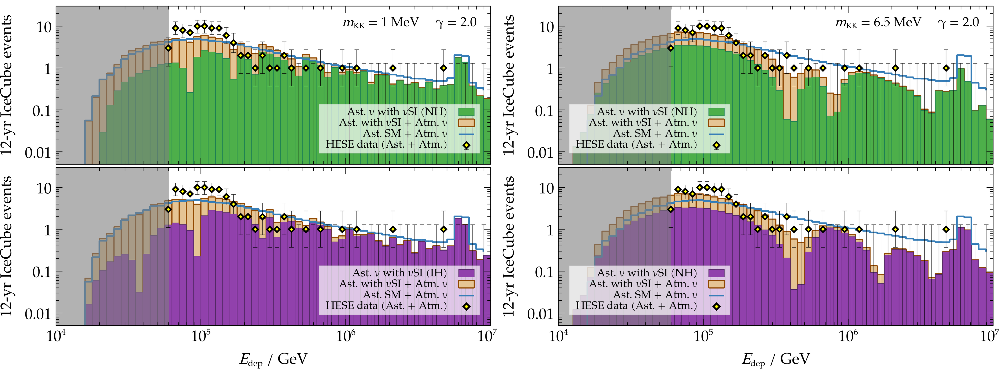
图注：12-year IceCube HESE numbers from self-interaction-induced scattered neutrino fluxes as a function of the deposited energy \( E_\text{dep} \). An injection spectrum of \( \phi^\text{ini} \propto {E_\nu^{-2}} \) has been used along with \(\mkk = \SI{1}{\MeV}\) (left) and \(\SI{6.5}{\MeV}\) (right) as examples. Events for both normal (NH) and inverted hierarchies (IH) of neutrino masses are shown. We use \( N_\text{KKmax} = 15 \), which is big enough to push the resonances corresponding to the highest \zpr\ mode to energies beyond the HESE limits. We remind readers that `with $\nu$SI' refers to our 5d scenario.
对应解读：对应“建议重点查看的图表”第4项以及“关键图表逐图导读”图4：衰减后通量/事件率与 IceCube HESE 数据比较，也是模型拟合段落中检验到达地球通量形状的核心图。
入选理由：该图直接展示12年 IceCube HESE 事件数随沉积能量的分布，并比较有无5维中微子自相互作用、不同中微子质量层级以及不同 \(m_KK\) 取值，是判断模型是否真正解释 IceCube 高能端软化的最关键结果图。相比只给理论截面或通量形状的图，它最接近观测量和拟合目标。
来源与置信度：\(arxiv_source\)；high；\(arxiv_source\) / main.tex:figure[4]
Fig05
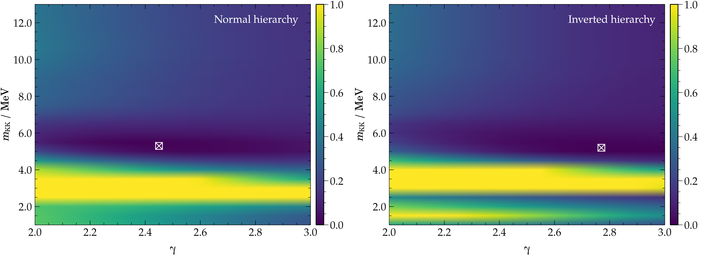
图注：Parameter space sensitivities for \(\zprn{n}\) mediated UHE $\nu$ flux attenuation in the case of neutrino masses arranged in a normal hierarchy (left) and an inverted hierarchy (right). Best-fits in each case are indicated by white crosses, but are largely degenerate between \( 2.2 \leq \gamma \leq 2.8 \) for the best-fit value of \(\mkk.\) The colour coding demonstrates the difference between the value of \( \chi^{2} \) at any specific point of the \( \lbrace m_{KK}, \gamma \rbrace \) parameter space and the \( \chi^{2}_\text{min} \) at the best-fit: \( \Delta\chi^2\qty(\mkk, \gamma) = \chi^2\qty(\mkk, \gamma) - \chi^2_\text{min} \). The region \( \SI{2.5}{\MeV} \leqslant \mkk \leqslant \SI{4.0}{\MeV} \) is disfavoured at more than \( 1\sigma \) level with respect to the best-fit for each hierarchy.
对应解读：对应“建议重点查看的图表”第5项和模型拟合段落：参数扫描、χ² 退化、\(m_KK\) 与源谱指数 γ 的联合约束。
入选理由：该图给出 \(m_KK\)–γ 参数空间中的 Δχ² 分布、最佳拟合点和被排斥区域，直接支撑日报中关于源谱指数与新物理参数退化、拟合强度以及参数空间是否宽泛的讨论。它比单个 benchmark 曲线更能体现模型是否存在调参问题。
来源与置信度：\(arxiv_source\)；high；\(arxiv_source\) / main.tex:figure[5]
Fig02
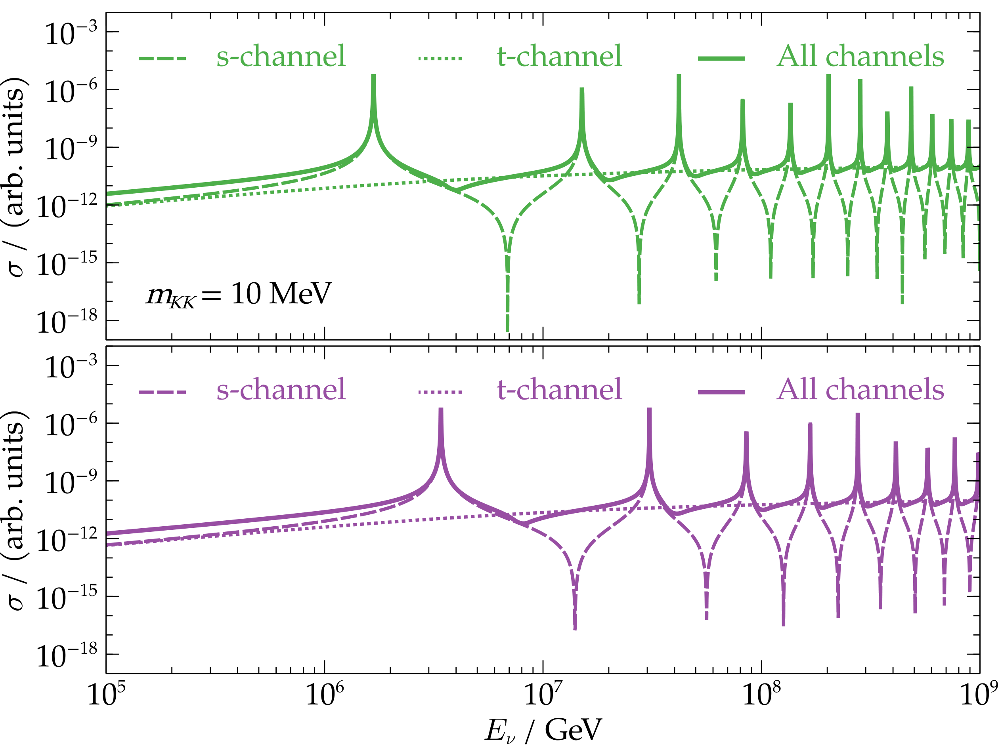
图注：Contributions to \( \nu\anti{\nu} \) scattering cross-section from $s$, $t$, and all channels combined --- $s$, $t$, \(\emph{and}\) $s$-$t$ interferences --- when using \( \mkk = \SI{10}{\MeV} \) for normal hierarchy (top) and inverted hierarchy (bottom). Final state spins have been summed over, and initial spins averaged to obtain a factor of \( 1/2 \). For each neutrino mass hierarchy, the lightest neutrino mass eigenstate is used as the \cnub\ target; \(\ie,\) \( m_{\nu_1} = \SI{29.8}{\meV} \) for NH and \( m_{\nu_3} = \SI{14.7}{\meV} \) for IH. The $s$-channel cross-section shows distinctive resonance peaks at \( \surd s = m_{\zprn{n}}\) as well as dips from the interference of $s$-channel amplitudes involving multiple \zprn{n}\ mediators. In the total cross-section, the $t$-channel cross-section without either of these effects largely wash out the interference dips from the $s$-channel interactions, leading to the distinctive nature demonstrated here. Note: We have set \( N_\text{KKmax} = 12 \), chosen to be large enough to demonstrate all resonant peaks up to the energy of \(\SI{e9}{\GeV}\) for the specific value of \mkk\ considered here.
对应解读：对应“建议重点查看的图表”第2项以及“关键图表逐图导读”图2：νν散射截面、s道共振、t道贡献和多媒介子干涉。
入选理由：该图明确分解了 s 道、t 道及总截面对入射能量的贡献，并展示多个 KK 模式导致的共振峰和干涉谷，是理解多媒介子模型为何能在宽能区增强吸收的基础图。它直接验证日报强调的峰宽、峰间距、峰外连续背景和通道贡献。
来源与置信度：\(arxiv_source\)；high；\(arxiv_source\) / main.tex:figure[2]
Fig03
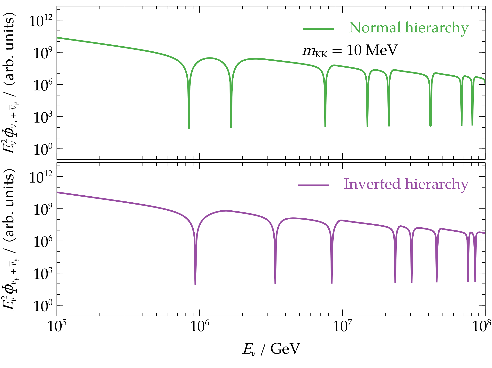
图注：Fluxes for the \( \nu_\mu + \bar{\nu}_{\mu} \) flavour at Earth, assuming \(\phi^\text{ini} \propto E^{-2.85}\)~[see Eq.~\(\eqref{eq:splflux}\)] injection with arbitrary normalisation (to be determined later by fitting to IceCube event rates) and allowing neutrino self-interactions while using normal (top) and inverted (bottom) hierarchies of neutrino masses. \(\mkk = \SI{10}{\MeV} \) has been used as a representative value of the mass of the lowest KK mode. Note that, for the injection flux, we have used the SM best-fit spectral index ($\gamma = 2.85$)~\(\cite{IceCube:2025cjy},\) \ie\ one obtained without allowing for light gauge boson mediated neutrino self-interactions. We use \( N_\text{KKmax} = 10 \), big enough to demonstrate repeated resonance peaks up to energies of \(\SI{e8}{\GeV}.\)
对应解读：对应“建议重点查看的图表”第3/4项以及“关键图表逐图导读”图3：传播后地球处 μ 味中微子通量和自相互作用导致的能量依赖衰减。
入选理由：该图展示给定注入谱后，正常/倒置质量层级下到达地球的 ν_μ+ν̄_μ 通量变化，可用于判断多重共振吸收是否在 IceCube 相关能区产生整体软化。虽然它不是直接的光深或生存概率图，也未直接叠加 IceCube 数据，但对连接截面物理与观测通量非常重要。
来源与置信度：\(arxiv_source\)；high；\(arxiv_source\) / main.tex:figure[3]
强相关工作
这篇工作属于“高能天体中微子与宇宙中微子背景的新相互作用吸收”这一类，与早期用 secret neutrino interaction 解释 IceCube \(\mathrm{PeV}\) 中微子谱缺口的文章直接相关。相同问题的常见关键词包括 “IceCube diffuse astrophysical neutrino spectrum”, “secret neutrino interactions”, “cosmic neutrino background attenuation”, “\({L_\mu-L_\tau}\) gauge boson neutrino self-interaction”, “Kaluza-Klein mediator neutrino absorption”。同类工作通常研究单个轻标量或矢量媒介子，而本文的新意是把额外维导致的多媒介子塔作为宽能段软化机制。
与基础理论相比，\({U(1)}_{L_\mu-L_\tau}\) 模型已有大量实验室和宇宙学约束文献，包括缪子相关实验、三叉产生、早期宇宙有效中微子数、宇宙微波背景中微子自由流和大尺度结构。与相反观点相比，IceCube 软谱也可以由源端物理解释，例如源族混合、最大加速能量分布、强磁场冷却、隐藏源内的强子级联或经验破裂幂律。因此检索时应同时查 “IceCube soft spectrum source population”, “diffuse neutrino broken power law”, “neutrino telescope effective area spectral fit”，避免把传播新物理当成唯一解释。
同一事件 / 同类源线索：
相似工作：
基础理论 / 方法工作：
相反观点 / 张力线索：
11. Spontaneous wandering of the magnetic axis in pulsars: 3D magneto-thermal simulations and the imprint on braking indices
- 来源：arXiv / astro-ph.HE
- 链接：https://arxiv.org/abs/2609.17436v1
- 作者：Clara Dehman, Daniele Viganò
- 评分：novelty 8/10，importance 7/10，relevance 8/10，final 8.65/10
- 推荐理由：3D磁热演化模拟解释脉冲星制动指数长期演化，涉及中子星磁场和计时观测；虽非伽马射线主题，但对致密星高能天体物理有较强相关性和方法新意。
中文题目：脉冲星磁轴的自发游走：三维磁热模拟及其在制动指数中的印记
做了什么：这篇论文用长期三维磁热演化模拟研究孤立中子星壳层磁场如何在欧姆耗散、霍尔重排以及早期额外小尺度场过程作用下改变外部偶极场强度和磁轴倾角。作者的核心问题是：为什么大量脉冲星测得的制动指数 \(n\) 并不等于纯磁偶极制动预期的 \(n=3\)，而且随特征年龄呈现早期偏小、中年偏大、晚期大幅波动的趋势。结果显示，如果初始磁场不是偶极主导，而是含有较强小尺度纠缠结构，偶极模会被小尺度磁能持续馈入或抽空，磁倾角也会在 \(\mathrm{kyr}\) 量级自发游走；这两者足以让 \(n-3\) 出现正负两种大偏离，特别是在 \(\tau_c\gtrsim10^5\,\mathrm{yr}\) 的阶段。
为什么重要：制动指数是把脉冲星计时观测和中子星内部磁场演化连接起来的少数直接诊断量之一。传统上，\(n\neq3\) 常被归因于磁场衰减、磁轴对齐、星风制动或磁层态变化，但很多解释把外部偶极场当作单调演化的低维参数。本文的重要性在于，它把三维壳层磁场的非线性霍尔级联和反级联纳入同一个演化问题，说明即便没有外部触发，内部小尺度磁场也能造成磁轴方向和偶极强度的非单调变化，从而在计时量中留下可观测印记。
理论 / 观测 / 仪器方法价值：对理论而言，本文把脉冲星制动指数从简单转动制动模型推进到三维磁热演化框架，强调初始磁场谱形比单一偶极强度更关键。对观测而言，它给出了一种解释老年脉冲星中大幅、正负皆可的 \(n-3\) 的物理机制，并提示制动指数样本不应只按年龄或表面偶极场分类，还应考虑计时残差、倾角演化和可能的磁层噪声。对方法而言，文章展示了如何把模拟输出的偶极模幅度和磁轴方向转化为可与 \(\dot{\nu}\)、\(\ddot{\nu}\) 推断的制动指数比较的诊断量。
为什么应该关注：如果你关心脉冲星年龄估计、磁场衰减、磁星与普通射电脉冲星之间的连续性，或者用计时数据约束中子星内部物理，这篇文章值得读。它提醒我们：观测到的 \(n\) 不是单纯的磁偶极公式偏差，而可能是壳层磁场三维结构、非线性霍尔动力学、磁层扭矩和超流内部耦合共同投影到转动频率上的结果。也就是说，制动指数不只是一个计时参数，而是内部磁拓扑的低维投影。
展开详细解读：文章讲解、背景、理论、重点章节、图表与相关工作
文章详细讲解
科学问题：理想真空磁偶极制动给出 \(n=3\)，但真实脉冲星的制动指数测量普遍不服从这个值。年轻对象常见 \(n<3\)，中等年龄对象可出现 \(n>3\)，更老的对象则有越来越大的正负波动。已有解释包括磁场随时间增长或衰减、磁轴与自转轴对齐、磁层电流变化、粒子风扭矩、超流涡旋耦合和计时噪声污染。本文抓住其中一个长期被简化的问题：如果中子星初始壳层磁场本来就是多尺度、非轴对称、纠缠的，那么外部可见的偶极分量和磁轴方向是否会自发改变，并直接影响 \(n\)。
作者怎么做：文章进行长期三维磁热模拟，比较从偶极主导到小尺度主导的多类初始磁场构型。磁场在壳层中通过欧姆耗散降低磁能，并通过非线性霍尔项在不同球谐尺度之间重分配能量。作者不只跟踪总磁能或表面偶极强度，而是特别提取外部偶极模、磁轴方向、磁倾角以及这些量的时间导数，再把它们代入自转制动表达式，分解出偶极场强变化、倾角变化和传统对齐扭矩对制动指数的贡献。
关键结果：偶极主导初始模型通常给出较平滑、较单调的演化，难以产生老年脉冲星中观测到的巨大 \(n-3\) 波动。相反，小尺度主导且初始偶极分量较弱的模型会产生丰富动力学：小尺度场可以通过霍尔重排向偶极模供能，使外部偶极增强并导致 \(n<3\)；也可以使偶极衰减并导致 \(n>3\)。磁轴方向并非固定，它会在 \(\mathcal{O}(\mathrm{kyr})\) 时间尺度上游走，倾角项常常超过传统磁轴对齐项，成为制动指数偏离 \(3\) 的主导来源。
局限和下一步：作者也明确指出，模型还不能逐个拟合观测制动指数和结构化计时残差。短期磁层态切换、等离子体载流区变化、超流耦合以及 glitch 后恢复都可能改变实际测得的 \(\ddot{\nu}\)，使其不完全等同于长期磁热演化信号。下一步需要把三维磁热模拟输出与真实计时样本做统计比较，区分长期趋势和短期噪声，并寻找最有希望的初始磁场谱形。
关键结果是怎么做出来的
本文的样本不是观测样本拟合，而是一组数值实验。作者构造从偶极主导到小尺度主导的初始壳层磁场谱，重点比较初始磁能在低阶球谐模与高阶球谐模之间的分配。每个模型随时间演化到与普通脉冲星特征年龄可比的阶段，并在每个时间步提取外部偶极强度、偶极轴方向和磁倾角。真正用于和观测制动指数对照的不是总磁能，而是这些低阶可见量及其时间导数。
证据链的核心是制动指数分解。由计时定义 \(n=\nu\ddot{\nu}/\dot{\nu}^2\)，若扭矩系数随时间变化，\(n\) 会偏离 \(3\)。作者把扭矩系数的变化拆成偶极磁矩大小变化、磁倾角变化以及对齐扭矩导致的几何演化。这样，模拟中的三维磁轴游走可以直接投影为 \(n-3\) 的一项，而不是只作为磁场图像上的定性现象。
最关键的结果应当由若干时间序列图支撑：不同初始谱形下的偶极场强 \(B_{\rm d}(t)\)、倾角 \(\chi(t)\)、各项对 \(n(t)\) 的贡献，以及总制动指数随特征年龄 \(\tau_c\) 的轨迹。文章摘要说明，小尺度主导模型能在 \(\tau_c\gtrsim10^5\,\mathrm{yr}\) 后产生正负皆可的大 \(n-3\)，而偶极主导模型不能。这种对照本身就是模型比较：同样的磁热方程，不同初始谱形导致完全不同的计时诊断量。
显著性在本文中主要不是观测统计的 \(\sigma\) 值，而是物理幅度比较：模拟产生的 \(n\) 偏离量级是否覆盖观测脉冲星分布，倾角项是否超过对齐项，偶极增长或衰减的时间尺度是否与计时推断时间尺度相容。读者应关注作者是否给出了观测制动指数点云或趋势带，并检查模拟轨迹是否只是偶然穿过数据，还是在相当长年龄区间内自然覆盖数据。
主要系统误差来自三方面。第一，三维磁热模拟的壳层电导率、温度演化、边界条件和初始谱形会影响霍尔重排效率。第二，从外部偶极和倾角到自转扭矩的映射依赖磁层扭矩模型，真空偶极、力自由磁层和含粒子风模型会给出不同几何因子。第三，观测的 \(\ddot{\nu}\) 常受计时噪声、glitch 恢复和磁层态切换影响，短基线测得的 \(n\) 未必代表长期磁热演化。稳健性检查应包括改变初始随机相位、改变小尺度谱斜率、比较不同扭矩公式、平滑不同时间窗口后的 \(n(t)\)。
展开背景、理论、公式、模型、章节和图表导读
背景知识
脉冲星通过电磁扭矩损失转动能，其自转频率 \(\nu\) 随时间下降。若外部磁场是固定倾角的纯偶极，并且扭矩只依赖 \(\nu^3\)，制动指数定义 \(n=\nu\ddot{\nu}/\dot{\nu}^2\) 应接近 \(3\)。然而真实数据长期显示偏离：不少年轻脉冲星 \(n<3\)，一些对象可能 \(n>3\)，老年对象中通过计时二阶导数得到的数值甚至非常大且波动。这一事实说明制动指数不是简单的“磁偶极是否正确”的二选一检验，而是多种慢变量和噪声源的合成诊断量。
中子星磁场并不只是外部可测的偶极分量。内部壳层可以储存强得多、尺度更小、拓扑更复杂的磁场。欧姆耗散会把电流热耗散掉，霍尔漂移本身不直接耗散磁能，但会把磁能在空间尺度之间搬运，产生电流片、小尺度结构和可能的反向级联。对于磁星和高磁场射电脉冲星，磁热演化已经是解释温度、爆发活动和磁场衰减的重要框架；本文则把同一框架用于解释普通脉冲星制动指数的系统趋势。
为什么现在值得重新看？一方面，脉冲星计时样本越来越大，制动指数不再只是少数年轻对象的特殊测量，而开始显示随特征年龄的统计趋势。另一方面，三维磁热模拟逐渐能够处理非轴对称、多尺度初始场，使研究者不必把磁场演化压缩为一个随时间单调衰减的偶极强度。再加上磁场埋藏后再浮现、早期手征磁效应等机制都可能在出生早期制造复杂小尺度结构，偶极主导初始条件显得过于理想化。
该领域常见误区之一是把 \(B_{\rm d}\propto(P\dot{P})^{1/2}\) 当成真实表面磁场的直接测量。这个估计依赖固定扭矩模型、固定倾角和固定惯量，实际上只是“等效偶极场”。误区之二是把 \(n\neq3\) 立即解释为磁场单调增长或衰减，而忽略倾角变化也能贡献同量级效应。误区之三是把大 \(n\) 全部归因于计时噪声；本文指出，内部磁场自发动力学本身也可产生长期大偏离，但要与短期磁层和超流效应区分。
基础理论 / 方法脉络
最基本的物理图像是转动中子星把转动能转化为电磁辐射、粒子风和磁层能流。若星体角频率为 \(\Omega\)，转动能为 \(E_{\rm rot}=I\Omega^2/2\)，扭矩 \(N\) 使 \(I\dot{\Omega}=N\)。在最简单磁偶极近似中，能量损失率与磁偶极矩平方、角频率四次方以及倾角函数成正比，因此 \(\dot{\Omega}\propto-\mu^2 f(\chi)\Omega^3\)。只要 \(\mu\) 和 \(\chi\) 不变，就有 \(n=3\)。
真实磁层中，真空偶极公式并不充分。力自由磁层模拟通常给出类似 \(f(\chi)\simeq1+\sin^2\chi\) 的几何因子，而不是真空公式中的 \(\sin^2\chi\)。另外，磁层电流、开磁通量和粒子产生效率会改变扭矩归一化。本文的重点不是重新模拟外部磁层，而是把内部磁热演化给出的 \(\mu(t)\) 和 \(\chi(t)\) 输入一个扭矩模型，研究它们对 \(n(t)\) 的长期贡献。
磁热演化的基础是壳层电子流体控制磁场冻结和漂移。欧姆项让磁场按电导率耗散，时间尺度大致随长度尺度平方增长；霍尔项是非线性平流项，特征速度由电流和电子数密度决定，能把能量从大尺度传到小尺度，也可在某些构型中把小尺度能量馈入大尺度偶极模。因而初始磁场谱形非常关键：同样总磁能，如果主要在高阶模中，外部偶极可以在后续演化中增强、减弱或改变方向。
观测上，制动指数由频率及其一阶、二阶导数得到。实际测量需要长时间基线，并且要处理 timing noise、glitch、星际介质色散变化和仪器系统差异。本文关注的长期 \(n\) 更接近对平滑演化的诊断，而观测目录中的瞬时或短基线 \(\ddot{\nu}\) 可能混入短期过程。因此把模拟曲线与数据比较时，需要考虑时间平滑窗口和选择效应。
主要退化关系包括：偶极强度增长与倾角增大都可使制动更快并导致 \(n<3\)；偶极衰减与倾角减小都可导致 \(n>3\)；磁层扭矩归一化变化也可模拟出类似效果。单凭 \(P\)、\(\dot{P}\)、\(\ddot{P}\) 很难唯一分解这些因素，必须结合偏振测倾角、脉冲轮廓演化、热辐射磁场图像或群体统计。
公式与推导
第一步从转动能守恒写起。设中子星转动惯量为 \(I\)，角频率为 \(\Omega=2\pi\nu\)，转动能为
若 \(I\) 近似常数，能量损失满足 \(\dot{E}_{\rm rot}=I\Omega\dot{\Omega}=N\Omega\)，其中 \(N\) 是外部电磁和粒子扭矩。这个式子定义了把内部磁场演化连接到计时观测的入口。
第二步采用类磁偶极扭矩。把外部偶极磁矩记为 \(\mu(t)\)，磁轴与自转轴夹角为 \(\chi(t)\)，几何因子为 \(f(\chi)\)，则可写成
这里 \(C\) 是与具体磁层模型有关的无量纲常数，\(c\) 是光速。真空偶极和力自由磁层的差别主要进入 \(C f(\chi)\)。
第三步由计时定义制动指数。使用
并对 \(\dot{\Omega}=-K\Omega^3\) 求导，可得
由于 \(\dot{\Omega}<0\)，若 \(K\) 随时间增大，则通常得到 \(n<3\)；若 \(K\) 衰减，则得到 \(n>3\)。
第四步把 \(K\) 的变化分解为磁矩和倾角贡献：
最后一项可代表额外磁层态、开磁通量或粒子风归一化变化；在本文的磁热解释中，重点是前两项。若采用力自由近似 \(f(\chi)=1+\sin^2\chi\)，则
这说明中等倾角时，微小 \(\dot{\chi}\) 也能显著改变制动指数。
第五步引入特征年龄。观测常用
其中 \(P=1/\nu\)。把上一式代入可写出一个直观标度：
这个表达式解释了为什么老年脉冲星对缓慢磁轴游走特别敏感：同样的相对变化率会被较大的 \(\tau_c\) 放大。
第六步连接到壳层磁热方程。磁场演化可概括为
其中 \(\eta=c^2/(4\pi\sigma)\) 是磁扩散率，\(\sigma\) 是电导率，\(e\) 是元电荷，\(n_e\) 是电子数密度。第一项是欧姆耗散，第二项是霍尔漂移。本文三维模拟的关键就在于这个非线性霍尔项可以把小尺度磁能重新分配到偶极模。
第七步用球谐分解提取外部偶极。表面径向磁场可写为
其中 \(R\) 是星半径，\(Y_{\ell m}\) 是球谐函数。外部制动主要由 \(\ell=1\) 的系数决定，偶极轴方向由 \(b_{1m}\) 的三维组合给出。小尺度主导初始条件意味着较多能量起初位于较高 \(\ell\) 模。
第八步把谱能量与演化时间尺度联系起来。尺度 \(L\) 上的欧姆时间和霍尔时间可估为
小尺度 \(L\) 较短，因此更易快速演化；强磁场 \(B\) 会缩短霍尔时间。这个标度说明为什么小尺度强场能在 \(\mathrm{kyr}\) 到 \(\mathrm{Myr}\) 区间持续扰动外部偶极和磁轴。
第九步若要与观测拟合，可写成残差或似然形式。给定观测 \(n_i\)、不确定度 \(\sigma_i\) 和模型 \(n_{\rm mod}(\tau_{c,i};\Theta)\)，最简单的高斯统计量为
这里 \(\Theta\) 表示初始磁场谱、总磁能、壳层物性和扭矩模型参数，\(\sigma_{\rm sys}\) 表示计时噪声和模型系统误差。本文更偏物理探索，但这个式子给出未来群体比较的自然路径。
模型拟合 / 应用方法
本文主要是数值模型比较，而不是对单个脉冲星进行贝叶斯拟合。可拟合或可比较的量包括 \(B_{\rm d}(t)\)、\(\chi(t)\)、\(\dot{B}_{\rm d}(t)\)、\(\dot{\chi}(t)\)、合成制动指数 \(n(t)\) 以及它们随 \(\tau_c\) 的分布。模型参数包括初始总磁能、偶极模能量占比、小尺度谱斜率、非轴对称相位、壳层电导率、温度演化和边界条件。最重要的不是某个时刻的 \(n\)，而是模型轨迹是否能覆盖观测趋势的年龄范围和符号变化。
若把这类模型用于观测样本，可采用分层统计。每颗脉冲星有未知真实年龄、初始自转周期、磁倾角和磁场谱参数；观测给出 \(P\)、\(\dot{P}\)、\(\ddot{P}\)、可能的偏振倾角和计时噪声指标。似然可以包含 \(n\) 的测量误差，也应加入额外散布项来描述磁层态变化或 glitch 恢复。否则短期 \(\ddot{\nu}\) 会迫使长期磁热模型去拟合不该拟合的噪声。
残差诊断很关键。如果模型能匹配 \(n\) 的总体幅度却系统性错过 \(P-\dot{P}\) 分布、热光度或脉冲轮廓演化，那说明初始磁场谱或扭矩映射有问题。若残差随 \(\tau_c\) 呈结构化趋势，例如年轻段总是低估 \(n<3\) 或老年段只产生正偏离，则需要引入额外机制，如埋藏磁场再浮现、早期手征磁效应、磁层电流长期变化或超流内部耦合。
参数退化主要有三类。第一，较强小尺度初始场与较低电导率都能增强早期演化速率，但物理含义不同。第二，偶极模增长和倾角增大都能使 \(K\) 增大并导致 \(n<3\)，单靠计时无法区分。第三，磁层几何因子 \(f(\chi)\) 的选择会改变倾角项权重，因此同一 \(\dot{\chi}\) 在不同扭矩模型下对应不同 \(n\)。偏振测量和脉冲轮廓长期变化可帮助打破第二、第三类退化。
模型可能失败的场景也应认真看待。若观测 \(n\) 在很短时间内发生跳变，或与 glitch 恢复强相关，磁热演化的 \(\mathrm{kyr}\) 尺度机制就不是主因。若某些老年脉冲星的 \(n\) 值来自低信噪比 \(\ddot{\nu}\) 或未经充分噪声建模的计时解，它们不应被当作强约束。实际应用中，最好把本文模型视为长期基线，再叠加短期磁层和内部流体过程。
重点章节 / 结果段落怎么读
数据/问题设定部分：读者应先看作者如何整理制动指数的观测趋势，尤其是 \(n<3\)、\(n>3\) 和大年龄波动分别出现在哪些 \(\tau_c\) 区间。这里要注意作者是否区分了可靠制动指数、受 timing noise 影响的二阶导数和可能的短期扭矩事件。
方法部分：重点看三维磁热方程、壳层物性、边界条件和初始磁场构型。本文的关键不是“做了三维模拟”本身，而是初始磁能如何在偶极模和高阶小尺度模之间分配。读者应检查模型命名中哪些是偶极主导，哪些是小尺度主导，以及总磁能是否可比。
诊断量构造部分：要看作者如何从模拟磁场中提取外部偶极强度和磁轴方向，如何定义倾角 \(\chi\)，以及如何把 \(\mu(t)\) 和 \(\chi(t)\) 代入制动指数公式。这个步骤决定了磁热模拟是否真的能与计时观测对应，而不是只展示漂亮的磁场结构图。
主结果部分：重点读不同初始谱形的 \(B_{\rm d}(t)\)、\(\chi(t)\)、\(n(t)\) 对照。若小尺度主导模型显示偶极增长、衰减和磁轴游走，并且这些变化在 \(\tau_c\gtrsim10^5\,\mathrm{yr}\) 产生大 \(n-3\)，这就是全文最核心的证据。
讨论和局限部分：应关注作者如何处理磁层短期波动、超流驱动扭矩变化、计时残差结构和观测选择效应。好的读法是把本文视为“长期内部磁场贡献”的模型，而不是排除所有其他 \(n\neq3\) 机制的宣称。
建议重点查看的图表
-
初始磁场谱或表面磁场图：看磁能在不同球谐阶数 \(\ell\) 上的分布，确认哪些模型是偶极主导，哪些是小尺度主导。
-
磁能和偶极强度随时间演化图：重点看总磁能是否单调下降，而外部偶极 \(B_{\rm d}\) 是否可以非单调增长或衰减；这能区分欧姆耗散和霍尔重排的角色。
-
磁轴方向或倾角 \(\chi(t)\) 时间序列：看是否存在 \(\mathrm{kyr}\) 量级游走，以及游走幅度是否足以改变扭矩几何因子。
-
制动指数贡献分解图：分别检查偶极强度项、倾角项、对齐项和总 \(n-3\)。最关键的问题是倾角自发变化是否真的超过传统对齐贡献。
-
\(n\) 对 \(\tau_c\) 的模拟轨迹与观测点对比：看小尺度主导模型是否覆盖 \(n<3\)、\(n>3\) 和老年大波动，而偶极主导模型是否明显不足。
-
稳健性或模型族比较表：检查改变初始谱形、随机相位、总磁能或壳层参数后，结论是否仍成立。
-
计时残差或短期波动讨论图表：若有，应看作者如何说明长期磁热信号与短期磁层或超流扰动不能简单混为一谈。
关键图表逐图导读
图 1：通常应是初始磁场构型或谱分布图。横轴可能是球谐阶数 \(\ell\) 或空间位置，纵轴可能是磁能份额或磁场强度。读图时要确认偶极主导模型的能量集中在 \(\ell=1\)，而小尺度主导模型在较高 \(\ell\) 有大量能量。陷阱是不要只看表面最大磁场；外部制动主要感受到低阶偶极模。
图 2：可能展示不同模型的磁场随时间演化，坐标轴通常为时间和磁能或 \(B_{\rm d}\)。模型线若显示总能量下降而 \(B_{\rm d}\) 上升，说明霍尔重排把不可见小尺度能量馈入可见偶极模。读图陷阱是把偶极增强误解为总磁能增加；实际上总磁能仍可因欧姆项耗散。
图 3：应重点寻找磁倾角 \(\chi(t)\) 或磁轴轨迹图。横轴为时间或 \(\tau_c\)，纵轴为 \(\chi\)，也可能用球面投影显示磁轴方向。若曲线在 \(\mathrm{kyr}\) 尺度上出现非周期性摆动，说明磁轴游走不是外加扰动，而是三维内部场自然演化。陷阱是倾角变化对扭矩的影响取决于 \(f(\chi)\) 的导数，中等倾角最敏感。
图 4：制动指数分解图最值得细看。横轴通常为年龄或 \(\tau_c\)，纵轴为 \(n\) 或 \(n-3\)，不同颜色代表偶极强度项、倾角项、对齐项和总和。若倾角项幅度经常大于对齐项，本文关于“自发磁轴游走主导制动指数”的结论才站得住。读图时要看正负号：\(K\) 增长对应 \(n<3\)，\(K\) 下降对应 \(n>3\)。
图 5：模拟轨迹与观测制动指数分布的比较图可能是全文结论图。横轴为 \(\tau_c\)，纵轴为 \(n\) 或 \(n-3\)，观测点带误差条，模型为多条曲线或阴影带。读图要看覆盖的是趋势还是单个离群点；如果模型只在极短时间尖峰穿过观测点，解释力弱于在宽时间区间覆盖点云。
图 6：若有稳健性图或参数扫描表，应看不同初始谱斜率、偶极能量占比和随机相位是否都能产生类似现象。陷阱是把一个精心挑选的初始条件当成通用机制；真正稳健的结论应在一族小尺度主导模型中反复出现。
论文原图 / 可嵌入图片
Fig05
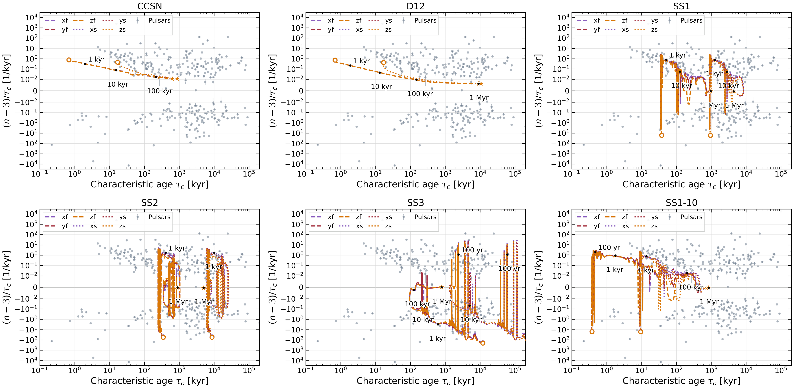
图注：Synthetic de-trended braking index, $(n-3)/\tau_c=-(1/\tau_{\alpha_i}+1/\tau_{\alpha_e}+1/\tau_B)$, as a function of the characteristic age, for the \(\CCSN,\) \(\texttt{D12},\) \(\texttt{SS1},\) \(\texttt{SS2},\) \(\texttt{SS3}\) and \(\texttt{SS1-10}\) models (left to right, top to bottom), computed for the different geometries $i$ (colours as in the previous figures) and initial periods $P_0^f$ (dashes) and $P_0^s$ (dots). Open circles mark $t=0$ and stars the end of each track, along which selected ages are labelled. To allow all tracks to be compared in the same plot, the characteristic age is computed from the $P(t)$ evolution that includes $\alpha_e(t)$; using $\alpha_i(t)$ instead produces only minor differences. The scale is linear in the range $[-10^{-2},10^{-2}]$ and logarithmic outside it. Grey points with error bars are the observed pulsars of our sample (Sect.~\ref{sec: Timing}).
对应解读：“建议重点查看的图表”第5项，以及“关键图表逐图导读”中关于模拟轨迹与观测制动指数分布对比的核心结论图。
入选理由：这张图直接把合成的去趋势制动指数 $(n-3)/\tau_c$ 与特征年龄 $\tau_c$ 及观测样本误差条放在一起，是判断小尺度主导模型是否能覆盖 $n<3$、$n>3$ 和老年大幅波动的最关键证据。它同时比较 CCSN、D12、SS1、SS2、SS3、SS1-10 等多类模型，科学信息量最高。
来源与置信度：\(arxiv_source\)；high；\(arxiv_source\) / pulsars.tex:figure[5]
Fig04
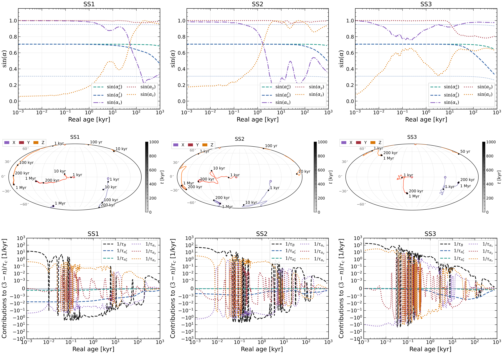
图注：Time evolution of $\sin\alpha$ (\emph{top}), map of the dipolar-axis drift (\emph{middle}), and contributions to $(3-n)/\tau_c$ (\emph{bottom}), for the \(\texttt{SS1}\) (\emph{left}), \(\texttt{SS2}\) (\emph{centre}) and \(\texttt{SS3}\) (\emph{right}) runs. Colours and line styles are as in Figs.~\(\ref{fig: CC evol}\) and~\(\ref{fig: braking index CC}.\) Selected ages are marked along the tracks in the middle panels.
对应解读：“建议重点查看的图表”第3、4项，以及“关键图表逐图导读”中关于磁倾角游走和制动指数贡献分解的部分。
入选理由：这张图集中展示 SS1、SS2、SS3 小尺度主导模型的 $\sin\alpha$ 时间演化、偶极轴在天球上的漂移轨迹，以及 $(3-n)/\tau_c$ 的各项贡献。它最直接支撑本文核心说法：小尺度场驱动的自发磁轴游走可在 kyr 量级改变倾角，并显著影响制动指数。
来源与置信度：\(arxiv_source\)；high；\(arxiv_source\) / pulsars.tex:figure[4]
Fig07
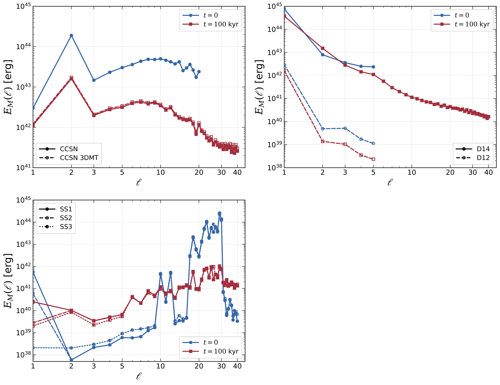
图注：Magnetic energy spectrum $E_M(\ell)$ at $t=0$ (blue circles) and $t=10^{5}$~yr (red squares) for different models. \(\emph{Left:}\) \(\CCSN\) (solid) and \(\texttt{CCSN-3DMT}\) (dashed). \(\emph{Middle:}\) \(\texttt{D14}\) (solid) and \(\texttt{D12}\) (dashed). \(\emph{Right:}\) \(\texttt{SS1}\) (solid), \(\texttt{SS2}\) (dashed) and \(\texttt{SS3}\) (dotted). Modes with $E_M<10^{38}$~erg are not shown. Note the different $y$-scales.
对应解读：“建议重点查看的图表”第1项，以及“关键图表逐图导读”中关于初始磁场谱和不同模型族区分的说明。
入选理由：这张图给出不同模型在 $t=0$ 与 $10^5$ yr 的磁能谱 $E_M(\ell)$，能清楚区分偶极主导、D12/D14 以及 SS1–SS3 等小尺度主导构型。它是理解后续偶极增强、衰减和磁轴游走差异的初始条件基础。
来源与置信度：\(arxiv_source\)；high；\(arxiv_source\) / pulsars.tex:figure[7]
Fig03
图注：Evolution of the contributions to the de-trended braking index for the \(\CCSN\) (\emph{left}) and \(\texttt{CCSN-3DMT}\) (\emph{right}) models: $1/\tau_B$ (black dashed), $1/\tau_{\alpha_i}$ (purple, red and orange dotted for $i=x,y,z$), and $1/\tau_{\alpha_e}$ for a fast ($P_0^f=10$~ms, blue dashes, thick and thin as in Fig.~\ref{fig: CC evol}) and a slow ($P_0^s=50$~ms, cyan dashes) rotator. The $y$-scale is linear within $[-10^{-3},10^{-3}]$ and logarithmic outside.
对应解读：“建议重点查看的图表”第4项，以及“关键图表逐图导读”中关于制动指数贡献分解的段落。
入选理由：这张图把 CCSN 与 CCSN-3DMT 模型中的 $1/\tau_B$、$1/\tau_{\alpha_i}$ 和 $1/\tau_{\alpha_e}$ 分开展示，可直接检查偶极强度变化、内部磁轴漂移和传统对齐项各自对去趋势制动指数的贡献。它适合用来说明倾角项何时能超过对齐项。
来源与置信度：\(arxiv_source\)；high；\(arxiv_source\) / pulsars.tex:figure[3]
Fig02
图注：Obliquity evolution in the \(\CCSN\) (\emph{left}) and \(\texttt{CCSN-3DMT}\) (\emph{right}) models. \(\emph{Top}\): evolution of $\sin\alpha$ driven either by alignment (blue dashes for $P_0^f=10$~ms, thick for $\alpha_{e,0}=\pi/4$, thin for $\alpha_{e,0}=0.1\pi$ and $0.4\pi$; cyan dashes for $P_0^s=50$~ms) or by spontaneous drift, for the three choices of initial dipolar-axis direction along $x$, $y$ and $z$ (purple dash-dotted, red dotted and orange dotted). \(\emph{Bottom}\): Mollweide projection of the dipolar-axis trajectory for the same three choices. The spin axis is directed north--south ($z$-axis in this frame), and the original simulation frame is rotated so that the initial dipolar moment points towards $x$ (equator, central longitude, purple), $y$ (equator, centre-east, red) or $z$ (north, orange). The latitudinal distance of the dipolar axis from the north pole is $\alpha_i$, whose sine is plotted in the top panels. Within each track, colour darkens with age, spanning the range indicated by the grey colour bar shared by the three tracks. The circle marks $t=0$ and the star the end of the simulation.
对应解读：“建议重点查看的图表”第3项，以及“关键图表逐图导读”中关于磁轴方向或倾角 $\chi(t)$ 时间序列的部分。
入选理由：这张图同时给出 $\sin\alpha$ 随时间的演化和偶极轴 Mollweide 投影轨迹，能直观看到 CCSN 与 CCSN-3DMT 中磁轴是否发生自发漂移，以及这种漂移相对于传统对齐演化的幅度。它是解释“磁轴游走”这一物理图像的最佳可视化之一。
来源与置信度：\(arxiv_source\)；high；\(arxiv_source\) / pulsars.tex:figure[2]
Fig10
图注：Same as Fig.~\(\ref{fig: Bdip tau P CC},\) for the and {\(\tt\) SS1} ({\(\em\) top}) and \(\texttt{SS1-10}\) ({\(\em\) bottom}) models, with $P_0^f=10$~ms (\emph{left}) and $P_0^s=50$~ms (\emph{right}).
对应解读：“建议重点查看的图表”第2项，以及模型比较段落中关于 $B_{\rm d}(t)$、自转演化和特征年龄偏差的讨论。
入选理由：这张图展示 SS1 和 SS1-10 小尺度主导模型的偶极场 $B_d/B_d^{\rm in}$、周期 $P/P_0$ 以及 $\tau_c/t$ 演化，能检验外部偶极是否可非单调变化，以及特征年龄是否偏离真实年龄。它补足了制动指数图之外关于磁偶极强度演化的关键诊断。
来源与置信度：\(arxiv_source\)；high；\(arxiv_source\) / pulsars.tex:figure[10]
强相关工作
这项工作与脉冲星制动指数的经典问题直接相连。早期理论把 \(n=3\) 视为磁偶极辐射的自然结果，后续观测发现 Crab、Vela、PSR B1509-58 等年轻脉冲星的 \(n\) 多数小于 \(3\)，促使研究者引入磁场增长、磁轴演化、粒子风和磁层电流变化。可检索关键词包括 “pulsar braking index observations”、“Crab pulsar braking index”、“Vela braking index”、“magnetospheric torque braking index”。
本文更接近磁热演化和磁场拓扑研究传统。相关工作包括中子星壳层霍尔漂移、磁星磁热演化、埋藏磁场再浮现以及小尺度磁场对外部偶极的影响。检索关键词包括 “neutron star magneto-thermal evolution”、“Hall drift crust magnetic field”、“magnetic field burial re-emergence pulsars”、“3D Hall magnetothermal simulations”。与本文可能形成张力的观点是：很多测得的大 \(n\) 主要由计时噪声、glitch 恢复或磁层态切换造成，而非长期磁热演化。因此读者应同时查找 “timing noise braking index”、“glitch recovery braking index” 和 “pulsar state switching torque”。
同一事件 / 同类源线索：
相似工作：
基础理论 / 方法工作：
- https://ui.adsabs.harvard.edu/abs/1969ApJ...157..869O/abstract
- https://ui.adsabs.harvard.edu/abs/1983Natur.303..202L/abstract
- https://ui.adsabs.harvard.edu/abs/2006MNRAS.368L..30S/abstract
相反观点 / 张力线索：
12. Radiation Pressure Instability-Driven Variability of Line-Driven Disk Winds in AGNs: Connection to Periodic Luminosity Variations and UFO Appearance
- 来源：arXiv / astro-ph.HE
- 链接：https://arxiv.org/abs/2609.16636v1
- 作者：Yutaro Kuroda, Ken Ohsuga, Mariko Nomura, Kenya Watarai
- 评分：novelty 8/10，importance 7/10，relevance 8/10，final 8.65/10
- 推荐理由：首次自洽耦合一维吸积盘不稳定性与二维线驱动AGN盘风模拟，用于解释UFO随AGN光变的延迟和间歇探测；与AGN高能吸积/外流物理相关，虽非伽马射线主题但有明确HE价值。
中文题目：辐射压不稳定性驱动的活动星系核线驱动盘风变率：与周期性光变和超高速外流出现的联系
做了什么：这篇论文把活动星系核吸积盘的辐射压不稳定性和线驱动盘风的二维辐射流体演化接起来，研究一个随时间周期性变亮、变暗的超大质量黑洞吸积盘会如何改变超高速外流（UFO）的质量外流率、覆盖因子和可观测视角。作者先用一维盘流体模拟产生光度振荡，再把该时间依赖辐射场输入二维线驱动风模拟。核心结论是：UFO 的出现并不与瞬时光度一一对应，而会相对光度变化滞后约数年；在给定模型中，质量外流率相对光变延迟约 \(2\)--\(5\,\mathrm{yr}\)，UFO 覆盖因子可在高光度到衰减阶段达到约 \(30\%\)。这提供了一个解释：为什么一些变光 AGN 在高光度时未必看到 UFO，而在较低光度时反而能看到 UFO。
为什么重要：AGN UFO 常被用来估计黑洞反馈的动能通量，但观测上 UFO 的出现很间歇，同一源在不同历元的吸收线有时出现、有时消失。若把这种间歇性简单解释为风本身开关或观测噪声，会影响对反馈占空比和能量预算的判断。本文的重要性在于，它提出并数值展示了一条物理链条：内盘辐射压不稳定性造成光度周期振荡，风基区在黏滞时间尺度后响应，进而改变可见的 UFO 视角和覆盖因子。因此，UFO 探测概率要看历史光变、视角和风传播延迟，而不只是当前 X 射线或紫外光度。
理论 / 观测 / 仪器方法价值：理论上，这项工作把过去常分开处理的两个问题——吸积盘热黏滞不稳定和线驱动盘风——做了时间依赖耦合，是理解 AGN 多年尺度风变率的一步。观测上，它给出了可检验的预言：UFO 吸收线强度、覆盖因子和质量外流率应相对连续谱光变存在 \(\mathrm{yr}\) 量级滞后，且不同倾角源会表现出不同的光度—UFO 对应关系。方法上，论文展示了如何用一维盘模拟提供边界条件，再用二维辐射流体计算风响应，为后续更完整的多维辐射磁流体模型提供了基准。
为什么应该关注：如果你关心 AGN 反馈、UFO 动能预算、变光类星体或窄线 Seyfert \(1\) 星系，这篇文章值得看，因为它提醒我们：一次 X 射线谱观测中有没有 UFO，未必能直接说明风是否存在，也未必能直接反推瞬时吸积率。它还给长期监测设计提供了物理依据：要捕捉 UFO 与光变的因果关系，需要多年基线、多波段连续谱和重复高分辨率 X 射线光谱，而不是只在亮态触发一次观测。
展开详细解读：文章讲解、背景、理论、重点章节、图表与相关工作
文章详细讲解
科学问题：AGN 中的 UFO 通常通过蓝移的高电离铁吸收线识别，速度可达 \(0.03c\)--\(0.3c\) 甚至更高。线驱动盘风模型可以自然给出高速外流，但观测上一个麻烦事实是：UFO 并不总是在高光度状态出现，也会在看似较低光度时被探测到。若风的形成仅由瞬时辐射光度控制，这种行为不好解释。本文要回答的是：如果内吸积盘本身因辐射压不稳定而发生周期性光度振荡，外层线驱动风会怎样滞后响应？这种滞后能否解释 UFO 探测的间歇性？
作者怎么做：论文采用分步但自洽的耦合策略。第一步是一维径向吸积盘流体模拟，计算辐射压主导盘在给定黑洞质量、供给率、黏滞参数和黏滞处方下的时间依赖光度。第二步把得到的随时间变化的辐射输出作为二维辐射流体风模拟的输入，求解线力推动下的密度、速度、电离状态和外流几何。这里的重点不是静态风结构，而是风基区受到周期性辐射驱动后，质量外流率和 UFO 可观测区域如何随时间演化。
关键结果：在论文给出的代表性模型中，黑洞质量约为 \(10^{7.4}M_\odot\)，外部供给率设为 \(1.3L_{\rm Edd}/c^2\)，特征半径约 \(100R_{\rm S}\)，黏滞参数为 \(\alpha=0.1\)，黏滞处方参数为 \(\mu=0.45\)。吸积盘光度发生周期性变化后，风的质量外流率不是立即同步变化，而是相对光度峰值延迟约 \(2\)--\(5\,\mathrm{yr}\)。可被识别为 UFO 的气体覆盖因子也随时间变化，并在高光度阶段到衰减阶段之间达到约 \(30\%\) 的最大值。换言之，UFO 最容易被看到的时刻可能不是连续谱最亮的时刻。
更具体地说，论文强调了视角效应。线驱动风并不是球对称外流，而是有角向结构：有些倾角会穿过高电离、高速、柱密度足够的气体，有些倾角则不会。随着盘风结构对光度振荡作出响应，满足 UFO 识别条件的倾角范围会移动、变宽或变窄。因此，即使源处在高光度态，若观测视线没有穿过合适的风区，也可能看不到 UFO；反过来，在光度下降后，由于风结构滞后，某些视线仍可能看到 UFO。
局限和下一步：这仍是分步耦合的一维盘加二维风模型，不是完整三维全局辐射磁流体模拟。磁场、盘冕 X 射线照射、真实谱能量分布的变化、金属丰度、云团化和热不稳定等因素都可能改变线力和电离结构。论文的延迟时间和覆盖因子也依赖所选黑洞质量、半径、黏滞参数和供给率。下一步最自然的是建立一组参数扫描，并把模拟输出转换成合成 X 射线吸收线谱，与具有多历元光谱的 UFO AGN 逐源比较。
关键结果是怎么做出来的
本文最重要的证据链从样本意义上说不是一个观测样本，而是一组时间依赖数值实验。作者选取代表性 AGN 参数：\(M_{\rm BH}=10^{7.4}M_\odot\)、外部供给率 \(\dot{M}_{\rm sup}=1.3L_{\rm Edd}/c^2\)、特征盘半径约 \(100R_{\rm S}\)、\(\alpha=0.1\)、\(\mu=0.45\)。一维盘模拟先给出由辐射压不稳定导致的周期性光度曲线，这条曲线随后作为二维线驱动风计算的时间依赖输入。因而，结果的“事件数”不是离散天体个数，而是多个光变周期和对应风响应时序。
核心可观测量包括质量外流率、满足 UFO 条件的覆盖因子、以及随时间变化的可观测倾角范围。作者把 UFO 判据落实到气体速度、电离状态和柱密度等物理量上：只有当视线穿过足够高速、足够高电离且吸收柱足以产生可识别蓝移吸收线的区域时，该视角才算能看到 UFO。这样，覆盖因子不是几何开角的任意定义，而是与观测识别条件相关的角向积分量。
显著性在这类模拟论文中不是通过观测样本的 \(p\) 值给出，而是通过因果时序和稳健的相位关系体现。作者比较光度曲线、质量外流率曲线和 UFO 覆盖因子曲线，发现质量外流率相对光度变化系统性滞后约 \(2\)--\(5\,\mathrm{yr}\)。这个滞后量级与风基区附近的黏滞或流体响应时间相当，而不是数值噪声造成的单步抖动。读者应重点检查论文中光度、\(\dot{M}_{\rm out}\) 和覆盖因子随时间叠加的图，以及标注高光度、下降相和低光度阶段的相位关系。
模型比较的关键不是“有风”和“无风”的静态差异，而是“瞬时光度控制风”与“历史光变加延迟响应控制风”的差异。如果只按瞬时光度判断，UFO 应更多出现在亮态；但模拟显示，覆盖因子最大值可跨越高光度到衰减阶段，且在低于峰值光度时仍可能较大。这一点直接对应观测中 UFO 探测与亮态不完全同步的现象。支撑这一结论的图表应包括角向分布图、时间序列图、以及不同历元的密度/速度/电离结构快照。
主要系统误差来自线力计算、电离参数估计和边界条件。线驱动对紫外通量、X 射线过电离屏蔽和金属线表非常敏感；若谱能量分布随光度变化方式不同，线力响应也会变化。二维轴对称还可能压制真实三维湍动和非轴对称团块，使覆盖因子估计偏平滑。论文的稳健性检验应主要看：改变时间采样或风基区条件后滞后是否仍存在；UFO 判据稍作改变后覆盖因子的相位行为是否仍保留；以及外边界处质量外流率是否已经达到准稳定传播状态。
展开背景、理论、公式、模型、章节和图表导读
背景知识
研究对象是 AGN 吸积盘及其高速盘风。UFO 是 X 射线光谱中常见但并非普遍出现的高速蓝移吸收成分，通常与高电离铁的 \(\mathrm{Fe\,XXV}\) 或 \(\mathrm{Fe\,XXVI}\) 吸收有关。它们被重视，是因为若外流率和速度足够大，其动能功率可达到 AGN 辐射光度的非忽略比例，从而可能参与星系尺度反馈。
历史上，AGN 风的驱动机制主要包括热驱动、辐射线驱动、连续谱辐射压驱动和磁离心/磁压驱动。线驱动在恒星风理论中很成熟，移植到 AGN 盘风时也有吸引力，因为盘的紫外辐射可以通过大量金属线放大辐射力。不过 AGN 环境有强 X 射线照射，气体过度电离后线吸收会失效，因此屏蔽、谱能量分布和风几何一直是关键难题。
另一个背景是辐射压不稳定性。标准薄盘在内区辐射压占优时可能出现热黏滞不稳定，导致吸积率和光度的极限环振荡。这一机制常被用于解释某些 X 射线双星和 AGN 的长时标变光。对于超大质量黑洞，相关时间尺度可从年到千年不等，取决于黑洞质量、半径和黏滞参数。
为什么现在值得重新看？一方面，多历元 XMM-Newton、Suzaku、NuSTAR、Chandra 以及未来 XRISM、Athena 的高分辨率光谱使 UFO 的时间变化成为可研究对象；另一方面，大规模时域巡天揭示了更多变光 AGN 和 changing-look AGN。把风变率与历史光变连接起来，可以让 UFO 研究从单历元“有没有吸收线”转向时间域因果检验。
该领域常见误区有两个。第一，把 UFO 探测率直接等同于风的真实占空比；实际上探测率还受倾角、柱密度、电离状态、谱信噪比和时间延迟影响。第二，把高光度等同于更容易看见线驱动风；但过强的 X 射线可能过电离，且风结构有有限响应时间，所以瞬时光度并不是唯一控制量。本文正是围绕这些误区给出物理解释。
基础理论 / 方法脉络
从物理图像看，线驱动盘风需要两个条件：有足够强的辐射场提供动量，以及气体中保留足够多的束缚—束缚跃迁来吸收紫外光子。如果气体被 X 射线过度电离，金属线消失，线力会显著下降。因此，风的强弱同时取决于光度、谱能量分布、密度、电离参数和几何屏蔽。
吸积盘辐射压不稳定性来自热平衡和黏滞应力的耦合。在辐射压占优区域，若黏滞加热对温度或压强的响应比辐射冷却更陡，小扰动会被放大，盘在高温高光度态和低温低光度态之间循环。对于 AGN，内盘的这种变化可通过辐射传到更外层的风发射区，但风本身的密度和速度结构需要有限时间调整。
本文的模型假设可以概括为：一维盘模拟负责产生中心辐射光度 \(L(t)\) 的时间序列；二维轴对称辐射流体模拟在这个时间依赖辐射场下演化风。风的关键诊断量包括质量外流率 \(\dot{M}_{\rm out}(t)\)、速度场 \(v_r(r,\theta,t)\)、密度 \(\rho(r,\theta,t)\)、电离参数 \(\xi(r,\theta,t)\)、视线柱密度 \(N_{\rm H}(\theta,t)\) 和 UFO 覆盖因子 \(C_{\rm f,UFO}(t)\)。
观测对应关系并不简单。X 射线谱中能否看到 UFO 取决于沿视线积分后的吸收线光学深度和蓝移速度，而不是局部是否有高速气体。若同一视线上的气体过电离，或柱密度不足，或速度投影不够大，就可能没有可识别吸收线。因而论文把“UFO appearance”理解为满足若干物理判据的角向范围，而不是只看风是否被发射。
常见退化关系包括光度与电离的退化、密度与柱密度的退化、倾角与速度投影的退化，以及历史光变与瞬时状态的退化。比如更高光度既能增强辐射力，也会提高 \(\xi\) 并削弱线力；更大柱密度既增强吸收，也可能意味着更强屏蔽。本文的时间依赖模拟价值就在于，它把这些量放在同一动力学框架中演化，而不是用静态参数扫描单独调节。
公式与推导
第一步从黑洞尺度和 Eddington 标度开始。Eddington 光度由辐射力与引力对电子散射的平衡给出：
其中 \(G\) 是引力常数，\(M_{\rm BH}\) 是黑洞质量，\(m_p\) 是质子质量，\(c\) 是光速，\(\sigma_{\rm T}\) 是 Thomson 截面。本文用 \(L_{\rm Edd}\) 和 \(L_{\rm Edd}/c^2\) 标定光度与供给率，因此这是比较不同黑洞质量模型的基本归一化。
第二步写出薄盘局部能量释放的近似形式：
这里 \(F(r,t)\) 是盘面辐射通量，\(\dot{M}(r,t)\) 是局部吸积率，\(r_{\rm in}\) 是内边界半径。辐射压不稳定使 \(\dot{M}\) 和 \(F\) 随时间振荡，随后这些振荡通过辐射场影响风基区。
第三步给出热平衡和不稳定性的基本诊断。盘环的热演化可抽象为
其中 \(C_\Sigma\) 是单位面积热容，\(T\) 是温度，\(\Sigma\) 是面密度，\(Q^+\) 是黏滞加热率，\(Q^-\) 是辐射冷却率。当 \(\partial(Q^+-Q^-)/\partial T>0\) 时，小的升温会让净加热增加，系统进入热不稳定，可能形成极限环。
第四步是黏滞时间尺度，它控制盘结构和风基区响应的量级：
这里 (
u) 是有效运动黏滞系数，\(H\) 是盘厚，\(\Omega_{\rm K}=(GM_{\rm BH}/r^3)^{1/2}\) 是 Kepler 角速度。论文得到的 \(2\)--\(5\,\mathrm{yr}\) 延迟可理解为风发射区或相关盘区的动力学/黏滞调整时间，而不是辐射传播时间。
第五步写出线驱动辐射力的常用形式：
其中 \(\kappa_{\rm e}\) 是电子散射不透明度，\(F\) 是辐射通量，\(M\) 是力乘子，依赖 Sobolev 光学深度参数 \(t_{\rm Sob}\) 和电离参数 \(\xi\)。当气体没有过电离时，\(M\) 可远大于 \(1\)，线吸收显著放大辐射加速度。
第六步定义电离参数，这是判断 UFO 可见性和线力有效性的核心量：
这里 \(L_{\rm ion}\) 是电离光度，\(n\) 是数密度，\(r\) 是到辐射源距离。较大的 \(\xi\) 意味着更高电离；若 \(\xi\) 过高，铁吸收线和紫外线力都可能减弱。光度升高同时增强辐射力和电离，因此会产生非单调响应。
第七步是质量外流率的角向积分：
在轴对称模型中，\(d\Omega=2\pi\sin\theta d\theta\)。这个式子把局部密度 (
ho)、径向速度 \(v_r\) 和风的角向覆盖结合起来，是论文比较光变与风响应延迟的主要动力学量。
第八步是视线柱密度：
其中 \(s\) 是沿观测视线的路径长度，\(n_{\rm H}\) 是氢数密度。即使存在高速气体，若 \(N_{\rm H}\) 太低，吸收线也可能不可测；若 \(N_{\rm H}\) 很高且电离适中，则更容易形成 UFO 特征。
第九步把 UFO 覆盖因子写成角向判据积分：
这里 \(\Omega_{\rm UFO}(t)\) 是同时满足速度、电离和柱密度条件的立体角区域。论文报告的最大覆盖因子约 \(30\%\)，本质上就是这个角向积分随光变相位变化的结果。
第十步可用互相关估计延迟：
这里 \(\tau_{\rm lag}\) 是使光度曲线与外流率曲线相关性最大的时间偏移。虽然数值论文未必以这个精确公式作为唯一诊断，但它表达了读者应检查的核心：风响应峰值相对光度峰值系统性后移。
模型拟合 / 应用方法
这篇文章的主体是数值模拟而不是对观测数据的直接拟合，但它隐含了一套可以与数据比较的模型拟合框架。模型输入参数包括 \(M_{\rm BH}\)、\(\dot{M}_{\rm sup}\)、\(\alpha\)、\(\mu\)、盘半径范围、辐射谱形、线力处方和边界条件；输出量包括 \(L(t)\)、\(\dot{M}_{\rm out}(t)\)、\(C_{\rm f,UFO}(t)\)、\(N_{\rm H}(\theta,t)\)、\(\xi(\theta,t)\) 和吸收速度。若用于真实 AGN，可把多历元连续谱光变作为驱动项，把多历元 X 射线吸收线参数作为响应量。
参数估计时，一个自然的似然可以基于观测到的吸收线速度、柱密度、电离参数和探测/未探测状态。对每个历元 \(i\)，模型给出在倾角 \(\theta\) 和相位 \(\phi_i\) 下的预测 \(v_i\)、\(N_{{\rm H},i}\)、\(\xi_i\) 和探测概率。连续型观测量可用高斯或谱拟合后验近似，探测/未探测可用 Bernoulli 项。这样可同时约束倾角、时间滞后和风覆盖因子，而不是把非探测简单当成无风。
主要退化关系很强。\(M_{\rm BH}\) 和 \(\alpha\) 都会改变时间尺度；\(L_{\rm ion}\) 和密度都会进入 \(\xi\)，导致高光度低密度与中等光度高密度在电离参数上相似；倾角会影响速度投影和柱密度，使低速宽角风与高速窄角风在低分辨率谱中混淆。若没有长期光变基线，只用单历元吸收线很难区分风的相位、倾角和真实强度。
系统误差方面，线力处方可能是最大的模型不确定性之一。力乘子依赖原子线表、局部速度梯度和电离平衡；若 X 射线遮蔽层处理不同，风可能更强或更弱。二维轴对称也可能高估连续结构的稳定性，真实三维风可能更团块化，使短时标吸收线变化更剧烈。谱能量分布随光度变化的方式如果与模型假设不同，光度峰值和 UFO 覆盖峰值之间的相位关系也会改变。
实际应用中，拟合残差应按时间相位检查，而不只是按单历元谱线残差检查。如果模型能解释某些历元有 UFO、某些历元无 UFO，并且预测的滞后与历史光变一致，就比只拟合某一张 X 射线谱更有说服力。未来若有 XRISM 或 Athena 的多历元高分辨率谱，可以把本文的模拟网格转化为延迟响应模板，检验 \(C_{\rm f,UFO}(t)\) 是否真的在亮态后半段或衰减期达到峰值。
重点章节 / 结果段落怎么读
-
引言部分应重点看作者如何界定两个观测事实：AGN 光度可出现多年尺度周期或准周期变化；UFO 探测与光度状态并非简单正相关。这里是全文动机，读者要留意作者列举的观测矛盾是否确实需要时间依赖风模型解释。
-
一维吸积盘模型部分是后续所有结果的驱动源。应关注采用的黏滞处方、\(\alpha\) 与 \(μ\) 的定义、外部供给率、边界半径和光度曲线周期。特别要看辐射压不稳定产生的 \(L(t)\) 幅度和周期是否落在目标 AGN 可观测时间尺度内。
-
二维线驱动风模拟部分决定 UFO 物理可信度。读者应检查辐射力、力乘子、电离参数、谱能量分布、边界条件和网格设置。尤其要看作者如何从模拟网格中定义“可观测为 UFO”的气体，而不是只报告所有外流气体的总质量通量。
-
主结果部分应围绕时间序列阅读：先看光度曲线，再看质量外流率曲线，再看 UFO 覆盖因子曲线，最后看不同时间快照的密度、速度和电离结构。重点是确认延迟关系和角向覆盖变化是否一致，而不是只记住最大覆盖因子约 \(30\%\)。
-
讨论部分应看作者如何把模拟结果同 UFO 间歇探测联系起来。这里的关键问题是：模型是否只解释“有时有、有时无”，还是能进一步预测在哪些相位、哪些倾角、哪些光度历史下更容易探测到 UFO。也要留意作者承认的限制，例如磁场、三维效应和谱能量分布变化。
建议重点查看的图表
-
吸积盘光度随时间变化图：看 \(L(t)\) 的周期、振幅、上升和下降是否对称，以及模拟进入极限环后是否达到稳定重复。
-
质量外流率与光度叠加图：看 \(\dot{M}_{\rm out}(t)\) 峰值相对 \(L(t)\) 峰值的偏移，确认 \(2\)--\(5\,\mathrm{yr}\) 延迟是否在多个周期中重复出现。
-
UFO 覆盖因子随时间图：看 \(C_{\rm f,UFO}(t)\) 是否在高光度到衰减阶段达到最大，以及低光度阶段是否仍保留非零覆盖。
-
不同相位的二维密度/速度图：看风基区、加速区和高速外流区如何随辐射变化移动，尤其是高速但不过度电离的区域在哪里。
-
电离参数或 UFO 判据角向图：看哪些倾角满足 \(N_{\rm H}\)、\(v\)、\(\xi\) 条件，判断覆盖因子变化来自密度变化、速度变化还是电离变化。
-
参数或稳健性检验表：看改变黏滞参数、供给率或 UFO 判据后，延迟和覆盖因子峰值是否仍存在。
关键图表逐图导读
图 1：通常应是模型设置或一维盘光度演化。横轴应为时间，纵轴可能为归一化光度 \(L/L_{\rm Edd}\) 或吸积率。读图时不要只看峰值，还要看周期是否稳定、亮态持续时间与暗态持续时间的比例，因为风响应取决于辐射驱动持续多久。陷阱是把每个光度峰都当成独立事件；在极限环中，相邻周期的残余风结构可能影响下一周期。
图 2：应重点寻找光度与质量外流率的对比。横轴为时间，纵轴可能同时显示 \(L\) 和 \(\dot{M}_{\rm out}\) 的归一化值。若论文标出相位或延迟，读者要检查外流率峰是否系统性落后光度峰，而非偶然在某一周期后移。模型线的平滑程度也重要，过度平滑可能掩盖短时标风团块变化。
图 3：可能展示 UFO 覆盖因子随时间的变化。横轴为时间或光变相位，纵轴为 \(C_{\rm f,UFO}\)。关键结论是覆盖因子最大约为 \(30\%\)，且最大值出现在高光度到衰减阶段。读图陷阱是把 \(C_{\rm f,UFO}\) 当成所有风的几何覆盖；它只对应满足 UFO 观测判据的区域。
图 4：二维快照图可能以 \(r\) 与 \(\theta\) 或 \(R\) 与 \(z\) 为坐标，颜色表示密度、速度或电离参数，箭头表示速度场。读者应比较亮态、衰减态和暗态快照，观察高速流是否从盘面附近发射、是否有屏蔽层、以及过电离区域如何扩张。不要把颜色图中的高速低密度气体自动等同于可探测 UFO。
图 5：若有倾角—时间或倾角—物理量图，横轴可能为时间，纵轴为视角，颜色表示是否满足 UFO 条件或对应柱密度。它最直接支撑“同一光度下不同视角可见性不同”的结论。读者应看可见区域是否连续、是否随时间漂移，以及是否存在窄角度窗口导致探测概率很敏感。
图 6：若论文给出与观测现象的示意比较或参数依赖图，应看模型是否能同时解释亮态非探测和低态探测。这里的陷阱是观测选择效应：亮态更容易触发观测、信噪比更高，非探测反而更有约束力；低态探测若信噪比较低，则需要确认吸收线显著性足够。
论文原图 / 可嵌入图片
Fig01
图注：Time evolution of the mass accretion rate onto the black hole (panel a), the disk luminosity (panel b), the mass outflow rate of the disk wind at $1500r_{\mathrm{s}}$ (panel c), and the covering factor of gas satisfying the UFO criterion (panel d) for the fiducial model. The black, blue, red, and green dotted lines mark the selected snapshot epochs in phases 1, 2, 3, and 4, respectively. The mass outflow rate and covering factor are temporally averaged over \(\Delta t=5\) yr, whereas the values quoted in the text for individual snapshots are instantaneous and may therefore differ from those shown in the figure. Alt text: Multi-panel figure with four line graphs showing, from panels a to d, the time evolution of the accretion rate, disk luminosity, mass outflow rate, and covering factor. The black, blue, red, and green dotted lines indicate the snapshot epochs corresponding to phases 1, 2, 3, and 4, respectively.
对应解读：对应“建议重点查看的图表”第1、2、3项，以及“关键图表逐图导读”图1、图2、图3：光度、质量外流率和UFO覆盖因子的时间演化。
入选理由：这是最核心的结果图，同时给出黑洞吸积率、盘光度、1500rs处质量外流率和满足UFO判据气体覆盖因子的时间序列，可直接检验光度极限环、外流率相对光度峰值的2--5年滞后，以及覆盖因子是否在高光度到衰减阶段达到约30%。四个相位的竖线还把后续二维快照与时间演化联系起来，科学价值最高。
来源与置信度：\(arxiv_source\)；high；\(arxiv_source\) / pasj02.tex:figure[1]
Fig03
图注：The density distribution and velocity vectors of the line-driven disk wind are shown for each phase in the cycle. From top to bottom, the panels correspond to phase 1, phase 2, phase 3, and phase 4. These results are obtained for the fiducial model. Alt text: Four panels showing two-dimensional maps of disk-wind density over radial distance R and height z, with velocity vectors indicating the local wind direction and relative magnitude at four phases of the cycle.
对应解读：对应“建议重点查看的图表”第4项，以及“关键图表逐图导读”图4：不同相位的二维密度分布和速度场。
入选理由：该图直接展示四个相位中线驱动盘风的二维密度结构和速度矢量，是理解风基区、加速区和高速外流区如何随辐射周期移动的关键图。它能把Fig01中的时间滞后转化为空间上的风结构响应，比单纯时间曲线更能说明UFO可见性为何随相位变化。
来源与置信度：\(arxiv_source\)；high；\(arxiv_source\) / pasj02.tex:figure[3]
Fig06
图注：Radial profiles of the radial velocity (panel a), ionization parameter (panel b), and density (panel c) along representative viewing angles at which gas satisfying the UFO criterion is detected in the fiducial model. Panel d shows the column density of gas with velocities higher than $10^4\ {\rm km\ s^{-1}}$ and ionization parameters in the range $\log\xi = 2.5$--$5.5$. The red, blue, and green curves correspond to phase 3 at a viewing angle of $52^\circ$, phase 2 at a viewing angle of $73^\circ$, and phase 4 at a viewing angle of $52^\circ$, respectively. The gray regions in panels a, b, and d indicate where the corresponding physical quantities fall outside the ranges required to satisfy the UFO criterion. Alt text: Radial profiles of radial velocity, ionization parameter, density, and column density of gas with velocities higher than $10^4\ {\rm km\ s^{-1}}$ and ionization parameters in the range $\log\xi = 2.5$--$5.5$ at representative viewing angles in the fiducial model. The colored curves represent different phases and viewing angles. Gray regions indicate values outside the UFO criterion.
对应解读：对应“建议重点查看的图表”第5项和“模型拟合”段落中提到的按视角预测v、NH、xi和探测状态；也对应“关键图表逐图导读”关于UFO判据的诊断。
入选理由：该图沿代表性视角给出径向速度、电离参数、密度以及满足速度和电离条件气体的柱密度，并用灰区标出不满足UFO判据的范围。它最直接支撑哪些视角和相位真正会被观测为UFO，能够区分速度、电离和柱密度三个条件中哪个限制了探测。
来源与置信度：\(arxiv_source\)；high；\(arxiv_source\) / pasj02.tex:figure[6]
Fig04
图注：Polar angle distributions of the density and the regions satisfying the UFO criterion (panel a), and the radial velocity (panel b) for the fiducial model. The black, blue, red, and green lines represent the results for phases 1, 2, 3, and 4, respectively. Alt text: Two line graphs labeled a and b showing angular profiles of density and radial velocity at four phases of the cycle. Each graph plots the quantities as functions of the polar angle, with four lines corresponding to the different phases.
对应解读：对应“建议重点查看的图表”第5项，以及“关键图表逐图导读”图5：倾角/角向分布与UFO可见性。
入选理由：该图给出极角方向上的密度、UFO判据区域和径向速度，可直接说明满足UFO条件的视角范围如何在不同相位改变。它支撑日报中“同一光度下不同视角可见性不同”和覆盖因子变化来自角向结构变化的解读。
来源与置信度：\(arxiv_source\)；high；\(arxiv_source\) / pasj02.tex:figure[4]
Fig05
图注：Two-dimensional distributions of the ionization parameter in the fiducial model. Yellow, pink, and cyan indicate regions with $\log\xi > 5.5$, $\log\xi = 2.5$--$5.5$, and $\log\xi < 2.5$, respectively. The regions where the gas radial velocity satisfies $v_r > 10^4\ {\rm km\ s^{-1}}$ are enclosed by shaded black contours. Alt text: Two-dimensional ionization-parameter distributions in the fiducial model, with colors indicating three $\log \xi$ ranges and shaded black contours marking gas with $v_r > 10^4\ {\rm km\ s^{-1}}$.
对应解读：对应“建议重点查看的图表”第4、5项，以及“关键图表逐图导读”中关于电离参数和高速但不过度电离区域的讨论。
入选理由：该图用二维颜色图显示电离参数分布，并用轮廓标出vr>10^4 km/s的高速区域，可判断高速气体是否处于可产生UFO吸收的合适电离范围。它补充Fig03的密度/速度快照，避免把所有高速低密度或过电离气体误认为可探测UFO。
来源与置信度：\(arxiv_source\)；high；\(arxiv_source\) / pasj02.tex:figure[5]
Fig07
图注：Time evolution of the mass accretion rate onto the black hole (panel a), the disk luminosity (panel b), the mass outflow rate of the disk wind at $1500r_{\mathrm{s}}$ (panel c), and the covering factor of gas satisfying the UFO criterion (panel d). The black solid line represents the fiducial model, the black dashed line the Mdot3.8 model, the black dash-dotted line the Mdot0.56 model, and the red solid line the Alpha0.06 model. Alt text: Multi-panel figure with four line graphs showing, from panels a to d, the time evolution of the accretion rate, disk luminosity, mass outflow rate, and covering factor. Several models are distinguished by different line styles and colors.
对应解读：对应“建议重点查看的图表”第6项，以及“局限和下一步”“模型拟合”中关于参数依赖和稳健性的讨论。
入选理由：该图比较基准模型与不同供给率、黏滞参数模型下的吸积率、光度、质量外流率和UFO覆盖因子时间演化，可检验延迟响应和覆盖因子峰值是否只出现在单一参数选择中。它对评估模型稳健性和未来参数网格拟合很重要。
来源与置信度：\(arxiv_source\)；high；\(arxiv_source\) / pasj02.tex:figure[7]
强相关工作
这项工作与几条文献线直接相连。第一条是标准薄盘和辐射压不稳定性，从 Shakura-Sunyaev 薄盘、Lightman-Eardley 不稳定到后来的极限环模型，核心问题是辐射压主导区是否真的不稳定，以及这种不稳定在 AGN 中的可观测时间尺度。建议检索关键词包括 “radiation pressure instability AGN accretion disk limit cycle”、 “thermal viscous instability slim disk” 和 “changing-look AGN disk instability”。
第二条是 AGN 线驱动盘风和 UFO 观测。Proga、Stone、Kallman 等人的二维线驱动风模拟奠定了基础，后续工作不断加入 X 射线屏蔽、电离平衡和谱合成。观测方面可检索 “AGN ultra-fast outflows variability”、 “Fe XXV Fe XXVI absorption UFO” 和 “Tombesi AGN UFO”。本文与这些工作的关系是把静态或准稳态风推进到由吸积盘极限环驱动的时间依赖风。
也存在潜在张力或替代解释。UFO 间歇性可以来自磁驱动风的团块结构、X 射线连续谱形状变化、局部遮蔽云经过视线、谱线显著性不足或仪器交叉定标问题，而不一定需要辐射压不稳定。要区分这些解释，需要同一源的长期多波段光变、重复高分辨率 X 射线谱和能追踪 \(N_{\rm H}\)、\(\xi\)、速度与光度相位关系的统一建模。
同一事件 / 同类源线索：
相似工作：
- https://ui.adsabs.harvard.edu/abs/2000ApJ...543..686P/abstract
- https://ui.adsabs.harvard.edu/abs/2010A%26A...521A..57T/abstract
基础理论 / 方法工作：
- https://ui.adsabs.harvard.edu/abs/1973A%26A....24..337S/abstract
- https://ui.adsabs.harvard.edu/abs/1974ApJ...187L...1L/abstract
- https://ui.adsabs.harvard.edu/abs/1975ApJ...195..157C/abstract
相反观点 / 张力线索：
说明
评分由 LLM 给出初评，再由本地阈值策略过滤；IACT、TeV 伽马射线和高能中微子天文学按重点方向处理。